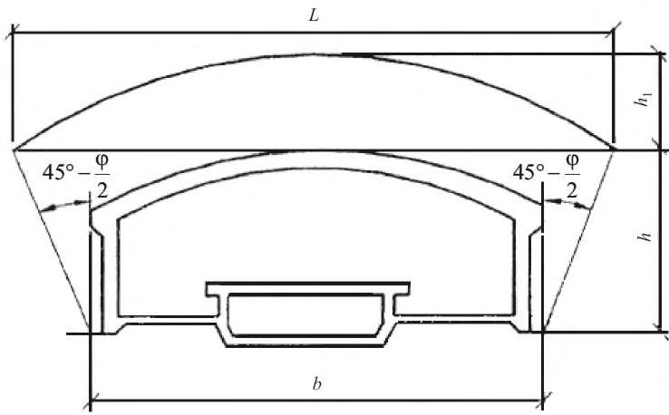
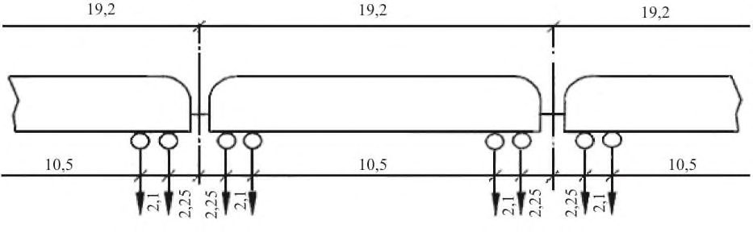
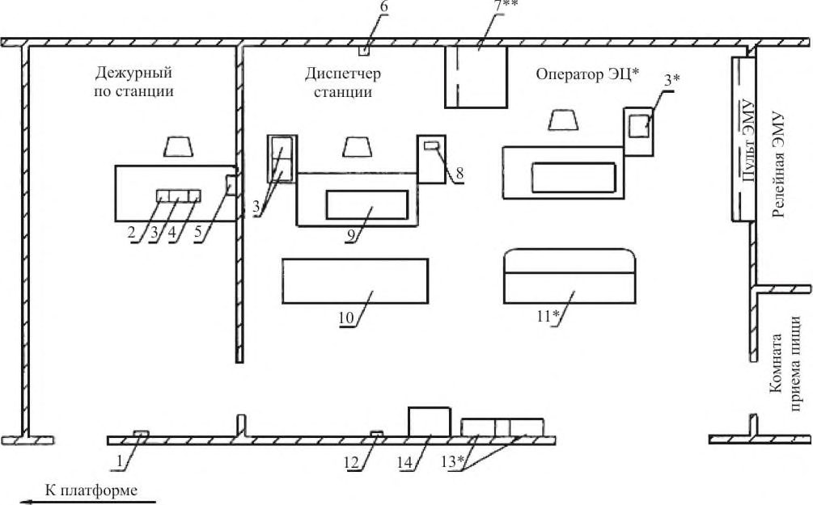

СП 120.13330.2012 «Метрополитены»
О документе: разработчики, утверждение, регистрация, ключевые слова
СВОД ПРАВИЛ СП 120.13330.2022
СНиП 32-02-2003
Издание официальное
Москва 2022
1 ИСПОЛНИТЕЛЬ -Акционерное общество «Центральный научноисследовательский и проектно-экспериментальный институт промышленных зданий и сооружений» (АО «ЦНИИПромзданий»), Акционерное общество «Мосинжпроект» (АО «Мосинжпроект»)
2 ВНЕСЕН Техническим комитетом по стандартизации ТК 465 «Строительство»
3 ПОДГОТОВЛЕН к утверждению Департаментом градостроительной деятельности и архитектуры Министерства строительства и жилищно-коммунального хозяйства Российской Федерации (Минстрой России)
4 УТВЕРЖДЕН приказом Министерства строительства и жилищно-коммунального хозяйства Российской Федерации от 27 декабря 2022 г. № 1131/пр и введен в действие с 28 января 2023 г.
5 ЗАРЕГИСТРИРОВАН Федеральным агентством по техническому регулированию и метрологии (Росстандарт). Пересмотр СП 120.13330.2012 «СНиП 32-02-2003 Метрополитены»
В случае пересмотра (замены) или отмены настоящего свода правил соответствующее уведомление будет опубликовано в установленном порядке. Соответствующая информация, уведомление и тексты размещаются также в информационной системе общего пользования - на официальном сайте разработчика (Минстрой России) в сети Интернет
© Минстрой России, 2022
Настоящий нормативный документ не может быть полностью или частично воспроизведен, тиражирован и распространен в качестве официального издания на территории Российской Федерации без разрешения Минстроя России
Дата введения - 2023-01-28
УДК 625 (063.13)
Ключевые слова: метрополитен, тоннели, станции, транспорт
Введение
Настоящий свод правил разработан в целях соблюдения требований Федерального закона от 30 декабря 2009 г. № 384-ФЗ «Технический регламент о безопасности зданий и сооружений» и с учетом требований федеральных законов от 27 декабря 2002 г. № 184-ФЗ «О техническом регулировании», от 22 июня 2008 г. № 123-ФЗ «Технический регламент о требованиях пожарной безопасности».
Пересмотр выполнен авторским коллективом: АО «Мосинжпроект» при участии: АО «Метрогипротранс», ОАО «НИПИИ «Ленметрогипротранс», АО «Моспромпроект», ООО «Институт Мосинжпроект», НИТУ «МИСИС», ГАУ «НИАЦ», ГУП «Московский метрополитен», ГУП «Петербургский метрополитен», МУП «Новосибирский метрополитен», МП «Нижегородское метро», МП «Самарский метрополитен», ЕМУП «Метрополитен», Федеральной Палаты пожарно-спасательной отрасли, Тоннельной Ассоциации России, ООО «НИЦ Тоннельной ассоциации», АО ЦНИИТС, ФГБУ ВНИИПО МЧС России, ООО «Центр исследований опасных факторов пожаров» под научным руководством канд. техн. наук Д.С. Конюхова, д-ра техн. наук И.Я. Дормана , Д.А. Дощатова, канд. техн. наук Е.Г. Козина, А.И. Данилова, канд. техн. наук В.П. Чижикова при участии: д-ра техн. наук В.Е. Меркина, В.П. Кивлюка, Н.Ф. Бабушкина, А.В. Мягкова, Д.А. Цюпы, В.А. Белякова, С.П. Антонова, Л.Л. Борзенкова, О.В. Власовой, В.Р. Власюка, Н.Г. Волковой, А.В. Ефремова, С.А. Жукова, А.И.Кесарева, канд. техн. наук Т. Е. Кобидзе, Е.Г. Королева, А.Ю. Костюченко, канд. техн. наук А.А. Кубышкина, Г.В. Кузьминой, д-ра техн. наук Е.Ю. Куликовой, А.Б. Лебедькова, Ю.В. Ломоносова, Т.Б. Михальковой, И.О. Наумова, А.В. Некрасова, д-ра техн. наук А.Н. Панкратенко, канд. техн. наук А.Г. Полянкина, А.М. Потокиной, Д.А. Пентегова, канд. техн. наук В.П. Прохорова, М.А. Родиной, канд. техн. наук В.E. Русанова, Д.Е. Савельевой, Г.О. Смирновой, В.И Силуянова, А.Е. Соболева, Р.Л. Супруна, А.Н. Тихонова, Д.В. Устинова, В.Б. Фадеевой, А.А. Федорова, канд. геол.-минерал. наук М.П. Федоровой, В.В. Шабановой, Е.А. Цигичко, Р.Х. Черкесова.
Subways
1Область применения
2Нормативные ссылки
- В настоящем своде правил использованы нормативные ссылки на следующие документы:
ГОСТ 9.602-2016 Единая система защиты от коррозии и старения. Сооружения подземные. Общие требования к защите от коррозии.
- ГОСТ 12.1.005-88 Система стандартов безопасности труда. Общие санитарногигиенические требования к воздуху рабочей зоны
- ГОСТ 12.4.026-2015 Система стандартов безопасности труда. Цвета сигнальные, знаки безопасности и разметка сигнальная. Назначения и правила применения. Общие технические требования и характеристики. Методы испытаний
- ГОСТ 17.1.3.13-86 Охрана природы. Гидросфера. Общие требования к охране поверхностных вод от загрязнения
ГОСТ 1412-85 Чугун с пластинчатым графитом для отливок. Марки
ГОСТ 3262-75 Трубы стальные водогазопроводные. Технические условия
- ГОСТ 5746-2015 (ISO 4190-1:2010) Лифты пассажирские. Основные параметры и размеры
ГОСТ 6942-98 Трубы чугунные канализационные и фасонные части к ним. Технические условия
ГОСТ 7293-85 Чугун с шаровидным графитом для отливок. Марки
- ГОСТ 7392-2014 Щебень из плотных горных пород для балластного слоя железнодорожного пути. Технические условия
ГОСТ 8732-78 Трубы стальные бесшовные горячедеформированные. Сортамент
ГОСТ 8816-2014 Брусья деревянные для стрелочных переводов. Технические условия
ГОСТ 9583-75 Трубы чугунные напорные, изготовленные методами центробежного и полунепрерывного литья. Технические условия
ГОСТ 9940-81 Трубы бесшовные горячедеформированные из коррозионно-стойкой стали. Технические условия
ГОСТ 9941-81 Трубы бесшовные холодно- и теплодеформированные из коррозионностойкой стали. Технические условия
ГОСТ 10060-2012 Бетоны. Методы определения морозостойкости
ГОСТ 10180-2012 Бетоны. Методы определения прочности по контрольным образцам ГОСТ 10434-82 Соединения контактные электрические. Классификация. Общие технические требования
ГОСТ 10704-91 Трубы стальные электросварные прямошовные. Сортамент
ГОСТ 14254-2015 (IEC 60529:2013) Степени защиты, обеспечиваемые оболочками (Код IP)
ГОСТ 18105-2018 Бетоны. Правила контроля и оценки прочности
ГОСТ 18599-2001 Трубы напорные из полиэтилена. Технические условия
ГОСТ 22830-77 Шпалы деревянные для метрополитена. Технические условия
ГОСТ 22845-2018 Лифты. Лифты электрические. Монтаж и пусконаладочные работы.
Правила организации и производства работ, контроль выполнения и требования к результатам работ
ГОСТ 23961-80 Метрополитены. Габариты приближения строений, оборудования и подвижного состава
ГОСТ 24846-2019 Грунты. Методы измерения деформаций оснований зданий и сооружений
ГОСТ 24940-2016 Здания и сооружения. Методы измерения освещенности
ГОСТ 26633-2015 Бетоны тяжелые и мелкозернистые. Технические условия
ГОСТ 27751-2014 Надежность строительных конструкций и оснований. Основные положения
ГОСТ 30247.1-94 (ИСО 834-75) Конструкции строительные. Методы испытаний на огнестойкость. Несущие и ограждающие конструкции
ГОСТ 30732-2020 Трубы и фасонные изделия стальные с тепловой изоляцией из пенополиуретана с защитной оболочкой. Технические условия
ГОСТ 31173-2016 Блоки дверные стальные. Технические условия
ГОСТ 31384-2017 Защита бетонных и железобетонных конструкций от коррозии. Общие технические требования
ГОСТ 31416-2009 Трубы и муфты хризотилцементные. Технические условия
ГОСТ 31565-2012 Кабельные изделия. Требования пожарной безопасности
ГОСТ 31937-2011 Здания и сооружения. Правила обследования и мониторинга технического состояния
ГОСТ 32803-2014 Бетоны напрягающие. Технические условия
ГОСТ 33652-2019 (EN 81-70:2018) Лифты. Специальные требования безопасности и доступности для инвалидов и других маломобильных групп населения
ГОСТ 33973-2016 Железнодорожная электросвязь. Поездная радиосвязь. Технические требования и методы контроля
ГОСТ 34028-2016 Прокат арматурный для железобетонных конструкций. Технические условия
ГОСТ 34377-2018 Лифты гидравлические. Монтаж и пусконаладочные работы. Правила организации и производства работ, контроль выполнения и требования к результатам работ
ГОСТ 34378-2018 Конструкции ограждающие светопрозрачные. Окна и двери. Производство монтажных работ, контроль и требования к результатам работ
ГОСТ 34682.1-2020 (EN 81-40:2008) Платформы подъемные для инвалидов и других маломобильных групп населения. Требования безопасности к устройству и установке. Часть 1. Платформы лестничные и с наклонным перемещением
ГОСТ 34682.2-2020 (EN 81-41:2010) Платформы подъемные для инвалидов и других маломобильных групп населения. Требования безопасности к устройству и установке. Часть 2. Платформы с вертикальным перемещением
ГОСТ ISO 2531-2012 Трубы, фитинги, арматура и их соединения из чугуна с шаровидным графитом для водо- и газоснабжения. Технические условия
ГОСТ Р 12.2.143-2009 Система стандартов безопасности труда. Системы фотолюминисцентные эвакуационные. Требования и методы контроля
ГОСТ Р 51261-2017 Устройства опорные стационарные реабилитационные. Типы и технические требования
ГОСТ Р 51664-2000 Системы и аппаратура автоматического управления каналами радиосвязи. Основные параметры
ГОСТ Р 52875-2018 Указатели тактильные наземные для инвалидов по зрению. Технические требования
ГОСТ Р 52941-2008 (ИСО 4190-9:1984) Лифты пассажирские. Проектирование систем вертикального транспорта в жилых зданиях наружные
ГОСТ Р 53254-2009 Техника пожарная. Лестницы пожарные стационарные. Ограждения кровли. Общие технические требования. Методы испытаний
ГОСТ Р 53278-2009 Техника пожарная. Клапаны пожарные запорные. Общие технические требования. Методы испытаний
ГОСТ Р 53279-2009 Техника пожарная. Головки соединительные пожарные. Общие технические требования. Методы испытаний
ГОСТ Р 54475-2011 Трубы полимерные со структурированной стенкой и фасованные части к ним для систем наружной канализации. Технические условия
ГОСТ Р 54560-2015 Трубы и детали трубопроводов из реактопластов, армированных стекловолокном, для водоснабжения, водоотведения, дренажа и канализации. Технические условия
ГОСТ Р 55842-2013 (ИСО 30061:2007) Освещение аварийное. Классификация и нормы
ГОСТ Р 57278-2016 Ограждения защитные. Классификация. Общие положения
ГОСТ Р 57327-2016 Двери металлические противопожарные. Общие технические требования и методы испытаний
ГОСТ Р 58486-2019 Охрана природы. Почвы. Номенклатура показателей санитарного состояния
ГОСТ Р МЭК 60793-1-1-2018 Волокна оптические. Часть 1-1. Методы измерений и проведение испытаний. Общие положения и руководство
ГОСТ Р ЕН 779-2014 Фильтры очистки воздуха общего назначения. Определение технических характеристик
ГОСТ Р ИСО 10467-2013 Трубопроводы из армированных стекловолокном термореактопластов на основе ненасыщенных полиэфирных смол для напорной и безнапорной канализации и дренажа. Общие технические требования
СП 2.13130.2020 Системы противопожарной защиты. Обеспечение огнестойкости объектов защиты
СП 3.13130.2009 Системы противопожарной защиты. Система оповещения и управления эвакуацией людей при пожаре. Требования пожарной безопасности
СП 4.13130.2013 Системы противопожарной защиты. Ограничение распространения пожара на объектах защиты. Требования к объемно-планировочным и конструктивным решениям (с изменениями № 1, № 2)
СП 7.13130.2013 Отопление, вентиляция и кондиционирование. Требования пожарной безопасности (с изменениями № 1, № 2)
СП 8.13130.2020 Системы противопожарной защиты. Наружное противопожарное водоснабжение. Требования пожарной безопасности
СП 9.13130.2009 Техника пожарная. Огнетушители. Требования к эксплуатации
- СП 10.13130.2020 Системы противопожарной защиты. Внутренний противопожарный водопровод. Нормы и правила проектирования
- СП 12.13130.2009 Определение категорий помещений, зданий и наружных установок по взрывопожарной и пожарной опасности (с изменением № 1)
- СП 14.13330.2018 «СНиП II-7-81* Строительство в сейсмических районах» (с изменением № 2)
- СП 16.13330.2017 «СНиП II-23-81* Стальные конструкции» (с изменениями № 1, № 2, № 3)
- СП 17.13330.2017 «СНиП II-26-76 Кровли» (с изменениями № 1, № 2)
- СП 20.13330.2016 «СНиП 2.01.07-85* Нагрузки и воздействия» (с изменениями № 1, № 2, № 3)
- СП 21.13330.2012 «СНиП 2.01.09-91 Здания и сооружения на подрабатываемых территориях и просадочных грунтах» (с изменением № 1)
- СП 22.13330.2016 «СНиП 2.02.01-83* Основания зданий и сооружений» (с изменениями № 1, № 2, № 3, № 4)
- СП 25.13330.2020 «СНиП 2.02.04-88 Основания и фундаменты на вечномерзлых грунтах»
- СП 26.13330.2012 «СНиП 2.02.05-87 Фундаменты машин с динамическими нагрузками» (с изменением № 1)
- СП 28.13330.2017 «СНиП 2.03.11-85 Защита строительных конструкций от коррозии» (с изменениями № 1, № 2, № 3)
- СП 30.13330.2020 «СНиП 2.04.01-85* Внутренний водопровод и канализация зданий»
- СП 31.13330.2021 «СНиП 2.04.02-84* Водоснабжение. Наружные сети и сооружения»
- СП 32.13330.2018 «СНиП 2.04.03-85 Канализация. Наружные сети и сооружения» (с изменениями № 1, № 2)
- СП 35.13330.2011 «СНиП 2.05.03-84* Мосты и трубы» (с изменениями № 1, № 2, № 3)
- СП 37.13330.2012 «СНиП 2.05.07-91* Промышленный транспорт» (с изменениями № 1, № 2, № 3, № 4)
- СП 44.13330.2011 «СНиП 2.09.04-87* Административные и бытовые здания» (с изменениями № 1, № 2, № 3, № 4)
- СП 45.13330.2017 «СНиП 3.02.01-87 Земляные сооружения, основания и фундаменты» (с изменениями № 1, № 2, № 3)
- СП 47.13330.2016 «СНиП 11-02-96 Инженерные изыскания для строительства. Основные положения» (с изменением № 1)
- СП 48.13330.2019 «СНиП 12-01-2004 Организация строительства» (с изменением № 1)
- СП 51.13330.2011 «СНиП 23-03-2003 Защита от шума» (с изменениями № 1, № 2)
- СП 52.13330.2016 «СНиП 23-05-95* Естественное и искусственное освещение» (с изменениями № 1, № 2)
- СП 56.13330.2021 «СНиП 31-03-2001 Производственные здания»
- СП 59.13330.2020 «СНиП 35-01-2001 Доступность зданий и сооружений для маломобильных групп населения»
- СП 60.13330.2020 «СНиП 41-01-2003 Отопление, вентиляция и кондиционирование воздуха»
- СП 63.13330.2018 «СНиП 52-01-2003 Бетонные и железобетонные конструкции. Основные положения» (с изменениями № 1, № 2)
- СП 66.13330.2011 Проектирование и строительство напорных сетей водоснабжения и водоотведения с применением высокопрочных труб из чугуна с шаровидным графитом (с изменениями № 1, № 2)
СП 69.13330.2016 «СНиП 3.02.02-84 Подземные горные выработки» СП 70.13330.2012 «СНиП 3.03.01-87 Несущие и ограждающие конструкции» (с изменениями № 1, № 3, № 4) СП 72.13330.2016 «СНиП 3.04.03-85 Защита строительных конструкций и сооружений от коррозии» (с изменением № 1) СП 73.13330.2016 «СНиП 3.05.01-85 Внутренние санитарно-технические системы зданий» (c изменением № 1) СП 76.13330.2016 «СНиП 3.05.06-85 Электротехнические устройства» СП 77.13330.2016 «СНиП 3.05.07-85 Системы автоматизации» СП 116.13330.2012 «СНиП 22-02-2003 Инженерная защита территорий, зданий и сооружений от опасных геологических процессов. Основные положения» (с изменением № 1) СП 119.13330.2017 «СНиП 32-01-95 Железные дороги колеи 1520 мм» (с изменением № 1) СП 122.13330.2012 «СНиП 32-04-97 Тоннели железнодорожные и автодорожные» (с изменениями № 1, № 2) СП 124.13330.2012 «СНиП 41-02-2003 Тепловые сети» (с изменениями № 1, № 2) СП 131.13330.2020 «СНиП 23-01-99* Строительная климатология» СП 132.13330.2011 Обеспечение антитеррористической защищенности зданий и сооружений. Общие требования проектирования СП 134.13330.2012 Системы электросвязи зданий и сооружений. Основные положения проектирования (с изменениями № 1, № 2, № 3) СП 136.13330.2012 Здания и сооружения. Общие положения проектирования с учетом доступности для маломобильных групп населения (с изменением № 1) СП 165.1325800.2014 «СНиП 2.01.51-90 Инженерно-технические мероприятия по гражданской обороне» (с изменениями № 1, № 2) СП 246.1325800.2016 Положение об авторском надзоре за строительством зданий и сооружений СП 248.1325800.2016 Сооружения подземные. Правила проектирования СП 249.1325800.2016 Коммуникации подземные. Проектирование и строительство закрытым и открытым способами (с изменением № 1) СП 263.1325800.2016 Приспособления метрополитена под защитные сооружения гражданской обороны. Общие правила проектирования СП 296.1325800.2017 Здания и сооружения. Особые воздействия (с изменением № 1) СП 297.1325800.2017 Конструкции фибробетонные с неметаллической фиброй. Правила проектирования (с изменением № 1) СП 305.1325800.2017 Здания и сооружения. Правила проведения геотехнического мониторинга при строительстве СП 317.1325800.2017 Инженерно-геодезические изыскания для строительства. Общие правила производства работ СП 360.1325800.2017 Конструкции сталефибробетонные. Правила проектирования СП 373.1325800.2018 Источники теплоснабжения автономные. Правила проектирования СП 381.1325800.2018 Сооружения подпорные. Правила проектирования СП 446.1325800.2019 Инженерно-геологические изыскания для строительства. Общие правила производства работ СП 473.1325800.2019 Здания, сооружения и комплексы подземные. Правила градостроительного проектирования мониторинга
СП 474.1325800.2019 Метрополитены. Правила обследования и строительных конструкций подземных сооружений
СП 482.1325800.2020 Инженерно-гидрометеорологические изыскания для строительства. Общие правила производства работ
СП 486.1311500.2020 Системы противопожарной защиты. Перечень зданий, сооружений, помещений и оборудования, подлежащих защите автоматическими установками пожаротушения и системами пожарной сигнализации. Требования пожарной безопасности
СанПиН 1.2.3685-21 Гигиенические нормативы и требования к обеспечению безопасности и (или) безвредности для человека факторов среды обитания
СанПиН 2.1.3684-21 Санитарно-эпидемиологические требования к содержанию территорий городских и сельских поселений, к водным объектам, питьевой воде и питьевому водоснабжению населения, атмосферному воздуху, почвам, жилым помещениям, эксплуатации производственных, общественных помещений, организации и проведению санитарно-противоэпидемических (профилактических) мероприятий
СанПиН 2.6.1.2523-09 Нормы радиационной безопасности (НРБ-99/2009)
СанПиН 3.3686-21 Санитарно-эпидемиологические требования по профилактике инфекционных болезней
СП 2.5.3650-20 Санитарно-эпидемиологические требования к отдельным видам транспорта и объектам транспортной инфраструктуры
Примечание - При пользовании настоящим сводом правил целесообразно проверить действие ссылочных документов в информационной системе общего пользования -на официальном сайте федерального органа исполнительной власти в сфере стандартизации в сети Интернет или по ежегодному информационному указателю «Национальные стандарты», который опубликован по состоянию на 1 января текущего года, и по выпускам ежемесячного информационного указателя «Национальные стандарты» за текущий год. Если заменен ссылочный документ, на который дана недатированная ссылка, то рекомендуется использовать действующую версию этого документа с учетом всех внесенных в данную версию изменений. Если заменен ссылочный документ, на который дана датированная ссылка, то рекомендуется использовать версию этого документа с указанным выше годом утверждения (принятия). Если после утверждения настоящего свода правил в ссылочный документ, на который дана датированная ссылка, внесено изменение, затрагивающее положение, на которое дана ссылка, то это положение рекомендуется применять без учета данного изменения. Если ссылочный документ отменен без замены, то положение, в котором дана ссылка на него, рекомендуется применять в части, не затрагивающей эту ссылку. Сведения о действии сводов правил целесообразно проверить в Федеральном информационном фонде стандартов.
3Термины, определения и сокращения
В настоящем своде правил применены следующие термины с соответствующими определениями:
- 3.1.1 автоматизированное рабочее место диспетчера; АРМ
- Комплекс технических средств, позволяющих диспетчеру соответствующих подразделений метрополитена управлять оборудованием и получать достоверную информацию о его техническом состоянии в любое время.
- 3.1.2 акт незаконного вмешательства
- Противоправное действие (бездействие), в том числе террористический акт, угрожающее безопасной деятельности транспортного комплекса, повлекшее за собой причинение вреда жизни и здоровью людей, материальный ущерб либо создавшее угрозу наступления таких последствий.
- 3.1.3аппарель
- Элемент обустройства пешеходного пути в виде монолитной или накладной конструкции, в том числе на лестничном марше или через препятствие, состоящий из двух раздельных направляющих для перемещения средств на колесах и прохода между ними.
- 3.1.4 армометаллоблок
- Пространственная конструкция из металлического листа, приваренных к нему стержней рабочей арматуры и ребер жесткости.
- 3.1.5 блок технологических, бытовых и служебных помещений; БСП
- Группа помещений различного функционального назначения, предназначенная для постоянного или временного пребывания персонала метрополитена.
- 3.1.6 вентиляционный канал
- Помещение (тоннель, отсек, коридор, вентиляционный ствол и др.) со свободным проходом по всей длине, используемое в качестве воздуховода в системах тоннельной вентиляции.
- 3.1.7 вентиляционно-кабельный канал
- Помещение (см. 3.1.5), используемое также для размещения в нем кабелей.
- 3.1.8 вентиляционный киоск (венткиоск, киоск)
- Отдельно расположенное или встроенное сооружение на поверхности земли, используемое в вентиляционных системах для забора или выброса воздуха.
- 3.1.9 визуальные средства информации
- Носители информации в виде зрительно различимых текстов, знаков, символов, световых сигналов и т. п., передаваемых в том числе людям с нарушением функций органов слуха.
- 3.1.10 воздушный промежуток контактного рельса; ВПКР
- Зона, где контактный рельс разделяется на отдельные секции.
- 3.1.11 вывод людей (эвакуация)
- Процесс организованного самостоятельного движения людей и перемещения МГН обслуживающим персоналом наружу из зданий и сооружений метрополитена при возникновении нештатных и аварийных ситуаций.
- 3.1.12 гальваническая связь
- Наличие непрерывной связи по металлу в строительных конструкциях, в проводниках электрических сетей и др.
- 3.1.13 гальваническое разделение
- Отсутствие непрерывной связи по металлу в строительных конструкциях, в проводниках электрических сетей и т. п.
- 3.1.14 дверь типа «метро»
- Дверь (в том числе остекленная) на путях движения пассажиров из ударопрочного материала двухстороннего открывания. 3.1.15 заложение линии:
- глубокое
- Заложение, при котором станции и перегонные тоннели сооружаются через вертикальные стволы и наклонные эскалаторные тоннели без вскрытия дневной поверхности; мелкое: Заложение, при котором станции сооружаются открытым способом (в том числе из-под перекрытия), со вскрытием дневной поверхности, перегонные тоннели открытым или закрытым способом. 3.1.16 зона безопасности: Зона (полоса) у края функционального элемента (площадки), предназначенная для предотвращения травмоопасных ситуаций. Отдельное подземное помещение для размещения пассажиров при возникновении чрезвычайной ситуации, угрожающей жизни или здоровью пассажиров, оборудованное отдельными системами пожарной
- 3.1.17 зона коллективной защиты пассажиров
- безопасности, освещения, связи, вентиляции и канализации.
- 3.1.18 инфраструктура метрополитена
- Технологический комплекс устройств, сооружений, оборудования для обеспечения перевозочного процесса. [ГОСТ Р 58897-2020, пункт 13] ИБП: Электроустановка, включающая в и 3.1.19 источник бесперебойного питания; себя аккумуляторную батарею, преобразователь питающего напряжения распределительное устройство. СП 120.13330.2022
- 3.1.20 кабельное сооружение
- Сооружение, предназначенное для размещения в нем кабелей, кабельных муфт и отдельных видов оборудования.
- 3.1.21 кабельная шахта
- Вертикальное кабельное сооружение, у которого высота в несколько раз больше стороны сечения.
- 3.1.22 крепь (временная крепь)
- Временная несущая конструкция, возводимая в подземных выработках в процессе проходки для сохранения их заданных размеров, защиты от обрушения и пучения окружающего грунта. Примечание - При обеспечении долговечности и расчетном обосновании допускается использовать в качестве элемента постоянной конструкции (обделки).
- 3.1.23 линия метрополитена (линия)
- Автономная часть метрополитена со станциями, перегонами и тупиками, предназначенная для движения поездов по одному маршруту.
- 3.1.24метрополитен
- Вид внеуличного транспорта, движение подвижного состава которого осуществляется на электротяге по двум рельсам.Источник: ГОСТ Р 58897-2020, пункт 21
- 3.1.26 обделка
- Постоянная несущая строительная конструкция, закрепляющая подземную выработку и образующая ее внутреннюю поверхность.
- 3.1.27 объект строительства (объект)
- Сооружение или группа сооружений, объединяемых единым функциональным назначением или технологическим процессом, строительство которого выполняется по разработанной и утвержденной в установленном порядке проектной документации.
- 3.1.28 опасные производственные объекты
- Объекты, на которых используются, транспортируются и хранятся взрывчатые вещества; используются стационарно установленные грузоподъемные механизмы (за исключением лифтов, подъемных платформ для инвалидов) и эскалаторы; ведутся проходческие работы, а также работы в подземных условиях.
- 3.1.29 охранная зона
- Участок городской территории, расположенный над проектируемым, строящимся и существующим объектом инфраструктуры метрополитена и в непосредственной близости от него, в границах которой при производстве строительных и иных видов работ устанавливается особый режим использования, в части ограничения хозяйственной деятельности третьих лиц.
- 3.1.30 павильон метрополитена (павильон)
- Наземное каркасное строение со стеновым и кровельным заполнениями или наземное бескаркасное сооружение с наружными стенами и покрытием, предназначенное для защиты от атмосферных воздействий лестничных сходов, лестничных клеток и лифтов метрополитена.
- 3.1.31 пандус
- Сооружение, имеющее наклонную по направлению движения поверхность и предназначенное для перемещения с одного уровня горизонтальной поверхности пути на другой.
- 3.1.32 пассажиропоток
- Количество пассажиров, которые проезжают или проходят через данное сечение на пути следования в одну или в обе стороны в единицу времени.
- 3.1.33 пассажирский конвейер
- Установка с механическим приводом для перемещения пассажиров, в которой несущая поверхность пластин или ленты остается параллельной направлению ее движения.
- 3.1.34 пассажирская зона (помещение)
- Объемно-планировочные элементы станции (кассовый и эскалаторный залы, переходные коридоры и эскалаторные тоннели, лестницы, платформенные залы и др.), предназначенные для передвижения и пребывания пассажиров.
- 3.1.35 перегонный тоннель
- Тоннель для движения поездов между станциями.
- 3.1.36 перекрываемый (неперекрываемый) ВПКР
- Промежуток между двумя участками контактного рельса, длина которого меньше (больше) расстояния между токоприемниками одного вагона.
- 3.1.37 пересадочное сооружение
- Сооружение между станциями разных линий, предназначенное для перехода пассажиров с одной станции на другую, включающее пассажирские помещения (коридоры), эскалаторы и лестницы, производственные и бытовые помещения.
- 3.1.38 подъемное устройство
- Стационарное грузоподъемное устройство периодического действия для подъема и спуска пользователей. Примечание - Подъемные устройства с вертикальным перемещением - устройства, отклонение траектории движения которых от вертикали не превышает 15 о , подъемные устройства с наклонным перемещением - отклонение траектории движения от горизонтали не превышает 75 о .
- 3.1.39 полоса движения
- Часть пешеходного пути, предназначенная для движения в один ряд в одном направлении.
- 3.1.40 полупоперечная (продольно-поперечная) система тоннельной вентиляции
- Система вентиляции, принцип действия которой -осуществление распределенной подачи в транспортный отсек воздушного потока перпендикулярно продольной оси тоннеля с дальнейшим его перемещением параллельно продольной оси тоннеля посредством механически побуждаемой тяги систем тоннельной вентиляции через вентиляционный отсек. Примечание - При работе указанных систем в режиме противодымной защиты движение дымового и воздушных потоков осуществляется в обратном направлении относительно нормального режима эксплуатации.
- 3.1.41 пошерстное (противошерстное) движение поезда
- Движение поезда по стрелочному переводу в направлении от крестовины к остряку (от остряка к крестовине).
- 3.1.42 провозная способность, тыс. пассажиров в час
- Объем пассажирских перевозок при максимально возможных размерах движения (число вагонов в поезде и поездов в час).
- 3.1.43 пропускная способность
- Размер движения (пар поездов), который может быть выполнен за единицу времени (час, сутки) в зависимости от технической оснащенности и способа организации движения поездов. Примечание - Также может означать расчетное число пассажиров для различных участков пути их движения.
- 3.1.44 пусковой комплекс
- Участок линии, часть станции, электродепо или другого объекта метрополитена совместно с их инженерными системами, выделяемый из состава объекта строительства, способный обеспечивать временное функционирование сооружения в первый период эксплуатации. 3.1.45 пути линии:
- главные
- Пути перегона, а также путь станции, являющийся непосредственным продолжением пути прилегающего перегона;
- станционные
- Пути в границах станции: главные, приемо-отправочные, для оборота и отстоя или для отстоя подвижного состава, пути специального назначения (в том числе пути соединительных ветвей, находящиеся в границах станций);
- соединительные
- Пути для соединения путей линии с путями электродепо или путями другой линии;
- предохранительные
- Тупиковый путь, предназначенный для предупреждения выхода подвижного состава на маршруты следования подвижного состава.
- 3.1.46 продольная система тоннельной вентиляции
- Реверсивная система вентиляции однопутных и двухпутных перегонных тоннелей метрополитена с массовой вытяжкой, в которой воздух перемещается по тоннелю в продольном направлении. 3.1.47 пути электродепо:
- парковые
- Пути с централизованными и нецентрализованными стрелками, расположенные на территории, прилегающей к электродепо, мотодепо, производственным мастерским, ремонтным базам и предназначенные для выполнения маневров, обкатки, выдачи на линию или приема с линии подвижного состава, предназначенного для выполнения работ по эксплуатации метрополитена;
- деповские
- Пути для отстоя, технического обслуживания и ремонта подвижного состава, расположенные в зданиях.
- 3.1.48 путь движения
- Пешеходный путь, используемый пассажирами и МГН, в том числе на креслах-колясках, для перемещения по участку (дорожки, тротуары, пандусы и т. д.), а также внутри зданий и сооружений.
- 3.1.49 сильноточная (слаботочная) сторона тоннеля
- Сторона тоннеля, находящаяся слева (справа) по отношению к движущемуся в правильном направлении поезду.
- 3.1.50 система гарантированного электропитания; СГЭ
- Электроустановка, состоящая из устройства АВР, агрегата бесперебойного питания, включающего в себя аккумуляторную батарею, преобразователи электроэнергии и распределительное устройство.
- 3.1.51 станция
- Комплекс сооружений и устройств, позволяющих производить операции по приему, отправлению подвижного состава и обслуживанию пассажиров.
- 3.1.52 станции закрытого типа
- Станция, пассажирский зал которой отделен от путевых тоннелей стенами (колоннами) с автоматическими станционными дверями.
- 3.1.53 тактильное покрытие
- Покрытие с ощутимым изменением фактуры поверхностного слоя.
- 3.1.54 тактильные средства информации
- Носители информации, передаваемой инвалидам по зрению и воспринимаемой путем осязания, т. е. прикосновением к ним.
- 3.1.55 теплый период года (для подземных сооружений)
- Время года, в течение которого среднемесячные температуры наружного воздуха выше или равны естественной температуре грунта, измеренной до начала эксплуатации метрополитена.
- 3.1.56 транспортная безопасность
- Состояние защищенности объектов транспортной инфраструктуры и транспортных средств от актов незаконного вмешательства.
- 3.1.57 тупик
- Один или несколько станционных путей для оборота, отстоя и технического обслуживания подвижного состава на линии.
- 3.1.58 тупиковый тоннель
- Тоннель метрополитена, не имеющий сквозного проезда и сообщающийся с другими тоннелями только одним концом, может быть предназначен для оборота и/или обслуживания, ночного отстоя поездов.
- 3.1.59 тяговая сеть
- Электрическая сеть, обеспечивающая подвод электроэнергии от подстанции к электроподвижному составу. Примечание - В состав тяговой сети входят контактная сеть метрополитена (3.1.61) и отсасывающая сеть (3.1.62).
- 3.1.60контактная сеть метрополитена
- Комплекс устройств для передачи электрической энергии в контактный рельс.Источник: ГОСТ Р 58897-2020, пункт 15
- 3.1.61 отсасывающая сеть
- Ходовые рельсы, дроссель-трансформаторы, электрические соединители участков ходового рельса одного пути (проводом) и ходовых рельсов разных путей (кабелями или проводами), кабельные отсасывающие линии.
- 3.1.62 уровень
- Часть сооружения между отметками верха перекрытия или пола по грунту и отметкой верха расположенного над ним перекрытия (покрытия), образующая планировочный уровень сооружения (не является уровнем при наличии в его полу проемов, занимающих более 60 % площади этого пола, а также при высоте менее 1,8 м).
- 3.1.63 уровень головок рельсов
- Горизонтальная линия, касательная к верху головок рельсов, - на прямых участках трассы; горизонтальная линия с отклонением от нее на половину возвышения вверх наружного рельса, вниз внутреннего рельса - на участках трассы, требующих устройства возвышения наружного рельса в тоннелях и закрытых наземных участках; горизонтальная линия с отклонением от нее на значение возвышения вверх наружного рельса - на открытых участках трассы, требующих устройства возвышения наружного рельса.
- 3.1.64 уровень подземный
- Уровень с помещениями, расположенный ниже планировочной отметки земли на всю высоту.
- 3.1.65 уровень технический
- Уровень для размещения инженерного оборудования и прокладки коммуникаций, не предназначенный для постоянного пребывания людей. Примечание - Не является уровнем техническое пространство высотой менее 1,8 м, используемое только для прокладки инженерных коммуникаций и установки оборудования, его обслуживающего.
- 3.1.66 установка местной вентиляции; УМВ
- Установка, предназначенная для вентиляции производственных, бытовых, административных и других помещений подземных станций и притоннельных сооружений.
- 3.1.67 установка тоннельной вентиляции; УТВ
- Установка, предназначенная для вентиляции пассажирских помещений подземных станций, перегонных, тупиковых и соединительных тоннелей.
- 3.1.68 холодный период года (для подземных сооружений)
- Время года, в течение которого среднемесячные температуры наружного воздуха ниже естественной температуры грунта, измеренной до начала эксплуатации метрополитена.
- 3.1.69эвакуационный путь (путь эвакуации)
- Путь движения и (или) перемещения людей, ведущий непосредственно наружу или в безопасную зону, удовлетворяющий требованиям безопасной эвакуации людей при пожаре.Источник: 6, статья 2, пункт 49
- 3.1.70эвакуация
- Процесс организованного самостоятельного движения людей непосредственно наружу или в безопасную зону из помещений, в которых имеется возможность воздействия на людей опасных факторов пожара. В настоящем своде правил применены следующие сокращения: АБ - автоматическая блокировка; АБК - административно-бытовой корпус (в электродепо); ``` АВЗ - аварийный запас; АВР - устройство автоматического включения резерва; АЗС - автозаправочная станция; АКБ - аккумуляторная батарея; АКП - автоматический контрольный пункт; АРС - автоматическое регулирование скорости (поездов); АСОП - автоматизированная система оплаты проезда; АТДП - автоматика и телемеханика управления движением поездов; АТС - автоматическая телефонная станция; АУПС - автоматическая установка пожарной сигнализации; АУПТ - автоматическая установка пожаротушения; АУП ТРВ ВД - автоматическая установка пожаротушения тонкораспыленной водой высокого давления (более 3,5 МПа); АФТ антенно-фидерный тракт; БСП - блок служебных помещений; БВР - буровзрывные работы; БКТП - бетонная комплектно-трансформаторная подстанция; БТП - блок технологических помещений; ВЗ - воздушная завеса; ВКУ - видеоконтрольное устройство; ВОУ - водоотливная установка; ВПВ - внутренний противопожарный водопровод; ВТЗ - воздушно-тепловая завеса; ВЦ - вычислительный центр; ВЧШГ - высокопрочный чугун с шаровидным графитом; ГГО - громкоговорящее оповещение; ГГС - громкоговорящая связь; ГЖ - горючие жидкости; ГРО - геодезическая разбивочная основа; ГРЩ - главный распределительный щит; ГСМ - горюче-смазочные материалы; ДП - диспетчерский пункт; ДПД - диспетчерский пункт движения (поездов); ДПЛ - диспетчерский пункт линии (метрополитена); ДПС - диспетчерский пункт станции; ДПЭ - диспетчерский пункт электроснабжения; ДПЭМ - диспетчерский пункт электромеханической службы; ДПЭС - диспетчерский пункт эскалаторной службы; ДСП - дежурный по станции; ДСП-КПОП - дежурный по станции (станционной платформы) - командный пункт охраны порядка; ДТ - дроссель-трансформатор; ДУ - дистанционное управление; ДЦ - диспетчерская централизация; ЕДЦ - единый диспетческий центр; ЕРИС-М - единая радиоинформационная сеть метрополитена; ЗР - заводской ремонт; ЗЭП -здание эксплуатационного персонала, непосредственно связанного с обслуживанием участка линии; ИТП - индивидуальный тепловой пункт; ``` КЗ - короткое замыкание; КИП - контрольно-измерительный пункт; КММ - коробка малой механизации; КР - капитальный ремонт; КСМ - кладовая смазочных материалов; ЛАЦ - линейный аппаратный цех; ЛВЖ - легковоспламеняемые жидкости; МВУ - местная водоотливная установка; МГН - маломобильные группы населения; НТСС - научно-техническое сопровождение строительства; ОБУВ - ориентировочный безопасный уровень воздействия; ОДК - оперативный дистанционный контроль; ОЗЭП объединенное здание эксплуатационного персонала для размещения инженерно-технического аппарата дистанции служб, осуществляющего руководство эксплуатационными подразделениями; ОРК - отстойно-ремонтный корпус; ОС - охранная сигнализация; ОТС - оперативно-технологическая связь; ОУ - осветительная установка; ПА - преобразовательный агрегат; ПДЗ - противодымная защита; ПДК - предельно допустимая концентрация; ПДР - подъемочный деповский ремонт; ПОС - проект организации строительства; ПП - понизительная подстанция; ППд - понизительная подстанция депо; ППР - проект производства работ; ПР - периодический ремонт; ПРРС - проверочная радиосвязь; ПТО - пункт технического обслуживания (подвижного состава); ПУОТБ - пост управления обеспечением транспортной безопасности; ПЯ - путейский ящик; РП - распределительный пункт; РУ - распределительное устройство; РЦ - рельсовая цепь; СДД - система диспетчерской связи движения поездов; СИРБД - система интервального регулирования и безопасности движения поездов; СКУД - система контроля и управления доступом; СМР - строительно-монтажные работы; СОУЭ - система оповещения и управления эвакуацией людей; СПДЗ - система противодымной защиты; СПК - суммарный показатель концентрации; СПС - система пожарной сигнализации; СР - средний ремонт; СТП - совмещенная тяговая подстанция; СУРС - система управления работой станции с применением технических средств; Т - тяговая подстанция; ТКО - твердые коммунальные отходы; ТО - техническое обслуживание; ТП - трансформаторная подстанция; СП 120.13330.2022 ТПП - тяговопонизительная подстанция; ТПМК - тоннелепроходческий механизированный комплекс; ТППд - тягово-понизительная подстанция электродепо; ТР - текущий ремонт; ТРВ ВД - тонкораспыленная вода высокого давления; ТФОП - телефонная сеть общего пользования; ТЭЦ - теплоэлектроцентраль; УГР - уровень головки рельса; УЗО - устройство защитного отключения; УКПТ - устройство контроля прохода в тоннель; ЦСП - цифровая система передачи; ЭМС - электромеханическая служба; ЭМУ - электромеханическая установка; ЭЦ - электрическая централизация; IP (Ingress Protection Code- «международные коды защиты» (англ.)) -классификация способа защиты, обеспечиваемого оболочкой технического устройства от доступа к опасным частям, попадания внешних твердых предметов и (или) воды и проверяемого стандартными методами испытаний.Источник: 6, статья 2, пункт 50
4Общие положения
- технические решения, обеспечивающие безаварийный процесс строительства и эксплуатации сооружений метрополитена, а также прилегающих к ним подземных и наземных объектов;
- применение современных материалов, оборудования, изделий, соответствующих стандартам и другим нормативным документам;
- индустриализацию строительства на базе современных средств комплексной механизации и автоматизации строительного производства, а также применение типовых конструкций и узлов, оборудования и аппаратуры, отвечающих мировым стандартам;
- технические средства, объемно-планировочные решения подземных сооружений и условия эксплуатации, обеспечивающие пожарную безопасность и безопасность движения поездов, безопасность пассажиров при нахождении во всех пассажирских помещениях станционных комплексов и в подвижном составе;
- технические решения, обеспечивающие выполнение требований санитарных норм и правил, правил охраны труда рабочих и служащих в периоды строительства и эксплуатации;
- максимальную механизацию и автоматизацию процессов эксплуатации, повышение комфорта проезда пассажиров, повышение производительности труда персонала, соблюдение принципов эргономики и технической эстетики;
- мероприятия по охране окружающей среды, памятников истории и культуры;
- мероприятия, обеспечивающие необходимый уровень доступности зданий и сооружений, связанных с перевозкой пассажиров всех категорий;
- мероприятия, исключающие оказание влияния вибраций от движения поездов на конструкции зданий и сооружений окружающей застройки.
Линию метрополитена необходимо соединять:
- с одной или двумя пересекающими ее линиями - однопутной соединительной веткой;
- с электродепо на этой линии - двухпутной соединительной веткой.
В соответствии с заданием на проектирование допускается предусматривать большее количество соединительных ветвей.
Допускается использование одного электродепо для двух линий с однотипным подвижным составом в течение первого периода эксплуатации второй линии.
СП 120.13330.2022
При необходимости возможно устройство оборота поездов перед станцией.
На первом пусковом участке линии протяженностью до 20 км в одном из тупиков необходимо предусматривать ПТО подвижного состава с производственными и санитарнобытовыми помещениями.
При протяженности линии свыше 20 км ПТО следует размещать по заданию на проектирование. По заданию на проектирование в ПТО может предусматриваться только смотровая канава без помещений.
ПТО следует располагать вблизи станции, находящейся с противоположной стороны линии от электродепо.
У станции, вблизи которой предусматривается строительство электродепо, ПТО не размещается.
- а) первый период - с первого по десятый годы;
- б) второй период - с десятого по двадцатый годы;
- в) третий период - расчетный срок (более 20 лет).
Примечание - На новых участках линий метрополитена в городской застройке, в которой имеются защитные сооружения гражданской обороны или предусмотрены мероприятия гражданской обороны, допускается не предусматривать дополнительные сооружения и устройства.
Подразделения персонала, непосредственно связанные с обслуживанием линии, следует располагать на станциях.
Указанные объекты должны быть изготовлены из негорючих материалов и размещаться с таким расчетом, чтобы они не препятствовали проходу и обслуживанию пассажиров и не снижали ширины пути эвакуации, установленной требованиями пожарной безопасности, не влияли на технологию обслуживания сооружений, устройств и оборудования метрополитена, а также должны соответствовать требованиям 5.16.
Управление работой станций следует предусматривать с применением системы управления работой станции (СУРС) согласно приложению А.
Диспетчерские пункты линий должны состоять из отраслевых ДП: управления движением поездов, электроснабжения, эскалаторов, электромеханических устройств, а также ДП охраны общественного порядка и безопасности, пожарной безопасности, пассажирских конвейеров, подъемно-транспортного оборудования для МГН.
Необходимо предусматривать оборудование ДП АРМ, системами телеуправления и необходимыми видами диспетчерских связей на современной элементной базе.
5Инженерные изыскания и проектирование
5.1Инженерные изыскания
5.1.1 Инженерно-геологические изыскания
5.1.1.1 Инженерно-геологические изыскания должны проводиться на следующих стадиях проектирования:
1) Инженерно-геологические изыскания для подготовки документов территориального планирования, документации по планировке территории и выбора площадок (трасс) строительства.
2) Инженерно-геологические изыскания для архитектурно-строительного проектирования при подготовке проектной документации объектов капитального строительства:
2.1) Инженерно-геологические изыскания для подготовки проектной документации первый этап.
2.2) Инженерно-геологические изыскания для подготовки проектной документации второй этап.
3) Инженерно-геологические изыскания при строительстве и реконструкции зданий и сооружений.
Результаты инженерно-геологических изысканий должны содержать необходимые и достаточные данные для проектирования и выполнения сопутствующих расчетов.
5.1.1.2 Требования к проведению инженерно-геологических изысканий на всех стадиях проектирования, а также в период строительства и эксплуатации метрополитена приведены в [36], СП 47.13330 и СП 446.1325800.
На каждый этап изысканий составляют техническое задание и программу инженерногеологических изысканий. Техническое задание на выполнение инженерно-геологических изысканий должно содержать данные о расположении и длине трассы, включая ее варианты, перечень и идентификацию объектов метрополитена, габариты зданий и сооружений, данные о предполагаемых типах фундаментов, глубине заложения фундаментов и подземных частей зданий и сооружений, проектируемых нагрузках на основание, данные о высоте и этажности зданий и сооружений, диаметрах и глубине заложения тоннелей, способах строительства сооружений, ограждающих конструкций, а также данные о техногенных нагрузках на геологическую среду.
5.1.1.3 Программа изысканий устанавливает состав, объемы и сроки инженерногеологических изысканий в зависимости от особенностей проектируемого сооружения, стадии изысканий, степени изученности территории, категории сложности инженерногеологических условий и технологии проходки. При необходимости к составлению технического задания и программы инженерно-геологических изысканий на территориях со сложными инженерно-геологическими условиями привлекаются профильные и научноисследовательские организации. Выполнение инженерно-геологических изысканий без программы изысканий не допускается.
Инженерно-геологические изыскания для архитектурно-строительного проектирования для разработки проектной документации - первый этап
5.1.1.4 Требования к определению категорий сложности инженерно-геологических условий приведены в [36].
Результаты инженерно-геологических изысканий должны содержать необходимые и достаточные данные: для проектирования подземных сооружений и их комплексов; выполнения расчетов по предельным состояниям, геотехнических расчетов с применением нелинейных моделей грунтов (5.1.1.15, 5.18.3); выполнения долгосрочного прогноза изменения инженерно-геологических и гидрогеологических условий территории (5.1.3.5, 5.1.1.8); разработки мероприятий по обеспечению сохранности и безопасной эксплуатации окружающей застройки и подземных сооружений, расположенных в зоне влияния строительства (5.18.3, 5.24.2, 6.1.2, 6.6.3.15), в соответствии с требованиями СП 22.13330.
5.1.1.5 Инженерно-геологические изыскания на этапе разработки проектной документации проводят в объеме, необходимом для комплексного изучения инженерногеологических условий выбранной трассы и прогнозных изменений в период строительства с детальностью, достаточной:
- для выбора оптимального варианта положения трассы в плане и по глубине заложения;
- выбора видов конструкций и способов производства работ, позволяющих вести строительство с минимальным воздействием на окружающую геологическую среду и поверхностную инфраструктуру;
- проектирования перегонных тоннелей, станций, наклонных тоннелей, вертикальных шахтных стволов, других подземных и надземных сооружений, а также депо метрополитена.
- 5.1.1.6 В состав изысканий должны входить следующие основные работы:
- сбор, обобщение и анализ архивных инженерно-геологических материалов;
- рекогносцировка местности вдоль трассы;
- плановая разбивка, плановая и высотная привязка выработок и скважин;
- проходка разведочных выработок;
- опробование грунтов и подземных вод;
- полевые исследования грунтов;
- опытно-фильтрационные работы;
- геофизические исследования;
- лабораторные исследования грунтов и химического состава подземных вод;
- камеральная обработка результатов изысканий и составление отчета.
Для районов с неблагоприятными инженерно-геологическими условиями следует проводить целевые научно-исследовательские работы с привлечением профильных организаций. Глубина разведочных скважин должна превышать глубину заложения подошвы тоннеля на 10-15 м.
При назначении объема инженерно-геологических изысканий необходимо размещать разведочные выработки в зоне влияния строительства и обеспечить получение данных для разработки защитных мероприятий, обеспечивающих сохранность окружающей застройки. Зона влияния проектируемого объекта подземного строительства устанавливается в соответствии с требованиями 5.18.3.3.
Примерные расстояния между скважинами по трассе при выполнении изысканий для первого этапа должны соответствовать таблице 5.1.
Таблица 5.1
| Примерное расстояние между скважинами по трассе, м | Примерное расстояние между скважинами по трассе, м | Примерное расстояние между скважинами по трассе, м | |
|---|---|---|---|
| Категория сложности инженерно- геологических условий | Глубокое заложение | Мелкое заложение | Мелкое заложение |
| Открытый способ строительства | Закрытый способ строительства | ||
| I | 200-250 (300) | 150-200 | 100-120 (200) |
| II | 80-120 (200) | 100-150 | 80-100 (150) |
| III | 50-100 | 50-100 | Менее 80 м* |
Примечание - В настоящей таблице не учтены объемы бурения для опытно-фильтрационных работ, гидрогеологического мониторинга, инженерно-геологических изысканий на участках строительства стволов шахт, станций, инженерно-геологических аномалий в виде тектонических разломов, погребенных речных долин и участков распространения специфических грунтов. В скобках приведены расстояния между скважинами для категорий сложности I и II при использовании тоннелепроходческих комплексов. Для детально изученных территорий расстояния между скважинами допускается увеличивать на 10 % - 15 % для категорий сложности I и II.
5.1.1.7 В результате проведения изысканий и исследований необходимо устанавливать и оценивать:
- геологическое строение (генезис, стратиграфическую принадлежность, залегание, формы избирательной эрозии, состав и состояние пород), геоморфологические, тектонические и неотектонические условия;
- гидрогеологические условия;
- геологические процессы и явления;
- складчатые и разрывные нарушения, трещиноватость пород;
- степень сейсмоопасности;
- геокриологические условия;
- физико-механические и теплофизические свойства грунтов с прогнозной оценкой их изменения под эксплуатационным воздействием метрополитена;
- агрессивность подземных вод и грунтов.
- 5.1.1.8 При выявлении неблагоприятных для строительства зон следует устанавливать границы их распространения, интенсивность развития, степень влияния на условия строительства и работу сооружения.
5.1.1.9 Показатель степени нарушенности скальных грунтов по методу RQD (отношение суммы ненарушенных кусков керна длиной 10 см и более к длине исследуемого интервала скважины, %) следует принимать по таблице 5.2.
Таблица 5.2
| Величина RQD | Состояние грунта |
|---|---|
| 90-100 | Ненарушенное |
| 45-90 | Незначительно нарушенное |
| 50-75 | Слабо нарушенное |
| 25-50 | Сильно нарушенное |
| 0-25 | Весьма сильно нарушенное |
5.1.1.10 Скважины, пробуренные в процессе изысканий, подлежат обязательной ликвидации с тампонированием ствола скважины, обеспечивающим невозможность движения подземных вод по стволу скважины, в том числе в процессе строительства, с учетом требований [49]. При недостаточности требований [49] для обеспечения невозможности движения подземных вод по стволу скважины, разрабатывают проект тампонирования скважины.
Акты на тампонирование скважин с указанием способа тампонажа выпускаются отдельным отчетом.
5.1.1.11 При попадании разведочных скважин в сечение проектируемых сооружений или на расстояние менее 10 м от контура сооружения акты на тампонаж, координаты скважин направляются в строительную организацию для составления специального проекта производства работ в зоне расположения скважин. Глубина разведочных скважин должна превышать глубину заложения подошвы тоннеля на 10-15 м.
5.1.1.12 При проложении трассы линии метрополитена в плотной городской застройке, природоохранных зонах, на участках с возможным расположением не указанных на геоподоснове коммуникаций, погребенных элементов сооружений (фундаментов, свай и т. п.) и других незадокументированных подземных объектов выполняются геофизические исследования. Результаты геофизических исследований увязываются с данными других исследований и отражаются в отчете.
5.1.1.13 Гидрогеологические исследования обеспечивают получение исходных данных для определения водопритоков в проектируемых сооружениях, размеров будущих депрессионных воронок, способа выполнения строительных работ, оценки возможного барражирования от воздействия строящихся сооружений, направления и скорости движения грунтовых вод, гидростатического давления на обделку, температуры, химического состава и агрессивности подземных вод к материалу конструкции сооружений. С этой целью должны проводиться опытные наливы, откачки, геофизические исследования и пр.
5.1.1.14 В случае необходимости определения свойств песчано-глинистых грунтов в зоне взаимодействия геологической среды с сооружениями проводятся полевые исследования свойств грунтов (статическое и динамическое зондирование, прессиометрические и штамповые испытания), в том числе с построением кривой нагрузки для определения модуля деформации грунта при повторном нагружении.
5.1.1.15 Комплекс лабораторных исследований физико-механических свойств грунтов приведен в СП 47.13330. При необходимости получения дополнительной информации по согласованию с проектной и (или) профильной научно-исследовательской организацией, выполняющей геотехнические расчеты и (или) научное сопровождение строительства, проводят специальные исследования свойств грунтов. Примерный перечень дополнительных физико-механических характеристик грунтов приведен в приложении Ж .
5.1.1.16 По итогам проведенных изысканий и исследований составляется технический отчет, состав и содержание которого должны соответствовать требованиям СП 47.13330. В заключении отчета должны быть сформулированы рекомендации по инженерногеологическим условиям проходки тоннелей и предложения о необходимости последующих изысканий, рекомендации по проектированию.
Инженерно-геологические изыскания для архитектурно-строительного проектирования - второй этап
5.1.1.17 Инженерно-геологические изыскания на втором этапе на стадии рабочей документации проводят в целях детализации сведений об инженерно-геологических условиях, уточнения инженерно-геологической обстановки на участках применения специальных методов работ, подготовки мониторинга геологической среды.
5.1.1.18 В состав изысканий должны входить следующие основные работы:
- сбор, обобщение и анализ инженерно-геологических материалов;
- рекогносцировка местности вдоль трассы;
- плановая разбивка, плановая и высотная привязка выработок и скважин [35];
- проходка разведочных выработок;
- опробование грунтов и подземных вод;
- полевые исследования грунтов;
- опытно-фильтрационные работы;
- геофизические исследования;
- лабораторные исследования грунтов и химического состава подземных вод;
- камеральная обработка результатов изысканий и составление отчета.
В районах развития неблагоприятных инженерно-геологических процессов, при необходимости, рекомендуется проводить научно-исследовательские работы с привлечением профильных организаций.
- 5.1.1.19 В результате изысканий и исследований необходимо детализировать:
- геологическое строение (условия залегания, состав пород), геоморфологию, тектонику, неотектонику;
- гидрогеологические условия;
- геологические процессы и явления;
- складчатые и разрывные нарушения, трещиноватость пород;
- геокриологические условия;
- физико-механические и теплофизические свойства грунтов;
- агрессивность подземных вод и грунтов;
- температуру подземных вод и грунтов.
СП 120.13330.2022
Примерные расстояния между скважинами по трассе для второго этапа с учетом скважин, пробуренных на первом этапе, должны соответствовать таблице 5.3.
Таблица 5.3
| Категория сложности | Примерное расстояние между скважинами по трассе, м | Примерное расстояние между скважинами по трассе, м | Примерное расстояние между скважинами по трассе, м |
|---|---|---|---|
| Категория сложности | Глубокое заложение | Мелкое заложение | Мелкое заложение |
| инженерно-геологических | Глубокое заложение | Открытый способ строительства | Закрытый способ строительства |
| I | 100-150 (200) | 80-100 | 50-80 (120) |
| II | 50-100 (150) | 50-80 | 30-50 (100) |
| III | 30-60 | 30-50 | Менее 30* |
Примечание - В настоящей таблице не учтены объемы бурения для опытно-фильтрационных работ, гидрогеологического мониторинга, инженерно-геологических изысканий на участках строительства стволов шахт, станций, инженерно-геологических аномалий в виде тектонических разломов, погребенных речных долин и участков распространения специфических грунтов. В скобках приведены расстояния между скважинами для категорий сложности I и II при использовании тоннелепроходческих комплексов. Для детально изученных территорий расстояния между скважинами можно увеличивать на 10 %-15 % для категорий сложности I и II.
Инженерно-геологические изыскания в период строительства и эксплуатации
- 5.1.1.20 Инженерно-геологические изыскания в период строительства и эксплуатации должны содержать материалы о состоянии и изменениях компонентов геологической среды в сфере ее взаимодействия с тоннелями на основании СП 47.13330.
- 5.1.1.21 В период строительства следует устанавливать соответствие инженерногеологических условий, принятых в проектной и рабочей документации, фактическим на основе обследования инженерно-геологической обстановки при проходке тоннелей, шахтных стволов, котлованов и других выработок для оперативного решения вопросов по увязке полученных данных с производством строительных работ. На участках, представляющих опасность в геологическом и инженерно-геологическом отношении (зоны развития карстовых и суффозионных явлений, оползневые процессы, подтопление, зоны развития неустойчивых грунтов и т. д.), в период строительства необходимо предусматривать мониторинг изменения компонентов геологической среды.
- 5.1.1.22 При строительстве тоннельных сооружений необходимо на период проходки предусматривать выполнение геофизических исследований по трассе тоннелей.
- 5.1.1.23 Результаты инженерно-геологических изысканий в период строительства следует представлять в соответствии с требованиями СП 47.13330 в виде технического отчета, в котором должны быть отражены результаты анализов грунтов, грунтовых вод, геофизических исследований и стационарных наблюдений с приложением зарисовок в масштабе от 1:20 до 1:100.
- 5.1.1.24 При проектировании реконструкций станций инженерно-геологические изыскания следует проводить по отдельному техническому заданию и программе с учетом особенностей сооружений.
5.1.2 Инженерно-геодезические изыскания
- 5.1.2.1 Инженерно-геодезические изыскания должны обеспечивать получение топографо-геодезических материалов и данных о ситуации, рельефе местности (в том числе дна водотоков, водоемов и акваторий), существующих зданиях и сооружениях (наземных, подземных) и других элементах планировки, необходимых для комплексной оценки природных и техногенных условий по проектируемой трассе линии, обоснования проектирования, строительства и эксплуатации метрополитена.
- 5.1.2.2 Требования к полноте результатов инженерно-геодезических изысканий, цели и задачи таких изысканий, требования к технологии, методике и точности инженерногеодезических изысканий определяются техническим заданием, требования к составлению которого приведены в [35], СП 47.13330, СП 317.1325800.
- 5.1.2.3 Средства измерений, используемые для изысканий, должны быть утверждены для применения на территории Российской Федерации и поверены в соответствии с требованиями действующего законодательства.
- 5.1.2.4 Изыскания на стадии разработки проектной документации следует проводить по всем вариантам проектируемых трасс.
В состав работ должны входить:
- сбор и анализ топографических (инженерно-топографических) карт и планов в масштабах 1:500-1:2000, фотопланов (аэро- и космофотопланов), землеустроительных и лесоустроительных планов, материалов изысканий прошлых лет по развитию опорных геодезических сетей, земельного, градостроительного и иных кадастров;
- обследование пунктов государственной геодезической опорной сети и выполнение сгущения или развития ее в случае необходимости;
- обновление топографических карт и планов, если они не соответствуют современному состоянию ситуации, рельефа местности и расположения подземных коммуникаций;
- создание геодезических планово-высотных сетей и выполнение топографической съемки при отсутствии необходимых топографических материалов;
- промеры глубин на реках и водоемах, нивелирование поверхности дна водотоков и составление продольного профиля на исследуемом участке реки и поперечных профилей по промерным створам;
- геодезические работы при изучении опасных природных и техноприродных процессов (карст, склоновые процессы, переработка берегов рек, морей, озер и водохранилищ, а также в случаях подрабатывания и подтопления территории);
- изучение материалов по деформациям оснований зданий и сооружений на земной поверхности, происшедшим до начала строительства;
- рекогносцировочное обследование вариантов трассы и мест расположения сооружений при необходимости визуальных осмотров в целях дополнительной проверки достоверности имеющихся материалов.
Изыскания для архитектурно-строительного проектирования первого этапа должны обеспечивать составление:
- уточненного ситуационного плана в масштабах 1:2000 - 1:500 с указанием на нем существующих и проектируемых внешних коммуникаций, инженерных сетей;
- проекта инженерной подготовки строительных площадок с указанием существующих и подлежащих сносу зданий и сооружений;
- чертежей плана линии и вертикальной планировки территории;
- плана природоохранных мероприятий;
- материалов геодезического обеспечения строительства.
- 5.1.2.5 Ширину полосы съемки вдоль трассы следует устанавливать с учетом полосы отвода для строительства и природных условий местности, производства инженерногеологических изысканий и градостроительной ситуации.
- 5.1.2.6 В технический отчет должны входить:
- общие сведения о физико-географических и геологических особенностях района работ, о топографо-геодезической изученности района изысканий;
СП 120.13330.2022
- схемы созданной геодезической планово-высотной основы, картограмма топографогеодезической изученности по трассе строительства, абрисы закрепленных пунктов геодезической планово-высотной основы, а также каталоги их координат и высот;
- планы подземных сооружений;
- планы и продольные профили по вариантам трасс (по согласованию с заказчиком последние допускается не составлять);
- графики наблюдений за оседаниями и деформациями сооружений, земной поверхности;
- сведения о методике и технологии выполненных работ, о проведении технического контроля и приемке работ;
- заключение о результатах работ;
- схемы расположения геологических выработок или выкопировок с карты, каталог координат и высот.
5.1.2.7 Изыскания для архитектурно-строительного проектирования второго этапа должны обеспечить получение дополнительных топографо-геодезических материалов и данных для доработки генерального плана трассы, уточнения и детализации проектных решений.
В состав изысканий входят:
- анализ и доработка материалов, выполненных на предшествующих стадиях проектирования;
- рекогносцировочное обследование участков трассы и сооружений вдоль проектируемой трассы линии;
- при необходимости - полевое трассирование (вынос трассы в натуру);
- планово-высотная привязка трассы к пунктам государственной (опорной) геодезической сети;
- топографическая съемка полосы местности вдоль трассы (съемка текущих изменений при наличии планов) в масштабах 1:1000-1:500, на сложных участках в масштабе 1:200, досъемка переходов, пересечений и вновь появившихся (после уточнений для разработки проекта) инженерных коммуникаций;
- привязка геолого-разведочных скважин, выработок, геофизических и других точек инженерных изысканий;
- инструментальные наблюдения за оседаниями и деформациями зданий, сооружений и земной поверхности до начала строительства;
- составление и размножение инженерно-топографических планов;
- геодезическое обеспечение других видов изысканий;
- составление технического отчета.
5.1.2.8 В состав изысканий для обеспечения строительно-монтажных работ входят:
- определение проектного положения объекта строительства на местности и в подземных горных выработках;
- создание геодезического и маркшейдерского опорного планового и высотного обоснований строительства;
- наблюдения за осадками и деформациями зданий и сооружений на поверхности и подземных сооружений и их частей в процессе строительства, в том числе при выполнении локального мониторинга, за опасными природными и техноприродными процессами;
- геодезическо-маркшейдерские работы по определению в натуре скрытых подземных сооружений и их частей в процессе строительства и при строительстве, ремонтных и других работах;
- составление исполнительных чертежей подземных и наземных сооружений и другой технической документации;
- создание геодезического опорного планового и высотного обоснования до начала строительно-монтажных работ на весь объект (линию) строительства метрополитена;
- создание маркшейдерского опорного планового и высотного обоснования по мере сооружения подземных горных выработок открытого и закрытого способов строительства метрополитена.
5.1.3 Инженерно-экологические изыскания
- 5.1.3.1 Инженерно-экологические изыскания (ИЭИ) выполняются в целях оценки состояния окружающей среды в районах предполагаемого сооружения объектов метрополитена, а также для получения исходных данных, необходимых для разработки проектной документации для строительства (реконструкции) объектов метрополитена.
Подготовка и реализация проектной документации без выполнения ИЭИ не допускаются.
- 5.1.3.2 Выполняются ИЭИ для экологического обоснования строительства объектов метрополитена в целях предотвращения, снижения или ликвидации неблагоприятных экологических и связанных с ними социальных, экономических и других последствий и сохранения оптимальных условий жизни населения, а также для изучения значимых компонентов природной среды при оценке экологической безопасности объектов метрополитена.
- 5.1.3.3 В соответствии с положениями [2] -[ 4] и СП 47.13330 заказчик и исполнитель определяют состав работ, осуществляемых в ходе ИЭИ, их объем и метод выполнения с учетом специфики соответствующих территорий и расположенных на них земельных участков.
- 5.1.3.4 Программа и техническое задание ИЭИ разрабатываются согласно СП 47.13330.
- 5.1.3.5 Для строительства ИЭИ должны проводиться в три этапа: подготовительный, полевые исследования, камеральная обработка материалов.
На подготовительном этапе осуществляются сбор и анализ фондовых и опубликованных материалов и данных о состоянии природной среды, предполевое дешифрирование, поиск объектов-аналогов, функционирующих в сходных природных условиях.
На основании технического задания в состав полевых исследований могут быть включены:
- маршрутные наблюдения с покомпонентным описанием природной среды и ландшафтов в целом, состояния наземных и водных экосистем, источников и признаков загрязнения;
- эколого-гидрогеологические исследования;
- почвенные исследования;
- геоэкологическое опробование и оценка загрязненности атмосферного воздуха, почв, грунтов, поверхностных и подземных вод;
- исследование и оценка радиационной обстановки;
- газогеохимические исследования;
- исследование и оценка физических воздействий;
- изучение растительности и животного мира;
- социально-экономические исследования;
- санитарно-эпидемиологические и медико-биологические исследования;
- стационарные наблюдения (экологический мониторинг);
- разминирование, археология, сейсмические исследования.
Геоэкологическое опробование почв, грунтов и подземных вод целесообразно проводить в увязке с инженерно-геологическими изысканиями.
На этапе камеральной обработки материалов проводят комплекс лабораторных исследований, включая химико-аналитические, токсикологические, санитарноэпидемиологические и др., выполняют анализ полученных данных, осуществляют прогнозы динамики геоэкологического состояния окружающей среды, в том числе оценку теплового влияния многолетней эксплуатации метрополитена на естественный тепловой режим окружающего грунтового массива, разрабатывают рекомендации, составляют технический отчет.
При выполнении эколого-гидрогеологических исследований следует устанавливать:
- наличие водоносных горизонтов, которые могут испытывать негативное влияние в процессе строительства и эксплуатации подземных сооружений и подлежат защите от загрязнения и истощения; области питания грунтовых вод (в случае, если они находятся в зоне возможного негативного влияния проектируемого подземного сооружения) и области разгрузки грунтовых вод, на характеристиках которых может отразиться подземное строительство;
- условия залегания и распространения горизонтов грунтовых вод и их защищенность; состав, фильтрационные и сорбционные свойства грунтов зоны аэрации и водовмещающих пород, их пространственную изменчивость;
- закономерности движения грунтовых вод; наличие и характер гидравлической взаимосвязи между горизонтами и поверхностными водами;
- условия формирования под влиянием проектируемого подземного строительства новых водоносных горизонтов; температуру и химический состав грунтовых вод, их загрязненность вредными компонентами; возможность проникновения в грунтовые воды загрязнений из поверхностных вод;
- влияние изменений в грунтовых водах на охраняемые территории и рекреационные ресурсы города; возможность, характер и степень влияния техногенных факторов на изменение гидрогеологических условий.
5.1.3.6 Отчетная документация о выполнении инженерных изысканий (технический отчет) должна содержать текстовую и графическую части, а также приложения (в текстовой, графической и цифровой формах).
5.1.3.7 При оформлении технического отчета следует руководствоваться положениями СП 47.13330.
5.1.3.8 При строительстве или реконструкции сооружений метрополитена необходимо выполнять экологический мониторинг, обеспечивающий контроль:
- источников выбросов загрязняющих веществ в атмосферный воздух;
- источников сброса загрязняющих веществ в поверхностные воды;
- воздействия образующих отходов;
- состояния загрязнения почв;
- состояния загрязнения подземных вод.
5.1.4 Инженерно-гидрометеорологические изыскания
5.1.4.1 Инженерно-гидрометеорологические изыскания выполняют для комплексного изучения гидрометеорологических условий территории проектируемых наземных сооружений метрополитена в целях получения необходимых и достаточных материалов для подготовки документов территориального планирования и планировки территории, архитектурно-строительного проектирования, строительства и реконструкции зданий и сооружений.
5.1.4.2 Программа и задание на выполнение инженерно-гидрометеорологических изысканий разрабатываются в соответствии с СП 47.13330 и СП 482.1325800.
- 5.1.4.3 Инженерно-гидрометеорологические изыскания выполняются в комплексе с инженерно-геологическими и инженерно-геодезическими изысканиями в соответствии с требованиями СП 482.1325800.
Проектирование
5.2Пропускная и провозная способность
Для расчета устройств электроснабжения пропускную способность линии следует увеличить на 20 %.
Для расчета устройств АТДП пропускную способность линии следует увеличить на 10 % исходя из учета перспективной интенсивности движения.
При определении размеров движения на линии в часы пик (число пар поездов в час и число вагонов в поезде) вместимость вагонов следует принимать из расчета, что все места для сидения заняты пассажирами и на 1 м² свободной площади пола пассажирского салона размещается не более 4,5 стоящего пассажира (при необходимости данный показатель определяется заказчиком в рамках указанного норматива).
Пропускную способность участков пути следует принимать по таблице 5.4.
Таблица 5.4
| Наименование участка пути | Ширина пути, м | Пропускная способность, чел./ч |
|---|---|---|
| Горизонтальный путь: одностороннее движение двустороннее движение через дверной проем | 1,0 1,0 | 4000 3400 3200 |
| Контрольный пункт: автоматический на входе автоматический на выходе | 0,5-1,0 0,5-1,0 | |
| 0,8 | ||
| Эскалатор | 1000 2500 | |
| Пассажирский конвейер Лестница: вверх | 1,0 | |
| 8200 | ||
| одностороннее движение одностороннее движение вниз двустороннее движение вверх | 1,0 1,0 | 3000 3500 |
| вниз | 3200 | |
| и | 1,0 |
Примечания
1 Пропускную способность пассажирского подъемно-транспортного оборудования, не указанного в настоящей таблице, принимают по паспортным характеристикам оборудования.
Расчет числа лифтов, обеспечивающих необходимую провозную способность, допускается выполнять применительно к ГОСТ Р 52941-2008 (приложение А).
- 2 Указанная в настоящей таблице пропускная способность горизонтального пути движения пассажиров не относится к движению пассажиров по платформе.
Допускается проведение расчетов пассажиропотоков по региональным расчетным методикам.
5.3План и продольный профиль
- 600 - на главных путях;
- 200 - на съездах станционных путей;
- 150 - на соединительных путях.
В трудных условиях допускается уменьшение радиусов, м:
- до 300 - на главных путях;
- до 100 - на соединительных путях.
Над перегонными тоннелями, на участках пересечения магистральных улиц и дорог это расстояние должно быть не менее 3 м. В остальных местах допускается уменьшать расстояние при условии защиты тоннелей от промерзания и возможности устройства над ними дорожного покрытия.
Таблица 5.5
| Главные пути | Главные пути | Главные пути | Главные пути | Главные пути | Главные пути | Соединительные пути | Соединительные пути | Соединительные пути | Соединительные пути | Соединительные пути |
|---|---|---|---|---|---|---|---|---|---|---|
| Радиус кривой, м | Возвышение наружного рельса, мм | Длина переходной кривой, м | Скорость движения поездов, км/ч, при непогашенном ускорении, м/с 2 | Скорость движения поездов, км/ч, при непогашенном ускорении, м/с 2 | Скорость движения поездов, км/ч, при непогашенном ускорении, м/с 2 | Радиус кривой, м | Возвышение наружного рельса, мм | Длина переходной кривой, м | Скорость движения поездов, км/ч, при непогашенном ускорении, м/с 2 | Скорость движения поездов, км/ч, при непогашенном ускорении, м/с 2 |
| Радиус кривой, м | Возвышение наружного рельса, мм | Длина переходной кривой, м | -0,4 | 0 | +0,4 | Радиус кривой, м | Возвышение наружного рельса, мм | Длина переходной кривой, м | 0 | +0,7 |
| 3000 | - | - | - | - | 125 | 600 | - | 0-60 | - | 75 |
| 2000 | 10 | 20-30 | - | 40 | 110 | 500 | - | 0-60 | - | 65 |
| 1500 | 20 | 20-40 | - | 50 | 100 | 400 | - | 0-60 | - | 60 |
| 1200 | 40 | 20-50 | - | 60 | 100 | 350 | - | 0-60 | - | 55 |
|---|---|---|---|---|---|---|---|---|---|---|
| 1000 | 60 | 30-70 | - | 70 | 100 | 300 | - | 0-60 | - | 50 |
| 800 | 80 | 40-80 | 30 | 70 | 95 | 250 | - | 0-60 | - | 45 |
| 600 | 100 | 50-80 | 40 | 70 | 90 | 200 | 10 | 0-60 | 0 | 45 |
| 500 | 120 | 60-80 | 45 | 70 | 85 | 175 | 30 | 0-60 | 0 | 45 |
| 400 | 120 | 60-80 | 40 | 60 | 75 | 150 | 40 | 0-60 | 0 | 45 |
| 350 | 120 | 60-80 | 40 | 60 | 70 | 125 | 70 | 0-60 | 5 | 45 |
| 300 | 120 | 60-80 | 35 | 55 | 65 | 100 | 110 | 0-60 | 0 | 45 |
Примечания
- 1 Переходные кривые разбиваются по радиоидальной спирали.
- 2 На главных путях при возможности следует принимать бóльшие значения переходных кривых.
- 3 В трудных условиях на главных путях длины переходных кривых и возвышения наружного рельса следует определять расчетом.
Возвышение наружного рельса в тоннелях и на закрытых наземных участках необходимо предусматривать путем поднятия наружного рельса на половину требуемого возвышения и опускания на ту же величину внутреннего рельса, на открытых наземных участках - путем поднятия наружного рельса на требуемое возвышение.
При расположении кривой частично в тоннеле и на открытом наземном участке возвышение наружного рельса устраивается так же, как и на кривых, расположенных в тоннелях.
Отвод возвышения наружного рельса должен быть предусмотрен на протяжении переходной кривой, а при отсутствии переходной кривой - на круговой кривой и на прямом участке, примыкающем к круговой кривой, по расчету.
Уклон отвода возвышения наружного рельса должен быть не более 2 ‰ в сумме на обе рельсовые нити, а для трудных условий - 3 ‰.
где R 1 и R 2 - радиусы первой и второй кривых.
На соединительных путях прямые и кривые участки допускается сопрягать без переходных кривых.
Длина круговой кривой с постоянной величиной возвышения наружного рельса должна быть не менее 15 м.
Длину прямого участка, не имеющего возвышения наружного рельса, следует принимать, м, не менее:
- а) на главных путях - 20, в трудных условиях - 15;
- б) на соединительных путях - 15.
Для двухпутных тоннелей кругового очертания расстояние между осями смежных путей следует принимать по ГОСТ 23961, как для двухпутных тоннелей без промежуточных опор, габариты приближения строений допускается принимать Смк или Смп по ГОСТ 23961.
Продольный уклон подземных участков линий должен быть не более 40 ‰, открытых наземных участков - не более 35 ‰.
В трудных условиях на одном или двух смежных подземных и закрытых наземных участках общей протяженностью не более 1500 м, которые разделены станцией или перегоном протяженностью до 500 м, допускается принимать продольный уклон не более 45 ‰ с учетом уклона отвода возвышения наружного рельса при его наличии. При необходимости на этих участках скорость движения поездов следует ограничивать с применением технических средств.
Станционные пути, предназначенные для оборота и отстоя поездов, необходимо располагать на уклоне 3 ‰ с подъемом к станции. Транзитный перепуск дренажных вод по дренажным станционным лоткам не допускается.
Прямолинейные смежные элементы продольного профиля при алгебраической разности значений уклонов, равной или превышающей 2 ‰, следует сопрягать в вертикальной плоскости круговыми кривыми радиусами, м:
3000 - на главных путях у станции;
5000 - на главных путях перегонов;
1500 - на соединительных путях.
Для трудных условий допускается уменьшать радиусы вертикальных кривых на главных путях у станций до 2000 м, на перегонах - до 3000 м.
Сопряжение двух элементов продольного профиля, направленных в разные стороны с уклонами, превышающими 5 ‰, следует выполнять элементом профиля с уклоном не более 5 ‰.
Длину элемента продольного профиля необходимо принимать не менее расчетной длины поезда на перспективу, за исключением нескольких смежных элементов, направленных в одну сторону, с алгебраической разностью значений уклонов менее 2 ‰, сумма длин которых должна составлять не менее расчетной длины поезда на перспективу.
Длину прямой вставки между смежными кривыми следует принимать не менее 50 м.
Длину станционного пути необходимо определять как расстояние от центра стрелочного перевода до бруса упора.
Длина станционного пути для оборота поездов и отстоя одного состава в ночное время должна быть больше длины поезда в перспективе на 100 м - для подземных участков и на 135 м - для открытых и приравненных к ним участков.
Длину станционного пути для оборота поездов и отстоя в ночное время нескольких составов следует определять как сумму длин составов в перспективе и расстояний, м:
- а) между составами - 5;
- б) от состава до бруса упора - 7, при наличии ПТО - 15;
- в) от центра стрелочного перевода до первого состава ночного отстоя - 35.
Длину станционного пути за временно конечной станцией на последующем продлении главного пути, предназначенного для отстоя составов, следует определять как сумму длины состава в перспективе и расстояний, м:
- а) между составами - 5;
- б) от состава до бруса упора - 7; в) дополнительно, при противошерстном движении поездов по стрелочному переводу на станционный путь - 47, при пошерстном движении - 22.
Длина станционного пути за временно конечной станцией на последующем продлении главного пути должна быть кратной 12,5 м.
Длина предохранительного пути должна быть не менее 135 м, а пути, не используемого для указанной цели, - не менее 47 м, считая от края платформы станции.
При применении других схем станционных путей для оборота и отстоя поездов необходимо соблюдать указанные выше расстояния.
Горизонтальное расстояние от оси пути до верхнего края платформы должно составлять не менее: а) на прямом участке - 1500 мм:
- при высоте не менее 1100 мм и не более 1150 мм от УГР - для реконструируемых, эксплуатируемых и вновь построенных служебных платформ и мостиков на смотровых и оборотных (станционных) путях;
- при высоте платформы 1100 мм от УГР - для аварийных платформ, находящихся на перегонах между станциями; б) на кривых - по расчету от нормы 1500 мм в зависимости от радиуса кривого участка пути и возвышения наружного рельса
При двух станционных путях платформу следует размещать между путями, при обосновании допускается размещать две односторонние платформы.
При одном станционном пути платформу следует размещать с одной стороны.
Островная служебная платформа по всей длине должна иметь ограждение со стороны поезда высотой не менее 1100 мм с разрывом напротив первой и последней пассажирских дверей каждого вагона. Ограждение должно располагаться за пределами габарита приближения оборудования.
Для спуска с платформы в торцах должны быть лестницы шириной в уровне пола платформы не менее 500 мм из негорючих материалов с ограждением высотой 1100 мм. Внизу лестницы должна быть площадка шириной не менее 400 мм и длиной не менее 1000 мм.
При обороте поездов с использованием главного пути временно конечной станции следует предусматривать временную служебную платформу, демонтируемую при продлении линии.
В тупиках следует располагать мусоросборник.
Дополнительно смотровые канавы на станционных путях выполняются по заданию заказчика.
Размеры канавы должны быть:
- а) ширина - до 1,2 м; б) длина между нижними ступенями схода - на 2 м больше максимальной расчетной длины поезда;
- в) длина схода в плане - 1,5 м;
- г) глубина от УГР в однопутных тоннелях кругового очертания - 1,2 м; в тоннелях прямоугольного очертания и двухпутных тоннелях кругового очертания - 1,4 м.
Допускается смотровую канаву размещать за зоной оборота подвижного состава. Служебная платформа в этом случае может не предусматриваться, но предусматриваются служебные мостики.
В тупиках, временно используемых для оборота и отстоя подвижного состава, смотровую канаву допускается не предусматривать.
В двухпутных перегонных тоннелях банкетку для укрытия обслуживающего персонала следует выполнять в соответствии с заданием на проектирование.
5.4Станции, перегонные тоннели, притоннельные сооружения 5.4.1 Станции
5.4.1.1 Станции необходимо располагать: в плане - на прямых участках пути, в профиле - на односкатном уклоне, равном 3 ‰. Допускается размещение станции в плане на кривых участках пути радиусом не менее 800 м и на продольном уклоне до 5 ‰ или на горизонтальной площадке. При этом продольный уклон дна водоотводного лотка должен быть не менее 3 ‰.
- 5.4.1.2 Планировочные решения станций и пересадочных сооружений должны обеспечивать организацию движения пассажиров, по возможности, без пересечения их потоков и максимальное снижение скорости воздушного потока от движения подвижного состава.
- 5.4.1.3 Пассажирские платформы станций проектируются островного и берегового типов.
Длина посадочной части платформы должна не менее чем на 8 м превышать длину поезда на максимальный расчетный период эксплуатации.
Посадочную часть платформы допускается проектировать с раздвижными автоматическими дверьми.
Длину беспроемных участков по концам посадочной части платформ станции следует принимать не более 1/3 длины посадочной платформы и определять из условий, что освобождение пассажирами этого участка должно осуществляться за время не более минимального интервала между поездами и в пределах расчетного времени эвакуации пассажиров со станции.
5.4.1.4 Ширину платформ, коридоров и лестниц следует принимать в соответствии с требованиями 5.2 и таблицы 5.6.
Таблица 5.6
| Наименование показателя | Размер, м, не менее |
|---|---|
| мелкого заложения, наземной, надземной, односводчатой глубокого заложения, станции закрытого типа то же, колонной глубокого заложения | 10,0 12,0 |
| Ширина боковой платформы | 4,0 |
| Расстояние от края платформы: до колонн станций мелкого и глубокого заложения | 1,6 |
| заложения Ширина проходов между боковыми и средним залами станции типа | 2,3 |
| пилонного | 2,5 |
| Ширина лестницы между островной платформой и вестибюлем или промежуточным залом | 5,0 |
| Ширина открытой лестницы с ограждением между этажами производственных, бытовых и других помещений | 0,8 |
| То же, для закрытой лестницы | 0,9 |
| Ширина коридоров в производственных, бытовых и других помещениях | 1,2 |
| Ширина среднего зала станции закрытого типа | 8,0 |
Примечания
1 Размеры показаны до облицовки сооружений.
2 При наличии колонн на боковой платформе ширина участка платформы от линии колонн до боковой стены станции должна составлять не менее 2,3 м.
Расстояние от оси пути до полотна раздвижных автоматических дверей следует принимать равным 1505 мм (c допуском +50).
Конструкция и размещение раздвижных дверей должны исключать возможность проникновения пассажиров в зазор между подвижным составом и конструкциями.
Элементы конструкций и оборудования системы автоматических станционных дверей должны размещаться за пределами габарита приближения подвижного состава по ГОСТ 23961.
Положение раздвижных дверей станций закрытого типа определяется габаритом приближения оборудования станций закрытого типа в соответствии с [52, пункт 2.4], а также ГОСТ 23961.
Длина участка от АКП до балюстрады эскалатора в уровне кассового зала в вестибюле должна быть не менее 5 м.
Перед входом на эскалатор должна быть предусмотрена площадка длиной не менее 4,5 м от конца балюстрады и шириной не менее расстояния между наружными краями поручней эскалаторов плюс 80 мм с каждой стороны.
Высота проходов по оси движения пассажиров должна быть не менее 2,5 м; при обосновании - не менее 2,1 м. При арочном очертании свода высота прохода должна быть не менее 1,7 м в месте опирания арки.
Высота от пола до низа конструкций перекрытия производственных помещений должна определяться в зависимости от технологической необходимости, но не менее 2,2 м. Высота служебных и бытовых помещений должна быть не менее 2,5 м. Высота помещений для размещения оборудования АТДП и связи - не менее 2,75 м; при обосновании допускается местное снижение высоты до 2,1 м.
5.4.1.5 Число вестибюлей станций метрополитена следует определять расчетом в зависимости от максимальных расчетных пассажирских потоков.
При проектировании станции с одним вестибюлем в целях перспективного развития следует предусматривать возможность строительства второго вестибюля.
Каждая из станций в пересадочном узле должна иметь для входа и выхода вестибюль, отдельный для каждой станции или общий для нескольких станций.
СП 120.13330.2022
Для обеспечения безопасной эвакуации людей при чрезвычайных ситуациях допускается вместо второго вестибюля устраивать дополнительный эвакуационный выход со станции.
5.4.1.6 Пассажирское подъемно-транспортное оборудование на станциях (внутри вестибюлей, с уровня платформы на пересадку, с уровня платформы на уровень вестибюлей) и в коридорах между станциями следует предусматривать:
- при высоте более 4 м и до 5,5 м - только для подъема пассажиров;
- при высоте более 5,5 м -для подъема и спуска пассажиров.
В подуличных пешеходных переходах, имеющих входы в подземные вестибюли станций метрополитена, продольный уклон пола тоннеля должен быть не более 40 ‰, поперечный уклон - не более 10 ‰. При суммарной высоте подземных лестниц пешеходных переходов от уровня входа в вестибюль до уровня поверхности земли более 6 м следует предусматривать устройство пассажирского подъемно-транспортного оборудования.
Допускается увеличение высоты подъема и спуска до 5,5 м без устройства пассажирского подъемно-транспортного оборудования при реконструкции станций или по заданию на проектирование.
Число эскалаторов на станции необходимо определять исходя одновременно из следующих условий:
1) в обычном эксплуатационном режиме:
- пропуск максимального расчетного потока пассажиров;
- вывод одного эскалатора в ремонт;
2) в режиме эвакуации пассажиров в экстремальных случаях:
- пропуск максимального расчетного потока пассажиров в режиме их эвакуации со станции;
- вывод одного эскалатора в ремонт;
- остановка одного эскалатора по непредвиденным причинам.
При этом для станции с одним вестибюлем число эскалаторов следует предусматривать по расчету, но не менее четырех.
Для станции с двумя вестибюлями число эскалаторов принимают по расчету с учетом перечислений 1) и 2) настоящего подпункта.
При этом для станций, оснащаемых эскалаторами (без внутренних открытых лестниц), число эскалаторов следует предусматривать по расчету, но не менее: а) с одним вестибюлем - четырех; б) с двумя вестибюлями - в одном из вестибюлей четырех, во втором - трех.
Для станций, оснащаемых эскалаторами и внутренними открытыми лестницами, число эскалаторов следует предусматривать по расчету. При реконструкции станции со строительством второго вестибюля число эскалаторов принимают по расчету.
В пересадочном сооружении, не имеющем разделения пассажирских потоков по направлениям, число эскалаторов следует принимать по расчету, но не менее четырех; при разделении потоков - по расчету, но не менее двух в каждом направлении.
5.4.1.7 В пассажирских помещениях и помещениях с постоянным пребыванием эксплуатационного персонала станций глубокого заложения следует предусматривать водоотводящие зонты при расположении помещений под сводом обделки.
От зонтов и из-за пространства между стенами и конструкциями декоративной облицовки помещений, выполняемыми на относе, следует предусматривать отвод воды в общую водоотводящую сеть. Необходимо обеспечить возможность проветривания пространства между зонтом и несущей конструкцией.
Дренажные лотки необходимо выполнять вдоль обделки наклонных ходов в уровне ступеней, вдоль стен под траволаторами, а также вдоль стен подземных сооружений, через которые возможно поступление грунтовых вод, в том числе в служебных помещениях и натяжной камере эскалаторов. В пассажирских помещениях дренажные лотки должны быть расположены за облицовкой стен.
В производственных помещениях станций, предназначенных для размещения электрооборудования ТПП, СТП, ТП, ПП, ГРЩ, устройств АТДП и связи, оборудования серверов информационно-технологических систем, электроборудования в машинном помещении эскалаторов следует предусматривать дополнительную защиту электрооборудования от попадания воды.
В сооружениях, строящихся закрытым способом:
- в ПП - устройство водоотводящих зонтов из негорючих материалов;
- в остальных случаях: в помещениях, расположенных на верхних этажах, - устройство водоотводящих зонтов из негорючих материалов; в помещениях, расположенных на промежуточных и нижних этажах, - устройство металлоизоляции на потолке в виде несъемной опалубки или устройство водоотводящих зонтов из негорючих материалов, или другие виды гидроизоляции в конструкции полов над ними.
В сооружениях, строящихся открытым способом:
- в ПП - устройство водоотводящих зонтов из негорючих материалов над всеми распределительными устройствами - РУ-10 кВ, РУ-20 кВ, РУ-825 В, РУ-0,4 кВ и над сухими трансформаторами;
- в остальных случаях - устройство металлоизоляции на потолке в виде несъемной опалубки или устройство водоотводящих зонтов из негорючих материалов, или другие виды гидроизоляции в конструкции полов над ними.
Для защиты электрооборудования от пыли и влаги щитовые инженерно-технических установок, расположенные в потоке воздуха, необходимо размещать по возможности в отдельных помещениях.
Расположение электрооборудования на деформационных швах не допускается.
5.4.1.8 Для покрытия полов в пассажирских помещениях необходимо применять плиты из горных пород или искусственных материалов. Необходимо применять следующие фактуры обработки поверхностей для ступеней лестниц и тамбуров вестибюльных дверей - плиты горных пород, бучардированные или термообработанные; для всех остальных пассажирских помещений - плиты горных пород.
Применяемые для облицовки полов в пассажирских помещениях материалы должны иметь прочность на сжатие не менее 60 МПа и по истираемости - не более 0,5 г/см² .
Полы должны иметь уклон в сторону водоприемных устройств.
- 5.4.1.9 Лестницы для движения пассажиров следует принимать с уклоном 1:3; в отдельных случаях - с увеличением уклона, но не более 1:2,6.
Ширину проступи ступеней следует принимать не менее 30 см и не более 36 см.
Число ступеней в одном лестничном марше или на перепаде уровней необходимо принимать не менее трех и не более 18.
В проходах из среднего зала к пересадочному коридору над путями и в других обоснованных случаях допускаются уклон лестниц 1:2 и число ступеней в одном лестничном марше не более 22.
Лестницы на путях следования пассажиров должны быть оборудованы согласно ГОСТ Р 51261.
5.4.1.10 Вестибюли станций следует принимать наземного или подземного типа исходя из градостроительных условий. Для надземных станций допускается принимать надземные вестибюли.
СП 120.13330.2022
Лестничные сходы в подуличные пешеходные переходы, примыкающие к подземным вестибюлям, рекомендуется закрывать павильонами.
На входах в вестибюли следует предусматривать тамбуры с двумя рядами дверей, на входах в павильоны следует предусматривать один ряд дверей.
Необходимо предусматривать наличие лифтовых тамбуров на всех посадочных площадках, доступных для пассажиров.
На павильонах станции необходимо предусматривать поручни (анкерные точки и линии) для обслуживания облицовки потолков и стен павильонов, устройство ограждений на кровле, а также приспособления для крепления страховочного троса (анкерные точки или линии).
5.4.1.11 В подуличных пешеходных переходах с открытыми лестничными сходами участок примыкания вестибюля следует отделять перегородками с одним и более рядом дверей типа «метро».
5.4.1.12 Перед входом (выходом) в наземный или сходом в подземный вестибюль или павильон должна быть обогреваемая площадка высотой 12-15 см от максимальной отметки вертикальной планировки тротуара. В местах, подверженных затоплению при дождях или авариях водоводов, высоту площадки следует определять расчетом. Планировку привестибюльной территории необходимо выполнять с уклоном от входной площадки.
5.4.1.13 Около вестибюлей станций, оборудованных эскалаторами, а также в местах выхода на поверхность демонтажных шахт необходимо предусматривать место размещения технологической площадки для складирования узлов эскалаторов и выполнения погрузочно-разгрузочных работ.
Демонтажная шахта не должна располагаться под проезжей частью. Минимальная высота перекрытия сооружения над демонтажным люком должна обеспечивать возможность погрузки демонтируемого узла эскалатора непосредственно на грузовой автотранспорт (при устройстве стационарного грузоподъемного приспособления) либо беспрепятственной работы автомобильного крана (при отсутствии стационарного грузоподъемного приспособления).
К технологической площадке должен быть обеспечен подъезд автотранспорта. Ширина проезда - не менее 4,5 м. На пути подъезда допускается не предусматривать газоны и малые архитектурные формы. Дорожное покрытие должно иметь асфальтовое покрытие и выдерживать нагрузку не менее 12 т. Необходимо обеспечить возможность разворота длинномерного автотранспорта радиусом не менее 10 м перед технологической зоной или сквозной проезд через нее.
5.4.1.14 Для сбора воды и грязи необходимо предусматривать приямки: а) в подуличных переходах - у нижней ступени лестничного схода с минимальной шириной приямка для ногоочистных решеток - 0,9 м; б) в наземном вестибюле - в теплой зоне с минимальной шириной приямка для ногоочистных решеток - 2,9 м; в) на платформе станции мелкого заложения - у нижней ступени лестницы из кассового зала вестибюля зоне с минимальной шириной приямка для ногоочистных решеток 0,4 м.
Решетки следует устанавливать по всей ширине лестничных маршей. Опорные балки под решетки должны иметь ширину полки не менее 70 мм или иметь элементы, препятствующие смещению решеток и падению их в приямок.
Ширина щелей в решетках должна быть не более 15 мм.
5.4.1.15 В пассажирской зоне вестибюля следует размещать:
- АКП на входах и выходах;
- кассовый блок и (или) автоматы по продаже билетов (АПБ);
- автоматы проверки для числа поездок/срока действия проездных билетов;
- кабину контролера или стойку, или помещение, оборудованное средствами контроля за работой АКП, устройствами связи, ГГО и электропитания;
- барьеры у эскалаторов с перекрывателями движения для направления пассажиропотоков;
- автоматы для продажи проездных документов;
- шкафы с пожарными и поливочными кранами;
- схему линий метрополитена, правила пользования метрополитеном;
- элементы визуальных средств информации для пассажиров;
- часы, громкоговорители, видеокамеры, телефонные аппараты или переговорные устройства различных видов связи;
- пост управления транспортной безопасностью и пункт досмотра;
- оборудование для досмотра пассажиров и багажа и иные технические средства обеспечения транспортной безопасности;
- информационный терминал.
- В уровне платформы станции следует размещать:
- кабину или помещение дежурного у эскалаторов, оборудованную пультом остановки эскалаторов, экранами видеонаблюдения, устройствами связи, ГГО и электроотопления. При невозможности установки кабины следует предусматривать отдельное помещение дежурного по эскалаторам;
- кабину или помещение дежурного по приему и отправлению поездов на конечных станциях и станциях с путями в электродепо, оборудованное устройствами связи, отопления, а для помещения - вентиляции и видеонаблюдения;
- барьеры у эскалаторов с перекрывателями движения для направления пассажиропотоков;
- визуальные средства информации для пассажиров;
- видеокамеры, громкоговорители, телефонные аппараты ОТС;
- шкафы для инвентарных огнетушителей;
- шкафы с пожарными и поливочными кранами;
- пульт управления эскалаторами;
- обзорные зеркала, мониторы заднего вида у головной кабины управления поезда;
- сходные устройства на каждый путь в обоих концах платформы;
- ограждающие барьеры на платформе у дверей входа в перегонные тоннели и (или) БТП;
- скамьи для отдыха;
- две кабины для машинистов электропоездов, производящих оборот подвижного состава на конечных станциях и станциях зонного оборота или помещения (комнаты приема пищи и гардеробная) на станциях производящих оборот подвижного состава и имеющих линейные пункты;
- переговорные устройства различных видов связи;
- выносные посты ГГО в каждом торце станции;
- устройства информирования пассажиров о маршруте следования поездов;
- табло отсчета обратного времени - в конце перрона;
- табло отсчета времени до прибытия поезда (для вилочного движения);
- в торцах со стороны головы поезда - интервальные часы, торцевые часы, повторители интервальных часов и табло отсчета обратного времени;
- кронштейн со встроенным (стационарным) сигналом остановки (ограждения) в каждом торце платформы.
Требования по проектированию блоков служебных и технологических помещений устанавливаются заказчиком в задании на проектирование, исходя из потребностей строящегося метрополитена, с учетом его перспективного развития и с использованием требований таблицы И.3.
5.4.1.16 Служебный мостик за торцом платформы станции должен иметь ширину прохода не менее 0,75 м на уровне 1,5 м от пола, ограждение, исключающее возможность проникновения в тоннель посторонних лиц, - на всю длину высотой 2,1 м, при необходимости, иметь съемные элементы в месте входа в коридор блока производственных помещений.
Открывание двери мостика следует предусматривать в сторону платформы.
Для спуска в тоннель с мостика или с платформы станции на каждый путь, в каждом торце необходимо предусматривать лестницу 2-го типа из негорючих материалов с ограждением высотой 1,2 м. Ширину марша лестницы при входе на мостик или платформу следует принимать не менее 0,7 м, ширину проступи - не менее 25 см, высоту ступени - не более 22 см.
5.4.1.17 Скамьи для отдыха, размещаемые на платформе, не должны затруднять движение пассажиров.
5.4.1.18 Подвесные навигационные элементы должны иметь дополнительное страховочное крепление.
5.4.1.19 Места для хранения и подзарядки поломоечных машин, подъемного оборудования, лестниц и вышек в уровнях кассовых залов и платформ следует предусматривать вне пределов пассажирских помещений.
5.4.1.20 Отделку помещений с постоянным пребыванием персонала следует предусматривать согласно СП 44.13330, СП 2.13130, [15] с применением антибактериальных красок.
Для отделки потолков и стен помещений ДПС, медицинского пункта, машиниста эскалаторов, пункта смены машинистов, кассового блока, помещения персонала участков службы сигнализации и связи следует применять звукопоглощающие материалы.
Прочность элементов помещений, возводимых из легких материалов, должна обеспечивать возможность крепления к ним технологических коммуникаций (вентиляционных коробов, кабелей, труб, канализационных устройств и т. д.).
5.4.1.21 Покрытия полов в производственных помещениях, в которых производятся, применяются или хранятся ЛВЖ, должны иметь класс пожарной опасности не выше чем КМ1, покрытия полов в коридорах, являющихся путями эвакуации, должны иметь класс пожарной опасности не выше чем КМ4 с высокой степенью сопротивляемости истиранию и низким уровнем водопоглощения.
Полы во всех помещениях должны выдерживать нагрузку не менее 5 кН/м² , в производственных помещениях -с учетом нагрузки от устанавливаемого в них оборудования.
5.4.1.22 Двери во всех помещениях необходимо применять однотипные.
Размеры дверей должны приниматься из учета эксплуатационных требований, условий транспортирования размещаемого в них оборудования и соответствовать требованиям 5.16.
Двери помещений оборудуются замками и устройствами для самозакрывания.
Дверь в кассовый блок следует предусматривать металлической, с двумя замками, установкой видеодомофона с управлением замком. С внутренней стороны дверь в кассовый блок необходимо дополнительно ограждать решетчатой металлической дверью.
Двери на всех путях движения пассажиров должны быть качающегося типа, за исключением лифтовых тамбуров и незадымляемых лестничных клеток, прозрачными, из ударопрочного материала, габаритами прохода в свету не менее: высотой 2,2 м, шириной 0,8 м. Между вестибюльными дверями не должно быть «ложных» проемов. В исключительных случаях при необходимости устройства «ложного» проема его заполнение должно быть выполнено в травмобезопасном варианте. Стекла вестибюльных дверей должны быть выполнены в соответствии с требованиями ГОСТ 34378. Нижняя часть дверей должна быть защищена противоударной полосой шириной 0,3 м. На поверхность прозрачных дверей наносится контрастная маркировка, низ которой располагается на уровне 1,5 м от пола.
Двери вестибюлей, ведущие наружу, должны иметь приспособления для фиксации в открытом положении. При необходимости устройства тамбура расстояние между рядами дверей должно быть не менее 2,2 м.
Вестибюльные двери должны быть оборудованы съемным импостом на входе и выходе для транспортирования крупногабаритных грузов.
Дверные проемы вновь проектируемых зданий и сооружений на путях движения МГН должны иметь ширину в свету не менее 0,9 м.
5.4.1.23 В помещениях с постоянным пребыванием персонала и в производственных помещениях АТДП и связи прокладка транзитных технологических коммуникаций (воздуховодов, вентиляционных коробов, труб, кабелей) не допускается, за исключением реконструкции участков действующих линий, с соблюдением требований СП 7.13130 и СП 51.13330, при условии прокладки в сплошных стальных футлярах или с выделением в отдельные строительные конструкции.
5.4.1.24 Станции и подходы к ним следует оборудовать системой визуальных средств информации пассажиров в виде указателей, символов и электронных табло.
Указатели следует размещать по направлению движения пассажиров:
- перед входом (выходом) в подземный вестибюль из пешеходного перехода;
- вверху и внизу перед эскалатором (лестницей) из кассового зала вестибюля на платформу станции и в пересадочное сооружение;
- на платформе станции в среднем зале и в проходах между пилонами (колоннами) на станциях глубокого заложения.
По длине станции, с каждой стороны направления движения поездов, следует размещать не менее двух маршрутных схем линии с указанием пересадок на станции других линий.
На порталах лестниц в пешеходные переходы, примыкающие к подземным вестибюлям станций, на павильонах над лестничными сходами, на наземных вестибюлях и лифтовых павильонах следует устанавливать светящиеся символы - букву «М» и наименование станции.
5.4.1.25 Для транспортирования крупногабаритного оборудования эскалаторов из машинного помещения на поверхность земли или на путь линии следует предусматривать ходки и шахту с подъемно-транспортным устройством грузоподъемностью не менее массы самого тяжелого узла демонтируемого оборудования и площадкой для обслуживания.
При расположении выхода шахты на поверхность земли в месте, удобном для подъезда автотранспорта и проведения такелажных работ, допускается доставка оборудования через шахту с помощью крана. Конструкция выхода должна быть сборноразборной и иметь гидроизоляцию.
Для транспортирования оборудования через вестибюль или средний зал станции в перекрытии машинного зала следует предусматривать съемные плиты перекрытия, а для мелкого оборудования - люк размерами не менее 1,5×2 м.
5.4.1.26 На станциях метрополитена следует применять обходные кабельные тоннели (коллекторы), рассчитанные на прокладку основного потока кабелей. Эти тоннели необходимо соединять с пристанционными сооружениями и перегонными тоннелями. Допускается не проектировать обходные кабельные тоннели исходя из конструктивных решений станций.
Обходные кабельные тоннели в местах соединения с пристанционными сооружениями и перегонными тоннелями должны иметь противопожарные перегородки и двери согласно 5.16.
5.4.1.27 Ступени лестниц на путях движения пассажиров должны быть ровными, без выступов, иметь шероховатую структуру, препятствующую скольжению. Край первых ступеней лестниц при спуске и подъеме, в том числе крайних ступеней между площадками на лестничных маршах, необходимо выделять противоскользящими полосами яркой контрастной окраски желтого цвета.
5.4.1.28 Подвесные потолки должны быть выполнены из легкосъемных элементов с возможностью последующей их обратной установки для осуществления возможности осмотра строительных конструкций, выполнения ремонтных работ и обеспечения прокладки инженерных сетей.
5.4.1.29 Облицовку стен и сводов внутренних пассажирских помещений станций, вестибюлей, переходов следует выполнять из материалов с классом пожарной опасности, не превышающим КМ1. Подуличные пешеходные переходы необходимо выполнять из облицовочных материалов класса пожарной безопасности не ниже КМ0 .
5.4.2 Перегонные тоннели, притоннельные сооружения
5.4.2.1 Перегонные тоннели в зависимости от глубины заложения, инженерногеологических условий, типа принятых конструкций обделки и способов сооружения следует предусматривать однопутными либо двухпутными кругового, подковообразного или прямоугольного очертания. Они должны иметь внутренние размеры, обеспечивающие пропуск поездов, а также размещение в них путевых устройств, служебных мостиков, оборудования, светильников, кабельных коммуникаций и др.
5.4.2.2 Тоннельные сооружения должны отвечать требованиям ГОСТ 23961.
Расположение и внутренние размеры притоннельных сооружений производственного назначения, дополнительных выходов на поверхность земли и зон коллективной защиты пассажиров, а также проходов между однопутными перегонными тоннелями должны устанавливаться исходя из их назначения с учетом технологических и эксплуатационных требований, градостроительной ситуации и обеспечения пожарной безопасности.
5.4.2.3 При расположении перекрытия тоннелей выше глубины промерзания необходимо предусматривать его теплоизоляцию. На припортальных участках, где в наиболее холодный месяц температура внутреннего воздуха будет ниже 0 °С, теплоизоляцию допускается не предусматривать.
Материал и толщину изоляции следует принимать по расчету.
Защиту порталов в зависимости от климатических условий следует предусматривать в соответствии с 5.8.2.22.
На открытых наземных участках линий следует предусматривать освещение и сплошное ограждение высотой не менее 2,5 м.
5.4.2.4 В тоннелях, перед примыканием к ним притоннельных сооружений и в местах расстановки составов на ночной отстой следует предусматривать служебные мостики.
5.4.2.5 Внутреннюю поверхность всех типов обделок тоннелей необходимо покрывать водостойкими негорючими составами светлых тонов на длине по 50 м от торцов станций по условиям лучшей видимости машинистами метропоездов.
5.4.2.6 В тоннелях следует размещать сигнальные знаки.
5.4.2.7 Для прохода обслуживающего персонала между однопутными тоннелями следует предусматривать соединительные сбойки. Шаг сбоек должен быть не более 1000 м.
Ширина прохода в сбойках должна быть не менее 1,5 м, высота - не менее 2,0 м, ширина дверного проема - не менее 1,0 м.
В двухпутном тоннеле для безопасного перехода через контактный рельс с одного пути на другой следует предусматривать переходные мостики либо ступени через каждые 200 м, а также в местах токоразделов между станциями.
5.4.2.8 Конструкции противопожарных дымогазонепроницаемых дверей, ведущих в притоннельные сооружения, их запирающих и фиксирующих устройств должны быть устойчивыми при воздействии на них длительных знакопеременных нагрузок, возникающих от «поршневого» действия поездов. Открывание дверей должно предусматриваться внутрь помещений.
5.4.2.9 В перегонных тоннелях следует предусматривать установку надежно закрепленных контейнеров для мусора на каждые 100 м пути - один контейнер и по два контейнера в торцах станций по каждому пути.
5.4.2.10 На участках линии с двухпутными тоннелями на станциях с путевым развитием, при отсутствии в районе стрелочных переводов притоннельных выработок или иных мест для хранения аварийного запаса (АВЗ) напольных устройств АТДП, следует предусматривать помещение площадью 5 м² АВЗ АТДП в уровне платформы в непосредственной близости к стрелочным переводам.
5.4.3 Пути эвакуации и вывода людей
5.4.3.1 Из подземных сооружений должен обеспечиваться безопасный вывод людей. Из станционных сооружений и всех типов служебных помещений необходимо предусматривать эвакуацию при пожаре. На путях эвакуации следует предусматривать защиту людей от воздействия опасных факторов пожара на время, неообходимое для эвакуации.
5.4.3.2 При возникновении пожара в перегонном тоннеле или в одном из вагонов поезда, движущегося в перегонном тоннеле, поезд должен продолжать движение до ближайшей станции для эвакуации людей и тушения пожара.
5.4.3.3 При остановке поезда в перегонном тоннеле по техническим причинам на длительный период выход пассажиров осуществляется через первый и последний вагоны по верхнему строению пути до ближайшей станции или в безопасную зону. При этом вывод людей из тоннеля осуществляется по проходу шириной не менее 0,6 м на один путь в свету, не нарушающему требования правил технической эксплуатации.
Оборудование, размещаемое в тоннеле, не должно препятствовать движению людей при их выводе.
Для вывода пассажиров в однопутных перегонных тоннелях необходимо предусматривать:
- устройство центральной пешеходной дорожки в колее пути с перекрытием водоотливного лотка средствами подмащивания из негорючих материалов, либо устройство плоского основания с установкой в водоотливной лоток водопроводной трубы с трапами (люками, колодцами) и заливкой лотка бетоном, либо устройство на стороне тоннеля, противоположной контактному рельсу, бокового прохода в уровне путевого бетона с перекрытием водоотводной канавки настилом из негорючих материалов;
- устройство в местах сужения поверхности бокового прохода настилов из негорючих материалов в уровне поверхности полушпал без их накрытия (с пандусами из негорючих материалов уклоном не более 1:6, не менее чем на 1 м в каждую сторону превышающими длину зоны сужения);
- на участках перехода контактного рельса, в местах установки оборудования, на стрелочных переходах - устройство прохода в колее пути с перекрытием водоотводного лотка, длиной не менее чем на 1 м с каждой стороны, превышающей длину данных участков.
Для соединительных веток в депо допускается не предусматривать устройство прохода для вывода пассажиров.
Примечание - Организационные мероприятия по выводу и эвакуации людей из подземных сооружений метрополитена регламентируются нормативными документами, утвержденными федеральным органом исполнительной власти в области транспорта и федеральным органом исполнительной власти в области гражданской обороны, чрезвычайных ситуаций и ликвидации последствий стихийных бедствий.
5.4.3.4 В притоннельных сооружениях, вентиляционных каналах, кабельных сооружениях, шахтах УТВ, а также на технических уровнях и в технических помещениях, расположенных в этих каналах, сооружениях и на этих уровнях, а также в ВОУ, в фекальных и т. п. без постоянного пребывания людей пути эвакуации могут включать участки, ведущие по металлическим лестницам шириной не менее 0,7 м с ненормируемыми уклоном и пределом огнестойкости или по вертикальным металлическим лестницам шириной не менее 0,6 м, с выходами через люки размерами не менее 0,7×0,9 м или через двери размерами не менее 0,8×1,9 м. Выходы через люки могут вести на ниже- или вышерасположенные уровни, в коридоры БТП, БСП и в пассажирскую зону. Кабельный канал, расположенный под пассажирской зоной, следует отделять от пассажирской зоны противопожарным перекрытием не ниже 2-го типа по [6] (если перекрытие обеспечивает общую прочность и пространственную устойчивость сооружения, то его предел огнестойкости должен быть не менее R 90), при этом люк в этом перекрытии должен быть противопожарным с пределом огнестойкости не менее EI 30.
5.4.3.5 На реконструируемых объектах метрополитена, в том числе являющихся памятниками архитектуры, в помещениях без постоянных рабочих мест допускается предусматривать эвакуационные выходы высотой не менее 1,8 м.
В любом случае, при высоте выхода менее 1,9 м следует обозначать верхний край выхода в соответствии с ГОСТ Р 12.4.026 и предусматривать его травмобезопасность.
5.4.3.6 Размеры люков принимаются по их габаритным размерам, без учета выступающих элементов устройств открывания и закрывания люков и элементов лестниц, ведущих к люкам. Ширину лестниц, ведущих к люкам, принимают по ширине ступеней.
5.4.3.7 Верхние уровни ПТО должны быть обеспечены двумя эвакуационными выходами, один из которых следует предусматривать наружу, а другой - в тоннель или на станцию. Из помещений ПТО, расположенных на нижнем уровне, допускается предусматривать выходы в тоннель непосредственно или через коридор. При выводе персонала из ПТО по перегонным тоннелям на станцию, должны быть предусмотрены организационные мероприятия по остановке движения поездов, следующих в данные перегонные тоннели.
5.4.3.8 Пути вывода персонала метрополитена из зон обслуживания подвижного состава на боковых путях могут включать: конструкции верхнего строения пути, бетонные пешеходные дорожки, смотровые канавы, служебные мостики, служебные платформы, переходы через контактные рельсы. Пути вывода из зон обслуживания подвижного состава допускается предусматривать на ближайшую станцию.
5.4.3.9 Из платформенных залов станции следует предусматривать не менее двух рассредоточенных эвакуационных выходов, обеспечивающих безопасную эвакуацию людей при пожаре.
5.4.3.10 К эвакуационным выходам из платформенных залов станции относятся:
- а) выходы на эскалаторы;
- б) выходы на лестницы 2-го типа (лестничные сходы);
- в) выходы в пересадочные сооружения;
- г) выходы в незадымляемые лестничные клетки типа Н2 по [6].
Эвакуационные выходы должны вести на пути эвакуации, ведущие наружу или в безопасную зону.
5.4.3.11 Пути эвакуации пассажиров должны вести наружу и могут включать в любой последовательности: платформы, эскалаторы, лестничные сходы, пассажирские зоны пересадочных сооружений на смежную станцию, кассовые залы, аванзалы, пешеходные переходы (надземные и подземные) и другие объемно-планировочные элементы станционных комплексов, предназначенные для обслуживания пассажиров.
5.4.3.12 На путях эвакуации пассажиров допускается размещать турникеты, автоматические раздвижные двери, рамки металлодетекторов и досмотровое оборудование, ограждения для разделения пассажиропотоков, двери типа «метро». При этом турникеты и автоматические раздвижные двери должны обеспечивать их открывание и блокирование в открытом состоянии ручным, дистанционным и автоматическим способами. Ширина прохода через турникеты должна быть не менее 0,6 м. Размеры прохода через металлоискатель должны быть не менее 0,7 1,9 м.
Один из проходов через турникеты и металлоискатели, а также двери типа «метро» для МГН следует предусматривать шириной не менее 0,9 м.
5.4.3.13 Расстояние по путям эвакуации от дверей наиболее удаленных помещений БТП/БСП (кроме уборных, умывальных, курительных, душевых и других обслуживающих помещений) до одного из выходов должно быть не более 95 м для помещений, расположенных между выходами, и не более 25 м для помещений с выходами в тупиковый коридор.
5.4.3.14 При площади БТП/БСП более 300 м² или если они предназначены для одновременного пребывания более 15 человек следует предусматривать не менее двух эвакуационных выходов.
5.4.3.15 Высота эвакуационных выходов на путях эвакуации персонала метрополитена в свету должна быть не менее 1,9 м, ширина - не менее 0,8 м.
5.4.3.16 Двери эвакуационных выходов должны открываться по направлению эвакуации из сооружений метрополитена.
5.4.3.17 Открывание дверей не нормируется:
- а) из помещений, не оборудованных рабочими местами;
- б) из помещений с численностью не более 10 человек; в) в сбойках между тоннелями; г) в противопожарных перегородках, разделяющих коридоры длиной более 60 м и кабельные сооружения длиной более 150 м.
5.4.3.18 В полу на путях эвакуации допускаются перепады высот менее 45 см, при этом необходимо предусмотреть пандус с уклоном не более 1:6. При перепаде высот более 45 см следует предусматривать лестницы с числом ступеней не менее трех или пандусы с уклоном не более 1:6. При высоте лестниц более 45 см следует предусматривать ограждения высотой 1,2 м с перилами.
На выходе из помещения билетной кассы допускается устраивать лестницу с тремя ступенями высотой 100 мм каждая с проступью 330 мм. При этом:
- при выходе из помещения билетной кассы следует установить предупреждающий знак W09 по ГОСТ 12.4.026 с поясняющей надписью на табличке «Осторожно! Низкие ступени». Знак и табличка должны быть в фотолюминесцентном исполнении;
- в помещении билетной кассы допускается размещать не более четырех рабочих мест.
5.4.3.19 На путях эвакуации устройство винтовых лестниц, лестниц полностью или частично криволинейных в плане, а также забежных и криволинейных ступеней, ступеней с различной шириной проступи и различной высоты в пределах марша лестницы не допускается.
5.4.3.20 Коридоры длиной более 60 м следует разделять противопожарными перегородками 2-го типа на участки, длина которых не должна превышать 60 м.
СП 120.13330.2022
5.4.3.21 В БТП/БСП ширина горизонтальных участков путей эвакуации и пандусов должна быть, м, не менее: 1,2 - для коридоров и иных путей эвакуации, по которым могут эвакуироваться более 50 человек; 0,7 - для проходов к одиночным рабочим местам в кассах; 1,0 - во всех остальных случаях. При дверях, открывающихся из помещений в коридоры, за ширину эвакуационного пути по коридору следует принимать ширину коридора, уменьшенную: а) на половину ширины дверного полотна - при одностороннем расположении дверей; б) на ширину дверного полотна - при двустороннем расположении дверей. Высота горизонтальных участков путей эвакуации в свету должна быть не менее 2 м. 5.4.3.22 Высота путей эвакуации на технических уровнях, не предназначенных для постоянного пребывания людей, в кабельных и вентиляционных сооружениях в проходной части (участки прохода обслуживающего персонала) должна быть не менее 1,8 м в свету. Допускается уменьшать высоту путей эвакуации в проходной части до 1,6 м на протяжении до 2 м, при этом участки уменьшенной высоты должны быть обозначены предупреждающим знаком W09 по ГОСТ 12.4.026 с поясняющей надписью: «Осторожно! Низкий потолок». 5.4.3.23 Ширина путей эвакуации на технических уровнях, а также в кабельных и вентиляционных сооружениях в проходной части (участки прохода обслуживающего персонала) должна быть не менее 1 м при двухстороннем размещении кабельной продукции и не менее 0,9 м при одностороннем размещении кабельной продукции. Допускается уменьшать ширину путей эвакуации в проходной части до 0,7 м на протяжении до 2 м, при этом участки уменьшенной ширины должны быть обозначены предупреждающим знаком W30 по ГОСТ 12.4.026. 5.4.3.24 В эвакуационных коридорах, не допускается размещать оборудование, выступающее из плоскости стен на высоте менее 2 м, а также встроенные шкафы, кроме встроенных шкафов для коммуникаций и пожарных кранов. Шкафы для коммуникаций и пожарных кранов, а также оборудование (вертикальные и горизонтальные коммуникации в металлических трубах, радиаторы отопления, кабели, трубы холодной воды и канализации), допускается предусматривать выступающими из стен при сохранении нормативной ширины пути эвакуации, обозначении выступающих конструкций в соответствии с ГОСТ 12.4.026 и выполнении мероприятий, направленных на исключение травмирования людей. 5.4.3.25 Ширину тамбуров и тамбур-шлюзов, расположенных на путях эвакуации, следует принимать больше ширины дверных проемов не менее чем на 0,5 м, а глубину более ширины дверного полотна не менее чем на 0,5 м, но не менее 1,5 м. При выходе в тамбур или тамбур-шлюз двух и более дверей взаимное пересечение траекторий открывания этих дверей не допускается. 5.4.3.26 Лестничные клетки, соединяющие более двух подземных уровней, должны быть незадымляемыми типа Н2 или Н3 с заполнением дверных проемов противопожарными дверями не ниже 1-го типа в дымогазонепроницаемом исполнении. 5.4.3.27 Лестничные клетки, соединяющие не более двух подземных уровней, в том числе имеющие выход наружу (третий наземный уровень) и высотой не более 15 м между отметками пола входных лестничных площадок, допускается предусматривать без подпора воздуха в них при пожаре, с заполнением дверных проемов противопожарными дверями не ниже 1-го типа в дымогазонепроницаемом исполнении и без устройства перед входами в них тамбур-шлюзов.
5.4.3.28 В сооружениях метрополитена допускается предусматривать технологические лестницы (не предназначенные для эвакуации людей), выделенные противопожарными преградами (внутренними стенами) с пределом огнестойкости не менее REI 90 без подпора воздуха в них при пожаре и без устройства перед входами в них тамбуршлюзов, при этом заполнение дверных проемов в противопожарных преградах данных лестниц должно быть противопожарными дверями не ниже 1-го типа в дымогазонепроницаемом исполнении. Данные лестницы не должны соединять более двух уровней.
5.4.3.29 Для лестничных клеток должны быть предусмотрены:
- а) аварийное освещение в соответствии с требованиями ГОСТ Р 55842; б) световые эвакуационные знаки, указывающие направление движения к эвакуационному выходу, или фотолюминесцентные знаки в соответствии с требованиями ГОСТ Р 12.2.143; в) противопожарные двери, кроме ведущих наружу, 1-го типа в дымогазонепроницаемом исполнении.
5.4.3.30 Ширина дверей, ведущих из лестничных клеток в вестибюль или наружу, должна быть не менее требуемой ширины эвакуационного пути по маршу лестницы. Во всех случаях ширина эвакуационного выхода должна быть такой, чтобы с учетом геометрии эвакуационного пути через проем или дверь можно было беспрепятственно пронести носилки с лежащим на них человеком.
5.4.3.31 Двери, выходящие на лестничную клетку, в открытом положении не должны уменьшать расчетную ширину лестничных площадок и маршей.
5.4.3.32 Ширина пути эвакуации персонала по лестнице, расположенной в лестничной клетке, должна быть не менее 0,9 м.
5.4.3.33 Минимальная высота пути эвакуации по лестницам - 2,2 м.
5.4.3.34 Ширина лестничных площадок должна быть не менее ширины марша, но не менее 1,0 м.
5.4.3.35 Промежуточные площадки в прямом марше лестницы должны иметь ширину не менее 1 м.
5.4.3.36 Число подъемов в одном марше между площадками должно быть не менее 3 и не более 16. Уклон лестниц на путях эвакуации должен быть не более 1:1, ширина проступи - не менее 25 см, высота ступени - не более 22 см и не менее 5 см.
5.4.3.37 Конструкции лестниц 2-го типа, предусматриваемые на путях эвакуации с перепадом уровня пола в технических помещениях сооружений метрополитенов, допускается предусматривать металлическими с пределами огнестойкости не менее R15 [6].
5.4.3.38 В лестничных клетках размещать встроенные шкафы, кроме встроенных шкафов для коммуникаций и пожарных кранов, открыто проложенные электрические кабели и провода (за исключением электропроводки для слаботочных устройств и для освещения коридоров и лестничных клеток), предусматривать выходы из грузовых лифтов и грузовых подъемников, а также размещать оборудование, выступающее из плоскости стен на высоте до 2,2 м от поверхности проступей и площадок лестниц, не допускается. Допускается размещение радиаторов отопления на высоте менее 2,2 м при сохранении нормативной ширины пути эвакуации и их ограждения для предотвращения травмирования людей.
Внутри незадымляемых лестничных клеток допускается предусматривать только радиаторы отопления, трубопроводы (стояки) (из негорючих материалов, за исключением случаев применения противопожарных муфт при пересечении противопожарных преград) систем водоснабжения, канализации, водяного отопления при сохранении нормативной ширины пути эвакуации и выполнения мероприятий для предотвращения травмирования
- людей. Пустоты при пересечении трубопроводами строительных конструкций лестничных клеток должны быть заполнены негорючими материалами, не снижающими пожарнотехнических характеристик конструкций.
- 5.4.3.39 Для эвакуации (из станционных сооружений) и безопасного выхода (из тоннелей) персонала метрополитена допускается предусматривать следующие пути:
- а) из лестничных клеток любого подземного уровня [лестничные клетки могут использоваться в качестве элемента эвакуационного пути по перечислению б)] в любой последовательности:
- непосредственно наружу;
- через коридор и наружу;
- через коридор в тоннель, далее по верхнему строению пути до ближайшей станции или по служебному мостику на платформу, или по служебному мостику в предэскалаторную зону;
- непосредственно в тоннель, далее по верхнему строению пути до ближайшей станции или по служебному мостику на платформу, или по служебному мостику в предэскалаторную зону;
- через коридор в пассажирскую зону, далее по путям эвакуации из пассажирской зоны;
- непосредственно в пассажирскую зону, далее по путям эвакуации из пассажирской зоны;
- б) на любом уровне из помещений любого назначения или из помещений через помещения [с учетом путей эвакуации, предусмотренных перечислением а)]:
- непосредственно наружу;
- через коридор в лестничную клетку;
- через коридор в тоннель, далее по верхнему строению пути до ближайшей станции, или по служебному мостику на платформу, или по служебному мостику в предэскалаторную зону;
- непосредственно в тоннель, далее по верхнему строению пути до ближайшей станции или по служебному мостику на станцию;
- через коридор в пассажирскую зону, далее по путям эвакуации из пассажирской зоны;
- непосредственно в пассажирскую зону, далее по путям эвакуации из пассажирской зоны;
- через коридор по служебному мостику или непосредственно по служебному мостику в пассажирскую зону, или по служебному мостику в предэскалаторную зону;
- в) из кассового зала [с учетом путей эвакуации, предусмотренных перечислением а)]:
- в подуличный переход до выхода наружу;
- по лестнице 2-го типа и (или) эскалаторам - на платформу станции;
- по лестнице 2-го типа и (или) эскалаторам - в вестибюль, имеющий эвакуационные выходы наружу;
- непосредственно наружу;
- г) из машинного помещения эскалаторов:
- через тамбур по лестнице 2-го типа в кассовый (промежуточный) зал;
- через подбалюстрадное пространство и натяжную - в предэскалаторную зону (при этом лестницу в подбалюстрадном пространстве допускается устраивать без промежуточных площадок и шириной, принятой в проектной документации);
- через коридор в лестничную клетку, далее с учетом путей эвакуации, предусмотренных перечислением а);
- д) из натяжной камеры эскалаторов:
- через коридор/тамбур, с использованием металлических лестниц шириной 0,6 м, через люк в перекрытии размерами 0,7×0,9 м пределом огнестойкости EI 30 в предэскалаторную зону;
- через дверь на платформу станции; е) из подплатформенных кабельных коллекторов:
- в коридор, в лестничную клетку, далее как описано в перечислении а);
- через люк размерами 0,7×0,9 м в каждом конце коллектора пределом огнестойкости EI 30 по металлической лестнице шириной 0,6 м - на платформу станции;
- через люк размерами 0,7×0,9 м пределом огнестойкости EI 30 по металлической лестнице шириной 0,6 м в коридор служебных помещений в уровне платформы станции.
Примечание - При площади кабельных коллекторов менее 300 м² допускается устройство одного люка; ж) из технических помещений без постоянного пребывания людей, расположенных в кабельных коллекторах и каналах, в том числе из подплатформенных вентиляционных каналов через тамбуры, - в проходное пространство данных коллекторов и каналов и далее по путям эвакуации из данных коллекторов и каналов. В кабельных коллекторах и каналах и далее расстояние между эвакуационными выходами должно быть не более 150 м, от тупикового конца кабельного коллектора и канала до ближайшего эвакуационного выхода - не более 25 м. Пути эвакуации в кабельных коллекторах и каналах могут включать участки, ведущие по металлическим лестницам с ненормируемыми уклоном и пределом огнестойкости шириной не менее 0,7 м (в том числе на перепаде высот), через люки размерами не менее 0,7×0,9 м, через двери размерами не менее 0,75×1,5 м; и) эвакуационные выходы из лестничных клеток подземных сооружений метрополитена допускается предусматривать в подземный кассовый зал вестибюля станции или в коридор, ведущий в подземный кассовый зал вестибюля станции, при условии отделения коридора от выходящих в него помещений, кроме санитарных узлов, противопожарными стенами не ниже 2-го типа или противопожарными перегородками 1го типа; к) из помещений в уровне 2-го этажа над уровнем платформы станции глубокого заложения:
- по коридорам, лестницам 1-го типа в уровень помещений 1-го этажа на платформу станции или на служебный мостик и платформу станции;
- по коридорам, лестницам 1-го типа в уровень помещений 1-го этажа, через коридор на платформу станции или на служебный мостик и платформу станции;
- по коридорам, лестницам 1-го типа в уровень помещений 1-го этажа на 1-й или 2-й пути, далее на платформу станции;
- по коридорам, лестницам 1-го типа в уровень помещений 1-го этажа через коридор на 1-й или 2-й пути, далее на платформу станции;
- из уровня 1-го этажа через коридор на платформу станции или на служебный мостик и платформу станции и (или) через коридор на 1-й и 2-й пути, далее на платформу станции.
Примечание - На пути движения допускается предусматривать выходы через накопительные площадки из расчета 0,5 м² на одного человека, предназначенные для ожидания остановки движения поездов в тоннелях и последующего выхода по тоннелю; л) из помещений 2-го этажа ПТО подвижного состава:
- по коридору, далее по лестнице 1-го типа в уровень помещений 1-го этажа, далее в тоннель, далее по тоннелям - на платформу станции;
- по коридору, через незадымляемую лестничную клетку Н3 - наружу; м) из притоннельных сооружений без постоянных рабочих мест - в перегонный тоннель, далее - на платформу станции. В притоннельных сооружениях пути вывода людей могут включать участки, ведущие по металлическим лестницам шириной не менее 0,7 м с ненормируемым уклоном, через аварийные люки размерами не менее 0,7×0,9 м, через
СП 120.13330.2022 аварийные двери размерами не менее 0,8×1,8 м. Для эвакуации обслуживающего персонала из притоннельных сооружений установок тоннельной вентиляции допускается предусматривать устройство аварийных выходов из вентиляционных киосков наружу и эвакуационных выходов в коридоры БТП и БСП через противопожарные двери 1-го типа в дымогазонепроницаемом исполнении. Эвакуация из технических помещений, расположенных в установках тоннельной вентиляции, допускается через вентиляционные каналы (шахты, вентиляционные камеры) данных установок; н) из тоннелей тупиков необходимо обеспечить не менее двух выходов: один - в перегонные тоннели и далее на платформу станции, другой - непосредственно наружу через лестничную клетку или в соседний тоннель через сбойку; п) из тоннелей соединительных веток - в перегонные тоннели, далее - на платформу станции; р) из тоннелей в депо - в перегонные тоннели, далее - на платформу станции либо по тоннелю непосредственно наружу через портал в депо.
В наземных и комбинированных станционных комплексах для эвакуации людей из бытовых и производственных помещений, расположенных в уровне земли и над землей предусматривают пути эвакуации, как указано в перечислениях а), б), в), г), д), е), ж), к), либо по действующим нормативам на проектирование наземных зданий. При этом эвакуационные лестницы, ведущие из блоков бытовых и производственных помещений, расположенных в подземной части комплекса, должны отделяться от наземной части здания тамбур-шлюзами.
5.4.3.40 Допускается предусматривать эвакуационные выходы из помещений на любом уровне непосредственно на лестничную клетку при выполнении следующих условий: а) установка противопожарных дверей 1-го типа; б) защита помещений вытяжной противодымной вентиляцией, если лестничная клетка является незадымляемой.
5.4.3.41 В подземных сооружениях из помещений, предназначенных для размещения насосных установок автоматического водяного пожаротушения и (или) ВПВ, допускается предусматривать выходы, ведущие в кассовый зал, подуличный пешеходный переход, на платформу, в тоннель - непосредственно или через коридор длиной не более 15 м, или наружу - через лестничную клетку. Допускается не предусматривать выходы наружу и трубопроводы для подключения к передвижной пожарной технике установок пожаротушения из насосных, размещаемых ниже уровня машинного зала подземного вестибюля.
5.4.3.42 Для вывода пассажиров из тоннеля, выноса пострадавших и вноса специального оборудования в тоннель пожарно-спасательными подразделениями МЧС в концах платформы станции следует устанавливать сходные устройства, а между ходовыми рельсами - средства подмащивания длиной не менее 3 м.
Необходимо предусматривать в оснащении станционного комплекса не менее двух эвакуационных тележек в торцах платформы с местами хранения в уровне платформы в зоне технических помещений.
5.4.3.43 На путях эвакуации МГН на станции следует предусматривать безопасную зону, в которой они должны находиться до прибытия спасательных подразделений. Предельно допустимое расстояние от наиболее удаленной точки помещения с пребыванием МГН до двери в безопасную зону должно быть в пределах досягаемости за необходимое время эвакуации.
Безопасные зоны для МГН следует предусматривать на каждом уровне, куда предусмотрен доступ МГН. На уровне, где предусмотрена эвакуациия МГН непосредственно наружу, безопасные зоны для МГН допускается не предусматривать.
5.4.3.44 Площадь безопасной зоны должна быть рассчитана на всех инвалидов группы М4, исходя из удельной площади, приходящейся на одного спасаемого, при условии возможности его маневрирования. Удельную площадь безопасной зоны, приходящуюся на одного спасаемого МГН, при условии возможности его маневрирования в безопасной зоне следует принимать не менее 2,65 м² /чел.
5.4.3.45 Ширина дверей в безопасных зонах для МГН на станциях должна быть не менее 0,9 м, высота дверей - не менее 1,9 м. Двери в помещения безопасной зоны для МГН должны быть противопожарными не ниже 1-го типа в дымогазонепроницаемом исполнении и открыванием по направлению эвакуации из безопасной зоны.
5.4.3.46 Пожаробезопасная зона должна выделяться строительными конструкциями с пределами огнестойкости: cтены, перегородки - R(EI) 120, перекрытия - REI 120.
В случае расположения пожаробезопасной зоны смежно с эвакуационной лестничной клеткой следует предусматривать их разделение противопожарной перегородкой 1-го типа. При этом предел огнестойкости остальных конструкций пожаробезопасной зоны должен выполняться, в том числе, по признаку R.
Под помещениями пожаробезопасных зон и над указанными помещениями размещать помещения иного функционального назначения, кроме лестничных клеток, коридоров, вестибюлей, холлов и фойе, не допускается.
Предел огнестойкости дверей пожаробезопасной зоны следует предусматривать не менее EI 60.
Подпор воздуха при пожаре в помещение пожаробезопасной зоны должен быть предусмотрен в соответствии с требованиями нормативных документов по пожарной безопасности. Подачу наружного воздуха непосредственно в помещения пожаробезопасных зон или в тамбур-шлюзы на входах в такие помещения следует предусматривать на уровне, где возник пожар. Расход наружного воздуха, подаваемого непосредственно в защищаемое помещение пожаробезопасной зоны, в том числе при его открытых дверях и с подогревом при закрытых дверях, а также значение избыточного давления в таком помещении при закрытых дверях следует определять и поддерживать согласно установленным требованиям СП 7.13130. Расход наружного воздуха, подаваемого в тамбур-шлюз на входе в безопасную зону, должен быть не менее требуемого для тамбуршлюзов незадымляемых лестничных клеток типа Н3 по СП 7.13130. При этом подача наружного воздуха с подогревом непосредственно в помещение пожаробезопасной зоны не требуется.
При размещении пожаробезопасной зоны в лифтовом холле лифты должны соответствовать требованиям, предъявляемым к лифтам для транспортирования подразделений пожарной охраны. При возможности нахождения в пожаробезопасной зоне МГН, относящихся к группе М4, указанные лифты также должны быть приспособлены для использования группами населения с ограниченными возможностями.
При размещении пожаробезопасной зоны в отдельном помещении должен быть предусмотрен один из следующих вариантов выхода из указанного помещения или любая комбинация таких вариантов: а) в лифтовой холл, отвечающий требованиям настоящего подпункта, непосредственно или через коридор на расстояние не далее 15 м; б) на эвакуационную лестничную клетку непосредственно или через коридор на расстояние не далее 15 м. При отсутствии ПДЗ лестничной клетки на входе в нее на каждом из уровней следует предусматривать тамбуры с противопожарными дверями 2-го типа.
Коридорпо перечислению а) или б) должен отделяться от остальных частей сооружения метрополитена конструкциями с пределом огнестойкости, соответствующим пределу огнестойкости конструкций пожаробезопасных зон. В указанный коридор предусматривать выходы из служебных, административных, бытовых и технических помещений метрополитена не допускается.
5.4.3.47 Для эвакуации персонала с надземных уровней наземного вестибюля станции следует предусматривать лестничные клетки типа Лl, 50 % которых должны иметь эвакуационные выходы наружу. Выходы из 50 % данных лестничных клеток в пассажирскую зону наземного вестибюля, имеющую выходы непосредственно наружу, допускается считать эвакуационными.
- 5.4.3.48 Допускается устройство лестничных клеток без зазоров между маршами и между поручнями ограждений лестничных маршей при условии прокладки стояковсухотрубов условным диаметром 80 мм в лестничных клетках или на расстоянии не более 1 м от входов в них, с выводом патрубков на каждом уровне на высоту (1,35 ± 0,15) м от уровня чистого пола. Патрубки сухотрубов необходимо оборудовать пожарными запорными клапанами по ГОСТ Р 53278 и ГОСТ Р 53279 или задвижками (затворами) с соединительными головками и заглушками из расчета на каждом уровне по одной соединительной головке. Эти требования не предъявляются к лестничным клеткам, расположенным в пределах двух уровней.
5.5Доступность метрополитена для инвалидов и маломобильных групп населения
5.5.1 Общие положения
- 5.5.1.1 При новом проектировании и реконструкции объектов метрополитена следует предусматривать для инвалидов и МГН технические средства или мероприятия, обеспечивающие передвижение в пассажирских зонах, в соответствии с требованиями СП 59.13330.
- 5.5.1.2 Система средств информационной поддержки должна быть обеспечена на всех путях движения, доступных для инвалидов и МГН на все время эксплуатации. В системе визуальных средств информации пассажиров следует предусматривать световые и цветовые указатели и символы, а также электронные табло с изменяемой информацией.
- 5.5.1.3 На станциях следует предусматривать технические устройства или мероприятия для доставки МГН с поверхности на уровень пассажирской платформы (лифты, доступные для МГН, подъемные платформы для инвалидов с вертикальным или наклонным перемещением, пандусы и др.). Ширина пандусов и аппарелей для движения детских колясок должна обеспечивать их беспрепятственное передвижение.
5.5.2 Входы и пути движения
- 5.5.2.1 На каждой станции или ином объекте метрополитена, предназначенном для пассажиров, должено, быть минимум один вход, приспособленный для МГН, с поверхности земли и из каждого доступного для МГН подземного или надземного перехода, соединенного с этой станцией или другим пассажирским объектом.
- 5.5.2.2 Тактильные средства, выполняющие предупредительную функцию на покрытии пешеходных путей на прилегающем к объекту метрополитена участке, следует размещать не менее чем за 0,8 м до начала опасного участка, изменения направления движения, входа и т. п. Правила применения, назначение, места расположения тактильных средств должны соответствовать требованиям нормативных документов.
- 5.5.2.3 Продольный уклон пути движения, по которому возможен проезд МГН на креслах-колясках, не должен превышать 5 %. В исключительных случаях допускается увеличивать продольный уклон до 8 % на протяжении не более 10 м. Поперечный уклон пути движения следует принимать в пределах 1 % - 2 %.
5.5.2.4 Дверные проемы вновь проектируемых зданий и сооружений для входа МГН должны иметь ширину в свету не менее 0,9 м. Применение дверей на качающихся петлях, вращающихся дверей и турникетов на путях движения МГН не допускается, за исключением дверей типа метро с маятниковым механизмом открывания на 180° с фиксацией на 90°.
5.5.2.5 По техническому заданию на проектирование допускается предусматривать устройство входа и выхода для МГН отдельно от входной и выходной групп для других пассажиров с соблюдений требований транспортной безопасности.
5.5.2.6 В каждом ряду турникетов входа/выхода метрополитена следует предусматривать не менее одного расширенного прохода шириной не менее 0,9 м в свету, позволяющего проезд кресла-коляски.
5.5.2.7 Прозрачные двери и ограждения следует выполнять из ударопрочного материала. На прозрачных полотнах дверей следует предусматривать яркую контрастную маркировку желтого цвета в виде прямоугольника высотой не менее 0,1 м и шириной не менее 0,2 м или круга диаметром 0,15 м, расположенную на уровне не ниже 1,2 м и не выше 1,5 м от поверхности пешеходного пути. Нижняя часть стеклянных дверных полотен на высоту не менее 0,3 м от уровня пола должна быть защищена противоударной полосой.
5.5.2.8 Ширина пути следования МГН должна быть не менее 1,2 м. На путях движения минимум одна дверь в ряду должна быть предназначена для прохода МГН. Габариты дверных проемов на пути следования МГН должны быть не менее 0,9×1,9 м в свету. Дверные проемы не должны иметь порогов и перепадов высоты пола. При необходимости устройства порогов их высота или перепад высоты не должны превышать 0,014 м, точность остановки лифтов для МГН не должна превышать 0,010 м.
5.5.2.9 Глубина пространства для маневрирования кресла-коляски перед дверью при открывании от себя должна быть не менее 1,2 м, а при открывании к себе - не менее 1,5 м при ширине не менее 1,5 м.
Размеры тамбуров лифтов должны соответствовать СП 136.13330.
5.5.2.10 При ширине тамбура (тамбур-шлюза), предназначенного для пользования в уровне земли МГН на креслах-колясках, от 1,5 до 1,8 м его глубина должна быть не менее 2,0 м.
5.5.2.11 При наличии контроля на входе следует предусматривать контрольные устройства, приспособленные для пропуска тех категорий МГН, для которых будет доступен данный объект.
5.5.2.12 На путях движения инвалидов по зрению должны предусматриваться тактильные напольные указатели в соответствии с ГОСТ Р 52875.
Необходимо предусматривать следующие указатели: а) предупреждающий указатель «Внимание, прямо по ходу движения - лестничный марш или многомаршевая лестница» устанавливают перед лестницами или лестничными маршами. Указатель выполняют глубиной от 500 до 600 мм и шириной, равной ширине лестничного марша, за исключением его части, занятой спуском для движения с колясками, либо иной части, не доступной для движения инвалидов по зрению. Указатель устанавливают в случае отсутствия металлической съемной площадки перед эскалаторами и пассажирскими конвейерами на расстоянии 300 мм от кромки проступи первой ступени лестницы. В случае многомаршевых лестниц предупреждающий указатель обустраивают только перед первой ступенью первого марша и последней ступенью последнего марша. На промежуточных лестничных площадках, в том числе имеющих выходы на этажи, тактильные указатели не обустраивают.
СП 120.13330.2022
Также данный указатель устанавливают перед эскалаторами и пассажирскими конвейерами. Указатель выполняют глубиной от 500 до 600 мм и шириной, равной ширине эскалатора или группы эскалаторов; б) предупреждающий указатель «Внимание, прямо по ходу движения - дверь» выполняют глубиной от 500 до 600 мм и устанавливают по ходу движения пассажиров перед:
- дверьми типа «метро», шириной, равной ширине дверного проема. Указатель устанавливают перед рядом дверей типа «метро» по ходу движения пассажиров на расстоянии, равном ширине наиболее широкого полотна двери в ряду. В тамбуре между двумя рядами дверей указатель не устанавливают.
Указатель устанавливается исключительно:
- перед дверьми в лифтовые холлы и помещения пожаробезопасных зон для МГН, санитарные узлы для пассажиров и перед иными дверьми, предназначенными для использования инвалидами. Указатель выполняют шириной, равной ширине дверного проема. Если дверь открывается на себя, указатель устанавливают на расстоянии, равном ширине полотна двери, для раздвижных дверей, а также если дверь открывается от себя на расстоянии 300 мм от положения двери в закрытом состоянии. Перед дверьми, ведущими в служебные и технологические помещения, данные указатели не устанавливаются;
- турникетами, шириной, равной длине линейки турникетов, на расстоянии не менее 300 мм от переднего края турникетов. Указатель устанавливают по ходу движения пассажиров по направляющим указателям перед тем турникетом, к которому они приводят. В случаях, когда после линейки турникетов устанавливают направляющие указатели, на расстоянии 300 мм от заднего края турникетов в месте начала направляющего указателя устанавливают указатель по перечислению е).
При установке указателей перед турникетами допускается при наличии перед ними направляющих указателей устанавливать указатели только перед одним турникетом. В этом случае направляющие указатели должны приводить к этому указателю;
- рамками металлодетекторов, шириной, равной длине линейки рамок металлодетекторов, на расстоянии 300 мм от переднего края рамки металлодетектора. Указатель устанавливают только по ходу движения пассажиров. В случаях, когда до/после рамок металлодетекторов устанавливают направляющие указатели, на расстоянии 300 мм от переднего/заднего края рамки металлодетектора в месте начала направляющего указателя устанавливают указатель по перечислению е).
При установке указателей перед рамками металлодетекторов допускается при наличии перед ними направляющих указателей устанавливать указатели только перед одной рамкой. В этом случае направляющие указатели должны приводить к этой рамке; в) предупреждающий указатель «Внимание, прямо по ходу движения -непреодолимое препятствие или зона, закрытая для движения» устанавливается перед препятствиями, имеющими выступающие части, расположенные на высоте менее 2 м. Указатель выполняется глубиной от 500 до 600 мм, на всю ширину препятствия, устанавливается на расстоянии 300 мм от препятствия по ходу движения пассажиров; г) направляющий указатель для прямолинейного встречного движения устанавливается в пассажирских коридорах, пешеходных переходах с двусторонним движением, на платформах станций, либо в иных местах с требованием обязательного разделения пассажиропотоков разного направления. Эффективная ширина указателя - от 130 до 150 мм. По обе стороны от указателя должны быть обеспечены зоны безопасного движения шириной не менее 0,9 м, высотой не менее 2,1 м. Указатель устанавливается посредине коридора или по границе разделения пассажиропотоков разного направления. Указатель не устанавливается в случаях, когда для разделения потоков устанавливаются барьеры, либо когда такое разделение не является постоянным и зависит от изменяющихся в течение суток пассажиропотоков, а также на платформах станций; д) направляющий указатель для прямолинейного одностороннего движения в условиях территориально разделенных пассажиропотоков во встречных направлениях устанавливается в кассовых залах, пассажирских коридорах, пешеходных переходах, устанавливается по ходу движения пассажиров в обе стороны. Эффективная ширина указателя - 600 мм. Слева и справа размещаются группы из трех продольных рифов эффективной шириной от 130 до 150 мм, расстояние между группами - 300 мм. При обустройстве указателя вдоль стен расстояние до стены следует принимать не менее 500 мм. При обустройстве указателя вдоль объектов торговли и вендинговых аппаратов расстояние до витрин объектов торговли или линии вендинговых аппаратов следует принимать не менее 1000 мм. В зоне указателя должны отсутствовать какие-либо препятствия. Передвижение пассажиров осуществляется внутри указателя в одном направлении. Указатель не устанавливается на платформах станций; е) указатель «Поле внимания» устанавливается в местах начала или конца движения, примыкания или ответвления направляющих указателей, а также при повороте направляющих указателей на угол более 45°. Указатель выполняется в форме квадрата со стороной 600 мм.
Допускается:
- не обозначать тактильными указателями кассы;
- не устанавливать тактильные указатели внутри санитарных узлов;
- не устанавливать указатели в местах, где в полу находятся ногоочистные решетки, и в местах установки затворов;
- не устанавливать направляющие указатели к кассам, к аппаратам по продаже билетов, к санитарным комнатам, к лифтам.
Допускается использовать неконтрастные каменные тактильные напольные установки, выполненные из материалов, близких по цвету и фактуре к материалам, использованным на пешеходных и коммуникационных путях.
5.5.2.13 Покрытие участка платформ шириной 60 см от края следует предусматривать термообработанным гранитом с шероховатой поверхностью. На расстоянии 60 см от края платформы необходимо укладывать полосу из контрастного материала шириной 10 см, на расстоянии 120 см - полосу гранита с шероховатой поверхностью со снятыми фасками, выступающую на 5 мм из плоскости пола, для обеспечения ориентации на платформе слабовидящих и слепых пассажиров.
На лестницах необходимо применять контрастные полосы в соответствии с СП 59.13330.
5.5.3 Лестницы и пандусы
5.5.3.1 Подземные переходы метрополитена следует оборудовать пандусами или подъемными устройствами для МГН. Ширина одностороннего пандуса должна быть не менее 1,3 м, двустороннего -1,8 м. В исключительных случаях допускается предусматривать винтовые пандусы. Пандусы в своих верхней и нижней частях должны иметь свободное пространство размерами не менее 1,5 × 1,5 м.
С каждой стороны улицы в одном из лестничных сходов в пешеходный переход должна быть предусмотрена зона шириной 1 м, оборудованная аппарелями, для движения пассажиров с детскими колясками.
5.5.3.2 Пандусы, специальные подъемные устройства и лестницы на путях следования МГН должны выполняться и оборудоваться в соответствии с ГОСТ Р 51261 и СП 59.13330.
5.5.3.3 Лестницы на путях следования инвалидов и МГН должны по обе стороны оборудоваться поручнями. Поручни следует предусматривать на высоте 0,7 и 0,9 м, отстоящие от стены на 40 мм, круглого или прямоугольного сечения, удобного для охвата рукой.
Поручни должны быть непрерывными по всей высоте лестницы или пандуса. Концы поручней должны быть округленными и гладкими, исключающими травмирование.
- 5.5.3.4 Лестницы допускается дублировать не только пандусами, но и другими средствами подъема (подъемными платформами для инвалидов, лифтами, доступными для МГН, и т. п.).
- 5.5.3.5 Поручни пандусов и лестниц должны соответствовать техническим требованиям к опорным стационарным устройствам по ГОСТ Р 51261.
5.5.4 Лифты, доступные для маломобильных групп населения, и подъемники
- 5.5.4.1 На станциях мелкого заложения лифт на платформу станции при технической возможности следует предусматривать непосредственно с поверхности земли в наиболее доступном для инвалидов месте. Над входом в лифт необходимо устраивать павильон или встраивать его в другие здания или сооружения. Перед входом в лифт пол должен иметь водоотводящий уклон от лифтовой шахты.
При отсутствии возможности предусмотреть лифт с поверхности земли на платформу на станциях мелкого заложения следует предусматривать лифт на платформу станции с уровня кассового зала вестибюля, а на лестницах с каждой стороны пешеходного перехода, примыкающего к вестибюлю с лифтом, следует устанавливать подъемные платформы для инвалидов или лифты рядом с лестницей.
- 5.5.4.2 Для обеспечения доставки инвалидов на стациях глубокого заложения возможно использовать эскалаторы с применением мер организационного характера. При наличии технической возможности и по заданию на проектирование в рамках «разумного приспособления» в соответствии с СП 59.13330 допускается предусматривать лифт, доступный для МГН, с поверхности земли в уровень платформы или в коридор, размещаемый в промежуточном уровне, и подъемную платформу или лифт для инвалидов из коридора на платформу.
На пересадках между станциями и другими объектами инфраструктуры метрополитена необходимо предусматривать лифты или вертикальные подъемные площадки на лестничных сходах для возможности осуществления пересадки группы М4.
- 5.5.4.3 Лифты, доступные для МГН, должны иметь кабину шириной не менее 1,1 м, глубиной не менее 1,4 м, двери в кабину должны быть шириной не менее 0,9 м.
Подъемные платформы с вертикальным перемещением для МГН, должны иметь грузонесущее устройство шириной не менее 0,9 м, глубиной не менее 1,4 м, двери должны быть шириной не менее 0,8 м.
Выбор и установку лифтов, доступных для инвалидов, и подъемных платформ для МГН следует предусматривать в соответствии с требованиями ГОСТ 5746, ГОСТ 33652, ГОСТ 34682.1, ГОСТ 34682.2.
- 5.5.4.4 Лифтовые холлы оборудуются системой управления доступа, ограничивающей категории пользователей, с передачей информации в режиме реального времени на пост управления транспортной безопасности станции и диспетчеру по управлению лифтами.
- 5.5.4.5 Расположение лифтов и подъемников для МГН должно исключать проход в зону транспортной безопасности, минуя КПП.
5.6Строительные конструкции
5.6.1 Основные несущие конструкции
5.6.1.1 Ограждающие и внутренние несущие конструкции подземных сооружений, а также материалы архитектурной отделки должны отвечать требованиям прочности, долговечности, пожарной безопасности, устойчивости к различным воздействиям внешней среды в соответствии с действующими нормативными документами.
Принимаемые технические решения, конструкции и материалы должны обеспечивать срок службы конструкций подземных сооружений метрополитена не менее 100 лет.
5.6.1.2 Тип обделки следует принимать на основе сравнения вариантов. При этом необходимо учитывать совместную работу обделок с окружающим грунтом.
5.6.1.3 Обделки должны быть замкнутыми и состоять из железобетонных или металлических (чугунных, стальных с антикоррозионной защитой и др.) элементов, из монолитного бетона, железобетона, набрызг-бетона, фибробетона, фибронабрызгбетона.
5.6.1.4 Подземные сооружения должны быть защищены от проникновения поверхностных и грунтовых вод и других жидкостей.
5.6.1.5 Допускается применять обделку из чугунных тюбингов в следующих условиях:
- в несвязных водоносных грунтах и слабых (текучих, текучепластичных и мягкопластичных) глинистых грунтах;
- для вентиляционных шахт и тоннелей, эксплуатируемых при знакопеременных температурах, а также для перегонных тоннелей по 200 м в обе стороны от примыкания вентиляционных тоннелей;
- в непосредственной близости от других сооружений метрополитена, путей железных дорог, трамвайных линий, а также коммуникаций и сооружений подземного хозяйства, когда применение нечугунной обделки создает опасность их повреждения;
- на отдельных участках длиной менее 25 м, когда это вызывается технической необходимостью, связанной с производством работ (прорезные кольца, монтажные камеры, короткие притоннельные сооружения и др.) или с укладкой колец для устройства примыкания притоннельных сооружений.
Обделки перегонных тоннелей необходимо предусматривать внутренним диаметром не менее 5,1 м, за исключением тоннелей в несвязных водоносных или слабых глинистых грунтах, переходных участков с глубокого на мелкое заложение и участков тоннелей, сооружаемых методом продавливания, где следует предусматривать обделки внутренним диаметром не менее 5,4 м.
При проектировании обделок тоннелей, сооружаемых щитовыми комплексами с активным пригрузом забоя в сложных инженерно-геологических и гидрологических условиях, следует применять сборные обделки кругового очертания из железобетонных блоков высокой точности изготовления с гидроизоляционными прокладками в стыках из эластичного материала по контуру каждого блока.
Форма блоков должна обеспечивать использование обделки как для прямолинейных участков трассы, так и для кривых в плане и профиле.
5.6.1.6 Сборные обделки смежных станционных и других расположенных в зоне взаимного влияния тоннелей, в нескальных грунтах, а также тоннелей, располагаемых на расстоянии менее 2 м от подстилающих водоносных песчаных или слабых глинистых грунтов, должны иметь конструктивные связи растяжения.
5.6.1.7 При проектировании обделок тоннелей в несвязных водоносных или слабых глинистых грунтах, на переходных участках с глубокого на мелкое заложение сборные обделки следует предусматривать с перевязкой швов и сохранением монтажных связей, обеспечивая их долговечность.
5.6.1.8 Эскалаторные тоннели следует изготавливать из чугунных тюбингов, высокоточных железобетонных элементов с перевязкой швов или из монолитного железобетона с гидроизоляцией.
5.6.1.9 Несущие конструкции станций, ходков к притоннельным сооружениям и других подземных сооружений, для которых невозможно подобрать типовую конструкции обделки, а также сопряжения различных типов обделок следует изготавливать (предпочтительно) из монолитного железобетона с металлической гидроизоляцией имеющей жесткую арматуру (армометаллоблоков). Допускается применение стальных конструкций в сооружениях, возводимых закрытым способом:
- для станционных колонн и перемычек, прогонов, затяжек и элементов их соединений;
- отдельных элементов реконструируемых сооружений в сложных инженерногеологических условиях.
5.6.2 Материалы
5.6.2.1 Материалы для обделок и их гидроизоляции, для внутренних строительных конструкций, а также отделочные материалы должны отвечать требованиям прочности, долговечности, пожарной безопасности, устойчивости к химической агрессивности грунтовых вод, другим выявленным видам агрессивного воздействия внешней среды, в том числе к воздействию микроорганизмов, не должны выделять токсичных соединений в условиях строительства и эксплуатации сооружений.
5.6.2.2 Бетонные и железобетонные несущие конструкции следует предусматривать из тяжелых бетонов по ГОСТ 26633. Допускается применение бетонов плотностью не ниже 1600 кг/м³ на искусственных и природных пористых заполнителях.
5.6.2.3 Классы бетона по прочности на сжатие для обделок, их элементов и внутренних бетонных и железобетонных конструкций следует принимать на основании необходимой по расчетам несущей способности, но не ниже указанных в таблице 5.7.
Таблица 5.7
| Вид конструкции | Класс бетона, не менее |
|---|---|
| Железобетонные блоки сборных обделок для закрытого способа работ | В40 |
| Железобетонные элементы обделок для открытого способа работ (включая цельносекционные), несущих конструкций «стена в грунте» и внутренних конструкций, армированные буронабивные сваи ограждений котлованов | В30 |
| Железобетонные и бетонные монолитные обделки для закрытого способа работ, бетонные монолитно-прессованные обделки | В25 |
| Ограждающие конструкции для крепления котлованов, внутренние монолитные железобетонные конструкции открытого способа работ | В20 |
| Жесткое основание пути, путевой бетонный слой верхнего строения пути, бетонное основание под полы, бетон для водоотводящих и кабельных лотков, бетонные подготовки под гидроизоляцию, неармированные буронабивные сваи ограждений котлованов | В15 |
- 5.6.2.4 Проектную марку бетона обделок по водонепроницаемости необходимо принимать по таблице 5.41.
- 5.6.2.5 Проектную марку бетона обделок и внутренних конструкций по морозостойкости в зонах знакопеременных температур следует принимать по таблице 5.43.
При отсутствии знакопеременных температур проектные марки бетона обделок по морозостойкости не должны быть ниже F100.
5.6.2.6 Железобетонные водосборники (зумпфы ВОУ, ямы для очистки ног) следует выполнять без внутренней гидроизоляции из бетона класса не ниже В25, марки по водонепроницаемости W10, марки по морозостойкости F300 в солях. При обосновании допускается применение бетонов по таблицам 5.41 и 5.42 с устройством внутренней гидроизоляции с усиленной защитой от механических воздействий.
5.6.2.7 Армирование конструкций следует выполнять с применением стержневой (по СП 63.13330) и (или) дисперсной (фибровой) арматуры.
5.6.2.8 Характеристики чугуна тюбинговых обделок из серого литейного чугуна должны соответствовать ГОСТ 1412, из высокопрочного чугуна - ГОСТ 7293.
5.6.2.9 Нормативные и расчетные сопротивления проката для стальных конструкций и отливок из серого чугуна разных марок принимаются по СП 16.13330.
5.6.2.10 Требования к проектированию конструкций с дисперсным армированием приведены в СП 297.1325800, СП 360.1325800, [44].
5.6.3 Обделки и гидроизоляция
Конструкция обделок при закрытом способе работ
5.6.3.1 При закрытом способе работ обделки должны быть кругового или сводчатого очертания. Очертания стен и сводов должны определяться расчетом.
Пустоты за обделкой следует заполнять твердеющими составами, соответствующими следующим требованиям:
- время схватывания или гелеобразования должно обеспечивать гарантированное заполнение строительного зазора в полном объеме до момента схватывания. При этом необходимо исключать налипание раствора на оболочку щита;
- прочность раствора через сутки после нагнетания должна обеспечивать передачу нагрузки на обделку;
- прочность тампонажного камня в 28-суточном возрасте должна исключать его разрушение и размыв в процессе строительства и эксплуатации метрополитена;
- подвижность раствора должна назначаться по условиям транспортирования приготовленного на растворном узле тампонажного раствора по трубопроводам к забою или обеспечивать силовое прижатие монтируемых колец обделки к грунту.
- 5.6.3.2 В элементах (блоках) высокоточных железобетонных обделок следует предусматривать пазы для размещения упругих герметизирующих прокладок. В других типах сборных обделок блоки должны иметь по внутреннему контуру фальцы, образующие в собранной обделке чеканочные канавки.
5.6.3.3 Устройство однослойных обделок из набрызг-бетона допускается в малообводненных скальных грунтах и твердых глинах в сочетании с арматурной сеткой, анкерами, металлическими арками или при условии армирования набрызг-бетона фибрами по СП 63.13330, СП 297.1325800, СП 360.1325800, [44]; при этом срок службы металлических изделий должен соответствовать требованиям 5.6.1.1.
5.6.3.4 Размеры монолитных и сборных железобетонных обделок следует назначать по расчету, из условий выполнения требований СП 63.13330.
Элементы бетонных и железобетонных обделок должны иметь толщину, мм, не менее:
- а) железобетонные блоки сплошного сечения -250;
- б) своды и стены из монолитного бетона и железобетона - 200;
- в) своды и стены из набрызг-бетона - 100.
5.6.3.5 При раскрытии выработок в скальных грунтах по частям возможно применение обделок в виде свода переменной жесткости (с выносными пятами) из монолитного бетона, опирающегося одновременно на облегченные стены и на грунт.
5.6.3.6 Для монолитных железобетонных конструкций рам (узлов) сопряжения обделок закрытого способа работ следует предусматривать внутреннюю металлическую изоляцию, заанкеренную в бетон обделки. Допускается применять мембранную или напыляемую гидроизоляцию.
Конструкцию металлоизоляции следует назначать в зависимости от гидростатического давления. Элементы крепления металлоизоляции должны располагаться с шагом не более 250 250 мм.Толщина листа металлоизоляции должна быть не менее 8 мм, для торцевых стен - не менее 10 мм.
5.6.3.7 Для сооружений, эксплуатируемых в условиях гидростатического давления свыше 0,3 МПа или знакопеременных температур, допускается применять сборномонолитные обделки в виде армометаллоблоков или обделки с заполнением стыков упругим уплотнительным контуром либо изолирующим составом необходимой водопроницаемости и морозостойкости, или внутренним теплоизоляционным контуром обделки.
5.6.3.8 При сооружении тоннелей способом продавливания следует применять обделки кругового очертания из чугунных тюбингов или обделки в виде цельных секций (жестких рамных конструкций) прямоугольного очертания из монолитного железобетона.
Железобетонные секции заводского изготовления следует предусматривать максимальной длины, определяемой возможностями транспортного и грузоподъемного оборудования. Секции, изготовляемые непосредственно на строительной площадке, могут иметь длину до 20-30 м и более.
Для объединения цельных секций в продольном направлении следует использовать сварку выпусков арматуры, болтовые скрепления закладных деталей в пазах по торцам секций.
Конструкции обделок при открытом способе работ
5.6.3.9 Обделки тоннелей при открытом способе работ следует предусматривать в виде одно-, двух-, трех- или многопролетных замкнутых рам прямоугольного очертания либо в виде сводчатых конструкций из сборного, монолитного или сборно-монолитного железобетона.
5.6.3.10 В качестве сборных конструкций, возводимых в открытом котловане, следует использовать обделки, состоящие из блоков перекрытия, стеновых, фундаментных и лотковых блоков, подколонников, колонн и прогонов. Модификации конструкций осуществляют путем изменения конфигурации, размеров и типов отдельных блоков.
Объединение сборных элементов в рамную конструкцию следует предусматривать сваркой выпусков арматуры или закладных деталей, бетонированием зазоров, заполнением швов безусадочным цементным раствором.
5.6.3.11 Конструкции тоннелей при слабом грунтовом основании (пылеватые и мелкие водоносные пески, слабые глинистые грунты) необходимо предусматривать с предварительным устройством в основании сооружения распределительной железобетонной плиты толщиной не менее 30 см, если состояние грунтов не требует проведения специальных работ, предотвращающих осадки конструкции.
5.6.3.12 Рамные сборные конструкции обделок перегонных тоннелей допускается применять в виде цельносекционных обделок. При преодолении водных преград допускается использовать специальный способ сооружения обделки в виде погружных секций.
5.6.3.13 Конструкции открытого способа работ следует разделять сквозными вертикальными деформационными швами. Расстояния между швами следует устанавливать расчетом, который допускается не выполнять при расстоянии между швами не более 60 м.
При назначении мест устройства деформационных швов следует дополнительно учитывать:
- изменение типа конструкции;
- изменение вида грунта в основании;
- резкое изменение нагрузок на конструкцию.
Детали архитектурной отделки станций также должны иметь швы по линии деформационных швов конструкций.
- 5.6.3.14 При строительстве тоннельных сооружений в сейсмических районах расстояние между деформационными швами определяют расчетом по [22].
Гидроизоляция обделок
- 5.6.3.15 Тип и конструкция гидроизоляции обделок разных видов определяются инженерно-геологическими условиями строительства, значением гидростатического давления, наличием агрессивных воздействий внешней среды, типом обделки, возможностями обеспечения водонепроницаемости бетона при принятой технологии ведения строительных работ и ремонтопригодности, другими производственными условиями.
5.6.3.16 Конструкции тоннелей открытого и полузакрытого способов работ должны иметь замкнутую по контуру гидроизоляцию, предотвращающую, в случае повреждения, бесконтрольную миграцию просочившихся грунтовых вод по поверхности стен и покрытия изолируемых конструкций.
- 5.6.3.17 Гидроизоляция при открытом способе производства работ может выполняться из битумно-полимерных, полимер-минеральных и полимерных материалов. Допускается применение других видов материалов при наличии апробации и техникоэкономического обоснования.
Таблица 5.8
| Норма для материалов | Норма для материалов | |
|---|---|---|
| Наименование параметра | битумно-полимерных (на полимерной основе) | полимерных (безосновных) |
| Условная прочность, МПа, не менее | Не нормируется | 10* 4 |
| Разрывная сила при растяжении, Н, не менее | 600 | Не нормируется |
| Водопоглощение в течение 24 ч, %по массе, не более | 1 | 1 |
| Водонепроницаемость при гидростатическом давлении, МПа, не менее | 0,2 | 0,3 |
| Температура хрупкости вяжущего, °С, не выше | Минус 25 | Минус 50 |
| Гибкость на брусе, с закруглением радиусом (10 ± 0,2) мм, не выше | Минус 15 | Минус 40 |
| Теплостойкость, °С в течение 2 ч, не ниже | 85 | 85 |
| Относительное удлинение при разрыве,% * | 30-40 | 150-200 |
| Адгезия к бетону, МПа, не менее ** | 0,5 | 0,5 |
| Химическая стойкость (снижение условной прочности и относительного удлинения или разрывной силы при воздействии солей, кислот, щелочей, бензина, минеральных масел и др.), %, не более *** | 10 | 10 |
СП 120.13330.2022
5.6.3.18 При проектировании гидроизоляции сооружений открытого способа работ рекомендуется учитывать [22] в части производства и приемки работ. Гидроизоляционные битумно-полимерные и полимерные материалы при открытом способе производства работ должны соответствовать требованиям таблицы 5.8.
5.6.3.19 При расположении перекрытий и стен сооружений, эксплуатируемых при положительных температурах, в зоне промерзания необходимо предусматривать их теплоизоляцию. Конструктивные решения гидроизоляции в этом случае могут быть выполнены в традиционном (при расположении водоизоляционного ковра над теплоизоляцией) и в инверсионном (при расположении водоизоляционного ковра под теплоизоляцией) вариантах в соответствии с СП 17.13330. В инверсионном варианте в качестве теплоизоляции следует применять материалы с водопоглощением не более 0,7 % по объему за 28 сут. Толщину теплоизоляции следует принимать по расчету. При необходимости, определяемой расчетом, следует применять пароизоляцию.
5.6.3.20 В лотковой части гидроизоляцию следует укладывать на бетонную подготовку (класс бетона не ниже В15) толщиной не менее 10 см, армированную стальными или полимерными сетками с ячейками 100 100 мм или 150 150 мм, с выравнивающей стяжкой из цементно-песчаного раствора или мелкозернистого бетона.
В местах устройства деформационных швов для наружной гидроизоляции необходимо предусматривать компенсаторы, а в качестве дополнительной гарантии водонепроницаемости обделки допускается применение герметизирующих элементов различных конструкций.
При устройстве гидроизоляции, предварительно наносимой на поверхность элементов сборной обделки, следует предусматривать надежные способы соединения гидроизоляции отдельных элементов в процессе их монтажа и защиты ее в процессе строительства от повреждений.
5.6.3.21 Гидроизоляционное покрытие должно быть надежно защищено от возможных механических повреждений. Защиту покрытия гидроизоляции следует предусматривать с учетом условий эксплуатации подземного сооружения, его конструктивных особенностей, технологии ведения строительных работ и вида применяемого гидроизоляционного материала.
Защитные покрытия для лотковой части и перекрытия сооружения следует предусматривать из мелкозернистого бетона класса не ниже В25 толщиной 4-10 см. Защитный слой на перекрытии необходимо армировать стальными или полимерными сетками с ячейками 100 100 мм или 150 150 мм.
Гидроизоляцию по стенам сооружения следует защищать кирпичной стенкой, набрызг-бетоном по сетке, полимерными профилированными мембранами или другими материалами.
При применении полимерных напыляемых материалов с условной прочностью более 10 МПа допускается отказ от устройства защитных слоев на стеновых конструкциях при производстве обратной засыпки грунтом .
5.6.3.22 Гидроизоляцию конструкций типа «стена в грунте», используемых в качестве постоянных несущих конструкций в обводненных грунтах, допускается осуществлять металлическими листами толщиной не менее 10 мм.
5.6.3.23 При сооружении тоннелей закрытым способом по технологии новоавстрийского тоннельного метода (строительства) (НАТМ) с монолитной набрызгбетонной или бетонной крепью по контуру выработки сплошную гидроизоляцию следует заключать между наружной набрызг-бетонной (или бетонной) и внутренней железобетонной несущей конструкцией тоннеля.
5.6.3.24 Гибкую гидроизоляцию, устраиваемую, при необходимости, с внутренней стороны обделки, следует защищать железобетонной «рубашкой», рассчитанной на восприятие ожидаемого гидростатического давления. При этом необходимо обеспечивать плотное прижатие внутренней железобетонной конструкции к гидроизоляции.
5.6.3.25 В сборных железобетонных и чугунных обделках тоннелей закрытого способа работ должна быть обеспечена герметизация швов между элементами обделки, болтовых отверстий (при чугунной обделке) и отверстий для нагнетания постановкой упругих уплотнителей или чеканкой. Требования к герметизации швов приведены в [23], [51].
5.6.4 Нагрузки и воздействия
Виды нагрузок и воздействий
- 5.6.4.1 Нагрузки и воздействия по продолжительности их действия на обделки тоннелей следует подразделять по СП 20.13330 на постоянные и временные (длительные, кратковременные и особые).
5.6.4.2 К постоянным нагрузкам и воздействиям относятся:
- вес насыпного грунта, горное давление;
- гидростатическое давление в зоне взаимодействия геологической среды с сооружениями (в том числе в слабых глинистых грунтах);
- вес частей сооружений, в том числе несущих строительных конструкций;
- вес зданий и сооружений, находящихся в зонах их воздействия на подземную конструкцию;
- сохраняющиеся усилия от предварительного обжатия обделки.
- 5.6.4.3 К временным длительным нагрузкам и воздействиям относятся:
- силы морозного пучения грунта;
- вес стационарного оборудования;
- сезонные температурные воздействия, воздействия усадки и ползучести бетона и некоторые другие по СП 20.13330;
- усилия от предварительного обжатия обделки.
К кратковременным нагрузкам относятся:
- нагрузки и воздействия от внутритоннельного и наземного транспорта;
- нагрузки и воздействия в процессе сооружения тоннеля: от давления щитовых домкратов, от нагнетания раствора за обделку, от усилий, возникающих при подаче и монтаже элементов сборных конструкций, от воздействия веса проходческого и другого строительного оборудования и некоторые другие, определяемые особенностями производства работ.
5.6.4.4 К особым воздействиям и нагрузкам следует относить сейсмические и взрывные воздействия, температурные воздействия, воздействия от сдвиговых деформаций грунтового массива и некоторые другие особые нагрузки по СП 20.13330 и СП 296.1325800 , которые имеют отношение к проектируемому объекту.
5.6.4.5 При реконструкции объектов метрополитена исходными данными являются результаты повторных инженерно-геологических, гидрологических и геотехнических изысканий.
Постоянные нагрузки и воздействия
5.6.4.6 Вертикальные и горизонтальные нагрузки от веса насыпного грунта при открытом способе работ, от давления грунта при закрытом способе работ или от других постоянных нагрузок, действующих в пределах всего пролета или всей высоты сооружения или выработки, при расчетах тоннельных обделок следует принимать как равномерно распределенные по формулам (5.2), (5.3).
- 5.6.4.7 Для объектов, сооружаемых открытым способом, нормативную вертикальную нагрузку от насыпного грунта следует принимать в соответствии с давлением всей его толщи над сооружением с учетом веса наземных зданий и других сооружений, строительство которых предусмотрено над данным объектом или в пределах призмы обрушения грунта.
5.6.4.8 Нормативные вертикальные и горизонтальные нагрузки на обделки тоннелей, сооружаемых закрытым способом, следует определять по результатам инженерногеологических изысканий с учетом возможности образования в грунтах самонесущего свода (рисунок 5.1). При расчете обделок тоннелей с использованием программных комплексов, допущенных к применению в порядке, установленном действующим законодательством, реализующих численные методы механики сплошных сред и теории упругости, нагрузки от вертикального и горизонтального горного давления, гидростатического давления, собственного веса конструкций допускается не задавать в явном виде, при условии наличия в программном комплексе алгоритмов формирования нагрузки на несущие конструкции.
Рисунок 5.1 - Схема для расчета высоты свода обрушения

5.6.4.9 В неустойчивых грунтах, в которых сводообразование невозможно (водонасыщенные несвязные и слабые глинистые грунты), нагрузки следует принимать с учетом давления всей толщи грунтов над тоннельным сооружением. В таких случаях нормативную вертикальную и горизонтальную нагрузки q н и р н , кН/м² , необходимо определять по формулам:
где Y i - нормативный удельный вес грунта, кН/м³ ;
Н i - толщина соответствующего слоя напластования, м; п - число слоев напластований;
- угол внутреннего трения грунта, нормативный для несвязных грунтов или кажущийся для скальных грунтов в уровне сечения тоннеля, град.
Такие же нагрузки следует принимать и при наличии сводообразования, если расстояние от вершины свода обрушения до земной поверхности или до контакта с неустойчивыми грунтами меньше высоты свода обрушения.
5.6.4.10 Нормативные равномерно распределенные нагрузки (вертикальную q н и горизонтальную р н , кН/м² ), в условиях сводообразования для однородной толщи грунта следует определять по формулам:
где h 1 - высота свода обрушения над верхней точкой обделки (рисунок 5.1), м, определяемая по 5.6.4.11 и 5.6.4.12;
- - нормативная плотность грунта, кН/м³ ; h - высота выработки, м;
- угол внутреннего трения грунта, нормативный для несвязных грунтов или кажущийся для скальных грунтов в уровне сечения тоннеля, град.
Величину вертикальной нормативной нагрузки над верхней точкой обделки для тоннелей, сооружаемых в глинистых грунтах на глубине более 45 м, следует принимать с коэффициентом K = H /45 , где H - глубина заложения тоннеля от поверхности земли до низа тоннельной обделки, м.
При заложении тоннелей в глинистых грунтах, прочность которых уменьшается под влиянием поступающих подземных вод, величину вертикальной нормативной нагрузки следует увеличивать на 30 %.
5.6.4.11 Высоту свода обрушения h 1 над верхней точкой обделки в условиях сводообразования (рисунок 5.1) для нескальных необводненных грунтов следует определять по формуле
где L - величина пролета свода обрушения, определяемая по формуле
f - коэффициент крепости, принимаемый по таблице 5.9; b - величина пролета выработки, м.
Примечание -Для трехсводчатых станций за величину пролета выработки b принимают суммарную ширину станционных выработок.
Таблица 5.9
| Вид грунта в сечении и кровле выработки | Коэффициент крепости f |
|---|---|
| Глины твердые литифицированные (сланцеватые, аргиллитоподобные, мергелистые и т. п.) | 1 |
| Глины твердой консистенции переуплотненные типа верхнекаменноугольных | 0,9 |
| Глины твердой консистенции переуплотненные типа протерозойских | 1,5 |
| Крупнообломочные грунты с супесчано-песчаным заполнителем плотные, глины и суглинки твердой консистенции | 0,8 |
| Вид грунта в сечении и кровле выработки | Коэффициент крепости f |
|---|---|
| Пески плотные маловлажные или супесчано-суглинистые грунты | 0,7 |
| Глины и суглинки полутвердой консистенции | 0,6 |
- 5.6.4.12 Высоту свода обрушения h 1 над верхней точкой обделки в условиях сводообразования для скальных грунтов следует определять по формулам:
- а) для скальных грунтов, оказывающих вертикальное и горизонтальное давление:
- б) для скальных грунтов, оказывающих только вертикальное давление:
где R - предел прочности грунта на сжатие «в куске» (образце), МПа;
- - коэффициент, учитывающий влияние трещиноватости массива, принимаемый по таблице 5.10 исходя из предела прочности грунта на сжатие «в куске» (образце) и категории массива по степени трещиноватости, которая определяется в зависимости от трещинной пустотности и густоты трещин (среднего расстояния между трещинами наиболее развитой их системы) по таблице 5.11.
Таблица 5.10
| Категория массива скальных грунтов по степени трещиноватости | Коэффициент при пределе прочности грунта «в куске» на сжатие, МПа | Коэффициент при пределе прочности грунта «в куске» на сжатие, МПа | Коэффициент при пределе прочности грунта «в куске» на сжатие, МПа | Коэффициент при пределе прочности грунта «в куске» на сжатие, МПа | Коэффициент при пределе прочности грунта «в куске» на сжатие, МПа |
|---|---|---|---|---|---|
| 10 | 20 | 40 | 80 | 160 | |
| I - практически нетрещиноватые | 1,7 | 1,4 | 1,2 | 1,1 | 1 |
| II - малотрещиноватые | 1,4 | 1,2 | 1 | 0,9 | 0,8 |
| III - среднетрещиноватые | 1,2 | 0,9 | 0,7 | 0,6 | 0,5 |
| IV - сильнотрещиноватые | 0,9 | 0,7 | 0,5 | 0,4 | 0,3 |
| V - раздробленные (разборная скала) | 0,7 | 0,4 | 0,3 | 0,2 | 0,1 |
Таблица 5.11
| Категория грунтов при густоте трещин, м | Категория грунтов при густоте трещин, м | Категория грунтов при густоте трещин, м | Категория грунтов при густоте трещин, м | |
|---|---|---|---|---|
| Величина трещинной пустотности,% | очень редкой (более 1) | редкой (1,0-0,3) | густой (0,3-0,1) | очень густой (менее 0,1) |
| Малая - менее 0,3 | I | II | III | IV |
| Средняя - 0,3-1,0 | II | III | IV | V |
| Большая - 1,0-3,0 | III | IV | V | V |
| Очень большая - более 3,0 | IV | V | V | V |
Примечания
- 1 При определении трещинной пустотности рыхлый или глиноподобный материал заполнения трещин не учитывается.
- 2 При большой и очень большой трещинной пустотности и одновременно хорошо выраженной расчлененности массива на блоки по степени трещиноватости его следует относить к категории V (раздробленным) вне зависимости от густоты трещин.
- 3 В условиях ожидаемого полного нарушения сплошности скальных грунтов в результате интенсивного их расслоения (кливаж) грунты следует относить к категории V.
- 4 При наличии поверхностей скольжения категорию грунта по степени трещиноватости необходимо повышать на одну ступень.
| Категория грунтов при густоте трещин, м | Категория грунтов при густоте трещин, м | Категория грунтов при густоте трещин, м | Категория грунтов при густоте трещин, м | |
|---|---|---|---|---|
| Величина трещинной пустотности,% | очень редкой (более 1) | редкой (1,0-0,3) | густой (0,3-0,1) | очень густой (менее 0,1) |
| 5 При трещинах, залеченных частично твердым (кристаллическим) материалом, категорию грунта по степени трещиноватости нужно понижать на одну ступень, а при полностью залеченных трещинах - принимать по категории I. | 5 При трещинах, залеченных частично твердым (кристаллическим) материалом, категорию грунта по степени трещиноватости нужно понижать на одну ступень, а при полностью залеченных трещинах - принимать по категории I. | 5 При трещинах, залеченных частично твердым (кристаллическим) материалом, категорию грунта по степени трещиноватости нужно понижать на одну ступень, а при полностью залеченных трещинах - принимать по категории I. | 5 При трещинах, залеченных частично твердым (кристаллическим) материалом, категорию грунта по степени трещиноватости нужно понижать на одну ступень, а при полностью залеченных трещинах - принимать по категории I. | 5 При трещинах, залеченных частично твердым (кристаллическим) материалом, категорию грунта по степени трещиноватости нужно понижать на одну ступень, а при полностью залеченных трещинах - принимать по категории I. |
Расчет обделки следует выполнять в двух вариантах: при наличии горизонтального давления и без него.
- 5.6.4.13 Полученную по формулам (5.8) и (5.9) высоту свода обрушения скальных грунтов необходимо корректировать умножением ее на коэффициенты, учитывающие влияние следующих факторов:
- а) приток воды в выработку для случаев, когда трещины заполнены рыхлым или размокаемым глиноподобным материалом, - 1,2;
- б) расположение трещин наиболее развитой их системы под углом к оси тоннеля менее 45° - 1,1;
- в) проходка выработок без применения буровзрывных работ - 0,8.
- 5.6.4.14 В случаях, когда в грунтовом массиве возможно развитие неблагоприятных для обделки процессов (проявления тектонической напряженности, пучение, ползучесть грунтов, карстово-суффозионные явления) или предполагается значительное изменение свойств или состояния грунтов в результате применения специальных способов производства работ, нагрузки (на обделки необходимо устанавливать на основании специальных исследований.
- 5.6.4.15 При высоте свода обрушения скального грунта менее 1/6 его пролета расчет подземных конструкций следует выполнять на воздействие вывалов. Вертикальную нагрузку интенсивностью, полученной из условия сводообразования, необходимо распределять по площади, соответствующей 1/4 пролета выработки в наиболее невыгодном для работы обделки положении.
5.6.4.16 При наличии над тоннельным сооружением в пределах свода обрушения контакта с менее прочным грунтом нагрузку на обделку следует определять от свода обрушения по параметрам менее прочного грунта, а при наличии слабых грунтов, не обладающих способностью к сводообразованию, - от веса всей вышележащей толщи грунтов.
Если контакт с более слабым грунтом находится в границах от одной до трех высот свода обрушения, значение нормативной вертикальной нагрузки q H , кН/м, следует определять по формуле
где 𝑞1 н - нормативная вертикальная нагрузка, полученная от свода обрушения по параметрам менее прочного грунта, или нагрузка от веса всей толщи грунтов над тоннельным сооружением (при наличии в пределах от двух до трех высот свода обрушения слабых грунтов, не обладающих способностью к сводообразованию), кН/м² ; 𝑞2 н - нормативная вертикальная нагрузка от грунта, вмещающего тоннель, кН/м² ;
- а - расстояние от вершины свода обрушения до контакта с менее прочным грунтом или со слабым грунтом, не обладающим способностью к сводообразованию, м; h 1 - высота свода обрушения грунта, вмещающего тоннель, м.
- 5.6.4.17 Величину вертикальной нагрузки от горного давления на обделки параллельных близко расположенных тоннелей при возможности сводообразования следует определять в зависимости от размеров выработок, размеров и несущей способности целиков между ними, а также технологии производства работ:
- а) при условии образования самостоятельного свода обрушения над каждой выработкой - для каждой выработки в отдельности;
- б) при условии образования общего свода обрушения над выработками - как для выработки, пролет которой равен сумме пролетов всех выработок и ширины целиков между ними.
- 5.6.4.18 Значение нормативной нагрузки на обделку тоннеля в водоносных грунтах следует принимать в виде совместного действия гидростатического давления воды и давления грунта во взвешенном состоянии. При этом нормативный удельный вес грунта с учетом взвешивающего действия воды γ sb определяют по формуле
где s - удельный вес частиц грунта, принимаемый на основании результатов инженерных изысканий;
w - удельный вес воды, принимаемый равным 10 кН/м³ (1,0 т/м³ ); е - коэффициент пористости.
Величину гидростатического давления следует принимать с учетом наивысшего прогнозируемого уровня вскрытых сооружением водоносных горизонтов при условии возможности объединения водоносных горизонтов в результате воздействия строительных работ.
- 5.6.4.19 Нагрузку от веса зданий, расположенных над тоннельным сооружением, следует принимать в зависимости от их этажности в размере 10 кН/м² (1 тс/м² ) на один этаж.
При расположении зданий и других наземных сооружений в пределах призмы обрушения грунта необходимо учитывать соответствующее увеличение горизонтальной нагрузки.
- 5.6.4.20 Нормативную горизонтальную нагрузку на обделки кругового очертания в глинистых грунтах текучей и пластичной консистенции, в водонасыщенных грунтах, а также в грунтах, переходящих в условиях эксплуатации в разжиженное состояние, следует принимать не более 0,75 значения нормативной вертикальной нагрузки, определяемой от веса вышележащей толщи грунтов.
Для ограждающих конструкций котлованов, сооружаемых в глинистых грунтах, боковое давление определяется с учетом сцепления по СП 22.13330.
- 5.6.4.21 Нормативная вертикальная нагрузка от собственного веса конструкций определяется исходя из проектных размеров конструкций и удельного веса материалов.
Если собственный вес обделки составляет менее 5 % вертикального давления, допускается его не учитывать.
5.6.4.22 Коэффициенты надежности на постоянные нагрузки при расчетах конструкций обделок по потере несущей способности следует принимать по таблице 5.12.
Таблица 5.12
| Вид нагрузки | Коэффициент надежности |
|---|---|
| Вертикальная от давления грунта: от веса всей толщи грунта над тоннелем: | |
| а) в природном залегании | 1,1 (0,9) |
| б) насыпные | 1,15 (0,9) |
| от горного давления при сводообразовании для грунтов: | |
| а) скальных | 1,6 |
| б) глинистых | 1,5 |
| в) песков и крупнообломочных | 1,4 |
| от давления грунта при вывалах | 1,8 |
| Вид нагрузки | Коэффициент надежности |
|---|---|
| Горизонтальная - от давления грунта | 1,2 (0,8) |
| Гидростатическое давление | 1,1 (0,9) |
| Собственный вес конструкции: сборной железобетонной | 1,1 (0,9) |
| монолитной бетонной и железобетонной | 1,2 (0,8) |
| металлической | 1,05 |
| изоляционных, выравнивающих, отделочных слоев | 1,3 |
| Сохраняющиеся усилия от предварительного обжатия обделки и давления щитовых домкратов | 1,3 |
Примечания
- 1 Коэффициент надежности, указанный в скобках, следует принимать в случае, когда его применение приводит к более невыгодному нагружению обделки.
- 2 При выполнении расчетов методами численного моделирования с использованием нелинейных моделей сплошных сред допускается коэффициент надежности для горизонтальной нагрузки от давления грунта принимать равным соответствующему коэффициенту надежности для вертикальной нагрузки от давления грунта.
При расчетах конструкций на прочность и устойчивость для стадии строительства коэффициенты надежности по постоянным нагрузкам принимаются равными 1.
- 5.6.4.23 Обделки сооружений открытого способа работ, заложенные ниже прогнозируемого уровня подземных вод, следует рассчитывать на всплытие на расчетные нагрузки по формуле
где ∑ G -сумма всех постоянных нагрузок, сопротивляющихся всплытию, с коэффициентами надежности по нагрузке, равными 1;
А - площадь подошвы сооружения;
- hw - расстояние от уровня грунтовых вод до подошвы сооружения (без учета бетонной подготовки);
w - удельный вес воды, равный 1 т/м³ ;
f - коэффициент надежности по нагрузке, принимаемый равным 1,2.
Для расчетов на всплытие принимают наибольший прогнозируемый уровень подземных вод. При наличии опытных данных в случае применения «стены в грунте» в качестве постоянной несущей конструкции допускается учитывать силы трения между конструкцией и грунтом.
Временные и особые нагрузки и воздействия
- 5.6.4.24 Нормативную временную вертикальную и горизонтальную нагрузки на обделки от наземного транспорта, коэффициенты надежности и коэффициенты динамичности принимают по СП 35.13330.
- 5.6.4.25 Нормативную временную вертикальную нагрузку на рельсовый путь (рисунок 5.2) от каждой оси подвижного состава с пассажирами следует принимать равной 150 кН (15 тс).
В метрах
Рисунок 5.2 - Схема нагружения от подвижного состава на рельсовый путь

Нормативную горизонтальную поперечную нагрузку от центробежной силы и ударов подвижного состава, продольную нагрузку от торможения или силы тяги, а также коэффициенты надежности и динамические коэффициенты к этим нагрузкам следует принимать согласно СП 35.13330.
5.6.4.26 Временную нормативную равномерно распределенную нагрузку на платформы станций, лестницы, перекрытия машинных помещений эскалаторов, кассовых залов и другие перекрытия, по которым предусматривается передвижение пассажиров, следует принимать равной 4 кН/м² (400 кгс/м² ) с коэффициентом надежности 1,4.
5.6.4.27 Временные нагрузки на обделки, возникающие в процессе строительства, определяются в соответствии с принятой технологией производства работ с учетом характера воздействия на обделку проходческого, подъемно-транспортного, монтажного или другого оборудования.
Коэффициент надежности по нагрузке к временной нагрузке от давления щитовых домкратов на обделку следует принимать равным 1,3.
5.6.4.28 Воздействие морозного пучения грунта в пределах слоя сезонного промерзания (оттаивания) следует принимать в виде приложенных по периметру сооружения вертикальных касательных сил. Для сооружений на пучинистых грунтах, сезонно промерзающих на глубину до 2 м, силы морозного пучения следует принимать в соответствии с требованиями СП 22.13330. Для сооружений на вечномерзлых, а также на пучинистых грунтах, сезонно промерзающих на глубину свыше 2 м, силы морозного пучения следует принимать в соответствии с требованиями СП 25.13330.
Коэффициент надежности по нагрузке при определении нагрузки от сил морозного пучения следует принимать как для нагрузки от горного давления при сводообразовании по таблице 5.12.
5.6.4.29 Коэффициенты надежности к временной нагрузке для других временных нагрузок или воздействий, которые следует учитывать при проектировании специфических строительных конструкций или по условиям производства работ (вес стационарного оборудования, нагрузка от подвесного кранового оборудования, воздействие усадки и ползучести бетона и др.), следует принимать по СП 20.13330.
5.6.4.30 Сейсмическое воздействие на тоннельную обделку следует учитывать для сооружений, возводимых в районах (зонах) с сейсмичностью 7 баллов и более. Проектирование подземных сооружений, расположенных в районах (зонах) с сейсмичностью 7 баллов и более, следует выполнять в соответствии с СП 14.13330.
5.6.4.31 При проектировании фундаментов насосных и вентиляционных установок необходимо учитывать динамические нагрузки по СП 26.13330.
5.6.5 Расчеты конструкций подземных сооружений
5.6.5.1 Расчеты подземных конструкций следует выполнять по предельным состояниям с учетом возможных неблагоприятных сочетаний нагрузок и воздействий на отдельные элементы или сооружение в целом, которые действуют одновременно при строительстве или при эксплуатации.
Расчетные схемы конструкций должны в максимальной степени соответствовать условиям работы сооружений и особенностям взаимодействия элементов проектируемой конструкции между собой и грунтом.
5.6.5.2 Расчеты подземных конструкций следует проводить в соответствии с основными положениями ГОСТ 27751 с учетом возможных для отдельных элементов или всего сооружения в целом неблагоприятных сочетаний нагрузок и воздействий, которые действуют одновременно при строительстве или при эксплуатации. При этом необходимо рассматривать:
- основные сочетания нагрузок, составляемые из постоянных и временных (длительных и кратковременных) нагрузок и воздействий;
- особые сочетания нагрузок, составляемые из постоянных нагрузок, наиболее вероятных временных и одной из особых нагрузок или воздействий.
Одновременно действующие временные нагрузки следует учитывать согласно СП 20.13330.
5.6.5.3 Конструкции следует рассчитывать по предельным состояниям первой и второй групп по ГОСТ 27751.
5.6.5.4 Расчеты по предельным состояниям первой группы выполняют на основные и особые сочетания нагрузок с применением коэффициентов надежности, коэффициентов сочетаний нагрузок согласно СП 20.13330, коэффициентов условий работы конструкций и расчетных значений прочностных характеристик их материалов, а при необходимости - и динамических коэффициентов.
Тоннельные обделки на выносливость не проверяются, за исключением обделок пролетом более 9 м с минимальной засыпкой над перекрытием менее 1 м, которые рассчитывают по мостовой схеме.
5.6.5.5 Расчеты конструкций, возводимых закрытым способом, по предельным состояниям первой группы следует выполнять с учетом особенностей их работы: а) для монолитных бетонных и монолитных железобетонных обделок в необводненных грунтах или при наличии гидроизоляции - возможности образования в наиболее напряженных сечениях пластических шарниров; б) для сборных чугунных и железобетонных обделок со связями растяжения податливости стыков и возможности образования в них пластических шарниров.
При расчетах бетонных и железобетонных обделок следует применять дополнительный коэффициент условий работы конструкции, равный 0,9, отражающий для монолитных обделок неточность в назначении расчетной схемы, для сборных обделок деформативность стыков.
5.6.5.6 Расчеты обделок по предельным состояниям второй группы выполняют на основные сочетания нагрузок с использованием коэффициентов надежности по нагрузкам и по условиям работы конструкции, равных 1, и нормативных значений прочностных характеристик материалов.
5.6.5.7 При расчетах обделок открытого способа работ необходимо учитывать следующие требования:
- для железобетонных элементов перекрытий следует определять значения вертикальных прогибов и раскрытия трещин, при этом прогиб от воздействия постоянной и временной вертикальной нагрузок в пределах пролета не должен превышать 1/200 L ( L -длина расчетного пролета) при предельной величине длительного раскрытия отдельных трещин до 0,2 мм, кратковременного - до 0,3 мм;
- для железобетонных элементов стен следует определять значение горизонтальных прогибов и раскрытия трещин, при этом прогиб от воздействия постоянной и временной нагрузок для стен подземных сооружений не должен превышать 1/300 H , для стен рамп 1/200 H ( H - расчетная высота стены) при предельном значении длительного раскрытия отдельных трещин до 0,3, кратковременного - до 0,4 мм.
Конструкции кругового очертания, возводимые закрытым способом, на деформативность не проверяются.
Для расчета обделок закрытого способа работ без наружной гидроизоляции на трещиностойкость предельно допустимое продолжительное раскрытие трещин со стороны грунта приведено в таблице 5.41 в зависимости от степени агрессивности окружающей среды. Предельная величина продолжительного раскрытия трещин внутренней поверхности обделки - 0,2 мм.
Расчет путевого бетонного слоя на трещиностойкость не проводят. В путевом бетоне допускается продолжительное раскрытие трещин до 0,4 мм. Путевое полотно с раскрытием трещин более 0,4 мм подлежит ремонту.
5.6.5.8 Расчеты тоннельных конструкций на внешние виды воздействий следует выполнять методами строительной механики на заданные нагрузки с учетом отпора грунтового массива, аналитическими методами механики сплошных сред или методами численного моделирования с использованием нелинейных моделей сплошных сред и нелинейных контактных моделей, выбираемых в зависимости от типа грунтов и конструктивных особенностей сооружения.
Деформационные характеристики грунтового массива (модуль деформации, коэффициент поперечной деформации, коэффициент упругого отпора) и физикомеханические характеристики грунта, необходимые для численного моделирования с использованием нелинейных моделей, следует определять на основании данных инженерно-геологических изысканий, натурных и лабораторных исследований в соответствии с требованиями 5.1.1.15, а также данных, полученных при строительстве тоннелей в аналогичных инженерно-геологических условиях. При отсутствии опытных данных коэффициент отпора допускается принимать по таблице 5.13.
Расчеты на действие гравитационного поля, тектонического и сейсмического воздействия допускается выполнять методами механики сплошных сред.
В расчетах обделок методом механики сплошных сред на прочность и трещиностойкость, возводимых в песчано-глинистых влажных и маловлажных грунтах, следует использовать значение модуля деформации грунта при повторном нагружении.
Расчеты должны выполняться с использованием программных комплексов, допущенных к применению в порядке, установленном действующим законодательством.
Таблица 5.13
| Наименование грунтов в сечении выработки | Коэффициент отпора, Н/см³ (кгс/см³ ), при удельном давлении на грунт | Коэффициент отпора, Н/см³ (кгс/см³ ), при удельном давлении на грунт |
|---|---|---|
| до 0,4 МПа (4 кгс/см² ) | св. 0,4 МПа (4 кгс/см² ) | |
| Скальные средней прочности (временное сопротивление одноосному сжатию в водонасыщенном состоянии 25-40 МПа (250-400 кгс/см² ): | Скальные средней прочности (временное сопротивление одноосному сжатию в водонасыщенном состоянии 25-40 МПа (250-400 кгс/см² ): | Скальные средней прочности (временное сопротивление одноосному сжатию в водонасыщенном состоянии 25-40 МПа (250-400 кгс/см² ): |
| слаботрещиноватые сильнотрещиноватые | 1000-1500 (100-150) 400-600 (40-60) | 1000-1500 (100-150) 400-600 (40-60) |
| Скальные средней прочности и малопрочные (временное сопротивление одноосному сжатию в водонасыщенном состоянии 8-25 МПа (80-250 кгс/см² ): | Скальные средней прочности и малопрочные (временное сопротивление одноосному сжатию в водонасыщенном состоянии 8-25 МПа (80-250 кгс/см² ): | Скальные средней прочности и малопрочные (временное сопротивление одноосному сжатию в водонасыщенном состоянии 8-25 МПа (80-250 кгс/см² ): |
| слаботрещиноватые | 700-1000 (70-100) | 700-1000 (70- 00) |
| сильнотрещиноватые | 200-400 (20-40) | 200-400 (20-40) |
| Наименование грунтов в сечении выработки | Коэффициент отпора, Н/см³ (кгс/см³ ), при удельном давлении на грунт | Коэффициент отпора, Н/см³ (кгс/см³ ), при удельном давлении на грунт |
|---|---|---|
| Наименование грунтов в сечении выработки | до 0,4 МПа (4 кгс/см² ) | св. 0,4 МПа (4 кгс/см² ) |
| Глины твердые ненарушенные | 150-250 (15-25) | 80-150 (8-15) |
| Глины полутвердые или твердые нарушенные | 100-200 (10-20) | 50-100 (5-10) |
| Крупнообломочные, пески плотные | 70-100 (7-10) | 50-70 (5-7) |
- 5.6.5.9 Предварительные и поверочные (при реконструкции) расчеты конструкций допускается проводить исходя из предпосылки линейной работы материала конструкции и грунтового массива.
В уточненных расчетах следует учитывать свойства ползучести и нелинейности работы материала конструкции.
- 5.6.5.10 Силы трения и сцепления между тоннельной обделкой и грунтом следует учитывать в случаях, когда проектом предусматриваются мероприятия, обеспечивающие надежный контакт обделки с грунтом, кроме случаев заложения тоннеля в слабых грунтах. При этом передаваемые на грунт касательные напряжения не должны превышать предельные сдвигающие напряжения для грунта.
- 5.6.5.11 При проектировании ограждений котлованов и несущих стен, возводимых способом «стена в грунте», следует руководствоваться требованиями СП 22.13330 и СП 381.1325800.
- 5.6.5.12 При расположении тоннеля в обводненных мелких и пылеватых песках или переувлажненных связанных грунтах, а также в случае резкого изменения их свойств по трассе тоннель в целом следует рассчитывать по схеме балки на упругом основании. Расчет проводят от нагрузки проходящего поезда. При скорости поезда до 70 км/ч коэффициент динамичности следует принимать равным 1, при скорости 70 км/ч и более - 1,1. По результатам расчета выполняют проверку прочности стыков между кольцами.
- 5.6.5.13 При расчетах обделок, обжимаемых в грунт, в основном сочетании нагрузок на стадии их монтажа необходимо учитывать полное усилие обжатия и временные строительные нагрузки. Для стадии эксплуатации обделок остаточное усилие обжатия следует учитывать в случае, если оно превышает нормальную силу от горного давления. В противном случае расчет ведется так же, как и для необжатых обделок.
- 5.6.5.14 Проверку прочности сечений бетонных и железобетонных обделок проводят по СП 63.13330.
Проверку прочности сечений чугунных тоннельных обделок по предельным состояниям проводят по СП 16.13330.
- 5.6.5.15 Стыки элементов сборной обделки, стягиваемые болтами, рассчитывают на прочность и трещиностойкость при предельных усилиях в болтах. Эти усилия следует вычислять по нормативному сопротивлению болтовой стали с коэффициентом 1,25.
- 5.6.5.16 Конструкции колонных станций, сооружаемых закрытым способом при последовательном возведении отдельных станционных тоннелей, проверяют по расчетным схемам, предусматривающим различные стадии напряженно-деформированного состояния конструкции и отдельных ее частей в процессе строительства.
Стальные колонны следует проектировать с учетом коэффициента условий работы, равного 0,8, и эксцентриситетов в поперечном и продольном направлениях станции, принимаемых в зависимости от конструкции опорных узлов, см:
- а) при шарнирном опирании - 3;
- б) при плоском опирании - 10;
- в) при опирании через центрирующие прокладки - от 5 до 9 (в зависимости от их размеров);
- г) при шарнирах с тангенциальными опорными частями - 2.
При соблюдении мер, исключающих смещение колонн в процессе строительства и раскрытие стыков между колоннами и торцами тюбингов при плоском их опирании, эксцентриситеты в поперечном направлении допускается уменьшать до 5 см.
5.7Путь и контактный рельс
5.7.1 Путь
- 5.7.1.1 Электрифицированные рельсовые пути на линии следует предусматривать под расчетные статические нагрузки и скорости движения поездов согласно таблице 5.14.
Таблица 5.14
| Пути | Статическая нагрузка от оси пассажирского вагона на рельсы, кН (тс) | Скорость движения поездов, км/ч, не более |
|---|---|---|
| Главные | 147 (15) | 100 |
| Станционные | 78 (8) | 40 |
| Соединительные | 78 (8) | 75 |
Все элементы пути должны обеспечивать:
- безопасное и плавное движение поездов с установленными скоростями;
- стабильность рельсовой колеи и пути в целом;
- изоляцию электрических рельсовых цепей;
- технологичность текущего содержания и ремонтов пути.
Конструкции пути должны быть однотипными и ремонтопригодными.
Для защиты наземных (подземных) объектов от шума и вибрации, возникающих при эксплуатации линии, следует применять виброзащитные конструкции пути на всей длине защищаемого объекта, а также на подходах к нему длиной по 150 м с каждой стороны.
- 5.7.1.2 Рельсы путей следует использовать также в качестве электрических проводников в сети электроснабжения подвижного состава, в устройствах управления движением поездов и контроля целостности рельсовых нитей. Параметры плана и продольного профиля путей должны соответствовать 5.3.
- 5.7.1.3 В качестве нижнего строения пути необходимо предусматривать:
- а) на подземных участках - плоское основание из железобетона или монолитного бетона по таблице 5.7;
- б) на наземных участках - плоское основание из железобетона или земляное полотно по СП 119.13330 для железных дорог категории I;
- в) на надземных участках - железобетонные или металлические конструкции мостов (в том числе путепроводов, эстакад) по СП 35.13330.
- 5.7.1.4 Для земляного полотна наземных участков необходимо предусматривать:
- уплотнение грунтов в насыпях;
- защитный слой из песков (за исключением мелких и пылеватых) под балластной призмой по таблице 5.15. Крутизна откосов защитного слоя должна быть 1:2;
- отвод поверхностных и грунтовых вод от земляного полотна;
- укрепление откосов земляного полотна.
Таблица 5.15
| Пути | Толщина защитного слоя (песчаной подушки), м, не менее, при грунтах земляного полотна | Толщина защитного слоя (песчаной подушки), м, не менее, при грунтах земляного полотна |
|---|---|---|
| дренирующих | недренирующих | |
| Главные | 0,2 | 1,1 |
| Станционные и соединительные | 0,2 | 0,8 |
- 5.7.1.5 В качестве верхнего строения пути следует предусматривать рельсы, рельсовые скрепления, стрелочные переводы, перекрестные съезды, глухое пересечение, уравнительные приборы, подрельсовое основание, путевой бетонный или балластный слой.
- 5.7.1.6 Верхнее строение пути должно соответствовать таблице 5.16.
- 2 Число подрельсовых оснований указано: над чертой - на прямых и кривых участках радиусом 1200 м и более, под чертой - на кривых участках радиусом менее 1200 м.
- 3 Род подрельсового основания (дерево, композиционный материал, железобетон) принимают в соответствии с заданием на проектирование.
- 4 Лежни располагаются вдоль пути, на каждом лежне предусматривается не менее четырех промежуточных рельсовых скреплений.
- 5 Рельсы более тяжелых типов применяются на главных путях по заданию на проектирование.
- 6 При использовании подрельсовых железобетонных оснований допускается изменение эпюры в сторону уменьшения их количества на 1 км пути по особенностям конструкции, при этом применяемая эпюра должна быть подтверждена расчетом.
- 5.7.1.7 Номинальный размер ширины колеи между внутренними гранями головок рельсов на прямых и кривых участках радиусом от 1200 м и более должен быть 1520 мм. На всех кривых участках пути ширина колеи должна быть в зависимости от радиуса:
- на кривых участках радиусом свыше 600 до 1200 м - 1524 мм;
- на кривых участках радиусом свыше 400 до 600 м включительно - 1530 мм;
- на кривых участках радиусом свыше 125 до 400 м включительно - 1535 мм;
- на кривых участках радиусом свыше 100 до 125 м включительно - 1540 мм;
- на кривых участках радиусом 100 м и менее - 1544 мм.
Таблица 5.16
| Главные пути | Главные пути | Станционные пути | Станционные пути | |||
|---|---|---|---|---|---|---|
| Элемент пути | вне границ платформ станции | в границах платформ станции | вне границ смотровых канав | Соедини- тельные пути | Соедини- тельные пути | |
| для типов рельсов | для типов рельсов | для типов рельсов | для типов рельсов | для типов рельсов | для типов рельсов | |
| Р50/Р65 | Р50/Р65 | Р50/Р65 | Р50/Р65; Р50/Р65 | Р50/Р65; Р50/Р65 | ||
| Число подрельсовых оснований, шт., на 1 км пути | Число подрельсовых оснований, шт., на 1 км пути | Число подрельсовых оснований, шт., на 1 км пути | Число подрельсовых оснований, шт., на 1 км пути | Число подрельсовых оснований, шт., на 1 км пути | Число подрельсовых оснований, шт., на 1 км пути | |
| Шпалы на путевом бетонном слое | 1680 1840 | - | 1680 1840 | 1680 1840 | 1680 1840 | |
| Шпалы на балластном слое | 1840 | 1840 | 1600 | 1600 | 1600 | |
| 2000 | 2000 | 1760 | 1760 | |||
| 1760 | ||||||
| Шпалы-коротыши на слое | 2 1680 | 2 1680 | ||||
| 2 1680 | 2 1680 | |||||
| 2 1680 | 2 1840 | 2 1840 | ||||
| 2 400 | 2 400 | |||||
| 2 2 400 | 1840 | 2 1840 | 2 | 2 | ||
| 2 400 | 2 400 | 2 400 | ||||
| 2 400 | ||||||
| путевом бетонном | ||||||
| Лежни на путевом | ||||||
| бетонном слое | ||||||
| 400 | 400 |
Отклонения от нормы ширины колеи на прямых и кривых участках не должны превышать 2 мм. Ширина колеи менее 1512 мм и более 1548 мм не допускается.
СП 120.13330.2022
5.7.1.8 Ширину колеи на кривых участках пути следует принимать: а) на двухпутных участках главных путей с шириной междупутья менее 6,5 м одинаковой для обоих путей в зависимости от радиуса кривой по разбивочной оси междупутья; б) на других участках главных путей, а также на станционных и соединительных путях - по каждому пути в отдельности в зависимости от радиуса кривой по оси пути при наличии или отсутствии переходной кривой.
5.7.1.9 Рельсы главных путей на прямых и кривых подземных участках радиусом 300 м и более следует сваривать в рельсовые плети.
5.7.1.10 Сварку рельсов в рельсовые плети следует предусматривать электроконтактным способом. Соединение рельсовых плетей в бесстыковой путь следует предусматривать алюминотермитным способом.
5.7.1.11 На главных путях подземных участках линий радиусом менее 300 м следует предусматривать охранные приспособления в виде контррельсов охранного типа, на надземных участках линий следует предусматривать охранные приспособления в виде контррельсов мостового типа или контруголков.
5.7.1.12 Контррельсы охранного типа на подземных участках должны соответствовать типу укладываемых рельсов и устанавливаться внутри колеи вдоль внутреннего рельса. Контррельсы мостового типа на надземных участках пути должны соответствовать типу укладываемых рельсов и устанавливаться внутри колеи вдоль обоих рельсов каждого пути. В качестве контррельсов рекомендуется использовать старогодные рельсы.
5.7.1.13 На металлических мостах с температурными пролетами более 100 м для компенсации продольного перемещения рельсов следует применять уравнительные приборы, соответствующие типу укладываемых рельсов, с обводными электросоединителями.
5.7.1.14 Промежуточные рельсовые скрепления должны обеспечивать:
- электрическую изоляцию рельсов от нижнего строения пути, тоннельной обделки, путевого бетонного слоя, железобетонного подрельсового основания согласно 5.21;
- возможность быстрой смены рельсов и регулировки их положения по высоте при подрельсовом основании, уложенном на путевом бетонном слое.
Скрепления, устанавливаемые на деревянном подрельсовом основании, необходимо предусматривать с рельсовыми подкладками и путевыми шурупами: а) на подземных участках вне границ смотровых канав и наземных участках при подрельсовом основании, уложенном на путевом бетонном слое, -раздельного и нераздельного типа с упругим или свободным закреплением рельса и упругими прокладками; б) на подземных участках в границах смотровых канав -раздельного и нераздельного типов; в) на наземных участках при подрельсовом основании, уложенном на балластном слое, - раздельного типа на главных путях, раздельного или нераздельного типа на станционных и соединительных путях; г) на надземных участках и подходах к ним длиной по 200 м с каждой стороны и на стрелочных переводах, размещенных на этих участках, - раздельного типа с обеспечением электрической изоляции рельсовых подкладок от подрельсового основания, путевых шурупов и промежуточных шурупных скреплений контррельсов мостового типа.
На кривых подземных и наземных участков главных путей радиусом 400 м и менее на деревянном подрельсовом основании, укладываемых на путевом бетонном слое, следует частично применять промежуточные скрепления с удлиненными восьмидырными рельсовыми подкладками.
Скрепления для подрельсового основания иного типа необходимо принимать в соответствии с технической документацией, согласованной заказчиком и утвержденной организацией, эксплуатирующей метрополитен.
Болтовые рельсовые стыки следует предусматривать электропроводящими или изолирующими согласно 5.21.
5.7.1.15 Для обеспечения электропроводимости болтовых рельсовых стыков необходимо применять: а) на подземных и закрытых наземных (надземных) участках, где эффективный тяговый ток в часы пик в обоих рельсах одного пути не превышает 1500 А, - графитную смазку или тарельчатые пружины, где превышает 1500 А - графитную смазку совместно с электросоединителями или тарельчатые пружины; б) на открытых наземных (надземных) участках -тарельчатые пружины, в отдельных случаях совместно с электросоединителями; в) на стрелочных переводах и перекрестных съездах - электросоединители.
Электрическое сопротивление болтового рельсового стыка должно быть не более сопротивления целого участка рельса длиной 1 м.
Зазоры в электропроводящих болтовых рельсовых стыках должны соответствовать таблице 5.17.
Таблица 5.17
| Зазоры в стыках, мм | Зазоры в стыках, мм | Зазоры в стыках, мм | Зазоры в стыках, мм | ||
|---|---|---|---|---|---|
| Температура рельсов* при сборке стыка, °С | Температура рельсов* при сборке стыка, °С | Подземные участки, расположенные на расстоянии более 200 м от портала тоннеля | Подземные участки, расположенные на расстоянии более 200 м от портала тоннеля | Подземные участки, расположенные на расстоянии менее 200 м от портала тоннеля и на расстоянии менее 100 м в обе стороны от перегонных вентиляционных шахт, наземные и надземные участки | Подземные участки, расположенные на расстоянии менее 200 м от портала тоннеля и на расстоянии менее 100 м в обе стороны от перегонных вентиляционных шахт, наземные и надземные участки |
| От | До | Рельсы длиной 25 м и менее | Рельсовые плети длиной 300 м и менее | Рельсы длиной 12,5 м | Рельсы длиной 25 м |
| -60 | -50 | - | - | 18,0 | 21,0 |
| -50 | -40 | - | - | 16,5 | 21,0 |
| -40 | -25 | - | - | 15,0 | 21,0 |
| -25 | -20 | - | - | 13,5 | 19,5 |
| -20 | -15 | - | - | 13,5 | 18,0 |
| -15 | -10 | - | - | 12,0 | 16,5 |
| -10 | -5 | 9,0 | 12,0 | 10,5 | 15,0 |
| -5 | 0 | 9,0 | 12,0 | 10,5 | 13,5 |
| 0 | 5 | 7,0 | 9,0 | 9,0 | 12,0 |
| 5 | 10 | 7,0 | 9,0 | 9,0 | 10,5 |
| 10 | 15 | 4,5 | 6,0 | 7,5 | 9,0 |
| 15 | 20 | 4,5 | 6,0 | 7,5 | 7,5 |
| 20 | 25 | 2,0 | 3,0 | 6,0 | 6,0 |
| 25 | 30 | 2,0 | 3,0 | 6,0 | 4,5 |
| 30 | 35 | 0 | 0 | 4,5 | 3,0 |
| 35 | 40 | 0 | 0 | 4,5 | 1,5 |
| 40 | 50 | - | - | 3,0 | 0 |
| 50 | 60 | - | - | 0 | |
| * Отрицательные температуры рельсов указаны со знаком «-». | * Отрицательные температуры рельсов указаны со знаком «-». | * Отрицательные температуры рельсов указаны со знаком «-». | * Отрицательные температуры рельсов указаны со знаком «-». | * Отрицательные температуры рельсов указаны со знаком «-». | * Отрицательные температуры рельсов указаны со знаком «-». |
СП 120.13330.2022
Изолирующие болтовые рельсовые стыки следует предусматривать с полимерными накладками или клееболтового типа.
5.7.1.16 Стрелочные переводы и перекрестные съезды путей должны соответствовать типу укладываемых рельсов и иметь крестовины соответственно марок 1:9 и 2:9.
5.7.1.17 На главных путях перед остряками стрелочных переводов, располагаемых противошерстно для поездов, следующих в правильном направлении, должны быть установлены отбойные брусья. Такие же брусья должны быть установлены перед остряками стрелочных переводов и перекрестных съездов на станционных путях независимо от направления движения поездов.
На подземных, закрытых наземных и надземных участках вблизи мест укладки стрелочных переводов и перекрестных съездов следует предусматривать площадки в УГР для хранения металлических частей переводов и съездов.
5.7.1.18 Стрелочные переводы и перекрестные съезды, располагаемые на открытых наземных и надземных участках и включаемые в электрическую централизацию, должны быть оборудованы устройствами автопневмообдува и (или), согласно заданию на проектирование, устройствами электрообогрева, а также устройствами для подключения шлангов ручной обдувки. Устройства автопневмообдува и электрообогрева должны быть оборудованы дистанционным управлением с постов централизации.
5.7.1.19 В качестве подрельсового основания необходимо предусматривать:
- деревянные шпалы и деревянные шпалы-коротыши по ГОСТ 22830;
- деревянные брусья для стрелочных переводов и перекрестных съездов по ГОСТ 8816;
- железобетонные блоки с упругими элементами в чехлах в путевом бетоне для стрелочных переводов и перекрестных съездов;
- железобетонные, композиционные и другие конструкции по технической документации, согласованной заказчиком и утвержденной организацией, эксплуатирующей метрополитен.
Деревянные подрельсовые основания должны пропитываться антисептиками, не проводящими электрического тока.
5.7.1.20 Для укладки подрельсового основания следует предусматривать: а) на плоском основании из железобетона или монолитного бетона - путевой бетонный слой с характеристиками бетона для применяемой в проекте конструкцией верхнего строения пути, по прочности на сжатие не ниже класса В25; б) на земляном полотне - балластный слой; в) на конструкциях мостов - балластный слой; г) на стрелочных переводах и перекрестных съездах - балластный или бетонный слой в соответствии с проектом стрелочного перевода и перекрестного съезда, по прочности на сжатие не ниже класса В25.
Деревянное подрельсовое основание, укладываемое на путевом бетонном слое, следует располагать верхней пластью вниз, на балластном слое - верхней пластью вверх.
Длину деревянных шпал-коротышей на главных путях в границах платформ станций следует принимать равной 0,9 м, на станционных путях в границах смотровых канав - 0,75 м, для подрельсового основания иного типа длину необходимо принимать в соответствии с технической документацией, согласованной заказчиком и утвержденной организацией, эксплуатирующей метрополитен.
Торцы деревянных шпал, распиливаемых при укладке в путь, а также вновь просверленные в деревянном подрельсовом основании шурупные отверстия должны быть три раза промазаны антисептиками, не проводящими электрического тока.
Для путевого бетонного слоя следует применять бетон класса не ниже В25 по прочности на сжатие по СП 63.13330, для балластного слоя - щебень из плотных горных пород для балластного слоя железнодорожного пути.
Поперечный профиль путевого бетонного слоя должен обеспечивать отвод воды от рельсов и промежуточных рельсовых скреплений в путевой лоток, а уклон лотка должен исключать скопление и застой воды. Изменение водоотводных устройств на перегонах и станциях с учетом требований к конструктивным особенностям подрельсового основания следует принимать не менее расчетных, с учетом всех источников наполнения водоотводных устройств.
Ширину балластной призмы поверху на однопутных открытых наземных участках следует принимать, м, не менее:
- 3,6 - на главных путях;
- 3,4 - на станционных и соединительных путях.
На кривых участках главного пути радиусом менее 600 м ширину балластной призмы с наружной стороны необходимо увеличивать на 0,1 м.
Крутизна откосов балластной призмы должна быть 1:1,5.
Поверхность балластной призмы должна быть на 3 см ниже верхней пласти деревянного подрельсового основания и в одном уровне с верхом средней части железобетонных шпал.
Наименьшую толщину путевого бетонного и балластного слоя под деревянным подрельсовым основанием следует принимать по таблице 5.18.
Таблица 5.18
| Толщина слоя, см, не менее | Толщина слоя, см, не менее | Толщина слоя, см, не менее | |
|---|---|---|---|
| в местах расположения рельсов | в местах расположения рельсов | в местах расположения внутреннего рельса на кривых участках с возвышением | |
| Вид подрельсового основания | на прямых и кривых участках без возвышения наружного рельса | на стрелочных переводах и перекрестных съездах | наружного рельса |
| Путевой бетонный слой | 16 | 16 | 10 |
| бетона | 30 | 24 | 24 |
| на земляном полотне | 30 25 | 30 25 | 30 25 |
| на надземных участках | 24 | - | 24 |
Толщину балластного слоя под железобетонными шпалами необходимо принимать на 5 см больше, чем под деревянным подрельсовым основанием.
5.7.1.21 У подземных станций, а также посредине подземных и наземных перегонов длиной между центрами соседних станций более 1,5 км следует размещать кладовые службы пути площадью 15-18 м² для хранения тяжелого путейского инструмента и материалов.
В кладовой следует предусматривать освещение, автоматическую пожарную сигнализацию с выводом сигнала в ДПС станции и не менее двух металлических ларей для хранения инструмента. В кладовых следует предусматривать дымогазонепроницаемые противопожарные двери с открыванием вовнутрь.
Пол кладовой следует устраивать в УГР. Допускается совмещение кладовых с другими притоннельными сооружениями.
В двухпутных перегонных тоннелях для хранения путевого инструмента следует предусматривать кладовые в торцах станции с каждой стороны (в УГР).
По требованию заказчика у камер съездов следует размещать кабину стрелочника площадью не менее 1,5 м² . В кабине следует предусматривать освещение, электроотопление и телефон станционной связи.
5.7.2 Контактный рельс
5.7.2.1 Электрифицированные пути должны быть оборудованы контактным рельсом с нижним токосъемом.
Контактный рельс следует закрывать электроизоляционным защитным коробом.
5.7.2.2 Контактный рельс располагают с левой стороны по направлению движения поездов, в пределах стрелочных переводов, одиночных и перекрестных съездов, а также в особых случаях - с правой стороны. В двухпутных тоннелях контактный рельс допускается располагать с правой стороны по направлению движения поездов на протяженных участках.
На кривых подземных участках пути радиусом менее 200 м контактный рельс располагают с внешней стороны кривой, в границах островных платформ подземных станций и служебных платформ - под платформой.
На наземных станциях контактный рельс устанавливается на противоположной стороне кривой.
5.7.2.3 Устройства крепления контактного рельса должны обеспечивать:
- электрическую изоляцию контактного рельса от верхнего строения пути и тоннельной обделки;
- возможность регулировки положения контактного рельса;
- возможность подключения к контактному рельсу устройств электроснабжения;
- крепление кронштейнов контактного рельса к подрельсовому основанию и путевому бетону;
- в экстренных ситуациях при эксплуатации - ускоренный монтаж и демонтаж узлов крепления контактного рельса.
5.7.2.4 Расстояние между кронштейнами для крепления контактного рельса принимают от 4,5 до 5,4 м.
Расстояние между кронштейнами следует уменьшать в интервале от 2,25 до 2,7 м с установкой резервных упоров в указанных интервалах: - на участках главных путей с продольным уклоном более 40 ‰; - на кривых участках в плане радиусом 400 м и менее. На участках пути, стрелочных переводов и перекрестных съездах с упругими элементами в чехлах в путевом бетоне расстояние между кронштейнами контактного рельса составляет от 2,2 до 2,75 м независимо от плана и профиля.
Необходимо предусматривать упоры для крепления кронштейнов контактного рельса в середине пролета между основными кронштейнами при любой конструкции пути.
5.7.2.5 Сварку контактного рельса в плети следует предусматривать электроконтактным и алюминотермитным способами. Длина плетей должна составлять, м, не более: а) на подземных участках, расположенных на расстоянии более 200 м от портала тоннеля, при тяговом токе до 3000 А - 100, при тяговом токе, превышающем 3000 А, - 75; б) на подземных участках, расположенных на расстоянии менее 200 м от портала тоннеля, наземных и надземных участках - 37,5.
В местах соединений сварных плетей следует предусматривать температурные стыки.
Температурные стыки контактного рельса следует предусматривать в соответствии с техническими условиями эксплуатирующей организации.
Электрическое сопротивление температурного стыка должно быть не более сопротивления целого участка контактного рельса длиной 1,25 м.
Зазоры в температурных стыках принимают по таблице 5.19.
Таблица 5.19
| Температура рельсов* при сборке стыка, °С | Температура рельсов* при сборке стыка, °С | Зазоры в стыках, мм | Зазоры в стыках, мм |
|---|---|---|---|
| От | До | Подземные участки на расстоянии более 200 м от портала тоннеля | Подземные участки на расстоянии менее 200 м от портала тоннеля, наземные и надземные участки |
| Менее -30 | Менее -30 | - | 38 |
| -29 | -26 | - | 32 |
| -25 | -21 | - | 30 |
| -20 | -16 | - | 27 |
| -15 | -11 | - | 25 |
| -10 | -6 | 38 | 23 |
| -5 | -1 | 36 | 20 |
| 0 | 4 | 32 | 18 |
| 5 | 9 | 26 | 16 |
| 10 | 14 | 20 | 14 |
| 15 | 19 | 14 | 11 |
| 20 | 24 | 8 | 9 |
| 25 | 29 | 2 | 7 |
| 30 | 34 | 0 | 5 |
| 35 | 39 | - | 2 |
| 40 и более | 40 и более | - | 0 |
Расстояние между кронштейнами, смежными с температурным стыком, принимают не более 2,5 м.
5.7.2.6 Контактный рельс следует закреплять от угона путем установки противоугонов на сварную плеть. Требования к установке противоугонов следует предусматривать в соответствии с техническими условиями эксплуатирующей организации. На главных путях, располагаемых на продольном уклоне более 30 ‰, и в границах платформ станций в середине сварной плети следует дополнительно предусматривать спаренные кронштейны с противоугонами.
5.7.2.7 В местах секционирования контактной сети, расположения стрелочных переводов, перекрестных съездов, уравнительных приборов и оборудования, размещаемого в зоне прокладки контактного рельса, предусматривают воздушные промежутки контактного рельса.
5.7.2.8 В местах устройства воздушных промежутков на контактном рельсе главных путей предусматривают концевые отводы с уклоном 1:30 (принимающий конец) и 1:25 (отдающий конец), на станционных и соединительных путях - 1:25.
Расстояние между металлическими концами отводов контактного рельса, перекрываемое токоприемниками одного пассажирского вагона, должно быть не более 10 м, неперекрываемое токоприемниками вагона - не менее 14 м.
На участках пути с рельсами более тяжелых типов, чем Р50, расстояние между токоприемниками одного пассажирского вагона должно быть не менее 12 м.
Оборудование, устанавливаемое в пределах воздушного промежутка контактного рельса, следует располагать на расстоянии не менее 0,8 м от металлического конца отвода.
5.7.2.9 Длина контактного рельса с концевыми отводами должна быть не менее
18,7 м. В стесненных условиях, при необходимости размещения оборудования в зоне прокладки контактного рельса, длину контактного рельса с концевыми отводами допускается принимать не менее 12,5 м с его закреплением противоугонами на каждом кронштейне.
5.7.2.10 Длину контактного рельса в пределах смотровой канавы станционного пути, размещаемой за зоной оборота подвижного состава, допускается принимать по 5.7.2.9.
5.7.2.11 Рельсы путей и контактный рельс должны быть закреплены от угона.
5.7.2.12 Вдоль путей необходимо предусматривать установку путевых и сигнальных знаков.
У стрелочных переводов и перекрестных съездов следует предусматривать установку предельных реек (предельных столбиков).
5.7.2.13 Проектная документация на сооружение пути должна содержать следующие сведения об элементах пути:
- пикеты и высотные отметки путейских реперов;
- пикеты и геометрические параметры элементов плана и продольного профиля оси пути, рельсовых нитей и рельсовых стыков.
В состав документации на новые конструкции пути должны входить проект производства путевых работ и инструкция по их эксплуатации.
5.7.2.14 Расчеты верхнего строения пути и контактного рельса выполняют исходя из следующих интервалов колебания температуры рельсов: а) на подземных участках, расположенных на расстоянии более 200 м от портала тоннеля, - от 0 °С до 30 °С; б) на подземных участках, расположенных на расстоянии менее 200 м от портала тоннеля, наземных и надземных участках - по техническим указаниям [40].
5.7.2.15 На станционных путях ПТО для удобного осмотра подвижного состава контактный рельс следует располагать со стороны служебной платформы.
Длина контактного рельса должна соответствовать длине служебной платформы, обеспечивать безопасный проход к помещениям ПТО и спуск в канавы.
5.8Вентиляция, кондиционирование, теплоснабжение, отопление, сжатый воздух
5.8.1 Общие положения
5.8.1.1 Все подземные сооружения следует оборудовать системами тоннельной и местной вентиляции с механическим побуждением воздуха.
5.8.1.2 Системы вентиляции должны обеспечивать нормируемые воздухообмен и скорости движения воздуха в сооружениях и помещениях.
5.8.1.3 Местную вентиляцию следует предусматривать для подземных и наземных производственных, бытовых и других помещений.
5.8.1.4 В помещениях станций в холодный и переходный периоды года следует предусматривать отопление или подогрев приточного воздуха и (или) отопление и подогрев приточного воздуха в зависимости от мест расположения помещений и забора воздуха.
В теплый период года, при необходимости, следует предусматривать охлаждение приточного воздуха.
5.8.1.5 Расчетную температуру и теплосодержание наружного воздуха для помещений, в которые приточный воздух подается с поверхности земли, следует принимать согласно СП 131.13330 с учетом изменения параметров при прохождении его по воздушным каналам. Для подземных помещений, в которые приточный воздух подается из тоннелей, температуру воздуха следует принимать равной расчетному значению в соответствующем участке тоннеля с учетом принятой схемы тоннельной вентиляции.
5.8.1.6 Отопление наземных помещений, зданий и других сооружений следует проектировать согласно СП 60.13330.
5.8.1.7 Присоединение к тепловым сетям и наружные тепловые сети следует предусматривать по СП 124.13330.
5.8.1.8 Для нужд отопления в качестве вторичных энергоресурсов следует использовать воздух, удаляемый системами вентиляции, а также тепло- и холодоносители производственных установок, пригодные для этих целей.
5.8.1.9 Допустимые уровни звукового давления в помещениях станций и перегонных тоннелях должны соответствовать требованиям СП 2.5.3650.
В качестве материалов для шумоглушения следует использовать пористые бетонные блоки, конструкции с синтетическими и другими материалами, отвечающие условиям эксплуатации в сооружениях метрополитена.
5.8.1.10 Подземные и закрытые наземные участки линий необходимо оборудовать телеметрической системой контроля следующих параметров воздуха: а) температуры (°С), относительной влажности (%), СО2 (% по объему), СО (мг/м³ ) в центре станции, в вестибюлях (кассовых залах) станций, в центре переходов между станциями, в местах сосредоточения пассажиров, в вентиляционных киосках УТВ, по центру перегона между станцией и перегонной УТВ и по центру между УТВ, если их число на перегоне больше одной; б) взрывоопасных и ядовитых газов на участках: пересечения газоносных геологических слоев, газои нефтепроводов, близко расположенных к АЗС и промышленным предприятиям, - в машинных помещениях УТВ.
5.8.1.11 Тоннельная вентиляция в комплексе с другими инженерно-техническими мероприятиями при пожаре должна обеспечивать эффективную защиту путей эвакуации людей от опасных факторов пожара в течение времени, необходимого для эвакуации людей в безопасную зону, или всего времени развития и тушения пожара.
5.8.1.12 Конструкции вентиляционных установок не должны способствовать накоплению пыли, микроорганизмов и распространению их в обслуживаемые помещения.
Воздуховоды и другие элементы установок должны иметь устройства для возможности очистки внутренних поверхностей.
5.8.1.13 В вентиляционных установках следует предусматривать устройства для обеспечения возможности замеров производительности систем.
5.8.1.14 Воздухозаборные киоски следует размещать в местах с наименьшей концентрацией вредных веществ и пыли в воздухе, при возможности в зонах существующих или специально создаваемых зеленых насаждений (деревьев и кустарников).
Вентиляционные ветки от установок местной вентиляции до киосков, прокладываемые в земле, следует выполнять с постоянным уклоном в сторону станции. Ввод вентиляционной ветки через ограждающую конструкцию следует выполнять через нажимной сальник, для которого должна быть предусмотрена возможность обслуживания. До соединения вентиляционной ветки с элементами внутренней обвязки следует предусматривать возможность слива конденсата.
Воздухозаборные отверстия приточных киосков тоннельной вентиляции допускается располагать на расстоянии не менее 15 м от окон зданий и сооружений.
Расстояние от воздухозаборных отверстий наземных киосков приточных вентиляционных установок тоннельной вентиляции до магистральных улиц и
СП 120.13330.2022 магистральных автодорог, открытых и закрытых стоянок автотранспорта, торговых мест и окон зданий и сооружений должно быть не менее 25 м, до АЗС, складов нефти и нефтепродуктов, горючих газов, лесоматериалов, газои нефтепроводов, объектов нефтеперерабатывающей и химической промышленности - не менее 100 м. Допускается уменьшать данное расстояние при выполнении следующих требований:
- решетки вентиляционных киосков тоннельной вентиляции, работающие на приток воздуха в общеобменном режиме вентиляции, должны размещаться на высоте не менее 5 м от планировочной отметки земли со стороны меньшей концентрации загрязняющих веществ в атмосферном воздухе;
- для контроля состояния атмосферного воздуха вентиляционные киоски тоннельной вентиляции, работающие на приток воздуха в общеобменном режиме вентиляции, должны быть оборудованы датчиками концентрации СО, NOx, СО2, работающими в автоматическом режиме с подключением к шкафу автоматизации. В случае срабатывания датчика по превышению содержания одного из указанных веществ следует предусмотреть передачу сигнала в диспетчерскую службу метрополитена;
- концентрация вредных веществ в местах размещения вентиляционных киосков тоннельной вентиляции, работающих на приток воздуха в общеобменном режиме вентиляции, соответствует требованиям 5.17.2.3.
В любом случае, указанные расстояния должны быть не менее установленных в 5.16.1.34.
В условиях стесненной городской застройки для трасс мелкого заложения киоски вентиляционных установок в постоянном режиме эксплуатации, работающие как на выброс, так и на приток, допускается размещать на расстоянии менее 25 м от проезжей части дорог и менее 100 м от газо- и нефтепроводов. В этом случае положение вентиляционного киоска определяется требованиями норм генерального плана по размещению сооружений относительно подземных коммуникаций и при условии выполнения требований 5.8.2.11.
Киоски УТВ глубокого заложения необходимо располагать с относом от стволов шахт с учетом градостроительных условий и требований по охране окружающей среды. Допускается, при обосновании, располагать киоски непосредственно на оголовке ствола.
Отверстия в воздухозаборных и воздуховыпускных каналах, коробах УТВ, встроенных в здания, проходящих по фасадам зданий или размещаемых на расстоянии от здания менее нормированного значения, следует располагать на высоте не менее 2 м над кровлей более высокой части здания.
Вентиляционные киоски УТВ и УМВ следует размещать отдельно стоящими, встроенными в наземные вестибюли станций или пристроенными к другим зданиям.
Воздухозаборные и воздуховыпускные отверстия киосков следует размещать на расстоянии, исключающем рециркуляцию удаляемого воздуха.
Расстояние от воздухозаборных отверстий приточных вентиляционных установок местной вентиляции до магистральных улиц и дорог, открытых и закрытых стоянок автотранспорта, торговых мест и окон зданий и сооружений, мест выброса вытяжного воздуха и мест с выделениями других загрязнений или запахов должно быть не менее 8 м.
Расстояния между воздухозаборными и воздуховыпускными отверстиями должны быть не менее:
- для УТВ - 25 м по горизонтали; по вертикали - согласно расчету, но не менее 6 м;
- для УМВ -10 м по горизонтали или 6 м по вертикали.
Расстояния по горизонтали измеряются вправо, влево и вперед от краев отверстия. Расстояние от низа отверстий киосков до поверхности земли следует принимать не менее 2 м (для периодически подтапливаемых мест -выше уровня подтопления). Для вентиляционных киосков, расположенных на участках с разными отметками уровня земли, расстояния следует определять отдельно для каждого отверстия. В вентиляционных киосках, совмещенных с помещениями наружных блоков систем кондиционирования воздуха (кроме киосков, работающих в режиме выброса продуктов горения при пожаре), а также в помещениях наружных блоков систем кондиционирования воздуха допускается устраивать дополнительно вентиляционные решетки, низ отверстия которых располагается на расстоянии не менее 0,5 м от уровня земли.
Воздухозаборные окна необходимо оборудовать тремя контурами защиты (металлические жалюзи, арматура усиления, металлическая сетка).
Уровень входа в киоски должен располагаться на 0,2 м выше уровня земли в месте расположения данного входа.
Киоски должны иметь ОС согласно 5.22.3.
В киосках УТВ следует предусматривать балку грузоподъемностью не менее 1 т.
Киоск должен быть оснащен электропитанием для подключения оборудования мощностью не менее 2 кВт для выполнения ремонтных работ.
Двери вентиляционных киосков должны соответствовать классу прочности М4 по ГОСТ 31173.
5.8.1.15 В вентиляционных установках необходимо предусматривать размещение оборудования, обеспечивающее его безопасную эксплуатацию, площадки для обслуживания, монтажные проемы, грузоподъемные устройства и другие средства механизации для его транспортирования через вентиляционные киоски и перегонные тоннели. Для насосных и вентиляционных установок следует предусматривать возможность выдачи демонтированного оборудования на платформу, в тоннель, киоск, вестибюль или в коридор, по которому возможно транспортировать оборудование в место выдачи.
Грузоподъемность и размеры устройств следует принимать исходя из условий транспортирования наибольшего по массе и размерам элемента оборудования.
Зоны обслуживания вентиляторов, размеры проемов и размещение грузоподъемных устройств следует предусматривать с учетом безопасных условий эксплуатации.
5.8.1.16 Электроснабжение и управление вентиляционными установками предусматривают согласно 5.10, 5.11 и 5.16.
5.8.2 Вентиляция и кондиционирование
Тоннельная вентиляция
- 5.8.2.1 Тоннельную вентиляцию следует предусматривать для пассажирских помещений подземных и наземных закрытых станций, пересадочных коридоров между станциями, перегонных и тупиковых тоннелей, тоннелей соединительных веток, а также для наземных закрытых участков линий.
- 5.8.2.2 При проектировании системы тоннельной вентиляции следует учитывать:
- нормируемые параметры микроклимата и состава воздуха в сооружениях согласно 5.17;
- нормируемые метеорологические условия города;
- гидрогеологические условия залегания линии;
- наличие термальных и сернистых вод в окружающих грунтах;
- выделение радона, метана и иных газов из окружающих грунтов;
- преобладание количества приточного воздуха над удаляемым на 15 % - 20 %;
- обеспечение не менее чем трехкратного воздухообмена в час по внутреннему объему пассажирских и других помещений, обслуживаемых тоннельной вентиляцией;
- подачу наружного воздуха не менее 30 м³ /ч на одного пассажира;
СП 120.13330.2022
- обеспечение предельно допустимых концентраций вредных веществ в воздухе тоннелей и пассажирских помещений согласно 5.17;
- годовой тепловой баланс, обеспечивающий допустимые параметры температуры и относительной влажности воздуха при минимальном росте температуры окружающих грунтов;
- влияние негативных факторов, возникающих при прогнозируемых чрезвычайных ситуациях техногенного и другого характера;
- применение устройств для снижения шума и вибрации, возникающих при работе вентиляционных агрегатов;
- изменение теплового режима окружающего грунтового массива и его теплофизических характеристик под воздействием многолетней эксплуатации метрополитена;
- изменение нагрузок на систему тоннельной вентиляции за счет прогнозируемого роста пассажиропотоков и теплового воздействия на окружающий грунтовый массив;
- дымоудаление при пожаре на станции или в тоннеле;
- применение мероприятий по снижению влияния поршневого эффекта, возникающего при движении поездов.
При определении расчетных нагрузок на систему тоннельной вентиляции следует учитывать изменение (увеличение) температур окружающего грунтового массива, вызванное многолетней эксплуатацией метрополитена, и использовать в качестве расчетных параметров и температур грунтового массива параметры и температуры грунта, ожидаемые не менее чем на пятый год эксплуатации метрополитена.
5.8.2.3 При обосновании допускается принимать количество воздуха, подаваемого системой тоннельной вентиляции, из условий поддержания нормируемых параметров микроклимата и ПДК вредных веществ без обеспечения трехкратного воздухообмена.
5.8.2.4 Схемы вентиляции следует принимать однонаправленными -с круглогодичной подачей наружного воздуха в перегонные тоннели или на станции либо реверсивными - с сезонной подачей наружного воздуха в перегонные тоннели или на станции с удалением воздуха со станций или из перегонных тоннелей соответственно.
Для закрытых наземных участков линии допускается принимать естественную вентиляцию за счет использования поршневого действия поездов. Возможность использования естественной вентиляции в режиме дымоудаления определяют расчетом.
Допускается применение иных схем вентиляции, обеспечивающих реализацию нормируемых требований во всех эксплуатационных режимах.
5.8.2.5 Для обеспечения нормируемых условий в пассажирских помещениях станций и тоннелях применяют нагрев и охлаждение подаваемого вентиляционными установками воздуха. Допускается применение рекуперации и (или) утилизации теплоты удаляемого вытяжного воздуха, включая его частичную рециркуляцию, с сохранением подачи нормируемого количества наружного воздуха и обеспечения режима дымоудаления.
5.8.2.6 Для вентиляции отстойно-оборотных тупиков и тупиковых участков главных тоннелей следует предусматривать отдельные вентиляционные установки с удалением воздуха непосредственно на поверхность земли. Допускается на участках глубокого и, при обосновании, мелкого заложения, для вентиляции однопутных отстойно-оборотных тупиков, тупиковых участков главных путей и однопутных тупиков, расположенных на перегоне, предусматривать сбойки в тоннели главных путей с установкой в одной из них двух вентиляторов.
5.8.2.7 Количество приточного воздуха (или смеси наружного и рециркуляционного воздуха) для обеспечения нормируемых метеорологических условий, кратности воздухообмена, требований 5.16 и СП 60.13330 следует определять расчетом.
5.8.2.8 Для вентиляции тоннелей соединительных веток и веток в депо приточный воздух следует подавать из атмосферы или из перегонных тоннелей.
5.8.2.9 При применении охлаждения или нагрева приточного воздуха в вентиляционных установках следует использовать поверхностные теплообменники. При использовании контактных воздухоохладителей следует предусматривать оборотное водоснабжение с очисткой воды до параметров согласно СанПиН 2.1.3684.
Системы холодоснабжения следует предусматривать по СП 60.13330.
5.8.2.10 Установки тоннельной вентиляции должны обеспечивать нормативные микроклиматические условия в пассажирских помещениях согласно 5.17, при этом необходимо принимать следующие расчетные параметры микроклимата в обслуживаемых сооружениях и помещениях согласно СП 60.13330 и СП 131.13330:
- в теплый период года: а) температуру воздуха в платформенных и кассовых залах станций и коридорах между станциями, не выше:
1) 28 °С - для городов с расчетными температурами наружного воздуха по параметру А 24 °С и менее;
2) 30 °С - для городов с расчетными температурами наружного воздуха по параметру А более 24 °С; б) температуру удаляемого воздуха в конце расчетного участка для городов с расчетными температурами наружного воздуха по параметру А 24 °С и менее при пропускной способности линии 40 пар поездов в час - не выше, соответственно, 33 °С - при удалении на перегоне, при соблюдении нормативных значений величины интегрального показателя тепловой нагрузки; в) температуру удаляемого воздуха в конце расчетного участка для городов с расчетными температурами наружного воздуха по параметру А более 24 °С независимо от пропускной способности линии - не выше 35 °С - при удалении на перегоне, при соблюдении нормативных значений величины интегрального показателя тепловой нагрузки;
- в холодный период года: а) температуру воздуха в платформенных залах станций и коридорах между станциями:
1) для городов с расчетной температурой наружного воздуха для теплого периода года по параметру А 24 °С и менее - не выше чем на 2 °С естественной температуры грунта, но не ниже 5 °С;
2) для городов с расчетной температурой наружного воздуха для теплого периода года по параметру А более 24 °С - не выше естественной температуры грунта, но не ниже 10 °С; б) температуру воздуха в кассовых залах - не ниже 10 °С.
Необеспеченность указанных параметров должна составлять не более 700 ч времени работы в течение года.
5.8.2.11 Концентрация вредных веществ в тоннелях и на станциях не должна превышать ПДК согласно СанПиН 1.2.3685 и ГОСТ 12.1.005 с учетом фоновых концентраций этих веществ в местах размещения воздухоприемных устройств.
Концентрацию вредных веществ в местах забора наружного воздуха следует принимать с учетом фоновых концентраций этих веществ, но не более ПДК в воздухе населенных мест.
При превышении ПДК вредных веществ в местах забора воздуха обеспечение подачи приточного воздуха с нормируемым содержанием вредных веществ должно осуществляться снижением их концентрации до нормируемых величин. Мероприятия и затраты по нормализации воздушной среды следует определять на ранних стадиях проектирования.
СП 120.13330.2022
- 5.8.2.12 В расчетах систем вентиляции подземных и закрытых наземных линий необходимо принимать следующие параметры наружного воздуха:
- а) в теплый период года - параметры А согласно СП 60.13330;
- б) в холодный период года - для подземных линий - средние температуры и соответствующие им теплосодержания в этот период согласно СП 131.13330;
- в) для закрытых наземных участков линий - параметры Б согласно СП 60.13330.
Расчеты необходимо проводить с учетом следующих положений:
- а) для линий глубокого заложения - изменения расчетной температуры приточного воздуха в каналах вентиляционной установки с учетом их протяженности и расчетного периода года;
- б) для линий мелкого заложения в теплый период года - влияния солнечной радиации на температуру прилегающих к тоннелям грунтов;
- в) для однонаправленной схемы вентиляции с круглогодичной подачей наружного воздуха на перегоне и удалением со станции - принимать температуру в конце расчетного участка равной нормируемым параметрам на станциях в соответствующий период года.
В холодный период года температуру воздуха на платформах станций и в коридорах между станциями при обосновании невозможности поддержания нормируемых верхних пределов температуры следует принимать по результатам расчета такой, при которой достигаются нормируемые значения параметров воздушной среды в течение расчетного срока эксплуатации. При этом предельную температуру воздуха следует принимать равной 16 °С.
5.8.2.13 В УТВ станций, перегонных тоннелей и тупиков, включая однопутные тупики, следует предусматривать не менее двух вентиляторов, в УТВ тоннелей соединительных веток - один вентилятор или установку струйных вентиляторов. Для вентиляции тоннелей соединительных веток необходимо забирать воздух с поверхности земли, в случае применения струйных вентиляторов - со стороны приточной шахты перегонного тоннеля. Вентиляторы следует оборудовать устройством плавного пуска и регулирования производительности.
Вентиляторы должны обеспечивать поддержание расчетных условий в заданных режимах эксплуатации, включая противодымную вентиляцию, с учетом местных климатических условий.
Производительность каждого вентилятора в зависимости от применяемой схемы вентиляции должна составлять 50 % или 100 % требуемой производительности УТВ.
Производительность и напор вентиляторов необходимо определять с учетом:
- параллельной работы вентиляторов;
- влияния поршневого эффекта, возникающего при движении поездов;
- обеспечения противодымной вентиляции при пожаре согласно 5.16.
Электрооборудование следует размещать в отдельном помещении (щитовой), имеющей выход непосредственно в машинное помещение или в непосредственной близости от машинного помещения. В щитовой должны быть системы местной вентиляции и отопления, обеспечивающие температуру воздуха не менее 5 °С.
Машинные помещения и щитовые следует располагать в уровне перегонных тоннелей, допускается их расположение и в уровне верхнего вентиляционного тоннеля.
- 5.8.2.14 Для вентиляции тоннелей ветки в электродепо следует предусматривать отдельную вентиляционную установку. Расположение установки следует принимать исходя из конструкции тоннеля и трассы ветки.
Возможно применение струйных вентиляторов.
Необходимость реверсирования определяется схемой вентиляции. Возможно применение других технических решений.
Применение указанных струйных вентиляторов в режиме ПДЗ не требуется.
5.8.2.15 Вентиляционный тоннель УТВ должен примыкать независимо к каждому тоннелю. Допускается примыкание к одному тоннелю при условии сооружения сбойки между тоннелями, площадь живого сечения которой определяют расчетом. При этом должен быть обеспечен режим противодымной вентиляции из каждого тоннеля независимо от другого.
Примыкание вентиляционных тоннелей к перегонным следует предусматривать сбоку, к сбойке между тоннелями - сверху или, в исключительных случаях, снизу с обеспечением возможности удаления дренажных вод из вентиляционных тоннелей, расположенных ниже УГР. Примыкание вентиляционных тоннелей к двухпутному перегонному тоннелю следует предусматривать исходя из конструкции тоннеля с учетом требований 5.16.5.3. Для приточных шахт, размещаемых в одном котловане со станцией, вентиляционный тоннель должен примыкать к перегонному тоннелю в торце станции при обеспечении мер, исключающих попадание холодного воздуха на станцию и в станционные сооружения.
Примыкание каналов сверху (за исключением каналов эжекционной вентиляционной установки) или снизу непосредственно к перегонным тоннелям не допускается.
В городах со средней температурой наружного воздуха самого холодного месяца ниже 0 °С примыкание приточных каналов следует предусматривать не ближе 200 м от ВОУ, стрелочных переводов и перекрестных съездов. При невозможности соблюдения этого требования должны быть предусмотрены технические решения, обеспечивающие работоспособность ВОУ, стрелочных переводов и перекрестных съездов и прилегающих к ней открытых и закрытых дренажей при воздействии отрицательных температур.
5.8.2.16 Количество приточного воздуха для теплого и холодного периодов года определяется с учетом 5.8.2.4, 5.8.2.7, 5.8.2.9: а) по теплоизбыткам, составляющим разницу между тепловыделениями в тоннелях и теплопоступлениями в грунт, - для теплого периода года; б) по тепловыделениям, составляющим сумму тепловыделений в тоннелях и теплопоступлений из грунтов, -для холодного периода года; следует принимать наибольший из полученных результатов.
В расчетах необходимо определять:
- среднечасовые значения суммарных тепловыделений в тоннелях и на станциях от поездов, оборудования, осветительных приборов, кабельных сетей и пассажиров в течение суток за период движения поездов;
- нестационарный тепловой поток из тоннелей в грунт в теплый период года, а также из грунта в тоннели в холодный период года для охлаждения грунтов до температуры, минимально превышающей естественную температуру грунта, определенную до начала эксплуатации линии. При необходимости следует учитывать изменение (увеличение) температур окружающего грунтового массива, вызванное многолетней эксплуатацией метрополитена, и в качестве расчетных тепловых потоков использовать потоки, ожидаемые не менее чем на десятый год эксплуатации метрополитена;
- циркуляционные потоки воздуха, возникающие при движении поездов;
- аэродинамическое сопротивление расчетного участка вентиляционной сети тоннельной вентиляции (включая УТВ, тоннели и станционные пассажирские помещения) при движении по нему воздуха, подаваемого вентиляторами с учетом циркуляционных потоков воздуха, создаваемых поршневым действием при движении поездов.
За расчетный участок следует принимать расстояние между осями двух смежных станций или между осью станции и вентиляционной установкой, расположенной в конце тупика.
Удаление избыточного тепла, аккумулированного грунтом в теплый период года, при необходимости следует предусматривать путем охлаждения приточного воздуха с помощью теплонасосного или холодильного оборудования в сочетании с использованием максимальной производительности вентиляционных установок в переходные периоды года при температуре наружного воздуха выше 0 °С и ниже температуры грунтов, окружающих тоннели, включая ночное время суток.
При этом использование максимальной производительности вентиляционных установок должно быть подтверждено численной оценкой параметров теплового режима окружающего грунтового массива, ожидаемых на десятый год эксплуатации.
5.8.2.17 Подачу и удаление воздуха необходимо предусматривать: а) в уровне пассажирских платформ станций - по горизонтальным каналам под платформами или над ними и по вертикальным каналам у обоих концов платформ и через отверстия под и над платформой или в их концах; на станциях пилонного типа, кроме того (при конструктивной возможности), по вертикальным каналам в каждом пилоне, с выпуском (забором) воздуха со стороны платформенных и средних залов, а также другие способы распределения с учетом принятой схемы тоннельной вентиляции; б) в эскалаторном тоннеле - раздельно по двум частям сечения тоннеля: верхней пассажирской и нижней - вентиляционно-кабельному отсеку. Вместо вентиляционнокабельного отсека допускается использовать ствол станционной шахты, сооружаемой для обеспечения подземных строительных работ, а также специально сооружаемые ствол или скважины; в) в коридорах между станциями длиной менее 50 м - по сечению коридора; длиной более 50 м - по воздуховоду (каналу) с выпуском воздуха равномерно вдоль коридора или сосредоточенно и удалением - по сечению коридора; г) в перегонных тоннелях, тупиковых и соединительных тоннелях, кассовых залах вестибюлей станций, подуличных пешеходных переходах - по сечению указанных сооружений; д) посредством использования вентиляционного канала или воздуховода.
Высота горизонтальных каналов в свету должна быть не менее 1,8 м; на отдельных участках длиной не более 15 м допускается уменьшение высоты каналов до 1,1 м.
5.8.2.18 Перегонные УТВ следует располагать с учетом принятой системы вентиляции: а) для схем вентиляции обоих тоннелей одной установкой - в середине перегона и, по возможности, между тоннелями. Для линий в городах с расчетной температурой наружного воздуха самого холодного месяца ниже 0 °С допускается расстояние от конца платформы станции до места примыкания вентиляционного тоннеля к перегонному принимать равным 1/3 длины перегона, но не менее 400 м; б) для схем с раздельной вентиляцией каждого тоннеля - у станций (с принятием технических решений, исключающих охлаждение станций); в) для схем вентиляции двухпутного тоннеля УТВ следует выполнять на перегоне, в объеме станционных комплексов или в объеме стартовых котлованов. УТВ может располагаться на удалении от точек подачи при наличии вентиляционной сети (канал, воздуховод).
5.8.2.19 На станциях УТВ следует располагать между тоннелями, сбоку, а для станций мелкого заложения - и над перекрытием станций с учетом их планировочных особенностей.
Вход в машинные помещения УТВ с уровня платформы станции предусматривается через тамбуры.
5.8.2.20 При расположении УТВ двух линий в месте их пересечения в качестве воздушного вертикального канала допускается использовать вентиляционный ствол шахты одной из установок с устройством в нем сплошной противопожарной перегородки с пределом огнестойкости не менее REI 90. Расстояние между вентиляционными киосками установок следует определять расчетом, но принимать не менее 25 м.
5.8.2.21 Скорость движения воздуха, м/с, следует принимать, не более:
- а) в горизонтальных и вертикальных вентиляционных тоннелях - 8; б) в вентиляционно-кабельных отсеках эскалаторных тоннелей, а также, при обосновании, в вентиляционных тоннелях - 15; в) через решетки вентиляционных киосков - 5.
5.8.2.22 Для защиты тоннелей от переохлаждения в местах их выхода на поверхность используются:
- ВЗ шиберующего типа или ВТЗ смесительного типа;
- сбойки между тоннелями у порталов (площадь сечения определяют расчетом) и диафрагмы, ограничивающие площадь живого сечения тоннелей до предельно допустимой, располагаемые в каждом однопутном тоннеле после сбойки (по направлению движения поезда);
- подпор воздуха на прилегающем участке линии.
5.8.2.23 Воздуховыпускные и воздухозаборные отверстия на станции следует предусматривать с регулируемым сечением, если они не оборудованы противопожарными клапанами.
5.8.2.24 Регулирование количества подаваемого или удаляемого воздуха при различных режимах работы следует предусматривать путем изменения числа работающих вентиляторов, числа оборотов рабочих колес вентиляторов, угла установки лопаток рабочих колес, применения дросселирующих устройств и других способов.
5.8.2.25 Для снижения поршневого эффекта, создаваемого движением поездов, при превышении нормируемых расчетных скоростей воздуха на станциях мелкого заложения между прилегающими к ней перегонными тоннелями следует предусматривать по две циркуляционные сбойки:
- в торцах станций или в удалении от них на расстоянии не более 120 м, площадь поперечного сечения сбойки - 40-50 м² ;
- вторая - на расстоянии не более 250 м от первой и не менее расчетной длины поезда на перспективу, площадь поперечного сечения - 20-30 м² .
При невозможности сооружения второй сбойки в вестибюлях станции следует предусматривать установку дополнительно одного ряда входных дверей.
У станций с путевым развитием циркуляционные сбойки предусматривают только со стороны, противоположной путевому развитию.
При расчетном обосновании вентиляционные сбойки допускается не предусматривать.
При установке перегородок, отделяющих путевую часть станции от пассажирской, необходимость сооружения циркуляционных сбоек следует определять из конструктивных решений по вентиляции пассажирской части станции и объемно-планировочных решений станционного комплекса.
При превышении нормируемых расчетных скоростей воздуха следует принимать объемно-планировочные решения станций, обеспечивающие снижение скорости воздуха.
5.8.2.26 Места примыкания проемов машинных помещений и тоннелей УТВ, вентиляционных сбоек (кроме циркуляционных сбоек) к перегонным и тупиковым тоннелям следует закрывать решетками с дверями, открывающимися внутрь. Узлы крепления решеток должны обеспечивать их удобный и быстрый демонтаж.
5.8.2.27 В УТВ в качестве регулирующих и перекрывающих устройств необходимо использовать клапаны с плотным прилеганием створок на нагрузку не менее 150 кгс/м² (1,5 кПа). Управление и сигнализацию вентиляционных клапанов в шахтах и противодутьевых сбойках следует предусматривать из ДП инженерного корпуса метрополитена с учетом режимов работы шахт тоннельной вентиляции в транспортном режиме и режиме дымоудаления. В зависимости от условий применения клапаны должны иметь электрический и ручной или только ручной приводы и сигнализацию положения.
В перегородках машинных помещений, разделяющих зоны всасывания и нагнетания, применяют уплотненные двери, обеспечивающие безопасный проход при работающих вентиляторах, оборудованные сигнализацией положения, или тамбуры.
5.8.2.28 Системы тоннельной вентиляции должны обеспечивать эффективную ПДЗ путей эвакуации людей в соответствии с 5.16.
Транзитные воздуховоды, прокладываемые до санитарно-бытовых, бытовых и производственных помещений или через эти помещения в местах прохода через конструкции с нормируемыми пределами огнестойкости, должны отвечать требованиям СП 7.13130.2013 (приложение В).
5.8.2.29 Стволы вентиляционных шахт должны иметь лестницы для выполнения плановых осмотров и предупредительных ремонтов обделки ствола.
Обделка ствола должна исключать проникновение грунтовых вод. Обделка, выполненная из чугунных тюбингов, должна иметь антикоррозионное покрытие.
Местная вентиляция и кондиционирование
5.8.2.30 Для вентиляции подземных кассовых залов вестибюлей станций, примыкающих к ним подуличных переходов, кабельных тоннелей и коридоров между станциями следует использовать воздух, подаваемый на станции системой тоннельной вентиляции.
Для вентиляции подземных вестибюлей станций, включающих в свой объем зоны попутного обслуживания пассажиров (магазины, предприятия общественного питания и т. д.), допускается использовать наружный воздух.
5.8.2.31 Количество приточного воздуха (наружного или смеси наружного и рециркуляционного воздуха) следует определять расчетом по СП 60.13330 или по кратности воздухообмена согласно таблице 5.20 исходя из обеспечения нормируемых метеорологических условий, требований 5.17 или кратности воздухообмена. Воздухообмен в производственных помещениях с избытками тепла следует рассчитывать с учетом ассимиляции тепла приточным воздухом без учета тепла, поступающего в грунт.
Кратность воздухообмена согласно таблице 5.20 для помещений наземных вестибюлей с окнами, за исключением помещений, указанных в пунктах 6, 7, 12, 14 и 15 таблицы 5.20, следует уменьшать на 60 %.
Таблица 5.20
| Назначение (наименование) помещения | Расчетная температура воздуха, °С, в период года | Расчетная температура воздуха, °С, в период года | Кратность воздухообмена в час | Кратность воздухообмена в час |
|---|---|---|---|---|
| холодный | теплый | приток | вытяжка | |
| 1 Пассажирские помещения | Не ниже 10 | Примечание 1 | - | - |
| 2 Платформа станции | Не ниже 5 | - | - | - |
| 3 Помещение касс, старшего кассира, бригадира кассового участка, начальника станции, поста полиции, мастера эскалаторной службы, машиниста эскалатора, служб электромехаников, линейного пункта машинистов, ДПС**, ДСП-КПОП**, серверной, службы безопасности, | 20 | 22 | 6 * | 4 * |
СП 120.13330.2022
| Назначение (наименование) помещения | Расчетная температура воздуха, °С, в период | года | Кратность воздухообмена в час | Кратность воздухообмена в час |
|---|---|---|---|---|
| холодный | теплый | приток | вытяжка | |
| диспетчерская, пожарный пост, старший инспектор центра обеспечения мобильности, лифтер, начальник группы подстанций | ||||
| 4 Помещение подсчета монет | 20 | Примечание 1 | 6 * | 4 * |
| 5 Комнаты ночного отдыха локомотивных бригад (ММ) | 22-24 | 22 | 6 * | 4 * |
| 6 Медицинский пункт | 22-24 | 23-25 | 4 | 6 |
| 7 Помещение приема пищи | 22 | Примечание 1 | 4 * | 6 * |
| 8 Кладовые (за исключением кладовых КСМ), машинные помещения вентиляционных | Примечание 1 *** | То же | 4 * | 4 * |
| 9 КСМ | Примечание 1 *** | Примечание 1 | - | 20 |
| 10 Кладовая ТКО | То же | То же | - | 4 |
| 11 Кладовая опилок | 5 | Примечание 1 | - | 4 |
| 12 Кубовая | 16 | То же | 6 | 10 |
| 13 Мастерская, гардеробная | 16 | » | 6 | 6 |
| 14 Душевая | 25 | » | - | 6 |
| 15 Помещение для сушки специальной одежды | 16 | » | - | 25 м³ /ч от шкафа |
| 16 Гардеробная при душевой | 23 | » | 6 | - |
| 17 Туалет | 16 | » | - | 100 м³ /ч на унитаз |
| 18 Умывальная, кладовая на перегоне *** , натяжная камера *** | 16 | » | - | 4 |
| 19 Насосная на станции *** , насосная на перегоне, камера артезианской скважины, камера сантехнической скважины | 5 | » | - | 5 |
| 20 Тепловой пункт * , водомерный узел | 5 *** | » | 4 | 4 |
| 21 Аккумуляторная | Примечание 1 *** | 20 | 3 * | 3 * |
| 22 Машинное помещение с сухими трансформаторами подстанции | То же | 35 | 4 * | 4 * |
| 23 Помещение РУ подстанции, щитовая | 16 ** | 30 | 4 * | 4 * |
| 24 Кабельный коллектор, кабельный канал, коммуникационный коллектор, | - | 35 | 4 | 4 |
| 25 Машинное помещение эскалаторов | 16 ** | Примечание 2 | 8 * | 6 * |
| 26 Кабина контролера АКП, кабина оператора эскалатора, помещение стрелочника | 22 ** | Примечание 1 | - | 3 (но не менее 60 м³ /ч) |
СП 120.13330.2022
| Назначение (наименование) помещения | Расчетная температура воздуха, °С, в период года | Расчетная температура воздуха, °С, в период года | Кратность воздухообмена в час | Кратность воздухообмена в час |
|---|---|---|---|---|
| холодный | теплый | приток | вытяжка | |
| 27 Коридор между станциями * , служебные коридоры | Примечание 1 *** | Примечание 2 | 4 | 4 |
| 28 Релейная, аппаратная, аппаратная сотовой связи, кроссовая, радиоузел, ЛАЦ | 18 ** | 28 | 6 * | 4 * |
| 29 Щитовые ИБП, СГЭ | 20 ** | 20 | 6 * | 4 * |
* Следует проверять расчетом и принимать по максимальному значению.
- ** Следует применять электрическое или воздушное отопление.
*** Отопление не требуется.
Примечания
- 1 Расчетную температуру следует принимать по 5.8.2.10 применительно к пассажирским помещениям станций (для остальных помещений - с учетом сноски *** ).
- 2 Температура должна быть на 5 °С выше расчетной наружной температуры, но не более 28 °С.
- 3 В помещениях с постоянным пребыванием персонала, где более 40 % поверхности стен, потолков и пола непосредственно примыкает к грунту, расчетную температуру воздуха для отопления следует принимать на 2 °С выше указанной в настоящей таблице.
- 5.8.2.32 Вентиляционные установки машинных помещений с сухими трансформаторами и помещений в ТПП, РУ на станциях и в ПП на перегонах ТПП, производственных, административных и других помещений с постоянным пребыванием людей в течение рабочей смены, на подземных станциях следует предусматривать не менее чем с двумя приточными и двумя вытяжными вентиляторами; производительность каждого из них должна быть не менее 50 % расчетной производительности установки.
- 5.8.2.33 Системы вентиляции допускается предусматривать общими в соответствии с требованиями СП 60.13330.
5.8.2.34 Для помещений с постоянным пребыванием людей следует применять отдельные вентиляционные установки с подогревом воздуха в холодный период года воздухонагревателями или охлаждением его в теплый период кондиционерами, со 100 % резервированием системы кондиционирования.
Наружные блоки кондиционеров и теплообменники теплонасосных систем следует устанавливать в отдельных помещениях, оборудованных системой приточно-вытяжной вентиляции, или на поверхности в вентиляционных киосках, в помещениях и сооружениях, вентилируемых системой тоннельной вентиляции. Допускается наружные блоки кондиционеров и теплообменники теплонасосных систем устанавливать в помещениях, соединяемых проемами с пешеходными переходами, вентилируемыми системой тоннельной вентиляции; на фасаде, крыше вестибюля при условии обеспечения доступа для обслуживания оборудования. Расход приточного воздуха для вентиляции помещения наружных блоков кондиционеров и теплообменников теплонасосных систем следует определять из условия 100 % резервирования оборудования систем общеобменной вентиляции и ассимиляции избыточного тепла, выделяемого при работе оборудования.
5.8.2.35 Конструкции воздуховодов (вентиляционных веток) диаметром более 300 мм систем местной вентиляции, имеющих выход на поверхность, должны исключать проникновение посторонних лиц на объекты метрополитена.
5.8.2.36 Помещения медицинских пунктов, туалетов, душевых, канализационных установок, кладовых, КСМ, ТКО и опилок, комнаты приема пищи следует оборудовать отдельными вытяжными установками. Допускается обслуживать общей вытяжной установкой помещения туалетов и душевых.
5.8.2.37 Оборудование УMB туалетов, медицинских пунктов, кладовых, КСМ следует устанавливать в отдельных помещениях. Для туалетов, душевых и т. п. возможно установка оборудования УМВ канального типа в обслуживаемых помещениях.
5.8.2.38 При размещении отверстий для притока или выброса воздуха в перекрытии перегонных тоннелей проекция отверстия в плане должна располагаться за пределами габарита подвижного состава.
5.8.2.39 Воздухозаборы и воздуховыпуски установок допускается размещать в подуличных переходах, являющихся входами в подземные вестибюли станций на высоте не менее 2 м, за исключением воздуховыпусков из помещений туалетов, кладовых, КСМ, машинных помещений эскалаторов, медпунктов и душевых. Скорость движения воздуха через решетки воздухозаборных и воздуховыпускных устройств следует определять из условий их расположения, но не более 5 м/с.
5.8.2.40 Расход приточного воздуха в машинные помещения эскалаторов и ТПП следует определять из условий ассимиляции избыточного тепла, выделяемого при работе оборудования.
Расход приточного воздуха для помещений аккумуляторных батарей (АКБ) в зависимости от типа батареи определяют расчетом.
При использовании в аккумуляторных герметизированных необслуживаемых аккумуляторов забор воздуха предусматривается из перегонного тоннеля, по которому поезд прибывает на станцию, а выброс - в перегонный тоннель, по которому поезд уходит со станции.
При применении АКБ открытого типа выбросы из помещений АКБ следует осуществлять на поверхность земли.
5.8.2.41 Воздух, подаваемый в производственные и бытовые помещения, включая помещения с постоянным пребыванием людей, подземных станций, следует забирать: а) в помещения на уровнях этажей вестибюля -с поверхности земли, из подуличного перехода у лестничного схода, из вестибюля или из тоннеля; б) в помещения на уровне платформенной части станции - с поверхности земли, со станции или из перегонного тоннеля.
При использовании воздуха тоннелей и станций метрополитена для вентиляции производственных помещений, расположенных рядом с тоннелями и станциями, система вентиляции должна оборудоваться съемными воздушными фильтрами со степенью очистки не менее 10 мкм. Концентрация пыли в подаваемом воздухе не должна превышать 0,5 мг/м³ . Фильтры, применяемые в системах местной вентиляции, должны соответствовать ГОСТ Р ЕН 779.
При удалении воздуха на поверхность земли из помещений туалетов и канализационных установок на станциях глубокого заложения следует использовать кольцевое пространство между напорным трубопроводом установки и обсадной трубой ее скважины, из помещений туалетов на станциях мелкого заложения - самостоятельный воздуховод.
Воздух, удаляемый из других помещений, следует возвращать в тоннель за местом его забора по направлению движения поезда, уходящего со станции, на поверхность земли или в подуличный пешеходный переход.
5.8.2.42 Для аппаратных АТДП, аккумуляторных и машинных помещений эскалаторов необходимо предусматривать отдельные приточно-вытяжные вентиляционные установки. Для обеспечения санитарно-гигиенических условий труда, паспортных требований по обеспечению условий работы машин и оборудования, необходимо предусматривать охлаждение при избыточных тепловыделениях, рециркуляцию и подогрев воздуха в холодный период года.
СП 120.13330.2022
Удаление воздуха из машинных помещений эскалаторов пересадочных сооружений станций глубокого заложения следует предусматривать в тоннели или вентиляционные каналы под платформой с учетом работы тоннельной вентиляции и организации режима противодымной вентиляции.
5.8.2.43 Для КСМ и вентиляционных камер КСМ следует предусматривать отдельные вытяжные вентиляционные установки. Поступление воздуха необходимо предусматривать из коридоров через клапаны избыточного давления, устанавливаемые в стенах тамбуров на входах в тамбуры из коридора и отверстия в стенах, разделяющих тамбуры и помещения КСМ, вентиляционные камеры КСМ, с установкой противопожарных нормально открытых клапанов.
Для машинных помещений подземных ТПП предусматривают отдельные приточновытяжные вентиляционные установки с забором воздуха с поверхности земли или из перегонного тоннеля, по которому поезд прибывает на станцию, и выпуском воздуха на поверхность или в перегонный тоннель после станции по направлению движения поезда, для помещений РУ подстанций - приточно-вытяжные установки с забором воздуха из перегонного тоннеля. Решение уточняется в зависимости от категории помещения.
Допускается применение рециркуляционных систем вентиляции с охлаждением воздуха.
5.8.2.44 Для вентиляции помещений ВОУ и зумпфа следует использовать вытяжную вентиляцию с забором и удалением воздуха из одного тоннеля независимо от места расположения установки. Выброс воздуха в тоннель располагают за местом забора воздуха по ходу движения поезда.
5.8.2.45 Размещение оборудования вентиляционных установок следует предусматривать в соответствии с СП 7.13130.
Оборудование вытяжных установок КСМ, отнесенных к категориям А или Б по взрывопожарной и пожарной опасности, следует устанавливать во взрывозащищенном исполнении.
В машинных помещениях установок предусматривают закладные элементы для крепления инвентарных грузоподъемных средств малой механизации.
5.8.2.46 Для обеспечения в вестибюлях и платформенных залах станций нормируемых параметров воздушной среды в холодный период года в городах со средней температурой наружного воздуха самого холодного месяца ниже 0 °С следует предусматривать ВТЗ или ВЗ. Температуру и теплосодержание наружного воздуха для расчета ВТЗ следует принимать по параметрам Б СП 60.13330.
Забор воздуха для ВТЗ следует предусматривать из помещения кассового зала вестибюля или машинного зала, подачу - в тамбур между двумя линиями дверей входов в кассовый зал. Допускаются иные схемы подачи и забора воздуха (вертикальной струей, односторонней подачей в тамбур и в кассовый зал), а также использование подвесных и напольных ВТЗ.
При горизонтальной подаче скорость воздуха в подающей решетке должна быть не более 6 м/с, низ решетки необходимо располагать на высоте 0,3 м от пола, верх - не выше 1,5 м.
При вертикальной подаче скорость воздуха определяют в зависимости от высоты расположения приточной решетки.
Перед воздухонагревателями предусматривают очистку подаваемого воздуха в противопыльных фильтрах.
Трубную обвязку воздухонагревателей ВТЗ следует рассчитывать на подачу в тамбур воздуха температурой не выше 45 °С в объеме, обеспечивающем подогрев поступающего в кассовый зал наружного воздуха до температуры 10 °С.
На трубопроводах теплоснабжения ВТЗ следует устанавливать шаровые вентили с электроприводами, сблокированные с работой ВТЗ.
Необходимость устройства ВЗ или ВТЗ в порталах тоннелей следует устанавливать расчетом исходя из обеспечения в холодный период года температуры воздуха на ближайшей к порталу станции не ниже 10 °С.
5.8.2.47 В производственных и бытовых помещениях станций применяют воздуховоды из негорючих материалов, соответствующих санитарно-гигиеническим требованиям.
Прокладка транзитных воздуховодов через помещение КСМ не допускается.
5.8.2.48 Разработку технических решений по использованию тепловых вторичных энергетических ресурсов следует выполнять по СП 60.13330.
5.8.3 Теплоснабжение
5.8.3.1 Для каждого вестибюля станции следует предусматривать самостоятельный ввод тепловой сети и (или) тепловой пункт. При обосновании возможно предусматривать один ввод на два вестибюля станции. В качестве источника теплоснабжения вестибюлей станций следует использовать городские распределительные тепловые сети ТЭЦ, районные котельные, водяные и паровые котельные предприятий или жилых зданий, автономные источники тепла.
Допускается при обосновании и наличии резерва или как резервный источник теплоснабжения рассматривать применение теплонасосных систем теплохладоснабжения (ТСТ), использующих низкопотенциальное тепло вытяжного воздуха метрополитена или иные низкопотенциальные источники тепла. Расчетную температуру в помещениях следует принимать согласно таблице 5.20.
5.8.3.2 Вводы наружных тепловых сетей следует предусматривать в помещения тепловых пунктов, располагаемые в вестибюлях станций; высота помещения - не менее 2,2 м, ширина проходов для обслуживания оборудования - не менее 0,8 м. Требования к тепловым пунктам приведены в [40], [43].
Размещение тепловых пунктов, ВТЗ и УМВ с перегретой водой в качестве теплоносителя над пассажирскими помещениями, помещениями аппаратных, релейных, кроссовых, подстанций, машинных помещений эскалаторов, над перегонными тоннелями не допускается. Полы помещений теплового пункта, ВТЗ и УМВ должны иметь металлическую гидроизоляцию с выводом на стены на 200 мм выше отметки чистого пола. В помещениях УМВ допускается не применять металлическую гидроизоляцию полов при условии применения только электрических теплообменников в УМВ или в вентиляционных камерах без теплообменников.
5.8.3.3 При применении на станции одного теплового ввода тепловые пункты вестибюлей следует соединять трубопроводом, который прокладывают в подземном канале высотой не менее 1100 мм. На станции мелкого заложения допускается прокладка трубопровода по коридорам, производственным помещениям, разрешенным для прокладки трубопроводов перегретой воды, и в вентиляционном канале под платформой, при этом на трубопроводе в тепловых пунктах устанавливают задвижки с электроприводом и дистанционным управлением из ДПС, выполняют инструментальную проверку качества сварки всех стыков и защиту трубопроводов и изоляции кожухом из оцинкованной стали. Прокладка трубопроводов перегретой воды через помещения гардеробных, кладовых и помещения с постоянным пребыванием персонала не допускается.
5.8.3.4 Прокладку тепловой сети к вестибюлям станций следует предусматривать в проходных, полупроходных и непроходных каналах высотой не менее 1100 мм с уклоном в сторону городской теплосети; примыкающие к вестибюлям станций каналы тепловой сети на длине 5 м следует предусматривать из монолитного железобетона с гидроизоляцией. Допускается применение бесканальной прокладки вводов тепловых сетей к вестибюлям из стальных трубопроводов с индустриальной тепловой изоляцией из пенополиуретана в полиэтиленовой оболочке и с системой ОДК.
5.8.3.5 Ввод трубопроводов следует предусматривать через неподвижные опоры, устанавливаемые в стене подземного вестибюля, с устройством сальниковых узлов или через газонепроницаемые сальники с устройством неподвижной опоры на расстоянии не более 2 м от ввода. Стена должна иметь теплостойкую гидроизоляцию по площади примыкающего канала тепловой сети.
На трубопроводах вводов необходимо предусматривать стальные задвижки, электроизолирующие фланцы.
Оборудование теплового пункта и водомерного узла располагают в отдельных помещениях.
5.8.3.6 Удаление воды из каналов тепловой сети предусматривают в городские сети водостока.
5.8.3.7 На вводах тепловых сетей следует предусматривать телеметрические устройства контроля работы тепловых пунктов, коммерческого учета и учета расхода тепла с передачей информации на ДП.
5.8.3.8 В тепловых сетях применяют трубы следующих типов: а) магистральные теплопроводы тепловых сетей - стальные трубы по ГОСТ 8732 и трубы и стальные фасонные изделия с тепловой изоляцией из пенополиуретана с защитной оболочкой, изготовленные в заводских условиях по ГОСТ 30732, с системой ОДК состояния тепловой изоляции; б) разводящие наружные сети при температуре воды до 115 °С и давлении до 1,6 МПа включительно допускается применять из неметаллических труб, если их качество и технические характеристики удовлетворяют санитарным и техническим нормам, а также параметрам теплоносителя; в) разводящие внутренние сети после ИТП -стальные трубы, электросварные по ГОСТ 10704 и стальные оцинкованные по ГОСТ 3262 для горячего водоснабжения.
5.8.3.9 Трубопроводную арматуру для подающего и обратного трубопроводов выбирают по наибольшему давлению в подающем трубопроводе, но не менее 1,0 МПа и по температуре в подающем трубопроводе при расчетной температуре наружного воздуха для проектирования отопления.
5.8.3.10 Стальные трубопроводы должны иметь защиту от химической коррозии и электрокоррозии согласно ГОСТ 9.602 и 5.21.
5.8.3.11 Системы теплоснабжения сооружений метрополитена, включая устройства коммерческого учета тепла, следует проектировать согласно СП 60.13330, СП 124.13330.
5.8.4 Отопление
5.8.4.1 Отопление следует предусматривать: а) в городах со средней температурой наружного воздуха самого холодного месяца ниже 0 °С - в кассовых залах, санитарно-бытовых, производственных и других помещениях вестибюлей подземных и наземных станций. При размещении касс в уровне пешеходных переходов с оплатой проезда пассажирами из этой зоны отопление в пешеходном переходе не требуется; б) в городах со средней температурой выше 0 °С - в помещениях касс и помещениях с постоянным пребыванием персонала.
Расчетные температуры и теплосодержание наружного воздуха для расчета систем отопления (в том числе воздушного) наземных помещений следует принимать по параметру Б СП 60.13330.
Расчетную температуру в помещениях следует принимать согласно таблице 5.20.
5.8.4.2 В качестве источника теплоснабжения следует применять городские распределительные тепловые сети ТЭЦ, районные котельные, водяные или паровые котельные предприятий или жилых зданий, а также автономные источники тепла с учетом СП 373.1325800.
5.8.4.3 При проектировании систем с тепловым насосом предпочтительнее применение воздушных систем, где источником отбора тепла является воздух. Допускается применение тепловых насосов - геотермальных и смешанного типа.
Теплонасосное оборудование допускается применять как отдельно, так и совместно в следующих системах:
- теплоснабжение систем водяного и воздушного отопления и вентиляции;
- теплоснабжение систем ГВС;
- холодоснабжение систем кондиционирования.
5.8.4.4 В качестве теплоносителя следует предусматривать: а) для отопления бытовых и производственных помещений наземных и подземных вестибюлей станций, а также помещений станций мелкого заложения -воду с температурным графиком не выше 95 °С (подключение к ИТП по независимой схеме) или электрические приборы отопления; б) для воздухонагревателей ВТЗ на входах в кассовые залы вестибюлей станций, приточных УМВ, приборов отопления кассовых залов вестибюлей - воду с температурным графиком не выше 150 °С (подключение к ИТП по зависимой схеме). Допускается (при сложных объемно-планировочных решениях) использовать воду с температурным графиком не выше 95 °С (подключение к ИТП по независимой схеме). Для отопления помещений вестибюлей станций, включая кассовый зал, допускается применять электрическую энергию; в) для бытовых и производственных помещений в уровне платформенной части станций глубокого заложения, а также для кабин дежурных у АКП, у эскалаторов и на платформе станции - электрические приборы отопления; г) для подогрева ступеней лестниц подуличных переходов, совмещенных с входами в подземные вестибюли станций, а также примыкающих к лестницам участков тротуаров длиной 3 м -электрические нагревательные кабели, электрические инфракрасные излучатели с защищенными нагревательными элементами или другие устройства, обеспечивающие расчетную температуру подогреваемых поверхностей не ниже 3 °С; д) для теплонасосных систем - воду (пропиленгликоль) с температурным графиком 55 о С - 40 о С или фреоновые хладагенты.
Для перегонных тоннелей и других сооружений или их элементов, склонных к обледенению, допускается применение электрических инфракрасных излучателей и греющих кабелей (саморегулируемых резистивных и других типов) с защищенными нагревательными элементами, соответствующих требованиям по эксплуатации в условиях метрополитена.
5.8.4.5 Нагревательные приборы в кассовых залах вестибюлей станций следует закрывать съемной металлической сеткой с ячейками 10×10 мм и декоративными решетками из негорючих материалов. Вывод дренажей от приборов с перегретой водой в тоннель не допускается. Расстояние до низа решеток должно обеспечивать возможность уборки пола. Под приборами водяного отопления кассовых залов вестибюлей следует предусматривать устройство водоотводящих лотков и трапов.
5.8.4.6 Обогрев подножных решеток в наземных вестибюлях станций необходимо предусматривать только в городах со средней температурой наружного воздуха самого холодного месяца ниже 0 °С. Для обогрева подножных решеток применяют инфракрасные обогреватели с закрытыми нагревательными элементами, приточную вентиляцию с подогревом воздуха и другие способы обогрева.
Подогрев ступеней лестниц и участков тротуаров перед лестницами следует предусматривать для районов со средней температурой наружного воздуха самого холодного месяца ниже 0 °С.
Допускается не предусматривать обогрев ступеней лестниц эвакуационных выходов и участков тротуаров перед ними при условии устройства над лестницами крытых павильонов.
5.8.4.7 В помещениях ВОУ, располагаемых сбоку от перегонных тоннелей или на участках тоннелей, где возможна температура воздуха ниже 5 °С, следует предусматривать электрическое отопление.
5.8.4.8 Электрические приборы отопления необходимо применять с закрытыми нагревательными элементами с классом защиты оболочки не ниже IP 44 с температурой внешних сторон электрообогревателей не выше 60 °С, и они должны иметь защиту от попадания мелкого горючего мусора, закрепляться стационарно, их присоединение к электрической сети предусматривают согласно 5.10.5.7.
5.8.4.9 Трубопроводы систем отопления, теплоснабжения воздухонагревателей систем вентиляции, кондиционирования и ВТЗ (далее - трубопроводы систем отопления) следует проектировать из стальных, медных и полимерных труб, разрешенных к применению в строительстве.
5.8.4.10 В системах отопления и теплоснабжения воздухонагревателей необходимо применять трубы следующих типов: а) стальные электросварные по ГОСТ 10704, стальные водогазопроводные по ГОСТ 3262; б) для дренажных и воздуховыпускных трубопроводов - оцинкованные трубы по ГОСТ 3262.
5.9Водоснабжение, водоотвод, канализация
5.9.1 Водоснабжение
5.9.1.1 Сооружения линии метрополитена должны иметь внутреннюю объединенную или раздельные системы хозяйственно-питьевого, противопожарного и технологического водопровода.
Источником водоснабжения должна быть сеть городского водопровода или другие источники.
При объединенной системе следует предусматривать присоединение двумя вводами к различным участкам наружной кольцевой сети водопровода, при раздельных системах одним вводом для хозяйственно-питьевых и технологических нужд и не менее двух вводов для противопожарных нужд.
На подземных и закрытых наземных участках должна быть объединенная система магистральных линий водопровода для подачи воды на станции, в тоннели и в притоннельные сооружения и локальные разводящие сети от магистральных линий до потребителей воды.
Выбор системы внутреннего водопровода следует проводить в зависимости от технико-экономической целесообразности, санитарно-гигиенических и противопожарных требований, а также с учетом принятой системы наружного водопровода и технологических требований.
5.9.1.2 На каждую станцию следует предусматривать два ввода:
- для станций глубокого заложения двумя трубопроводами в каждый вестибюль;
- для станций мелкого заложения либо двумя трубопроводами в один из вестибюлей, либо в каждый вестибюль по одному трубопроводу.
Водопроводные вводы должны быть закольцованы в пределах станции.
На вводах следует предусматривать задвижки с электроприводом, обратные клапаны, электроизолирующие фланцы и приборы для дистанционного и местного учета расхода воды.
Для пропуска противопожарного расхода воды на водомерном узле в случае, если счетчик воды не рассчитан на пропуск противопожарного расхода воды, следует предусматривать обводную линию, оборудованную задвижкой с электроприводом.
Водомерные узлы следует разрабатывать в соответствии с СП 10.13130 и СП 30.13330. Оборудование водомерного узла следует располагать в отдельном помещении. Пол помещения должен быть ниже уровня подходного коридора на 200 мм, либо на входе должен быть предусмотрен порог 200 мм.
Диаметры водопроводных вводов определяются расчетом. Проходы труб через наружные стены выполняют с применением сальников.
5.9.1.3 При недостаточном гидростатическом напоре на вводе необходимо предусматривать самостоятельные насосные установки для противопожарных и хозяйственно-питьевых нужд с размещением их в отдельном помещении или в помещении водомерного узла. Расчет на необходимость установки пожарных насосов необходимо производить на минимально гарантированный напор в точке присоединения к водопроводной городской сети.
Противопожарные повысительные насосы должны обеспечивать требуемые подачу и напор у пожарного крана при пожаротушении в вестибюлях, на платформе и на участках перегонов, обслуживаемых станцией линий мелкого заложения, и в вестибюлях станций глубокого заложения.
Установки оборудуются двумя насосами, один из которых является резервным и включается автоматически при остановке основного насоса.
Количество насосов противопожарного водоснабжения определяется исходя из 100 % запаса резервирования.
5.9.1.4 Сеть объединенного водопровода должна обеспечивать пропуск расчетного расхода воды на пожаротушение, включая максимальный расход ее на хозяйственнопитьевые и производственные нужды. При этом расход воды на пользование душами, поливку территории, промывку сооружений и устройств не учитывается.
5.9.1.5 Расход воды на хозяйственно-питьевые нужды принимают по числу водопотребителей в наиболее многочисленной смене согласно СП 30.13330.
Расход воды на технологические нужды следует определять исходя из потребности соответствующего оборудования.
Для влажной уборки помещений станции и примыкающих к ней перегонных тоннелей следует принимать для запорной арматуры следующие расходы воды, л/с:
- а) поливочный кран диаметром 50 мм - 3;
- б) поливочный кран диаметром 25 мм - 0,5;
- в) поливочный кран диаметром 20 мм - 0,3;
- г) заполнение агрегата для мытья тоннелей с использованием двух кранов диаметром 50 мм - 6. Расход и диаметр уточняют в зависимости от типа используемого агрегата.
Количество воды на одновременную работу устройств определяется расчетом на основании регламента технологического обслуживания метрополитена.
5.9.1.6 Условный диаметр труб элементов водопроводной сети следует принимать, мм, не менее: а) обводная линия водомерного узла на станциях, магистрали на станциях и в тупиках - 100;
- б) магистрали в тоннелях - 80;
- в) разводящая сеть - по расчету;
- г) ввод в здания и сооружения - 50.
5.9.1.7 Прокладку водопровода следует предусматривать в каждом тоннеле выше головки рельса, по слаботочной стороне с учетом размещения других коммуникаций. При размещении водопровода со стороны контактного рельса трубопровод заключают в футляр. В двухпутном тоннеле водопровод прокладывают по обеим сторонам. Допускается прокладка трубопровода ВПВ в двухпутном тоннеле под центральным проходом.
Трубопровод, прокладываемый в штрабах путевого бетонного слоя, необходимо выделять с двух сторон задвижками с ручным приводом и электроизолирующими фланцами с соблюдением требований 5.21. При этом места соединения узла прохода под путями с магистральной веткой системы тоннельного водоснабжения необходимо отсекать запорно-регулирующей арматурой с ручным приводом. При соединении с трубопроводом из композитного материала установка токоразмыкателя не требуется.
5.9.1.8 На тоннельном водопроводе и на участках, закрытых галереями, следует устанавливать задвижки с ручным приводом не более чем через 500 м.
Запорная арматура с электроприводом устанавливаются:
- на тоннельном водопроводе с размещением их на станции;
- на выделяемых участках водопровода в тоннелях, примыкающих к приточной УТВ и попадающих в зону отрицательных температур. Задвижки следует размещать в зоне тоннеля с положительной температурой.
На участке тоннельного водопровода между станцией и вентиляционной шахтой необходимо устраивать перемычку.
Тупиковые участки тоннельного водопровода следует соединять между собой перемычкой через ближайшую сбойку с установкой в ней задвижки с ручным приводом.
Участки тоннельного водопровода в расчетных зонах промерзания теплоизолируются из негорючих материалов при обогреве трубопровода. Необходимость обогрева участков трубопровода тоннельного водопровода, попадающих в зону отрицательных температур, определяется расчетом в зависимости от климатических условий.
5.9.1.9 На водопроводной сети необходимо устанавливать поливочные, водоразборные, пожарные краны и краны для наполнения промывочных агрегатов.
Поливочные краны диаметром не менее 20 мм устанавливаются: а) у подножных решеток лестничных сходов, в кассовых залах вестибюлей, в вентиляционных киосках тоннельной вентиляции, установок тоннельной вентиляции, на дополнительных и аварийных выходах; б) в начале крайних подбалюстрадных проходов машинных помещений эскалаторов, в натяжных камерах, в помещениях калориферных насосных и вентиляционных установок, кроме помещения вентиляционной установки для КСМ, в помещениях наружных блоков кондиционеров, в подвальных помещениях подстанций, в коридорах между станциями; в) в пешеходных подуличных переходах, кабельных коллекторах, проходных вентиляционных каналах и вентиляционных тоннелях, в подплатформенной части станции, в подбалюстрадных проходах и вентиляционно-кабельном отсеке эскалаторных тоннелей. Расстояние между поливочными кранами должно быть не более 20 м; г) в перегонных тоннелях и на наземных закрытых участках. Расстояние между поливочными кранами в тоннеле должно быть не более 30 м. На коротких участках трассы размещают не менее двух кранов.
Водоразборные краны диаметром 20 мм необходимо размещать на высоте 0,5-0,7 м от пола с подводкой к одному холодной, к другому - горячей воды: а) в БТП и БСП на станции глубокого заложения; б) на всех уровнях вестибюля в кубовых или в помещениях женского санитарного узла, при отсутствии этих помещений - в коридоре.
Пожарные краны устанавливаются в соответствии с 5.16.
Краны для наполнения промывочных агрегатов устанавливаются через 450 м [два вентиля диаметром 50 мм с соединительными головками - см. 5.9.1.5, перечисление в)] на тоннельном водопроводе, на наземных закрытых участках линии и в районе торцов станций.
Для надземных пешеходных переходов установка поливочных кранов не требуется.
5.9.1.10 На входах в наземные вестибюли станций и у лестничных сходов в подуличные переходы следует предусматривать поливочные краны диаметром не менее 25 мм с соединительной головкой для промывки приямков подножных решеток.
5.9.1.11 Прокладку магистральных и разводящих сетей водопровода следует предусматривать открыто в кабельных тоннелях, коридорах, производственных помещениях. В помещениях электрощитовых, аппаратных, кроссовых прокладка водопровода не допускается. В кладовых допускается прокладка водопровода только в футлярах.
Участки водопровода холодной воды диаметром 50 мм и более (за исключением подводок к пожарным кранам) в коридорах и помещениях вестибюлей станций и участки магистральных трубопроводов горячего водоснабжения должны иметь теплоизоляцию.
На станциях глубокого заложения водопровод на участке от вестибюля до уровня пассажирских платформ следует прокладывать через специальную скважину, расположенную в вестибюле или в вентиляционно-кабельном отсеке эскалаторного тоннеля.
5.9.1.12 В вестибюлях станций подачу горячей воды к санитарно-техническим приборам предусматривают от централизованной системы горячего водоснабжения или от электрических водонагревателей. На период отключения системы теплоснабжения предусматривают электроводонагреватели для подачи горячей воды к двум душевым сеткам.
Душевые и умывальные в ПТО, раковины в ТПП, раковины в БТП на станциях глубокого заложения следует обеспечить горячей водой от электроводонагревателей.
В помещениях приема пищи, медпункта, в кубовых вестибюлей станции и в БТП на станциях глубокого заложения необходимо предусматривать установку электроводонагревателей, емкости которых определяют расчетом.
5.9.1.13 Для насосных установок необходимо предусматривать демонтажные люки или проем для вывоза оборудования из сооружений метрополитена.
5.9.2 Водоотвод
5.9.2.1 Сооружения метрополитена должны иметь систему самотечного сбора и принудительного отвода воды при нарушениях водонепроницаемости обделок, при тушении пожара, промывке сооружений, работе технологического оборудования. В систему водоотвода входят самотечные лотки и трубы, приемные колодцы и трапы, насосные ВОУ, напорные трубопроводы и наружные сети. В перегонных тоннелях допускается устройство закрытых водоотводящих лотков.
5.9.2.2 Отвод воды из подуличных переходов, коридоров между станциями, вентиляционных и кабельных тоннелей, путевых и станционных тоннелей с бетонным основанием пути в водосборники ВОУ следует предусматривать самотеком по открытым лоткам и трубам. Для прокладки лотков между однопутными перегонными тоннелями закрытого способа работ предусматривают ходки.
5.9.2.3 Прием воды через трапы или колодцы с решетками и отвод ее самотеком по трубам следует предусматривать:
- в тоннелях со щебеночным основанием пути;
- в тоннелях со съездами на бетонном основании пути;
- на платформах станций, в кассовых залах вестибюлей, в коридорах между станциями;
- в машинных залах эскалаторов и натяжных камерах, в помещениях УМВ, кроме помещения УМВ для КСМ, водопроводных вводов, тепловых пунктов, кубовых, аккумуляторных, в коридорах служебных помещений.
Слив воды из поломоечных машин необходимо предусматривать в грязесборный колодец объемом не менее 1 м³ или в трап с отдельным выпуском в отстойное отделение станционной ВОУ.
В стесненных условиях допускается устройство водоотводящих лотков, перекрытых решетками, в коридорах служебных помещений.
5.9.2.4 Диаметр самотечных труб предусматривают не менее 100 мм, отводы и изгибы труб должны иметь угол не менее 120°, уклон лотков - не менее 0,003, уклон лотков должен исключать застой и скопление воды, расстояние между колодцами - не более 20 м. В начале, в середине и в конце платформы предусматривают трапы.
Водоотводящие лотки в сооружениях предусматривают из водостойкого материала, размерами не менее 100×50 ( h ) мм или радиусом не менее 50 мм. Допускается изменение глубины лотка при условии сохранения площади сечения лотка.
Лотки под платформой на станциях мелкого заложения, в которые поступает вода от трапов, следует принимать размерами 200×150 ( h ) мм и перекрывать съемной перфорированной сталью.
Отвод воды в перегонных тоннелях с щебеночным основанием пути и со съездами на бетонном основании пути необходимо предусматривать по двум трубам диаметром 200 мм, в стесненных условиях - по трем трубам диаметром 150 мм.
Отвод воды в притоннельных сооружениях, в том числе переброс с одного пути на другой, рекомендуется осуществлять по открытому лотку.
Трапы и колодцы располагают в местах, доступных для прочистки.
5.9.2.5 Глубина приямков с подножными решетками на входах в наземный вестибюль станции должна быть 1 м при водяном отоплении ямы и 0,6 м при поверхностном обогреве ямы, у лестничных сходов в подуличные переходы - не менее 0,6 м, емкость отстойной части - не менее 2 м³ .
Приямки и отстойники следует располагать в местах, доступных для механизированной очистки.
У ВОУ для лестничных входов следует предусматривать трубопровод диаметром 250 мм, соединяющий ВОУ с люком на поверхности, для очистки водосборника передвижными агрегатами. Люк следует оборудовать запорным устройством.
5.9.2.6 В зависимости от их назначения и расположения ВОУ разделяют на основные, транзитные, местные и локальные, располагаемые следующим образом:
- основные - в пониженных местах трассы линии, а также на станциях мелкого заложения, когда установка принимает воду из перегонных тоннелей;
- транзитные - при большой протяженности напорных трубопроводов в местах, где отсутствует возможность устройства прямого подключения в городскую водосточную сеть;
- местные - в пониженных местах станций и притоннельных сооружений, откуда вода не может быть удалена самотеком;
- локальные - в одном помещении или коллекторе, при невозможности отвести воду самотеком в основную дренажную систему. Слив воды из смежных помещений не допускается.
В однопутных тоннелях каждая ВОУ должна располагаться в отдельном помещении. Водосборники ВОУ должны быть доступны для механизированной очистки.
Основные и транзитные ВОУ в двухпутных перегонных тоннелях допускается размещать в строительном объеме тоннеля без выделения отдельного помещения при условии соблюдения следующих требований:
- ВОУ должны состоять из двух установок (рабочая и резервная);
- водосборники каждой из установок следует размещать в жестком основании в подпутьевой части тоннеля;
- рабочий объем водосборника каждой из установок должен составлять не менее 50 м³ для основной и не менее 30 м³ для транзитной;
- каждый водосборник должен быть обустроен переливными отверстиями, перепускными трубами и грузоподъемным оборудованием, эксплуатационные люки в водосборниках следует устанавливать в уровне путевого бетона. Подключение тоннельных дренажных трубопроводов и лотков должно обеспечивать независимую работу водосборников с возможностью переключения установок с рабочей на резервную;
- каждый водосборник должен иметь два отделения - отстойное и насосное;
- в насосном отделении основной ВОУ следует размещать три стационарных погружных насоса и один в «сухой резерв», транзитной - два стационарных погружных насоса и один в «сухой резерв». Производительность насосов определяется расчетом, но не менее 50 м³ /ч каждый. В нормальном режиме работы в основной ВОУ следует предусматривать работу двух насосов, а в транзитной - одного насоса, в аварийном режиме - работу всех насосов установки;
- размещение электросилового оборудования, аппаратуры управления и трубопроводной арматуры следует предусматривать в отдельном помещении с двумя выходами над транспортной зоной тоннеля в границах расположения ВОУ. Доступ в помещение должен осуществляться по металлическим лестницам со служебных мостиков, установленных в междупутье в транспортной зоне;
- водоотлив от каждой из установок следует предусматривать в городские сети ливневой канализации по напорным трубопроводам, выходящим через станционные или притоннельные сооружения. Для рабочей установки в тоннеле необходимо предусматривать два напорных трубопровода (рабочий и резервный) с подключением к ним двух напорных трубопроводов (рабочий и резервный) от резервной;
- напорные трубопроводы от ВОУ в двухпутных перегонных тоннелях допускается размещать в железобетонном канале под центральным проходом совместно с ВПВ, располагая ниже последнего.
В городах со средней температурой наружного воздуха самого холодного месяца ниже 0 ºС расстояние между примыканием к тоннелю приточной УТВ и ВОУ должно обеспечивать работу ВОУ.
5.9.2.7 Основную водоотливную насосную установку на линии следует оборудовать тремя насосами, транзитную и местную - двумя; местную насосную установку у лестничного схода подземного вестибюля станции - одним стационарным насосом и одним переносным, локальную - одним стационарным насосом.
СП 120.13330.2022
В нормальном режиме работы в основной насосной установке следует предусматривать работу двух насосов, в транзитной или местной насосной установке одного насоса, в аварийном режиме - работу всех насосов установки.
Следует предусматривать ВОУ с системой управления работой насосов по циклу.
Производительность каждого насоса, м³ /ч, должна быть не менее:
- основной и транзитной установок:
- а) на линиях глубокого заложения - 150;
- б) на линиях мелкого заложения - 50;
- местной установки - 50.
Рабочий объем водосборника следует определять от уровня воды, при котором отключаются все насосы, до уровня воды, при котором включается последний из установленных насосов. Общий объем водосборника следует определять от уровня воды, при котором отключаются все насосы, до низа перекрытия водосборника ВОУ на станции мелкого заложения, в тупиках и на лестничных входах, в МВУ на станциях глубокого заложения до отметки чистого пола коридора и до подошвы шпал - в остальных установках (таблица 5.21).
Предусматривается возможность механизированной очистки водосборников.
Таблица 5.21
| Тип установки | Объем водосборника, м³ , не менее | Объем водосборника, м³ , не менее |
|---|---|---|
| рабочий | общий | |
| Линия глубокого заложения: - основная | 30 | 70 |
| - транзитная | 15 | 40 |
| - местная | 7 | 8 |
| Линия мелкого заложения: - основная и транзитная | 15 | 30 |
| - местная | 7 | 8 |
| МВУлестничного входа | 4 | 5 |
5.9.2.8 Помещения ВОУ необходимо оборудовать подъемно-транспортными механизмами с ручным приводом и перекрываемыми демонтажными проемами.
Для основных, транзитных и местных ВОУ (кроме установок у лестничных сходов) следует предусматривать по два напорных трубопровода.
Самотечные трубопроводы от ямы для очистки ног следует присоединять к городской сети водостока через колодцы с отстойной частью вместимостью не менее 2 м³ .
На напорных трубопроводах ВОУ следует предусматривать приборы для дистанционного учета объема удаляемой воды.
На участках линии глубокого заложения удаление воды из водосборников местных ВОУ следует предусматривать в водоотводящие лотки перегонных тоннелей.
- 5.9.2.9 В основных ВОУ водосборники должны иметь три отделения (из них одно отстойное), в местных и транзитных - два (одно отстойное), в локальных - одно.
В каждом отделении, кроме локальных, должны быть смотровые люки, лестницы и мостики, перепускные клапаны и переливные окна в перегородках, устройства для взмучивания осадка. Под приемными клапанами всасывающей линии насосов необходимо устраивать приямки глубиной 200 мм. Уклон дна водосборника к приямкам следует принимать не менее 0,02.
В водосборниках устанавливают датчики уровней воды.
5.9.2.10 Уровень пола ВОУ следует принимать: а) в основных и транзитных установках - выше УГР пути на 0,25 м; в ВОУ тупиков со смотровыми канавами - допускается ниже УГР на 0,15 м; б) в местных и основных ВОУ на станциях мелкого заложения - не выше уровня пола соседних помещений.
Высота фундаментов насосов - не менее 0,2 м от уровня чистого пола.
5.9.2.11 Прокладку напорных трубопроводов от основных и транзитных ВОУ до поверхности земли следует предусматривать в сантехнических скважинах.
По тоннелям трубопроводы водоотвода, за исключением резервных трубопроводов, должны прокладываться в зоне положительных температур с учетом зоны влияния приточных УТВ в холодный период года. При обосновании необходимо предусмотреть электрообогрев трубопровода.
5.9.2.12 Сброс сточных вод от сооружений метрополитена в городские сети ливневой, бытовой и общесплавной канализации следует предусматривать в соответствии с СП 32.13330, СанПиН 2.1.3684, СанПиН 1.2.3685, [9], [10].
5.9.3 Канализация
5.9.3.1 Сооружения метрополитена должны иметь систему бытовой канализации для приема и отвода сточных вод от санитарно-технических приборов. Для отвода сточных вод из сооружений, располагаемых ниже поверхности земли, необходимо применять канализационные насосные установки и приемные резервуары. В помещениях, из которых нет возможности самотечного отвода сточных вод, допускается применение малогабаритных насосных установок со шкафом управления. Сброс и попадание сточных вод в дренажную систему станций и тоннелей не допускаются.
В помещениях медпунктов, санитарных узлов и касс следует устанавливать умывальники, а в помещениях приема пищи, тягово-понизительных подстанциях, кубовых - раковины.
Для работников, деятельность которых связана с очисткой эскалатора, предусматриваются душевые кабины, раздевалки и туалеты согласно заданию на проектирование с учетом таблицы И.3 (приложение И).
Внутренние сети канализации сооружений метрополитена следует проектировать согласно СП 30.13330 и СП 32.13330.
Прокладка транзитных трубопроводов через релейные, аппаратные, электрощитовые и кроссовые не допускается.
5.9.3.2 В канализационных установках необходимо предусматривать два насоса рабочий и резервный. При применении однонасосных малогабаритных канализационных установок следует предусматривать хранение резервной установки на складе.
Применение погружных насосов в фекальных баках не допускается.
Установку насосов следует предусматривать под заливом от уровня сточных вод в приемном резервуаре.
Канализационные установки следует располагать в отдельных помещениях.
Для канализационных установок с фекальным баком, выполненным из монолитного железобетона, щитовые и шкафы автоматики насосной установки следует располагать в помещении люков.
Для обеспечения дренажа канализационной насосной установки предусматривается приямок с установкой в нем насоса с ручным или электрическим приводом со сбросом воды в фекальный бак.
5.9.3.3 Для каждого канализационного насоса следует предусматривать отдельный всасывающий трубопровод с подъемом к насосу не менее 0,005. На всасывающем и напорном трубопроводах каждого насоса следует устанавливать задвижки, на напорном трубопроводе, кроме того, - обратный клапан.
5.9.3.4 В приемном резервуаре канализационных установок необходимо предусматривать: устройства для взмучивания осадка, герметические смотровые люки, ограждающую решетку на всасывающих трубопроводах насосов, датчики уровней стоков.
Уклон дна резервуара к приямкам должен быть не менее 0,1. Для электродных датчиков уровня, устанавливаемых в приемном резервуаре, следует предусматривать механическую защиту от налипания.
5.9.3.5 Следует исключить прокладку по тоннелю напорных трубопроводов канализации от служебных станционных санитарных узлов.
Напорный трубопровод от канализационных установок присоединяют к городской сети канализации.
На канализационных установках размещают приборы для дистанционного учета объема сбрасываемых стоков.
На линиях глубокого заложения прокладка напорных трубопроводов до поверхности земли предусматривается в скважинах.
5.9.3.6 Для насосных установок необходимо предусматривать возможность выдачи демонтированного оборудования на платформу, в тоннель, киоск, вестибюль или в коридор, по которому возможно транспортирование оборудования в место выдачи.
5.9.4 Трубопроводы
- 5.9.4.1 В сетях водопровода, водоотвода и канализации необходимо применять трубы следующих типов: а) магистрали водопровода - трубы из коррозионно-стойкой стали по ГОСТ 9940 или ГОСТ 9941; разводящая сеть:
- диаметром 50 мм и более - трубы из коррозионно-стойкой стали по ГОСТ 9940 или ГОСТ 9941;
- диаметром менее 50 мм - трубы из коррозионно-стойкой стали по ГОСТ 9940, ГОСТ 9941 или стальные оцинкованные по ГОСТ 3262; б) напорные трубопроводы водоотвода и канализации - трубы из коррозионностойкой стали по ГОСТ 9940 или ГОСТ 9941, стальные бесшовные трубы по ГОСТ 8732;
- в) самотечные трубопроводы в тоннелях и перегонных сбойках внутри конструктивной обделки, в эскалаторном тоннеле станций глубокого заложения:
- при закрытой прокладке: чугунные напорные трубопроводы по ГОСТ 9583 или ВЧШГ по ГОСТ ISO 2531;
- при открытой прокладке: чугунные напорные трубопроводы по ГОСТ 9583, ВЧШГ по ГОСТ ISO 2531 или безраструбные чугунные трубы;
- в остальных случаях - стальные трубы по ГОСТ 10704 или ГОСТ 8732, чугунные канализационные трубы по ГОСТ 6942, асбоцементные (хризотилцементные) трубы по ГОСТ 31416, безраструбные чугунные трубы.
При прокладке за пределами строительных конструкций (наружные сети) необходимо применять трубы следующих типов:
- 1) водопровод:
- чугунные трубы ВЧШГ по ГОСТ ISO 2531, СП 66.13330;
- полиэтиленовые трубы по ГОСТ 18599;
- стальные трубы по ГОСТ 10704;
- 2) канализация:
- чугунные трубы ВЧШГ по ГОСТ ISO 2531, СП 66.13330;
- полиэтиленовые трубы по ГОСТ 18599;
- полимерные трубы со структурированной стенкой по ГОСТ Р 54475;
- стеклопластиковые трубы по ГОСТ Р 54560, ГОСТ Р ИСО 10467.
Разрешается применение труб из композитных, синтетических и других материалов, обеспечивающих условия эксплуатации и долговечности и пригодных для применения на метрополитенах. Качество и характеристики применяемых материалов должны соответствовать требованиям действующих нормативных документов.
5.9.4.2 Трубопроводную, водоразборную и смесительную арматуру следует выбирать в соответствии с рабочим давлением в сети и другими параметрами. Запорную арматуру диаметром менее 50 мм следует применять из цветных сплавов.
5.9.4.3 Стальные трубопроводы должны иметь защиту от химической коррозии и электрокоррозии согласно ГОСТ 9.602 и 5.21.
5.9.4.4 Крепление трубопроводов из композитных, полимерных и асбоцементных (хризотилцементных) материалов следует выполнять с учетом физико-механических характеристик материала и диаметра трубопровода.
5.9.4.5 На трубопроводе из композитного материала следует предусмотреть установку компенсаторов. Количество и тип компенсаторов определяются расчетом с учетом температурных зон прокладки трубопроводов в тоннеле.
На трубопроводах из хризотилцементных напорных труб компенсация температурных деформаций обеспечивается конструкцией стыковых соединений труб.
На протяженных трубопроводах для компенсации тепловой деформации необходимо предусматривать компенсаторы, неподвижные и подвижные опоры, расстановку которых выполнять согласно расчету.
Крепления трубопроводов в тоннеле следует устанавливать с интервалами, установленными СП 73.13330, но не реже 4 м.
Для трубопроводов, расположенных в тоннеле, необходимо предусматривать возможность опорожнения выведенных в ремонт участков за время не более 30 мин.
Трубопроводы, расположенные вблизи электрооборудования, следует закрывать съемным защитным кожухом, выходящим за проекцию оборудования не менее чем на 0,5 м. Сварные и разборные соединения трубопроводов, расположенные ближе 2 м к электрооборудованию, следует закрывать кожухом, препятствующим попаданию воды на оборудование в случае прорыва.
Между вставными фланцевыми элементами на трубопроводах следует предусматривать фланцевую вставку (катушку) длиной не менее двух диаметров трубопровода.
Для пропуска трубопроводов через наружные стены необходимо предусматривать обслуживаемые нажимные сальниковые узлы.
5.10Электроснабжение
5.10.1 Общие положения
5.10.1.1 Электроснабжение потребителей линии метрополитена следует предусматривать от тяговопонизительных (ТПП), тяговых (Т) и понизительных (ПП) подстанций.
ТПП и Т следует размещать на станциях, при необходимости, на основании электротехнического расчета - на перегонах; ПП - на станциях, вестибюлях станций глубокого заложения, а в перегонах - в местах сосредоточения нагрузок.
При расположении подстанции на перегоне необходимо предусматривать сходное устройство для высадки обслуживающего персонала из поезда вместимостью до пяти человек. Сходное устройство должно обеспечивать переход в помещение подстанции (либо в ходок, ведущий на подстанцию) без выхода на путь.
5.10.1.2 Электроснабжение ТПП и Т должно осуществляться по кабельным сетям напряжением 6, 10 и 20 кВ от трех, а при отсутствии технической возможности - от двух независимых источников питания энергосистемы города. В качестве первого источника питания ТПП и Т следует принимать непосредственно подстанцию энергосистемы города, второго и третьего источников - соседние ТПП, Т линии.
В качестве источников питания ПП следует принимать ближайшие ТПП и Т линии, исходя из их расположения.
5.10.1.3 В части обеспечения надежности электроснабжения приемники электрической энергии следует относить к следующим категориям: а) особая группа электроприемников первой категории - установки связи, видеонаблюдения, ГГО, автоматизированные системы оплаты проезда (АСОП), АТДП, устройства дистанционного и телеуправления электроустановками, сети аварийного эвакуационного освещения, технические средства обеспечения транспортной безопасности; б) первая категория - тяговая сеть, эскалаторы, сети рабочего освещения тоннелей, автоматические установки пожарной сигнализации, оповещения о пожаре и пожаротушения, установки, ПДЗ, ВОУ, установкиОС, тоннельная вентиляция, лифты; в) вторая категория - сети рабочего освещения станций; г) третья категория - установки местной вентиляции, не используемые в СПДЗ, розеточная сеть и другие электропотребители.
Устройства АВР для особой группы электроприемников первой категории и электроприемников первой категории следует размещать у потребителей электроэнергии.
Перерыв в электроснабжении тяговой сети допускается на время переключения питания диспетчером средствами телеуправления или на время срабатывания АПВ.
5.10.1.4 В качестве третьего независимого источника питания для особой группы электроприемников первой категории следует предусматривать отдельные источники бесперебойного питания на нагрузки:
- 1) аварийного освещения;
- 2) эвакуационного освещения;
3) АТДП и устройств диспетческого управления;
4) другие нагрузки первой категории надежности электроснабжения, а также особой группы электроприемников первой категории, не относящиеся к перечислениям 1) и 2);
5) источники бесперебойного питания должны обеспечивать питание расчетных нагрузок на время не менее 1 ч.
Допускается, при необходимости, размещать ИБП для установок связи, АСОП, нагрузок АТДП и устройств диспетчерского управления в помещениях на станциях с независимыми входами и резервированными системами вентиляции и кондиционирования. При этом питание вспомогательного оборудования (вентиляции, систем кондиционирования) осуществляется по единой схеме питания основного оборудования (по той же категории надежности электроснабжения, что и основное оборудование).
Допускается установка компактных необслуживаемых ИБП у потребителей, необходимых для поддержания требуемого качества напряжения во время работы устройств АВР.
Для питания сетей аварийного освещения необходимо применять СГЭ. Данное устройство должно получать питание по двум вводам с АВР и в качестве третьего независимого источника использовать АКБ.
На ТПП необходимо размещать СГЭ сетей аварийного освещения, допускается размещение СГЭ сетей аварийного освещения тоннеля на тоннельных ПП.
При размещении СГЭ на ТПП используется аккумуляторная батарея расчетной мощности.
При размещении СГЭ на тоннельной ПП допускается использовать батарейные шкафы с двенадцативольтовыми элементами.
При установке СГЭ в отдельном помещении необходимо оборудовать его резервированной системой вентиляции и кондиционирования, а при установке в общем распределительном зале отдельная система вентиляции и кондиционирования не требуется.
Все устройства ИБП и СГЭ должны подключаться для диагностики к устройствам телемеханики по сетевому интерфейсу.
Электрические сети переменного тока напряжением до 1 кВ следует предусматривать с глухозаземленной нейтралью трансформаторов по системам TN-C, TN-S, TN-C-S. Применение системы с глухозаземленной нейтралью на участках продления действующих линий, где используется система IT, необходимо отражать в задании на проектирование. В реконструируемых электрических сетях объектов метрополитена с системой IT допускается сохранение системы IT. Перевод реконструируемой электрической сети объектов метрополитена с системы IT (с изолированной нейтралью трансформаторов) на систему TN (c глухозаземленной нейтралью трансформаторов) следует отражать в задании на проектирование.
Параметры электрической сети переменного тока напряжением до 1 кВ устройств АТДП следует принимать по технической документации на соответствующие системы управления.
5.10.1.5 Для электроснабжения приемников электроэнергии необходимо принимать следующие напряжения, В:
- в сетях постоянного тока:
- 1) 825 - тяговая сеть, номинальное на шинах ТПП, Т и ТППд;
- 2) 750 - номинальное на токоприемниках подвижного состава;
- 3) 975 - максимально допустимое на шинах ТПП, Т и ТППд;
- 4) 600 - наименьшее допустимое на токоприемниках подвижного состава;
- 5) 220 - цепи управления и сигнализации на подстанциях;
- в сетях переменного тока:
1) 400/230 - эскалаторы, вентиляционные и насосные установки, осветительные сети (рабочие и аварийные), установки связи и АСОП;
2) 230 - осветительные и нагревательные приборы;
3) 12 - переносное и местное освещение.
5.10.1.6 Для подземных сооружений и помещений следует применять рабочее и аварийное освещение.
Аварийное освещение необходимо предусматривать в пассажирских, производственных и санитарно-бытовых помещениях станций, в перегонных тоннелях и притоннельных сооружениях.
Аварийное освещение подразделяется на эвакуационное и резервное.
Эвакуационное освещение предназначено для освещения путей эвакуации (включая систему указания путей эвакуации), освещения зон повышенной опасности и антипанического эвакуационного освещения.
Резервное освещение следует предусматривать, если по условиям технологического процесса или ситуации требуется нормальное продолжение работы при нарушении питания рабочего освещения.
5.10.1.7 Положительный полюс источника питания тяговой сети следует подводить к контактным рельсам, отрицательный - к ходовым рельсам путей.
Контактную сеть линии следует разделять на секции неперекрываемыми воздушными промежутками контактного рельса на главных путях в зонах размещения ТПП и Т, на съездах между главными путями и в местах разделения главных путей и путей другого назначения.
Питание контактной сети каждого главного пути и станционных путей от ТПП и Т следует предусматривать по отдельным кабельным линиям, предусматривая при этом установку резервных линейных разъединителей в контактной сети главных путей для обеспечения надежности. Питание соединительных путей следует предусматривать согласно требованиям 5.10.4.9.
5.10.1.8 Электрические сети должны иметь защиту от токов короткого замыкания и от перегрузок сверх установленных норм, а элементы тяговой сети (ПА, распределительные устройства 825 В, кабели и оборудование контактной сети), кроме того, - защиту от замыкания на «землю».
Сети переменного тока до 1 кВ с глухозаземленной нейтралью должны иметь устройства защитного отключения (УЗО) в соответствии с [32].
Электрические сети 20 кВ с резистивно заземленной нейтралью должны дополнительно иметь защиту от однофазных замыканий на «землю», а при двух параллельно работающих вводах 20 кВ - еще и направленную защиту от однофазных замыканий на «землю» или использовать другие технические решения.
5.10.1.9 В контактной сети оборудование (кроме быстродействующих выключателей, изготавливаемых на номинальное напряжение 1050 В) и питающие кабели следует принимать на номинальное напряжение 3 кВ, а кабели сети отсоса - на напряжение 1 кВ.
5.10.1.10 В электрических сетях следует применять кабели, не распространяющие горение, с пониженным дымо- и газовыделением, безгалогенные, огнестойкие с медными жилами, в зависимости от типа установки, с учетом требований ГОСТ 31565.
5.10.1.11 Средства контроля и защиты от электрокоррозионного воздействия следует предусматривать согласно 5.21.
5.10.1.12 На линии необходимо предусматривать единую систему защитного заземления.
5.10.2 Электрические расчеты. Заземление
5.10.2.1 Расчет сети электроснабжения ТПП и Т напряжением 6, 10, 20 кВ следует выполнять для нормального, рабочего и аварийного режимов исходя из следующих условий: а) нормальный режим - электроснабжение ТПП и Т от первого источника питания энергосистемы по двум параллельным линиям, от второго или третьего источника питания - по одной линии. На рассчитываемых ТПП и Т следует принимать напряжение на 5 % выше номинального, на соседних - номинальное; б) рабочий режим - выход из работы одной линии от первого источника питания. На рассчитываемых ТПП и Т следует принимать напряжение на 5 % выше номинального, на соседних - номинальное; в) аварийный режим -выход из работы первого источника питания. Электроснабжение ТПП и Т следует осуществлять от соседних ТПП и Т. При наличии двух линий (перемычек) между ТПП и Т и питании от одной ТПП и Т необходимо предусматривать включенные секционные выключатели РУ 6, 10, 20 кВ и номинальное напряжение на обеих ТПП и Т без вводов и напряжение на 5 % выше номинального на ТПП и Т с вводами; г) аварийный режим для тяговой сети - отключение одной из смежных тяговых подстанций. Фидерные зоны получают питание от фидера расчетной подстанции.
Питающие центры города, предусмотренные для электроснабжения ТПП и Т, должны иметь достаточный резерв мощности для бесперебойного электроснабжения ТПП и Т в аварийном режиме работы энергосистемы города или в питающих сетях метрополитена и подтверждены электросетевой организацией.
Кабели для нормального и рабочего режимов питания следует выбирать по допустимым длительным токам, для аварийного режима - с допустимой перегрузкой кабелей согласно 5.10.2.3.
Кабели необходимо проверять на термическую стойкость в режиме КЗ.
5.10.2.2 Тяговые нагрузки следует определять без учета рекуперации. В расчетах тяговых нагрузок для выбора числа ПА, кабельных линий и оборудования тяговой сети следует учитывать:
- частоту движения поездов в часы пик и число вагонов в них для первого периода эксплуатации и при максимальном развитии линии;
- влияние внешних характеристик ТПП и Т и отклонение от графиков движения поездов в пределах ±15 с;
- напряжение на шинах РУ 6, 10, 20 кВ рассчитываемых ТПП и Т в нормальном режиме на 5 % выше номинального, на соседних ТПП и Т - номинальное;
- отключение одного ПА на рассчитываемых ТПП и Т и включение всех ПА на соседних ТПП и Т. На рассчитываемых ТПП и Т напряжение на шинах РУ 6, 10, 20 кВ следует принимать на 5 % выше номинального, на соседних ТПП и Т - номинальное.
К установке на ТПП и Т следует принимать число ПА в соответствии с расчетом с учетом резервного ПА.
5.10.2.3 Параметры электрооборудования, коммутационной аппаратуры, кабелей, проводов и шин необходимо принимать по результатам расчетов нагрузок и токов КЗ для нормального, рабочего и аварийного режимов работы, исключающих наличие «мертвых зон».
Ток нагрузки кабельных линий для аварийного режима следует принимать равным 115 % по отношению к установленному нормативными документами длительно допустимому току.
5.10.2.4 Электрические сети напряжением 6, 10, 20 кВ и 825 В, а также размеры подстанций следует предусматривать на максимальные расчетные параметры в любом из периодов.
5.10.2.5 Потеря напряжения в электрических сетях 400/230 В от шин РУ подстанций до электроприемников должна составлять, %, не более:
- на станциях - 5;
- в перегонных тоннелях:
- а) нормальный режим питания - 8;
- б) аварийный режим - 12.
5.10.2.6 Расчеты токов КЗ для электроустановок переменного тока напряжением свыше 1 кВ выполняют по методике расчета токов КЗ и выбора электрооборудования.
5.10.2.7 В системе заземления электроустановок линии в качестве заземлителей следует использовать чугунную обделку тоннелей, металлоизоляцию железобетонных конструкций, металлические конструкции крепления котлованов, специально забиваемые трубы. В качестве заземляющих проводников допускается использовать стальные полосы, предназначаемые для прокладки одиночных кабелей освещения в перегонных тоннелях. Заземление нейтрали трансформатора должно выполняться стальной полосой. Сопротивление заземляющих устройств ТПП, Т должно быть не более 0,5 Ом.
Для ПП, размещаемых в вестибюлях станций и на других участках линии, отдельные заземлители допускается не предусматривать.
Конструктивное выполнение заземляющих устройств следует предусматривать по [32].
5.10.3 Подстанции
5.10.3.1 Тяговопонизительные подстанции необходимо предусматривать на каждой станции, иное решение следует подтверждать расчетами.
Тяговопонизительные и тяговые подстанции следует размещать над платформой станции или в уровне перегонных тоннелей. Допускается размещать ТПП на поверхности в пределах станционного комплекса. Допускается принимать иное расположение при условии обеспечения подвода кабелей и демонтажа оборудования. Демонтаж оборудования должен осуществляться на поверхность земли либо в один из перегонных тоннелей.
5.10.3.2 Первый источник питания следует подключать к первой секции шин РУ 6, 10, 20 кВ ТПП, второй источник (от первой секции шин РУ 6, 10, 20 кВ соседней ТПП) - ко второй секции шин РУ 6, 10, 20 кВ. Подключение третьего источника питания, при его наличии, следует определять при разработке схемы электроснабжения подстанций линии. Для Т первый источник питания следует подключать к первой и второй секциям шин РУ 6, 10, 20 кВ параллельными линиями.
Электроснабжение ПП следует предусматривать от одной или двух ближайших ТПП и Т исходя из их расположения.
5.10.3.3 Шины РУ 6, 10, 20 кВ ТПП, Т и ПП следует разделять на две секции с выключателями между ними. Для присоединения к РУ 6, 10, 20 кВ трансформаторов напряжения, а также силовых трансформаторов мощностью до 100 кВА включительно необходимо предусматривать высоковольтные предохранители на выкатном элементе, для присоединения трансформаторов мощностью более 100 кВА -выключатели с электроприводом.
5.10.3.4 Шины РУ 825 В следует предусматривать без секционирования. В состав РУ 825 В должны входить: линии питания от ПА, основные питающие линии контактной сети, не менее двух резервных питающих линий по одной на каждый путь для замещения основных питающих линий, а также заземляющий разъединитель положительной шины.
В качестве коммутационных аппаратов и защиты от тока КЗ следует применять быстродействующие выключатели.
Отрицательная шина 825 В должна быть изолирована.
- 5.10.3.5 На ТПП следует предусматривать отдельные РУ 400/230 В для питания:
- электромеханических установок (РУ1);
- осветительных установок (РУ2);
- установок связи, АСОП (РУ3 - для станций мелкого заложения); для станций глубокого заложения установки АСОП получают питание от РУ 400/230 В ПП вестибюля;
- устройства АТДП (РУ4) получают питание в соответствии с технической документацией на соответствующие системы управления;
- оборудование сотовой связи (РУ5).
В РУ2 необходимо предусматривать три секции - две рабочие и резервируемую, предназначенную для питания сети рабочего освещения перегонных тоннелей.
Резервируемую секцию необходимо подключать к рабочим секциям шин выключателями с электроприводом и АВР (ввод 1 от первой секции, ввод 2 от второй секции).
Аварийную секцию необходимо подключать к СГЭ и к резервируемой секции выключателями с электроприводом и АВР (ввод 1 от СГЭ, ввод 2 от резервируемой секции).
К секциям шин РУ 1 АВР (ввод 1 от первой секции, ввод 2 от второй секции) следует подключать СГЭ.
В РУ для присоединения трансформаторов и отходящих линий следует применять автоматические выключатели.
- 5.10.3.6 Питание каждой рабочей секции шин РУ 400/230 В необходимо предусматривать от трансформатора, присоединяемого к соответствующей секции шин РУ 6, 10, 20 кВ.
Каждый трансформатор в аварийном режиме (отключение одного из трансформаторов) должен с допустимой перегрузкой обеспечивать расчетную нагрузку обеих секций РУ 400/230 В.
- 5.10.3.7 Число трансформаторов и схему первичных соединений на ПП определяют в зависимости от ее назначения.
- 5.10.3.8 Мощность ИБП (СГЭ) следует определять расчетом исходя из режима работы (нагрузка, цикличность) электроприемников особой группы первой категории. В расчете должны учитываться нагрузки аварийного освещения станции, ТПП, Т, ПП и прилегающих к ним участков тоннелей.
Для резервирования электроснабжения установок АТДП, связи и ГГО следует применять отдельные ИБП.
- 5.10.3.9 Размещение оборудования на подстанциях должно обеспечивать возможность его замены и транспортирования с использованием стационарных приспособлений для механизации подъемно-транспортных операций.
- 5.10.3.10 Прокладка транзитных коммуникаций (кабелей, труб, воздуховодов) через помещения подстанций не допускается, за исключением транзитных коммуникаций, обслуживающих подсобные помещения блока подстанции при соблюдении требований СП 7.13130 и СП 51.13330 и прокладке в сплошных стальных футлярах или с выделением в отдельные строительные конструкции.
- 5.10.3.11 На подстанциях следует предусматривать вспомогательные производственные, а также бытовые помещения согласно таблице 5.22.
Таблица 5.22
| Площадь помещения, м² | Площадь помещения, м² | |
|---|---|---|
| Назначение помещения | ТПП, Т | ПП |
| Мастерская | 10 | 10 |
| Кладовая | 8 | 8 |
| Помещение для оперативного персонала | 8 | 8 |
| То же, ремонтного персонала | 10 | - |
| Помещение для приема пищи и отдыха (с умывальником) | 8 | - |
| Душевая | 4 | - |
| Туалет | 2 | - |
В помещениях следует предусматривать места для размещения инвентаря средств электрозащиты и противопожарного оборудования.
5.10.3.12 Лестницы в помещениях подстанций должны иметь перила и предусматриваться с уклоном до 45°, шириной до 0,9 м со ступенями высотой не более 0,15 м.
Из помещений подстанций следует предусматривать не менее двух выходов: основной - в зону, из которой обеспечивается свободный выход на поверхность в любое время, второй - непосредственно в перегонные тоннели или в другую зону.
При расположении подстанций между перегонными тоннелями грузовые выходы следует предусматривать на оба пути. Допускается один из грузовых выходов принимать меньшего размера.
- 5.10.3.13 Для подключения коммерческих потребителей электроэнергии на подстанциях по заданию на проектирование следует предусматривать дополнительную мощность, отдельное РУ для коммерческих потребителей, отдельные питающие линии от этого РУ и счетчики электроэнергии.
5.10.3.14 Метод расчета мощности трансформаторов приведен в [40, приложение 5.10А].
5.10.4 Тяговая сеть
- 5.10.4.1 Размещение контактного рельса следует принимать согласно 5.7.
- 5.10.4.2 Секционирование контактной сети неперекрываемыми ВПКР следует предусматривать:
- на главных путях, в местах расположения промежуточных ТПП;
- между главными путями и станционными путями;
- между главными путями и соединительными путями;
- между соединительными путями и парковыми путями электродепо (у портала тоннеля);
- между главными путями.
У конечных ТПП и Т контактную сеть главных путей допускается предусматривать без секционирования, но схему питания сети следует разрабатывать с учетом дальнейшего продления линии.
На главных путях секционирование контактных рельсов следует предусматривать в местах, проходимых поездом на выбеге.
У стрелочных переводов и затворов следует применять перекрываемые ВПКР.
Допускается устройство ВПКР в других местах.
- 5.10.4.3 В контактной сети главных путей промежуточной станции с путевым развитием следует предусматривать:
- со стороны станционного пути (тупика):
- а) на пути отправления поездов со станции - перекрываемый ВПКР на расстоянии не менее 125 м от выходного светофора;
- б) на пути прибытия поездов на станцию - неперекрываемый ВПКР у стрелочного перевода;
- со стороны соединения между главными путями:
- на пути отправления поездов со станции на другой главный путь: перекрываемый ВПКР на расстоянии не менее 125 м от выходного светофора;
- на пути прибытия поездов на станцию - перекрываемый ВПКР на расстоянии от центра стрелочного перевода, превышающем на 35 м длину поезда в перспективе.
На главном пути за временной конечной станцией, который используется для отстоя поездов, следует предусматривать перекрываемый ВПКР.
Допускается применение неперекрываемых ВПКР, если на этих участках пути поезда движутся в режиме выбега.
- В кабельных перемычках ВПКР следует предусматривать разъединители с электроприводом.
Примечание - Положение ВПКР указано для варианта соединения между путями, когда ближний стрелочный перевод располагается на пути отправления поезда со станции.
- 5.10.4.4 Каждая секция контактной сети главного пути должна получать питание от двух ТПП и (или) Т по основным и резервным питающим линиям для каждого пути.
Допускается установка одной резервной линии со стороны отправления поезда со станции.
- 5.10.4.5 Питание распределительных пунктов контактных рельсов станционных путей для оборота и отстоя составов со смотровыми канавами должно быть:
- а) основное - по отдельной питающей линии от ТПП и Т; б) резервное - по общей резервной линии от ТПП, Т или от контактного рельса одного из главных путей.
При двух станционных путях нужно предусматривать РП для каждого пути. Основная питающая линия подключается к РП1 разъединителем с электроприводом, резервная - к РП2 разъединителем с ручным приводом. Допускается подключение к РП2 питающей линии с разъединителем с электроприводом.
Шины РП1 и РП2 соединяют между собой. В соединительной линии следует предусматривать разъединители с электроприводом.
Для одного станционного пути со смотровой канавой следует применять один РП.
В зоне расположения смотровой канавы допускается устанавливать два контактных поста 825 В для обеспечения возможности подачи напряжения на отдельные вагоны.
В РП для подключения контактных рельсов, контактных постов и ходовых рельсов участка станционного пути со смотровой канавой, а также для заземления отключенного контактного рельса участка пути следует применять разъединители с ручными приводами.
Разъединители питающей и отсасывающей линий должны иметь общий ручной привод, механически сблокированный с приводом заземляющего разъединителя. В качестве коммутационного аппарата питающей и отсасывающей линий допускается применение двухполюсного выключателя нагрузки.
РП следует размещать в зоне за рельсовым упором вне габарита подвижного состава.
5.10.4.6 Ходовые рельсы участка станционного пути со смотровой канавой необходимо изолировать от ходовых рельсов съездов на главные пути. При подаче напряжения на контактный рельс этого пути изолирующие стыки ходовых рельсов должны шунтироваться разъединителем с моторным приводом.
Разъединители отсасывающих линий РП1 и РП2 следует соединять между собой и с ходовыми рельсами главных путей.
5.10.4.7 Пути в зоне расположения смотровых канав должны иметь звуковую сигнализацию о подаче напряжения на контактный рельс и световую сигнализацию о наличии или отсутствии напряжения на нем. При наличии напряжения на рельсе должны гореть лампы красного цвета, а при отсутствии напряжения - зеленого. Светильники располагают в смотровой канаве и на стене тупика.
5.10.4.8 Основное и резервное питание контактной сети станционных путей без смотровых канав предусматривают от контактных рельсов главных путей. В питающих линиях применяют разъединители с электроприводами, размещаемые у контактных рельсов главных путей.
5.10.4.9 Питание контактного рельса соединительного пути между двумя линиями должно быть: а) основное - от контактного рельса главного пути или (при обосновании) от ближайшей ТПП и (или) Т одной из линий; б) резервное - от контактного рельса главного пути другой линии.
Подключение основной линии следует осуществлять кабельной перемычкой с разъединителем с электроприводом, резервной линии разъединителем с ручным приводом или с электроприводом.
Ходовые рельсы соединительного пути должны быть изолированы от ходовых рельсов главных путей линии, от которой контактная сеть соединительного пути получает резервное питание. Для соединения ходовых рельсов путей следует предусматривать кабельную перемычку с разъединителем, имеющим общий ручной (электрический) привод с разъединителем резервного питания контактного рельса (двухполюсный разъединитель).
5.10.4.10 Основное питание контактных рельсов соединительных путей ветки в электродепо следует предусматривать от соответствующих контактных рельсов главных путей. Подключение питания следует осуществлять кабельной перемычкой с разъединителями с электроприводами.
При длине путей более 700 м основное питание предусматривается от ближайшей ТПП, Т линии по отдельной питающей линии. Линию подключают к контактному рельсу каждого пути ветки разъединителем с электроприводом.
Также в обоих случаях резервное питание контактных рельсов каждого соединительного пути предусматривается от контактных рельсов парковых путей. Соединение контактных рельсов следует осуществлять кабельными перемычками с разъединителями с ручным приводом или с электроприводом.
Ходовые рельсы соединительных путей ветки должны быть изолированы от ходовых рельсов парковых путей. Их соединение должно быть предусмотрено кабельной перемычкой с разъединителем, имеющим общий ручной (электрический) привод с разъединителем резервного питания контактного рельса (двухполюсным разъединителем).
В ошиновке разъединителя «+825 В» со стороны электродепо следует предусматривать нормально снятое звено.
5.10.4.11 Отсасывающие линии и междупутные соединители ходовых рельсов присоединяют к средним выводам ДТ.
5.10.4.12 Питающие и отсасывающие линии, перемычки контактного рельса и ходовых рельсов должны состоять не менее чем из двух кабелей.
Кабельные линии тяговой сети рассчитывают исходя из нагрузок нормального режима работы.
Основные и резервные питающие линии на нагрузки нормального режима рассчитывают без перегрузки кабелей.
Кабели в перемычках контактного рельса рассчитывают на нагрузки нормального режима при отключении в них одного кабеля с перегрузкой оставшихся и на нагрузки аварийного режима с перегрузкой всех кабелей в перемычке.
Кабели отсасывающих линий рассчитывают на нагрузки нормального режима при отключении в них одного кабеля с перегрузкой оставшихся и на нагрузки аварийного режима с перегрузкой всех кабелей в линии.
Кабели междупутных соединителей ходовых рельсов должны отвечать требованиям 5.21.
5.10.4.13 Для экстренного отключения напряжения +825 В из тоннеля, в оборотных тупиках предусматривают поворотные переключатели с фиксацией положения. Переключатели устанавливаются в РППТ (РП-1, РП-2) и каждые 50 м вдоль 3-го и 4-го станционного пути (в тупиках).
5.10.5 Электромеханические установки
5.10.5.1 Электроснабжение электромеханических установок необходимо предусматривать от подстанций непосредственно или от общих магистральных питающих линий исходя из установленной категории надежности электроснабжения, их расположения и мощности.
5.10.5.2 Электроснабжение эскалаторов следует предусматривать непосредственно от ТПП или ПП по двум питающим линиям от разных секций РУ 400/230 В.
Расчетную мощность эскалаторов следует принимать исходя из установленной нагрузки для соответствующей высоты подъема и следующих условий работы:
- при трех эскалаторах:
- а) в нормальном режиме: два - на подъем, один - на спуск;
- б) в аварийном режиме - три на подъем;
- при четырех эскалаторах:
- а) в нормальном режиме: два - на подъем, два - на спуск;
- б) в аварийном режиме и режиме ГО и ЧС: четыре - на подъем.
5.10.5.3 Электроснабжение основной и транзитной ВОУ, а также противопожарных повысительных насосных установок следует предусматривать непосредственно от ТПП или ПП по первой категории, т. е. от разных секций шин РУ1. Вторую линию допускается подключать к общей магистральной линии.
Электроснабжение местных ВОУ и противопожарных повысительных насосных установок следует обеспечивать от общих магистральных линий.
Каждую питающую линию ВОУ следует рассчитывать на одновременную работу в нормальном режиме двух насосов в основной и одного насоса - в транзитной и местной установках, в аварийном режиме - всех насосов.
Каждую питающую линию противопожарной установки рассчитывают на работу одного насоса.
Для ВОУ с двумя насосами и более предусматривается питание по двум одновременно включенным питающим линиям.
Для местных ВОУ с одним стационарно установленным насосом и для противопожарной установки предусматривают одну рабочую, другую резервную питающие линии.
5.10.5.4 Электроснабжение УТВ с двумя вентиляторами предусматривают непосредственно от ТПП или ПП по двум рабочим линиям.
Каждую питающую линию УТВ следует рассчитывать на работу в нормальном режиме одного вентилятора, в аварийном режиме - двух вентиляторов. Расчет по аварийному режиму следует выполнять при использовании данной УТВ в системе противопожарной защиты.
5.10.5.5 Электроснабжение отдельных притоннельных установок и передвижных агрегатов общей мощностью до 60 кВт в перегонных тоннелях следует предусматривать от общих магистральных линий. Для присоединения к магистральным линиям следует применять путейские ящики (ПЯ) с автоматическими выключателями и штепсельными разъемами, которые следует устанавливать:
- под платформой станции в вентиляционно-кабельном канале или кабельном коллекторе;
- в перегонных тоннелях:
- а) у платформы станции;
- б) у стрелочных переводов;
- в) через 100 м (не более) между вышеуказанными местами.
Расстояние между конечными ПЯ в зоне токораздела магистральных линий между соседними подстанциями следует принимать не более 15 м.
В двухпутном тоннеле ПЯ устанавливают по оси тоннеля в шахматном порядке (лицевая сторона - к оси пути) или по обеим сторонам тоннеля.
Размещение ПЯ не должно мешать движению пассажиров, в том числе МГН, в тоннеле при их выходе из поезда, остановившегося по техническим причинам, а также работе аварийно-восстановительных формирований.
Для обслуживания электротехнических устройств, устанавливаемых в вентиляционном канале (канале дымоудаления), предусматриваются КММ и ПЯ в местах эвакуационных (аварийных) выходов из вентиляционного канала.
5.10.5.6 Для питания ремонтных механизмов мощностью до 20 кВт и ручного электроинструмента до 3 кВт в машинных и натяжных помещениях эскалаторов, в машинных помещениях УТВ, в ВОУ, канализационных и водозаборных установках необходимо предусматривать ПЯ и ящики с автоматическими выключателями и штепсельными разъемами, подключаемые к ближайшим силовым распределительным пунктам 400/230 В.
- 5.10.5.7 Питание отдельных установок напряжением 230 В - электрических приборов отопления, кондиционеров, шкафов сушки спецодежды, ремонтных и уборочных механизмов и другое - следует предусматривать от распределительной сети 400/230 В.
Для присоединения стационарных электроприемников следует применять автоматические выключатели, для передвижных ремонтных и уборочных механизмов штепсельные разъемы с защитными контактами.
Штепсельные разъемы предусматривают в машинных и натяжных помещениях эскалаторов, в верхнем и нижнем пульте управления эскалаторов, в производственных помещениях, в пассажирских помещениях станции на расстоянии не более 50 м друг от друга. Число полюсов штепсельных разъемов определяют по техническим условиям метрополитена в зависимости от вида подключаемого оборудования.
5.10.6 Освещение
- 5.10.6.1 Рабочее и аварийное освещение помещений следует предусматривать с учетом СП 52.13330, исходя из функциональных, эстетических, архитектурнохудожественных и эксплуатационных условий.
- 5.10.6.2 Освещение пассажирских зон станций следует предусматривать от трех независимых источников питания (двух рабочих секций и одной аварийной секции щита освещения).
Освещение служебных и производственных помещений следует предусматривать:
- а) в помещениях с постоянным присутствием персонала, а также в помещениях, связанных с осуществлением безопасности перевозочных процессов, - от трех независимых источников питания (двух рабочих секций и одной аварийной секции щита освещения);
- б) в помещениях, с временным присутствием персонала - от двух независимых источников питания (одной рабочей секции и одной аварийной секции щита освещения).
- 5.10.6.3 В пассажирских помещениях станций следует применять общее рабочее освещение, с обеспечением равномерной освещенности, при погасании одной из рабочих секций щита (расположение светильников, запитанных с разных секций щита в порядке через один). Рабочее и аварийное освещение следует выполнять энергосберегающими источниками света. Неравномерность общего и аварийного освещения не должна превышать 1,5:1.
Элементы ОУ подразделяются по классу светораспределения: прямого (П), преимущественно прямого (Н), равномерного (Р), преимущественно отраженного (В) и отраженного (О) света.
- 5.10.6.4 На станциях следует предусматривать осветительные навигационные элементы, предназначенные для ориентирования пассажиров.
5.10.6.5 В пассажирских помещениях станций, перегонных тоннелях и на открытых участках нормируемые значения горизонтальной освещенности следует принимать по таблице 5.23.
Таблица 5.23
| Помещение | Плоскость нормирования освещенности | Горизонтальная освещенность, лк |
|---|---|---|
| Станция: | ||
| средний и платформенный залы для закрытых станций | Уровень пола | 200 |
| для открытых станций | То же | 100 |
| Помещение | Плоскость нормирования освещенности | Горизонтальная освещенность, лк |
|---|---|---|
| кассовый зал предэскалаторная зона гребенки эскалаторов и лестничные марши | » » Уровень гребенки, ступени | 200 100 100 |
| Коридоры между станциями (тамбуры) | Уровень пола | 100 |
| Входные коридоры и подуличные переходы | Уровень пола | 75 |
| Тоннель перегонный, тупиковый, соединительный | УГР | 20 |
| Участок тоннеля длиной 150 м перед платформой станции и 25 м после нее | УГР | 60 |
| Участок тоннеля длиной, м, перед порталом при включенном рабочем освещении: 5 от 5 до 25 » 25 » 50 » 50 » 75 » 75 » 100 | УГР То же » » » » » УГР | 1000 750 500 300 150 60 20 20 |
| Остряки стрелочных переводов путей при отключенном рабочем освещении | ||
| » 100 » 125 | ||
| » 125 » 150 | ||
| Служебная платформа в тупиковом тоннеле | Платформа | 30 |
| Тоннельный вентиляционный канал (канал дымоудаления) | Уровень пола | 30 |
| Смотровая канава | 1,8 м от уровня пола | 50 |
| Аварийное освещение в тоннелях | Уровень пола | 2,5 |
| Рабочее освещение открытых участков | УГР | 20 |
Примечание - Коэффициенты запаса и неравномерности освещенности для пассажирских помещений станции следует принимать с учетом СП 2.5.3650. Замеры уровня освещенности и светотехнический расчет при проектировании групп рабочего и аварийного освещения следует проводить независимо друг от друга.
Допустимое отклонение горизонтальной освещенности от нормативной должно составлять не более 20 % и не менее 10 %.
Допустимое отклонение горизонтальной освещенности от нормативной не может быть более 20 % в сторону увеличения и 10 % в сторону уменьшения.
5.10.6.6 В ОУ пассажирских помещений среднее значение показателя дискомфорта должно быть не более 20 с допустимым превышением до 20 %.
При наличии специальных архитектурно-художественных требований среднее значение цилиндрической освещенности следует принимать равным 75 лк с допустимым отклонением не более 20 % и не менее 10 %.
5.10.6.7 Освещенность производственных, административных, медицинских, бытовых и других помещений и притоннельных сооружений принимают согласно СП 2.5.3650, СП 52.13330, СанПиН 1.2.3685.
5.10.6.8 В тоннеле необходимо предусмотреть эксплуатационное и аварийное освещение, обеспечивающее освещение подвижного состава на подходах к станции и в зонах замедления движения подвижного состава.
В двухпутном тоннеле группы рабочего и аварийного освещения располагаются на обеих сторонах тоннеля. Для освещения вентиляционного канала (канала дымоудаления) предусматриваются группы рабочего и аварийного освещения.
5.10.6.9 Аварийное (эвакуационное) освещение необходимо предусматривать в пассажирских, производственных и бытовых помещениях станций, в тоннелях и в притоннельных сооружениях. Освещенность в пассажирских помещениях и тоннелях должна составлять 5 % уровня, нормируемого для рабочего освещения, но не менее 10 лк в пассажирских помещениях и 0,5 лк - в тоннелях.
5.10.6.10 Освещение платформенных и средних залов станций следует предусматривать светильниками, расположенными в карнизах свода, кессонах потолка, а также открыто с применением рассеивателей, исключающих ослепление машинистов поездов.
Светильники следует применять промышленного производства с пониженным уровнем шума на напряжение 230 и 400 В переменного тока.
Допускается использование светильников индивидуального изготовления, отвечающих требованиям нормативных документов по пожарной безопасности. В рабочей документации необходимо указывать технические характеристики и правила обслуживания таких светильников.
Светильники следует располагать в местах, доступных для обслуживания; их размещение над эскалаторами и ступенями лестниц, над рельсами путей, над оборудованием и кабелями АТДП не допускается. Допускается расположение светильников на высоте более 5 м при обеспечении подъемниками и помещением для их хранения. Допускается применение бокового размещения светильников в наклонных ходах над ступенями эскалаторов, а также, при необходимости, над лестничными спусками пешеходных переходов с использованием подмостей.
Подвесные светильники (люстры) должны иметь страховочные и спускные устройства.
Для обслуживания светильников предусматривают инвентарные (разборные, складные) лестницы и вышки.
5.10.6.11 Для освещения пространства под краем платформы станции предусматривают отдельную группу рабочего освещения с размещением светильников через 6 м.
5.10.6.12 В перегонных, соединительных и тупиковых тоннелях для рабочего и аварийного освещения применяют световые приборы с энергосберегающими источниками света.
Напряжение на светильниках в рабочем и аварийном режимах питания должно быть не ниже 90 % и не более 105 % номинального.
5.10.6.13 Рабочее освещение станций и перегонных тоннелей не должно ухудшать видимость сигнальных огней.
5.10.6.14 Световые указатели на путях вывода и эвакуации следует подключать к сети аварийного эвакуационного освещения.
Маршрутные (навигационные) указатели на путях следования пассажиропотока следует подключать к сети рабочего освещения.
На входах в соединительные сбойки следует предусматривать несветовые указатели (таблички) «Аварийный выход на 1(2) путь», а при выходе из сбойки - несветовые указатели направления движения к станциям с их названиями и расстояниями до них. Вблизи указателей должны располагаться аварийные светильники.
На станциях и в вестибюлях аварийное эвакуационное освещение и световые указатели СОУЭ следует подключать к сети аварийного эвакуационного освещения.
Метод расчета ОУ пассажирских помещений станций приведен в [40, приложение 5.10В].
5.10.6.15 В однопутном тоннеле необходимо располагать:
- группы рабочего освещения - на обеих сторонах тоннеля;
- группу аварийного (резервного) освещения - на сильноточной стороне тоннеля;
- группу аварийного (эвакуационного) освещения тоннеля - на путях эвакуации.
В двухпутном тоннеле необходимо располагать:
- группы рабочего освещения - на обеих сторонах тоннеля;
- группу аварийного освещения - на обеих сторонах тоннеля;
- группу аварийного (эвакуационного) освещения - в междупутье над путем эвакуации.
В двухпутных тоннелях, имеющих по оси тоннеля металлические конструкции, предназначенные для крепления кабельных линий, необходимо размещать:
- световые приборы и кабельные линии - так же, как в однопутном тоннеле.
На двухпутных перегонах наземных участков необходимо размещать:
- группы рабочего освещения - по обеим сторонам.
На перегонах наземных участков, имеющих более двух путей, необходимо размещать:
- группы рабочего освещения - с учетом выполнения требований нормируемости освещенности на УГР.
5.10.6.16 В тупиках следует предусмотреть общее и местное освещение смотровых канав станционных путей.
Общее освещение следует выполнять светильниками напряжением 230 В с установкой их с интервалом через 5 м с каждой стороны тоннеля и канавы в шахматном порядке.
В местах ночного отстоя и технического обслуживания подвижного состава ПТО светильники верхнего освещения располагают вдоль состава на высоте не более 3 м (на уровне окон вагонов).
Светильники должны быть антивандального исполнения; местное освещение осуществляется переносными светильниками 12 В. Штепсельные розетки для их подключения следует располагать по одной стороне канавы через 20 м.
В тупиках без смотровых канав станционных путей штепсельные розетки для переносных светильников 12 В размещают в местах отстоя составов на стенах через 20 м.
5.10.6.17 Питание групп рабочего освещения перегонных, тупиковых и соединительных тоннелей предусматривают от ТПП или ПП по двум кабельным линиям по одной для каждой стороны тоннеля, групп аварийного освещения - по одной кабельной линии.
5.10.6.18 Усиленное освещение в перегонных тоннелях перед порталами тоннелей предусматривают согласно таблице 5.23.
Усиленное освещение тоннелей перед платформами станций должно предусматриваться со стороны подхода поезда на участке 150 м и 25 м со стороны отправления поезда со станции.
Для питания светильников усиленного освещения следует использовать отдельные питающие линии и ДУ из ДСП.
5.10.6.19 В перегонных и соединительных тоннелях следует предусматривать отдельную питающую линию 400/230 В, 230 В с автоматическими выключателями и штепсельными разъемами в ящиках для подключения ручного электроинструмента мощностью до 5 кВт и переносных светильников для создания усиленного местного освещения. Ящики с двух- и трехполюсными штепсельными разъемами с защитным контактом следует размещать в однопутном тоннеле на слаботочной стороне тоннеля, в двухпутном - на обеих сторонах в шахматном порядке, с шагом не более 50 м. Розетки следует размещать с внешней стороны ящика. Розетки должны быть защищены от попадания влаги.
К этой же линии подключают ящики с понижающим трансформатором 230/12 В и штепсельным разъемом. Ящики устанавливают в местах расположения устройств АТДП, стрелочных переводов и затворов.
Допустимая потеря напряжения в питающей линии при нагрузке суммарной мощностью 10 кВт - 9 %.
В тупиках ящики со штепсельными разъемами и понижающими трансформаторами присоединяют к сетям ручного электроинструмента.
Размещение ящиков не должно мешать работе пожарно-спасательных подразделений и аварийно-восстановительных формирований.
5.10.6.20 Для освещения остряков стрелочных переводов предусматривают отдельную группу аварийного освещения.
5.10.6.21 Для освещения водосборников ВОУ и фекальных баков СУ необходимо предусматривать стационарное освещение напряжением 12 В.
5.10.6.22 Питание нагрузок мощностью до 100 Вт напряжением 230 В в шкафах связи на станциях предусматривают от ИБП.
В тоннелях, притоннельных сооружениях и в тупиках у шкафов связи предусматривают двухполюсную штепсельную розетку с защитным контактом на напряжение 230 В.
5.10.6.23 В притоннельных сооружениях питание сети рабочего освещения следует получать от местных РП 400/230 В в случае их наличия или от сети освещения перегонного тоннеля, сети аварийного освещения - от групп аварийного освещения перегонных тоннелей.
5.10.6.24 В сетях освещения притоннельных сооружений, имеющих входы из тоннелей и с поверхности земли, аппараты включения светильников следует размещать у каждого входа.
5.10.6.25 Штепсельные розетки для подключения переносных светильников напряжением до 50 В следует предусматривать в производственных помещениях, в проходах между эскалаторами, в помещениях тепловых пунктов и ВТЗ через 20 м, у водосборников и фекальных баков насосных установок.
В концах платформ станций и в середине платформ станций с путевым развитием необходимо предусматривать штепсельные розетки для фонарей ограждения и специальные штепсельные разъемы.
В подуличных переходах вблизи лестничных сходов предусматривают двухполюсные штепсельные розетки на напряжение 230 В.
Подключение стационарного сигнала остановки предусматривают через автоматический выключатель. Автоматический выключатель следует разместить в непосредственной близости от места установки стационарного сигнала ограждения в коммутационном ящике.
В каждом конце платформы станции по обоим путям следует предусматривать штепсельные разъемы, присоединенные к сети аварийного освещения, для подключения приборов освещения и инструмента пожарных подразделений общей мощностью до 3 кВт.
5.10.6.26 На входах в вестибюли станций, машинные залы эскалаторов и в кассовые блоки предусматривают электрические звонки с установкой кнопок с внешней стороны входов.
5.10.6.27 В пассажирских помещениях станций следует предусматривать электропроводку в тонкостенных металлических трубах, в металлических лотках, металлорукавах, а слаботочные системы, в том числе в ПВХ трубах и кабель-каналах, - в недоступных пассажирам местах. При выполнении кабельных линий в доступных пассажирам местах следует выполнять ее в двойных трубах.
В производственных, бытовых и других помещениях станций, в тоннелях и притоннельных сооружениях, в кабельных тоннелях и под платформой станций предусматривается открытая электропроводка кабелями; в смотровых канавах станционных путей - электропроводка в трубах.
5.10.7 Кабельная сеть
5.10.7.1 В тоннелях, притоннельных сооружениях, вентиляционно-кабельных каналах или подплатформенных кабельных коллекторах, отсеках и кабельных тоннелях станций в магистральных сетях, а также в распределительных сетях притоннельных сооружений следует применять бронированные кабели с медными жилами, в производственных, технологических, служебных помещениях станций, вестибюлей и подстанций -небронированные кабели с медными жилами. Заземление металлической оболочки и брони магистральных и местных кабелей связи следует осуществлять со стороны ввода.
Допускается применение в тоннелях небронированных кабелей освещения при условии их размещения над другими кабелями и оборудованием.
При проектировании и укладке кабелей следует предусматривать запас на разделку и свободную укладку кабеля не менее 5 м на каждый участок прокладываемого кабеля.
- 5.10.7.2 Прокладку кабелей во всех помещениях и сооружениях, кроме пассажирских, следует предусматривать открыто, без ограждений и перегородок.
- 5.10.7.3 Наименьшие расстояния между кронштейнами и между кабелями, а также размеры кабельных помещений принимают по таблице 5.24.
Таблица 5.24
| Параметр | Размер, мм | Размер, мм |
|---|---|---|
| по вертикали | по горизонтали | |
| Расстояние: | ||
| между рожками кронштейна | 125 | - |
| между полками | 150 | - |
| между кронштейнами | 1000-1200 | 800-1100 |
| Высота вентиляционно-кабельного канала или кабельного коллектора под платформой станции в проходной части и в зоне прокладки кабелей | 1800 | - |
| Высота кабельного этажа на подстанции | 2300 | - |
| Расстояние в свету между кабелями: силовыми напряжением до 3 кВ | 60 | 15 |
| силовыми напряжением 6, 10, 20 кВ | 100 | Примечание 1 |
| силовыми напряжением до 3 кВ и 6, 10, 20 кВ | 100 | Примечание 1 |
| силовым напряжением до 1 кВ и контрольными | 60 | 15 |
| силовыми и связи или контрольными: | ||
| а) кабели связи или контрольные над кабелями 3-20 кВ | 500 | - |
| б) кабели до 1 кВ над кабелями 3-20 кВ | 100 | - |
| в) кабели связи или контрольные под кабелями 6, 10 кВ | 100 | - |
| г) кабели связи или контрольные под кабелями 20 кВ | 250 | - |
| д) пересечение кабелей связи или контрольных с кабелями до 1 кВ | 15 | 15 |
| е) то же, с кабелями 3-20 кВ | Примечание 2 | Примечание 2 |
| Примечания |
1 Размер по горизонтали следует принимать не менее диаметра кабеля.
2 Кабели одной группы прокладывают в трубах или разделяют несгораемой перегородкой.
В технических, служебных помещениях и коридорах допускается расстояние между кабельными линиями и трубопроводами, воздуховодами, транспортирующими негорючие жидкости и газы, принимать менее 100 мм при параллельной прокладке при условии размещения кабелей в металлорукавах, стальных футлярах, стальных лотках или с разделением металлическими перегородками.
5.10.7.4 В однопутных перегонных тоннелях силовые и контрольные кабели следует располагать по сильноточной стороне тоннеля, кабели установок АТДП и связи - по слаботочной стороне.
Допускается прокладка отдельных кабелей установок АТДП и связи по сильноточной стороне ниже силовых кабелей, а силовых кабелей - по слаботочной стороне тоннеля выше кабелей связи.
Кабели перемычек контактной сети 825 В и кабели отсасывающей сети 825 В по обеим сторонам тоннеля следует прокладывать на дополнительных кронштейнах, устанавливаемых ниже основного кабельного кронштейна. В стесненных условиях допускается прокладка кабелей 825 В на свободных местах.
5.10.7.5 Кабели в зависимости от напряжения и назначения необходимо располагать на кронштейнах в такой последовательности (сверху вниз):
- сильноточная сторона - кабели 6, 10, 20 кВ; 825 В; 400/230 В; контрольные; магистральные (кабели ПЯ);
- слаботочная сторона - кабели и провода связи; сигнально-блокировочные и контрольные кабели АТДП и связи.
В двухпутном тоннеле допускается смешанная прокладка кабелей по обеим сторонам тоннеля с соблюдением указанных выше требований.
5.10.7.6 Количество прокладывемых кабелей на одном рожке кронштейна должно соответствовать диаметру рожка.
Совместная прокладка на одном рожке кронштейна силового кабеля, кабеля связи или сигнально-блокировочного не допускается.
В пределах одного перегона каждый кабель на кабельных кронштейнах должен занимать один и тот же уровень, определяемый по наиболее загруженной зоне.
Для кабелей разных групп освещения и инструментальной группы в бронированной изоляции следует использовать верхние рожки на кабельных конструкциях по сильноточной и слаботочной сторонам тоннеля.
5.10.7.7 Обход кабелями проемов в стенах тоннелей и переход кабелей с одной стороны тоннеля на другую следует предусматривать на специальных конструкциях или кронштейнах, располагаемых через 1 м, с креплением кабелей скобами.
Прокладка кабелей под путями линии не допускается.
5.10.7.8 В вентиляционно-кабельном отсеке или кабельном коллекторе эскалаторного тоннеля прокладку кабелей следует предусматривать с креплением скобами к каждому пятому кронштейну.
Прокладка транзитных кабелей в кабельных каналах машинного помещения эскалаторов и в демонтажной шахте не допускается.
В стволах шахт прокладку кабелей необходимо предусматривать в центральной зоне сечения ствола на металлических конструкциях или на конструкциях из композитных материалов с площадками через 3 м и лестницами между ними. Крепление кабелей предусматривают скобами к каждому кронштейну.
В местах изменения направления трассы трубной кабельной канализации, а также через 60 м на ее прямолинейных участках размещают колодцы или шкафы; трубы между колодцами или шкафами должны иметь односторонний уклон не менее 3 ‰ .
5.10.7.9 Прокладку взаиморезервирующих кабелей в однопутных тоннелях проводят в разных перегонных тоннелях.
Прокладку взаиморезервирующих кабелей по станции, в помещениях, в двухпутных тоннелях проводят по разным трассам. При необходимости прокладки таких кабелей по общей трассе их следует разделять асбестоцементными (хризотилцементными) перегородками.
5.10.7.10 В местах пересечения температурных швов на мостах, в местах перехода с конструкций мостов на эстакады, а также на наземных участках в галереях прокладку кабелей предусматривают с запасом по длине, достаточным для компенсации возможных смещений.
5.10.7.11 На соединительных муфтах кабелей напряжением 6, 10, 20 кВ необходимо устанавливать специальные противопожарные металлические кожухи. Ограничения в размещении соединительных муфт кабелей 6, 10, 20 кВ следует принимать по 5.16.
5.10.7.12 Прокладку кабелей через стены и перекрытия сооружений предусматривают в трубах, уплотняемых негорючим материалом.
5.10.7.13 В перегонных тоннелях и других сооружениях с бетонной и железобетонной обделками предусматривают заземление каждого кабельного кронштейна.
5.10.7.14 Крепление кабельных кронштейнов, заземляющих проводников и других металлоконструкций к железобетонным обделкам тоннелей предусматривают сваркой к закладным деталям в железобетонных обделках или с применением разборных узлов (дюбель-шурупов).
5.10.7.15 Все бронированные кабели, выходящие за пределы метрополитена и входящие в метрополитен, должны иметь изолирующие муфты.
5.10.7.16 Средства контроля и защиты подземных сооружений от электрокоррозионного воздействия следует предусматривать согласно 5.21.
5.10.7.17 На линии необходимо предусматривать единую систему защитного заземления.
5.10.7.18 На кровлях наземных станций метрополитена допускается прокладка кабельных линий по специально сооружаемым металлоконструкциям с заземлением.
5.11Управление электроустановками
- местное поэлементное управление объектами; световую сигнализацию положения управляемых объектов, световую и звуковую сигнализации об их аварийном отключении, автоматический контроль наличия напряжения в цепях оперативного тока;
- местное автоматизированное управление объектами;
- отключение выключателей в сетях 6, 10, 20 кВ в результате срабатывания защит и блокировку включения по условиям безопасности;
- дистанционное отключение кабелей ввода эскалаторных машинных залов;
- дистанционное отключение выключателей линий питания эскалаторных машинных залов при пожаре в машинном зале эскалаторов;
- автоматизированную систему учета электрической энергии на вводах и отходящих линиях 6, 10, 20 кВ, на ПА и трансформаторах - с размещением центральной станции системы в ДПЛ.
Кроме того, на ТПП, Т следует предусматривать:
- местное поэлементное управление выключателями 6, 10, 20 кВ и 825 В, разъединителями питающих линий 825 В, заземляющими разъединителями в РУ 825 В;
- контроль наличия напряжения на шинах РУ 825 В;
- отключение ПА при замыканиях на «землю» в них и подключенных к ним кабелях 825 В;
- отключение питающей линии 825 В при замыкании в кабеле на «землю»;
- отключение ПА и питающих линий 825 В при замыкании на «землю» в РУ 825 В;
- однократное повторное включение питающих линий 825 В после отключения от перегрузки или КЗ в контактной сети;
- отключение питающих линий 825 В при аварийном отключении сблокированных с ними питающих линий на соседних ТПП, Т (в зависимости от принятой схемы тяговой сети).
Присоединения 6, 10, 20 кВ (все ячейки с выключателями, ячейки трансформаторов напряжения) и 825 В (все ячейки, включая ЗР и ПА) должны быть оборудованы микропроцессорными терминалами, обеспечивающими функции защиты, автоматики, управления, сигнализации, постоянного контроля за присоединением, а также совместную работу с системами телемеханики (с поддержкой протокола МЭК 61850).
- телеуправление:
- а) всеми выключателями 6, 10, 20 кВ;
- б) выключателями 825 В и заземляющими разъединителями в РУ 825 В ТПП, Т, а также разъединителями с электроприводами в контактной сети; в) программное управление ПА, выключателями и разъединителями питающих линий 825 В, заземляющими разъединителями в РУ 825 В;
- телесигнализацию положения телеуправляемых объектов и нарушения нормального режима работы подстанции. От каждого объекта на электродиспетчерский пункт линии должны идти индивидуальные телесигналы о состоянии объекта. Допускается объединять в один только сигнал о неисправности ПП;
- телеизмерение: а) напряжения на секциях шин РУ 6, 10, 20 кВ и РУ напряжением до 1 кВ переменного и постоянного токов; б) тока нагрузок питающих линий 6, 10, 20 кВ;
- в) тока нагрузок ПА, основных и резервных питающих линий 825 В; г) информации с микропроцессорных устройств защиты питающих линий 6, 10, 20 кВ и 825 В;
- автоматизированный учет расхода электроэнергии по трансформаторам, ПА, питающим линиям 6, 10, 20 кВ. Абоненты передачи информации по учету расхода электроэнергии устанавливаются в соответствии с заданием на проектирование.
- разъединителями кабельных перемычек между участками контактного рельса и линий резервного питания контактной сети тупиков от контактного рельса главного пути;
- секционным разъединителем между РП1 и РП2 тупиков;
- коммутационным аппаратом в цепи питания электроприводов этих разъединителей.
- местное поэлементное управление, световую сигнализацию положения (состояния) объектов. Для управления электромеханическими установками управляемое устройство должно быть видно с места установки шкафа управления либо вблизи устройства должен быть установлен пост местного управления;
- местное автоматизированное управление объектами: а) в насосных установках, в ВТЗ, ВЗ, УМВ и ИТП на станции и подстанции в зависимости от установленных параметров (уровня жидкости в сборниках, температуры воды и воздуха и т. д.); б) отключение УМВ станции и подстанции, закрытие огнезадерживающих клапанов УМВ кладовых ГСМ при срабатывании АУПС;
- ДУ объектами из ДПС:
- а) УМВ станции и притоннельных сооружений;
- б) повысительными насосами водозаборных скважин;
- дистанционный пуск противопожарных повысительных насосов на водопроводе и открытие задвижек обводной линии водомерного узла кнопочными постами у шкафов пожарных кранов на станциях мелкого заложения и в вестибюлях станций глубокого заложения;
- ДУ объектами из ДПС и телеуправление из ДПЛ следует предусматривать с учетом их расположения и границ токораздела:
- а) агрегатами УТВ, ВТЗ и ВЗ и клапанами систем тоннельной вентиляции, включая клапаны в противодутьевых и вентиляционных сбойках;
- б) противопожарными повысительными насосами и задвижками на водопроводе;
- в) погружными насосами и задвижками водозаборных скважин;
- дистанционную сигнализацию в ДПС и телесигнализацию в ДПЛ:
- а) положения и состояние дистанционно- и телеуправляемых объектов;
- б) состояния ВОУ, а также канализационных установок на станции и в ПТО в тупиках;
- в) неисправности и отсутствия напряжения в цепях ДУ и ДС;
- г) срабатывания АУПС и АУПТ на станции и превышения допустимой температуры воздуха в машинных помещениях и распределительных устройствах ТПП, Т и ПП; машинных помещениях эскалаторов, помещениях щитовых ИБП (СГЭ); д) состояния цепей управления ДУ-ТУ.
Для местного поэлементного управления электромеханическими установками управляемое устройство должно быть видно с места установки шкафа управления либо вблизи устройства должен быть установлен пост местного управления.
Электрошкафы сантехнических устройств и вентиляционных установок необходимо размещать за пределами бытовых помещений и помещений с постоянным пребыванием людей.
- местное индивидуальное управление группами освещения станции, перегонных тоннелей и открытых участков;
- ДУ из ДПС:
- а) группами рабочего освещения пассажирских помещений станции;
- б) группами освещения подплатформенных вентиляционно-кабельных каналов, зоны контактного рельса под козырьком платформы станции, а также перегонных тоннелей;
- в) централизованным отключением групп рабочего освещения перегонных тоннелей и подачи светового сигнала, а также группой звуковой сигнализации на наземных участках;
- г) сетями электрообогрева ступеней лестничных сходов в подуличные переходы или коридоры на входах в подземные вестибюли станций;
- автоматическое управление группами усиленного освещения перегонных тоннелей перед платформами станций и порталами тоннелей при приближении поезда;
- автоматическое управление (в зависимости от уровня освещенности в дневное время) группами освещения символов «М» и козырьков над лестничными сходами в подземные вестибюли;
- шкафами управления эскалаторов в части пульта аварийной остановки.
Электроустановки должны иметь местное управление, а также, при необходимости, ДУ, телеуправление, автоматизированный учет электроэнергии, сигнализацию и измерения.
Щитовые для освещения тоннелей и наземных участков следует размещать в пределах станционного комплекса с обеспечением свободного и оперативного доступа дежурного по станции и персонала, обслуживающего данные электроустановки.
Программное обеспечение АРМ-ДПС и АРМ-ДПЛ должно обеспечивать контроль и телеуправление электромеханическими объектами станций.
5.12Автоматика и телемеханика управления движением поездов (АТДП)
- система автоматического регулирования скорости и обеспечения безопасности движения поездов (АРС);
- система централизации маршрутов, стрелок и сигналов;
- система автоматического управления поездом (АУП);
- система автоматической блокировки (АБ);
- система автоматической локомотивной сигнализации с автоматическим регулированием скорости (АЛС-АРС) и обеспечения безопасности движения поездов (АРС);
- система диспетчерской централизации.
Системы АТДП должны предусматривать возможность функционирования в комплексе автоматизированного управления технологическими процессами на линии.
Примечание - Объем оснащения и этапы внедрения автоматического управления движением поездов определяются заданием на проектирование.
При проектировании, строительстве и реконструкции следует применять микропроцессорные системы АТДП, пригодные для использования на метрополитенах. Качество и характеристики применяемых систем должны соответствовать требованиям проекта и действующих нормативных документов. Устройства АТДП, выполненные на микропроцессорной базе, должны оборудоваться комплексом устройств кибербезопасности в соответствии с [7].
Напольное оборудование устройств АТДП, энергоснабжения и путевого оборудования должно быть установлено так, чтобы оно не препятствовало обслуживанию, ремонту, осмотру, проведению технологических работ.
Расчет блок-участков АРС, тяговые расчеты, расчеты точек переключения режимов вождения следует проводить исходя из технических характеристик предполагаемого к эксплуатации на данном участке типа электроподвижного состава (в том числе перспективного). Значение длин тормозных путей следует применять согласно [30].
Расчеты блок-участков АРС и расчеты режимов вождения проводят по всем планируемым маршрутам, а при наличии на участке реверсивного движения - в обоих направлениях.
СП 120.13330.2022 движения поездов должна обеспечивать непрерывный контроль за соблюдением допустимой скорости движения, автоматическое торможение при превышении поездом этой скорости и остановку поезда при непринятии машинистом мер к ее снижению.
Систему АРС следует предусматривать на принципах автоматического регулирования скорости путем формирования и передачи по каналам связи кодовых сигналов АРС (частотных, цифровых и пр.) на поездные устройства о допустимой скорости движения поезда на данном путевом участке и следующем участке по направлению движения поезда.
В качестве каналов связи могут использоваться ходовые рельсы, напольные датчики, излучающий (щелевой) кабель и другие устройства.
Система АРС должна состоять из стационарных и поездных полукомплектов оборудования.
Примечание - Поездные полукомплекты входят в состав вагонного оборудования и поставляются с подвижным составом.
Систему АРС необходимо предусматривать на всех путях линии и соединительных путях между линиями, а также между линией и электродепо.
На участках пути с двусторонним движением поездов систему АРС следует предусматривать для каждого направления движения.
В местах расстановки электроподвижного состава на перегонах в рельсовые цепи допускается предусматривать принудительную подачу кодового сигнала направления АЛС-АРС.
При необходимости главные и станционные пути следует оборудовать внепоездным контролем скорости.
Светофоры на главных путях обозначают нечетными номерами для первого пути и четными - для второго пути.
Светофоры в оборотных тупиках, тупиках, предназначенных для отстоя составов, а также выходные светофоры электродепо могут быть оснащены системой контроля включения системы АЛС-АРС на электроподвижном составе.
Номер светофора составляют из номера перегона (одна или две первые цифры) и порядкового номера светофора на перегоне (последняя цифра).
На светофорах полуавтоматического действия перед номером следует вводить две буквы, сокращенно обозначающие название станции. Маневровые светофоры допускается обозначать только одной буквой.
На линии, где основным средством сигнализации при движении поездов является АЛС-АРС, светофоры автоматического действия следует предусматривать на выходе со станции; они должны находиться нормально в отключенном положении. Допускается их установка на перегоне и на входе на станцию.
Однониточные РЦ допускаются на перекрестных съездах и парковых путях электродепо.
Рельсовые цепи должны быть защищены:
- от взаимного влияния смежных РЦ при замыкании изолирующих стыков между ними;
- влияния тягового тока в рельсах и блуждающих токов;
- влияния токов РЦ наложения, используемых в других схемах.
В кривых малого радиуса, где устанавливается контррельс, необходимо выполнять транспозицию ходовых рельсов путем установки изолирующих стыков и косых перемычек в пути. Место установки изолирующих стыков должно определяться по критерию обеспечения наименьшего уровня асимметрии тягового тока на всем бесстыковом участке. Принцип транспозиции должен выполняться при длине контррельса более 50 м.
В каждой неразветвленной РЦ с изолирующими стыками должно быть не более двух ДТ для пропуска тягового тока. В разветвленных РЦ допускается установка трех ДТ.
В однониточной РЦ для пропуска тягового тока следует использовать ходовой рельс, расположенный ближе к контактному рельсу.
При этом параметры цепи обхода по параллельным и смежным РЦ не должны быть меньше приведенных в таблицах 5.25 (для резонансных РЦ частотой 50 Гц) и 5.26 [для тональных РЦ (ТРЦ) несущей частотой 420-780 Гц и частотой модуляции 8 и 12 Гц].
Для других двухниточных РЦ параметры цепи обхода сигнального тока по параллельным и смежным РЦ не должны быть меньше указанных в технических требованиях на соответствующие РЦ.
Таблица 5.25 Резонансные РЦ частотой 50 Гц
| L рц , м | L обх, м | L т.п , м | Z обх, Ом |
|---|---|---|---|
| 100 | 540 | 320 | 1,0 |
| 125 | 560 | 340 | 1,1 |
| 150 | 580 | 370 | 1,15 |
| 175 | 600 | 390 | 1,2 |
| 200 | 615 | 410 | 1,22 |
| L рц , м | L обх, м | L т.п , м | Z обх, Ом |
|---|---|---|---|
| 225 | 640 | 430 | 1,3 |
| 250 | 670 | 460 | 1,33 |
| 275 | 700 | 490 | 1,4 |
| 300 | 720 | 510 | 1,45 |
| 325 | 760 | 540 | 1,5 |
| 350 | 790 | 570 | 1,6 |
| 375 | 820 | 600 | 1,65 |
| 400 | 850 | 630 | 1,7 |
| 425 | 900 | 660 | 1,8 |
| 450 | 930 | 690 | 1,85 |
| 475 | 975 | 730 | 1,95 |
| 500 | 1000 | 750 | 2,0 |
Примечание - В настоящей таблице применены следующие условные обозначения:
L рц - длина РЦ наибольшей длины;
L обх - минимально допустимая длина цепи обхода;
L т.п - расстояние между точками подключения междупутных соединителей;
Z обх - минимально допустимое сопротивление цепи обхода.
Таблица 5.26 Тональные РЦ несущей частотой 420-780 Гц и частотой модуляции 8 и 12 Гц
| L рц , м | 25 | 50 | 75 | 100 | 125 | 150 |
|---|---|---|---|---|---|---|
| L т.п , м | 125 | 250 | 375 | 400 | 500 | 600 |
Примечание - В настоящей таблице применены следующие условные обозначения:
L рц - наибольшая длина РЦ в контуре;
L т.п - расстояние между точками подключения междупутных соединителей.
5.12.19 В устройства централизации включаются все стрелки станции с путевым развитием.
Централизация должна быть увязана с устройствами АРС.
Управление маршрутами, стрелками и сигналами, контроль поездного положения следует осуществлять с АРМ ДПЛ или АРМ ДПС (допускается в ДПС устанавливать пульттабло).
В аппаратной АТДП следует предусматривать АРМ электромеханика для контроля за работой систем и поездным положением на участке.
В рельсовую цепь перед светофором полуавтоматического действия при незаданном маршруте следует подавать кодовый сигнал АРС абсолютной остановки с учетом алгоритма работы поездной аппаратуры.
Маршрут должен размыкаться после освобождения любой подвижной единицей всего маршрута (или его части при секционном размыкании).
Маршрут, не использованный поездом, должен размыкаться при условии отсутствия поезда на предмаршрутном участке.
Искусственное размыкание маршрута как с АРМ ДПЛ, так и с АРМ ДПС (или пульттабло) должно выполняться только при запрещающем показании светофора и отсутствии разрешающего сигнала АРС.
- невозможность перевода стрелки, замкнутой в маршруте и при занятой стрелочной рельсовой цепи;
- постоянный контроль положения остряков стрелки;
- доведение остряков стрелки до крайних положений при наезде подвижного состава на стрелочный участок в момент начавшегося перевода стрелки;
- исключение возможности перевода стрелки и появления ложного контроля при замыкании проводов, их заземлении и попадании тока от постороннего источника питания, включая самопроизвольный перевод стрелки под подвижным составом;
- контроль взреза стрелки с фиксацией сигнала о взрезе;
- возможность аварийного перевода стрелки при ложной занятости стрелочной рельсовой цепи с фиксацией этого действия и соблюдением соответствующих правил пользования;
- возможность перевода управления стрелкой на макет;
- возможность отключения схемы стрелки;
- возможность выключения только одной стрелки проектируемой станции с сохранением пользования маршрутами;
- возможность перевода управления стрелкой на резервный комплект схемы управления.
Выбор режима управления следует предусматривать из ДПС по указанию ДПЛ.
В случае нарушения целостности цепей между устройствами ДПС и ДПЛ (при управлении из ДПЛ) должны автоматически отключаться открытые пригласительные сигналы.
Программно-аппаратные средства (в том числе АРМ ДПС/ДПЛ, промышленные серверы, телекоммуникационное оборудование, линии связи) должны удовлетворять требованиям защиты информации объектов критической информационной инфраструктуры, защита физического доступа, в том числе с использованием замков на столах (шкафах) с АРМ ДПС/ДПЛ.
- автоматического считывания (передачи) номеров маршрутов поездов;
- проверки технического состояния подвижного состава на ходу поезда;
- технической диагностики и мониторинга.
Устройства должны быть увязаны со схемами АРС и централизации.
Фиксация устройствами нештатных (аварийных) ситуаций должна автоматически передаваться в ДПС и ДПЛ.
На станциях для размещения устройств предусматривают аппаратную (релейную) и щитовую АТДП, которые располагаются в непосредственной близости к ДПС.
Все служебные и производственные помещения АТДП должны быть расположены в одном районе станционного комплекса.
В тоннеле следует размещать напольное оборудование: светофоры, путевые ящики, ДТ, стрелочные приводы, путевые датчики, курбельные аппараты, а также, при необходимости, релейные шкафы с аппаратурой. Допускается установка напольного оборудования в станционном комплексе в подплатформенной части.
В оборотных тупиках конечных станций необходимо предусматривать дублирующие инерционные автостопы на расстоянии тормозного пути с максимально реализуемой на участке скоростью до отбойного бруса.
Стативы и стойки в технических помещениях (релейных, аппаратных и т. д.) устанавливаются на расстоянии не менее 0,8 м между рядами стативов (стоек) с аппаратурой, а также между стативами (стойками) и стеной. Если стативы имеют поворотные конструкции (двери стативов шкафного типа, блок-панели и др.), расстояние между дверцей в крайнем открытом положении и аппаратурой статива другого ряда или стеной должно быть не менее 0,5 м.
При наличии в помещении колонн и выступов шириной до 0,3 м допускается уменьшение расстояния между выступом и аппаратурой статива (стойки), не имеющих поворотных конструкций (двери стативов шкафного типа, блок-панели и др.), до 0,5 м. Ширина прохода между торцом крайнего статива (стойки) и стеной - не менее 1 м. Возможно уменьшение прохода до 0,8 м.
Расстояние от торца статива (стойки), устанавливаемого у стены, и стеной - не менее 0,1 м.
Размеры релейного помещения должны учитывать 10 % резерв площади, если нет данных о планируемом развитии станции.
В ДПЛ предусматривают АРМ диспетчера.
- подключение питающих линий переменного тока напряжением в соответствии с требованиями к системе управления;
- распределение электропитания по нагрузкам различного назначения;
- автоматическое и ручное переключение питающих линий;
- световую и звуковую сигнализации об отсутствии напряжения в питающих линиях;
- измерение напряжения и токов в питающих линиях.
При установке вводно-распределительных панелей в отдельном помещении щитовой щит выключения питания допускается не применять.
В кабельной линии необходимо предусматривать одну свободную кабельную пару с выходом на каждую сигнальную точку для проведения регулировочных работ и использования, при необходимости, в качестве резерва.
5.13Средства связи
В сеть ОТС должны быть включены диспетчерские центры управления перевозками.
Аппаратура диспетчерских видов связи должна быть совместима с действующими устройствами на ДП и оборудованием на действующих станциях.
Объединение сети ОТС с сетями связи общего пользования не допускается.
Все виды диспетчерской связи должны быть оборудованы устройствами звуковой записи.
Станции метрополитена оснащаются колоннами экстренного вызова.
Колонны экстренного вызова (КЭВ) должны осуществлять прямые речевые соединения:
- с ситуационным центром для обработки экстренных вызовов;
- информационным центром для получения справочной информации.
Электроснабжение КЭВ предусмотрено по первой категории надежности электроснабжения потребителей [32] от установки бесперебойного электроснабжения от устройств АВР.
По заданию на проектирование допускается дополнительно предусматривать линейные ОТС совещаний для аппарата управления метрополитена, служб и дистанций.
Все виды диспетчерской и служебной связи необходимо организовывать по групповому принципу.
Таблица 5.27
| Вид ОТС | Обозначение |
|---|---|
| 1 Линейные | 1 Линейные |
| 1.1 Диспетчерские: движения поездов электроснабжения эскалаторная электромеханическая охраны порядка пожарной безопасности | СДД СДЭ СДЭС СДЭМ СОП СПБ |
| 1.2 Поездная радиосвязь | ПРС |
| 1.3 Тоннельная | Т |
| 1.4 Оперативная | О |
| 1.5 Административно-хозяйственная | АХС |
| 1.6 Звукозапись диспетчерских переговоров | МЗД |
| 1.7 Междиспетчерская | СМД |
| 1.8 Междиспетчерская СДЭ с ДПЭ города | МДЭГ |
| 1.9 Служебные: между диспетчерскими и линейными устройствами телеуправления движением поездов то же, электроснабжения » эскалаторами » электромеханических установок | СТД СТЭ СТЭС СТЭМ |
| 1.10 Видеонаблюдение | СВН |
| 1.11 Единая радиоинформационная сеть метрополитена | ЕРИС-М |
| 1.12 Колонны экстренного вызова | КЭВ |
| 2 Станционные | 2 Станционные |
| 2.1 Станционная | С |
| 2.2 Управление движением поездов | АТДП |
| 2.3 Эскалаторная | ЭС |
| 2.4 Местная подстанционная | М |
| 2.5 Громкоговорящее оповещение | ГГО |
| 2.6 Видеонаблюдение с цифровой видеозаписью | ТНЗц |
| 2.7 Электрочасы | ЭЧ |
| 2.8 Стрелочная | CTP |
Следует организовывать ПРС между пультом поездного диспетчера и стационарными радиостанциями по проводному каналу, между стационарными и локомотивными радиостанциями - по радиоканалу.
Соединение между пультом поездного диспетчера и стационарными радиостанциями следует организовывать по кабельной линии связи (медной и волоконно-оптической), между стационарными и возимыми радиостанциями подвижного состава метрополитена по радиоканалу.
В качестве элементов АФТ для диапазонов метровых и дециметровых волн следует применять антенны и излучающие кабели.
В качестве элементов АФТ для диапазона гектометровых волн следует применять направляющие линии, в отдельных случаях допускается применение стационарных антенн.
Примечание - Возимые радиостанции и их антенны входят в комплект вагонного оборудования и поставляются с подвижным составом метрополитена.
Организация проектирования и строительства сетей радиосвязи гектометрового и дециметрового диапазонов волн выполняется в соответствии с ГОСТ Р 51664 и ГОСТ 33973.
- прием и сигнализацию поступления вызова на пульт ДПД;
- подключение линии тоннельной связи к линии диспетчерской связи;
- разборчивую слышимость со всех устройств, установленных в тоннеле.
У телефонных аппаратов в тоннелях предусматривают также телефонные розетки АХС.
Расстановку телефонных аппаратов АХС принимают согласно приложению Б и дополнительному перечню заказчика.
- а) тоннельные - тоннели и УТВ;
- б) платформенные - платформы и средний зал станции;
- в) эскалаторные - эскалаторный тоннель и зоны подхода к нему;
- г) вестибюльные - кассовый зал и зоны входа и выхода из него в пешеходных переходах;
- д) уличные - территория перед входом в вестибюль станции или в подземный переход;
- е) служебные - коридоры производственных и бытовых помещений станций на всех уровнях;
- ж) зоны лифтовых площадок;
- и) зоны кабельных коллекторов;
- к) коридоры ТПП;
- л) коридоры ПТО (пункт технического обслуживания);
- м) подуличные - территория подуличных переходов;
- н) стрелочные - на стрелочных переводах с вещанием на всю группу стрелочных переводов (по заданию на проектирование);
- п) открытые участки.
Оповещение следует предусматривать:
- а) из ДПС и ДСП (смежном с ДПС) - по всем группам;
- б) из кабины дежурного контролера - по вестибюльной и уличной группам, а также по группам лифтовых площадок;
- в) из кабины оператора у нижних площадок эскалаторов - по эскалаторной группе;
- г) из кабины ДСП станций с путевым развитием - по платформенной группе;
- д) из кабины полиции - по всем группам;
- е) из помещения штаба - по всем группам;
- ж) из помещения поста управления ОТБ - по всем группам;
- и) из других мест - по заданию на проектирование.
Оборудование ГГО должно быть оборудовано встроенными автоинформаторами, при их отсутствии - внешними микрофонами-информаторами, обладать возможностью приема управляющих сигналов от системы пожарной сигнализации, а также приема и усиления речевой информации от внешних источников.
Расстановку громкоговорителей на станциях и в перегонных тоннелях следует выполнять на основании акустического расчета.
- входы на станцию (навстречу потоку пассажиров);
- кассовый зал вестибюля, кабину дежурного контролера (навстречу потоку пассажиров), лестничные марши;
- верхнюю и нижнюю площадки эскалаторов;
- средний зал, лестничные марши переходов;
- пассажирские платформы 1-го и 2-го путей по всей длине, номера маршрутов поездов;
- балконы, галереи на всем протяжении;
- торцевые двери платформ со стороны тоннеля с охватом служебного мостика;
- коридоры пересадочного сооружения (навстречу потоку пассажиров);
- участок примыкания коридора пересадочного сооружения к среднему залу станции, если эта зона не контролируется другими видеокамерами;
- подуличные переходы в зоне контроля метрополитена;
- рампы и порталы тоннелей на открытых участках линии;
- стрелочный перевод;
- транспортная зона двухпутного тоннеля метрополитена;
- зоны лифтовых площадок с улицы и внутри станции;
- средний зал, лестничные марши переходов.
На станциях глубокого заложения предусматривают линию с разъемами для подключения переговорных устройств пожарных подразделений согласно 5.16.6.
В качестве первичных часов используют центральную электрочасовую станцию (ЦЭЧС) с коррекцией хода по сигналам точного времени.
Управление сетью вторичных электрочасов и контроль их хода предусматривают от ЦЭЧС.
В торцах станций со стороны отправления поезда следует устанавливать электрические часы с пятисекундным или секундным отсчетом времени и интервальные часы, показывающие межпоездные интервалы. При необходимости, для обеспечения видимости с рабочего места машиниста при остановке на станции, допускается установка дублирующих часов текущего и интервального времени.
На станциях с платформенными раздвижными дверями электрические часы с пятисекундным или секундным отсчетом времени и интервальные часы должны быть устанавлены в концах пассажирского зала со стороны отправления поезда, а также в тоннелях у знака «Остановка первого вагона».
Сигнализацию вызова по любому виду связи следует предусматривать:
- а) из помещения поста полиции - в кассовый зал;
- б) из помещения машиниста эскалаторов - в машинное помещение и натяжную;
- в) из ДПС - в платформенные залы;
- г) от стола дежурного подстанции - в помещения подстанции.
На телефонных аппаратах наружной установки, а также полиции и машиниста эскалаторов следует предусматривать повторители громкого вызова во всех видах связи.
Мощность магистральных сетей определяют с учетом обеспечения всех видов линейной ОТС, резервных каналов, запасных жил и перспективы развития линии, а также с учетом каналов ТМ и передачи данных.
- протяженности и перспективы развития линии (или ее участка);
- удаленности линии от ДПЛ;
- числа станций на линии;
- возможности совмещения в одной сети различных цепей связи и других цепей передачи информации.
В качестве линий связи следует использовать волоконно-оптические кабели. Линии связи следует резервировать путем применения параллельных кабелей и блоков аппаратуры ЦСП, обеспечивающих переключение линий связи на резервный тракт.
5.14Размещение эксплуатационного персонала
Вспомогательные помещения (кладовые, инвентарные, мастерские и т. д.), в которых время нахождения персонала не превышает 2 ч, допускается размещать вне подземной части станции.
Нормативные состав и численность эксплуатационных подразделений, группы производственных процессов, площадь и расположение административных, производственных и бытовых помещений, размещаемых на станционных комплексах, определяются конкретно для каждого города, где проектируется метрополитен, исходя из длины линий, пассажиропотоков и номенклатуры помещений в приложении И.
Размещение административно-управленческого аппарата служб и управления метрополитена, а также персонала линий, непосредственно не связанного с работами на станциях и в тоннелях, следует предусматривать согласно 5.23.
5.15Электродепо
5.15.1 Здания и сооружения
- 5.15.1.1 Электродепо должно быть предусмотрено для отстоя, технического обслуживания, непланового ремонта, а при наличии ремонтной базы - текущего, периодического, подъемочного, среднего и капитального ремонтов электроподвижного состава и подвижного состава, предназначенного для выполнения работ по эксплуатации метрополитена.
5.15.1.2 На территории электродепо следует размещать административные и производственные здания и сооружения, внутриплощадочные инженерные сети, парковые пути, пожарные проезды и дороги с усовершенствованным типом покрытия, соединенные с городскими проездами, с учетом перспективы развития линии и электродепо.
Территория должна быть благоустроена, иметь освещение и сплошное ограждение высотой не менее 2,5 м, оборудованное охранным освещением, ОС и видеонаблюдением.
Вдоль ограждения с наружной стороны необходимо предусматривать санитарно-защитную зону.
Ширину санитарно-защитной зоны от крайних парковых путей до жилых зданий следует принимать по СанПиН 2.1.3684.
- 5.15.1.3 Производственные здания должны отвечать требованиям СП 44.13330, СП 56.13330 с учетом требований 5.16.
Здания должны быть радиофицированы, телефонизированы, оборудованы электрочасами, системами пожарной безопасности и ОС.
- 5.15.1.4 На территории электродепо необходимо размещать следующие здания и сооружения:
- 1) административно-бытовой корпус (АБК);
- 2) ОРК. По техническому заданию следует выделять площади для производственных мастерских и цехов ТО-4, ТО, ТР, ТР-3, СР, КР, ПР-1, ПР-2, ПДР-1, ПДР-2, ЗР и восстановительной окраски и сушки вагонов, камеру мойки. Следует предусмотреть трехуровневую систему пневмоочистки для крышевого оборудования, оборудования салона и подвагонного оборудования и систем кондицинирования;
- 3) камеру мойки подвижного состава (допускается размещение камеры в ОРК) с площадкой доступа на крышу вагонов для обслуживания и промывки кондиционеров по заданию на проектирование;
- 4) подстанции ТППд ППД и БКТП;
- 5) компрессорную станцию;
- 6) пост ЭЦ;
- 7) очистные сооружения;
- 8) мотодепо с производственными цехами для обслуживания и ремонта моторнорельсового транспорта;
- 9) топливно-заправочный пункт мотовозов и автомобилей;
- 10) склады: материальный, запасных агрегатов, узлов и деталей, ГСМ, лакокрасочных материалов (допускается размещение в ОРК);
- 11) парковый околоток и стрелочный пост;
- 12) не менее двух проходных с автоматизированными устройствами контроля входа и выхода и бюро пропусков;
- 13) пост охраны портала тоннеля при его наличии на территории электродепо, по заданию на проектирование;
- 14) базу аварийно-восстановительного формирования (при необходимости) с помещениями для отстоя и обслуживания автомобилей аварийно-восстановительных и аварийно-спасательных формирований;
- 15) площадки для верхнего строения пути, щебня и песка, мусора и металлолома, хранения оборудования;
- 16) площадку для реновации старогодных рельсов;
- 17) здание эксплуатационных служб метрополитена с мастерскими (при необходимости);
- 18) ЦТП или котельную;
- 19) пандус для погрузки автомобильного транспорта на платформу по заданию на проектирование;
- 20) грузовую эстакаду (в электродепо, имеющих соединительную ветку с железной дорогой) по заданию на проектирование;
- 21) отстойник для слива пульпы, емкости для слива по видам отработанных нефтепродуктов;
- 22) стоянку транспорта. Количество и тип автомобилей определяют заданием на проектирование;
23) снегоплавильную установку и площадки для временного складирования снега по заданию на проектирование;
24) рельсосварочную станцию (в электродепо, имеющем соединительную ветку с железной дорогой) по заданию на проектирование;
25) помещения для отстоя, обслуживания и мойки внутридеповского автотранспорта, самоходной коммунально-уборочной техники, мобильной снегоплавильной установки по заданию на проектирование;
26) камеру санитарной обработки состава [если она не входит в состав камеры мойки по перечислению 3)] по заданию на проектирование;
27) размещение автопроездов в междупутьях по заданию на проектирование;
- 28) установку козловых кранов по заданию на проектирование;
29) участок для сбора, сортировки и механизированной отгрузки отходов с пунктом мойки контейнеров по заданию на проектирование.
Сооружения по перечислению 23) следует предусматривать в районах со средней высотой снежного покрова за зиму более 20 см; котельную по перечислению 18) - при отсутствии городской тепловой сети.
Состав и требования к зданиям и сооружениям следует отражать в задании на проектирование электродепо.
При проектировании зданий и сооружений необходимо максимально использовать типовые или повторно применяемые проекты.
5.15.1.5 Техническое оснащение производственных зданий и сооружений должно соответствовать технологическим процессам обслуживания и ремонта подвижного состава с применением прогрессивных технологий и оборудования.
Архитектурно-строительные решения по зданиям и сооружениям должны гармонировать с природным ландшафтом и городской застройкой.
Уровень ответственности для здания ОРК следует принимать повышенный, для остальных зданий и сооружений электродепо - нормальный.
5.15.1.6 Отопление и вентиляцию зданий следует предусматривать по СП 60.13330, теплоснабжение от городских сетей - по СП 124.13330 или, при отсутствии городских сетей, - от самостоятельной котельной, водоснабжение - от городских сетей, внутренний водопровод и канализацию - по СП 30.13330, СП 31.13330, СП 32.13330.
5.15.1.7 Парковые пути необходимо располагать с одной или двух сторон ОРК.
Число путей в ОРК следует определять из условия размещения на них эксплуатационного парка вагонов, резервных вагонов в размере 10 % эксплуатационного парка и специальных вагонов (грузового, путеизмерителя, лаборатории), за исключением вагонов, размещаемых на линии.
При инвентарном парке до 25 составов число деповских путей следует увеличивать на один путь для маневровых передвижений, при парке более 25 составов - на два пути. По требованию метрополитена следует предусматривать один путь для очистки и мойки подвагонного оборудования.
Длину смотровой канавы определяют исходя из длины расцепленного состава, эксплуатируемого на данной линии, с расстоянием между автосцепками вагонов не менее 1 м и не менее 1,5 м от верхней ступени схода в смотровую канаву до оси сцепки, а для отстойных пролетов - исходя из длины состава, эксплуатируемого на данной линии, и не менее 1,5 м от верхней ступени схода в смотровую канаву до оси сцепки.
В первый период эксплуатации линии, при меньшем числе вагонов в поезде, на каждом пути допускается установка двух расцепленных составов с расстоянием между составами не менее 3 м.
5.15.1.8 Размеры в пролетах ОРК для нового строительства следует принимать согласно таблице 5.28. При реконструкции электродепо допускается уменьшать размеры по заданию на проектирование.
Таблица 5.28
| Параметры ОРК | Размер в пролетах, м, не менее, для типов | Размер в пролетах, м, не менее, для типов | Размер в пролетах, м, не менее, для типов |
|---|---|---|---|
| ТО-1, ТО-2, ТО-4 | ТО-3, ТР-1, ТР-2 | ТР-3, СР, КР | |
| Высота от головок рельсов до низа несущих конструкций, не менее | 6,0 | 6,0 | 9,6 |
| Ширина прохода, не менее: между кузовами вагонов (при отсутствии колонн в междупутье) | 1,8 | 3,8 | 3,8 |
| между колоннами и кузовом вагона | 2,2 | 3,5 | - |
| между стенами пролета и кузовом вагона | 2,0 (1,8) | - | - |
| между стеной мастерских и кузовом вагона | - | 3,5 | 3,5 |
| между стеной, противоположной стене мастерских, и кузовом вагона | - | 1,7 (1,1) | 3,8 (2,4) |
| от передней торцевой стены до верхней ступени схода в смотровую канаву | 2,3 | 2,3 | 2,3 |
| то же, от задней торцевой стены | 3,0 | 4,5 | 4,5 |
| Глубина смотровой канавы от головок рельсов | 1,5 | ||
| Ширина смотровой канавы | 1,2 | 1,2 | 1,2 |
| Ворота: высота от головок рельсов × ширина | 3,9×3,8 |
5.15.1.9 Все пути ОРК и цеха ТР-3 должны иметь смотровые канавы. При отсутствии планирования мойки подвагонного оборудования подвижного состава на путях моечного пути смотровую канаву не проектируют. В канавах предусматривают ниши через каждые 20 м для установки электрооборудования. Все канавы должны быть оборудованы трубопроводами сжатого воздуха с воздухозаборными кранами в начале и в конце каждой смотровой канавы. Перед первым воздухозаборным краном переднего веера электродепо и первым воздухозаборным краном заднего веера устанавливают влагомаслосборник. На путях, определенных как пути для производства маневровой работы и отстоя резервных вагонов, трубопроводы сжатого воздуха прокладывают вдоль всей канавы с воздухозаборными кранами через каждые 20 м.
На всех межканавных платформах ОРК должно быть нанесено лакокрасочное покрытие:
- красный цвет - зона повышенной опасности, расположена на межканавной платформе от внешней грани ходового рельса до габаритной линии (ширина зоны 800 мм);
- желтый цвет - габаритная линия, расположена на межканавных платформах, отделяет зону повышенной опасности от зоны безопасного прохода (ширина линии 150 мм);
- зеленый цвет - зона безопасного прохода, расположена по центру межканавных платформ, а также на проходах поперек деповских путей (перед головным и хвостовым вагонами составов).
5.15.1.10 В цех ТР-3 (СР) следует предусматривать отдельный въезд для автотранспорта, оборудованный ВТЗ. В цехе ТР-3 (СР, КР) устанавливают не менее двух мостовых кранов грузоподъемностью по 16/3,2 т.
5.15.1.11 Уровень пола в пролетах ОРК, кроме пролета ТР-3 (СР), принимают ниже уровня головок рельсов до 0,5 м. В пролете ТР-3 (СР) уровень пола принимают в УГР.
В пролете ОРК, где предусматриваются платформы в уровне пола вагона для безопасного прохода персонала под ним, допускается занижение межпутных платформ на 0,95 м.
5.15.1.12 Полотна ворот ОРК должны быть оборудованы электроприводами, иметь уплотнение в закрытом положении, запорные устройства для открытого и закрытого положений и смотровые окна на уровне 1,4 м от УГР.
5.15.1.13 Вдоль передней стены ОРК, при необходимости, предусматривают два подземных смежных коридора: для кабельных и тепловых сетей. Кабельный коридор (канал) следует оснащать автоматической пожарной сигнализацией и, при необходимости, автоматической установкой пожаротушения ТРВ ВД с обеспечением работы от насосной станции АУП ТРВ ВД, расположенной в здании ОРК.
5.15.1.14 В АБК следует предусматривать блок административных, санитарнотехнических и производственных помещений с санитарно-гигиеническими условиями согласно СП 2.5.3650 в соответствии с заданием на проектирование.
5.15.1.15 Камеру мойки подвижного состава следует располагать в составе первой очереди строительства электродепо.
Камеру мойки подвижного состава располагают на парковых путях так, чтобы обеспечивать заход состава со стороны главных путей и со стороны электродепо, а также заход состава после камеры мойки на любой путь ОРК. Допускается размещение камеры мойки на одной из канав электродепо.
5.15.1.16 Мотодепо размещают в отдельном здании. Допускается его блокировать с другими производственными зданиями.
В мотодепо следует предусматривать блок санитарно-бытовых и производственных помещений, в состав которых должны входить помещения для зарядки, технического обслуживания и хранения аккумуляторов, мастерская по ремонту топливной аппаратуры (бензиновых и дизельных двигателей).
Длину цехов рассчитывают исходя из числа тяговых и прицепных единиц, но не менее 36 м, высоту - не менее 6,2 м до низа фермы.
Число путей в каждом цехе определяют расчетом, но принимают не менее четырех.
На каждом пути следует предусматривать смотровую канаву с размерами по таблице 5.28. На одной из смотровых канав следует предусмотреть четыре стационарных или подкатных домкрата грузоподъемностью не менее 10 т каждый.
В помещениях производственных цехов следует предусматривать наличие кран-балок грузоподъемностью, определяющейся по максимальной массе поднимаемого груза в зависимости от особенностей обслуживаемого ими технологического процесса.
При эксплуатации в электродепо электровозов электровозный цех предусматривается отдельным зданием с блоком санитарно-бытовых и производственных помещений или в составе мотодепо. В электровозном цехе должны быть предусмотрены помещение для хранения и обслуживания аккумуляторов и зарядное РУ 825 В.
В цехах следует предусматривать блок санитарно-бытовых и производственных помещений, в состав которых для электровозного цеха должны входить помещения для хранения и обслуживания аккумуляторов и зарядное РУ 825 В.
Вывод электровозов из цеха предусматривают на аккумуляторной тяге.
5.15.1.17 Компрессорную станцию размещают в отдельном здании. Число компрессоров и производительность станции определяют расчетом с учетом одной резервной машины.
На станции предусматривают меры по снижению уровней шума и вибрации до значений согласно 5.17.
Допускается блокирование с другими производственными зданиями при условии обеспечения нормируемых уровней шума и вибраций согласно 5.17.
Требования к размещению воздухосборников приведены в [21].
5.15.1.18 Производственные мастерские следует размещать в здании ОРК. Назначение и площади помещений следует определять согласно заданию на проектирование.
В мастерских следует предусматривать участок для очистки и промывки противопылевых фильтров систем местной вентиляции линии и электродепо.
5.15.1.19 Цех восстановительной окраски и сушки вагонов следует размещать в отдельном здании. Допускается его блокирование со зданием другого назначения при соблюдении противопожарных требований.
Площадь здания определяют исходя из размещения двух вагономест, производственных помещений (вентиляционных, электрощитовых, установок пожаротушения и др.), кладовых, помещений для персонала и санитарно-бытовых.
5.15.1.20 Следует размещать ТППд и БКТП в отдельном здании. Допускается блокировать с мотовозным и электровозным цехами или зданием другого назначения. Размещают ППд в блоке производственных мастерских и в других производственных зданиях исходя из их потребности в электроэнергии.
Необходимо предусмотреть применение следующих энергосберегающих устройств, обеспечивающих в рамках единого устройства снижение потребления электроэнергии за счет повышения ее качества: а) улучшение симметрирования токов нагрузки по фазам, компенсация фазового дисбаланса; б) компенсация реактивной мощности и снижение токов нагрузки;
- в) снижение уровня высокочастотных искажений; г) компенсация пусковых токов (бросков токов) и кратковременных падений напряжения; д) защита от молнии и бросков напряжения.
Подключение устройств должно проводиться по низкой стороне (0,4 кВ) параллельно нагрузке. Разрыв токовых цепей не допускается.
При изменении параметров энергопотребления должна обеспечиваться возможность параллельного включения нескольких блоков.
Для повышения надежности функционирования устройств рекомендуется использовать решения, не предусматривающие контроллеров, процессоров и аналогичных элементов.
5.15.1.21 В электродепо предусматривают централизованные внутренние сети горячего водоснабжения.
5.15.1.22 Отопление смотровых канав и ВТЗ проемов ворот ОРК предусматривают согласно СП 60.13330.
5.15.2 Путь и контактный рельс
Путь
5.15.2.1 Парковые пути и ОРК следует предусматривать начиная с первого периода эксплуатации линии.
В составе парковых путей должны быть предусмотрены два вытяжных пути, используемые как маневровые и предохранительные, и обкаточный путь.
Полезная длина каждого вытяжного пути должна быть не менее максимальной расчетной длины поезда и превышать ее не менее чем на 40 м, обкаточного пути - от 600 до 800 м. Один из вытяжных путей может быть использован в качестве части обкаточного пути.
По заданию на проектирование на площадке электродепо следует предусматривать участок пути, предназначенный для разворота вагонов.
- 5.15.2.2 Электрифицированные и неэлектрифицированные рельсовые пути необходимо предусматривать под расчетные нагрузки и скорости движения поездов согласно таблице 5.29.
- 5.15.2.3 Рельсы электрифицированных путей следует использовать также в качестве электрических проводников в сети электроснабжения подвижного состава, в установках управления движением поездов и контроля целостности рельсовых нитей.
- 5.15.2.4 Габариты приближения строений и расстояния между осями смежных путей следует принимать по ГОСТ 23961.
- 5.15.2.5 Ширина колеи пути между внутренними гранями головок рельсов должна составлять:
- а) на прямых и кривых участках радиусом 100 м и более - согласно 5.7.1.8;
- б) на кривых участках радиусом от 60 до 100 м - 1544 мм.
Таблица 5.29
| Пути | Статическая нагрузка от оси пассажирского вагона на рельсы, кН (тс) | Скорость движения поездов, км/ч, не более |
|---|---|---|
| Парковые | 78 (8) | 15 |
| Деповские | 78 (8) | 10 |
Отклонения от нормы ширины колеи на прямых и кривых участках не должны превышать 2 мм.
- 5.15.2.6 Для соединения парковых путей следует применять стрелочные переводы типов Р50, Р65 с крестовинами марки 1:5.
- 5.15.2.7 Электрифицированные парковые пути должны быть оборудованы контактным рельсом с нижним токосъемом.
Контактный рельс следует закрывать электроизоляционным защитным коробом.
- 5.15.2.8 Расстояние от ближайшего паркового пути следует принимать, м:
- до ограды - 2,5;
- до стен зданий - 3;
- в случае отсутствия в стене дверей допускается принимать - 2,5.
- 5.15.2.9 План и продольный профиль путей должны соответствовать таблице 5.30.
Таблица 5.30
| Норма | Норма | |
|---|---|---|
| Параметр | основная | в трудных условиях |
| Радиус кривой в плане на парковых путях, м, не менее | 75 | 60 |
| Марка крестовин стрелочных переводов на путях для обращения подвижного состава: метрополитена | 1:5 | - |
| Норма | Норма | |
|---|---|---|
| Параметр | основная | в трудных условиях |
| железных дорог колеи 1520 мм | 1:9 | - |
| Длина прямого участка электрифицированного паркового пути, м, не менее, расположенного между двумя кривыми в плане, направленными: | ||
| в одну сторону | 3 | - |
| в разные стороны | 15 | - |
| Длина прямого участка неэлектрифицированного паркового пути, м, не менее, расположенного между двумя кривыми в плане | 3 | - |
| Расстояние от начальных точек кривых в плане и вертикальных кривых в профиле до центра стрелочного перевода марки 1:5 со стороны заднего вылета крестовины, м, не менее: расстояние прямого участка перед рамным рельсом и за хвостом | 20 | 8 |
| крестовины, м, не менее | 2,9 | |
| Продольный уклон парковых путей, ‰, не более: в местах укладки стрелочных переводов | 5 | 10 |
| в местах возможной остановки поезда (вытяжные пути, перед ОРК) | 1,5 | - |
| Продольный уклон деповских путей,‰ | 0 | - |
| Радиус вертикальной кривой при алгебраической разности значений уклонов 2 ‰иболее, м, не менее | 1500 | - |
| Длина элемента продольного профиля парковых путей: электрифицированных | Примечание 2 | - |
| неэлектрифицированных, м, не менее | 50 | 40 |
| Примечания | Примечания | Примечания |
- 5.15.2.10 Кривые участки парковых путей следует устраивать без возвышения наружного рельса над внутренним и сопрягать с прямыми участками без переходных кривых.
- 5.15.2.11 Парковые пути в местах укладки стрелочных переводов и деповские пути необходимо размещать на прямых участках в плане и профиле.
- 5.15.2.12 В качестве нижнего строения пути следует предусматривать:
- а) на парковых путях - земляное полотно по СП 119.13330 для железных дорог категории II или плоское основание из железобетона по 5.6;
- б) на деповских путях - железобетонные конструкции канав, плоское основание из железобетона или металлические рельсовые эстакады.
- В качестве верхнего строения пути следует предусматривать рельсы, рельсовые скрепления, стрелочные переводы, подрельсовое основание, балластный слой.
- 5.15.2.13 Для земляного полотна парковых путей необходимо предусматривать:
- уплотнение грунтов в насыпях;
- защитный слой из песков (за исключением мелких и пылеватых) под балластной призмой;
- отвод поверхностных и грунтовых вод от земляного полотна;
- укрепление откосов земляного полотна;
- укладка геотекстиля;
- установка водоотводных лотков (типы и глубина).
Толщину защитного слоя (песчаной подушки) при дренирующих грунтах следует принимать не менее 0,2 м, при недренирующих грунтах - 0,8 м. Широкие междупутья должны быть засыпаны в уровне верха шпал песком 30 см и щебнем 10 см.
Крутизна откосов защитного слоя должна быть 1:2.
5.15.2.14 Верхнее строение пути должно соответствовать таблице 5.31.
Таблица 5.31
| Показатель | Пути | Пути |
|---|---|---|
| парковые | деповские | |
| Тип рельсов | Р50 или Р65 | Р50 или Р65 |
| Шпалы | Железобетонные (с возможностью крепления кронштейнов контактного рельса) или деревянные | Железобетонные (с возможностью крепления кронштейнов контактного рельса) или деревянные |
| Число шпал на 1 км пути, шт.: - на прямых и кривых участках радиусом 1200 м и более - на кривых участках радиусом менее 1200 м | 1600 1760 | 2 × 1200 - |
Примечания
1 На деповских путях шпалы располагаются вдоль пути. По согласованию с заказчиком на деповских путях допускается применение конструкций пути с использованием железобетонных опор, железобетонных блоков с креплением рельсов к ним с помощью подкладок, эластичных подливочных растворов, железнодорожных анкеров, прирельсовых профилей, крепление рельсовых подкладок к путевому бетону с обеспечением электроизоляции пути.
2 Допускается использование старогодных рельсов.
5.15.2.15 Ширину колеи на кривых участках парковых путей устанавливают по каждому пути в отдельности, в зависимости от радиуса кривой по оси пути. Уширение колеи устраивается при переходе с прямого на кривой участок пути на прямой (в трудных условиях - на прямом участке и на круговой кривой) с отводом не более 2 мм/м в сумме на обе рельсовые нити; в отдельных случаях, при соответствующем обосновании, допускается уширение не более 3 мм/м.
5.15.2.16 Промежуточные рельсовые скрепления следует предусматривать раздельного и нераздельного типов с рельсовыми подкладками и путевыми шурупами. Скрепления для подрельсового основания иного типа необходимо принимать в соответствии с технической документацией, согласованной заказчиком и утвержденной организацией, эксплуатирующей метрополитен.
На электрифицированных путях скрепления должны обеспечивать электрическую изоляцию рельсов от нижнего строения пути.
5.15.2.17 Для обеспечения электропроводимости болтовых рельсовых стыков на стрелочных переводах, включаемых в электрическую централизацию, следует применять электросоединители, на других участках электрифицированных путей - тарельчатые пружины. В исключительных случаях вместо тарельчатых пружин допускается применение электросоединителей.
Электрическое сопротивление болтового рельсового стыка должно быть не более сопротивления целого участка рельса длиной 1 м.
Зазоры в электропроводящих болтовых рельсовых стыках должны соответствовать таблице 5.17.
Изолирующие болтовые рельсовые стыки следует предусматривать с полимерными накладками или клееболтового типа.
5.15.2.18 Рельсы электрифицированных деповских путей необходимо отделять от рельсов электрифицированных парковых путей двумя парами изолирующих стыков, располагаемых по обе стороны от стены здания.
5.15.2.19 На стрелочных переводах парковых путей, включаемых в электрическую централизацию, следует предусматривать устройства автопневмообдува и (или) по требованию заказчика - устройства электрообогрева.
У всех стрелочных переводов следует предусматривать предельные столбики.
5.15.2.20 В качестве подрельсового основания следует предусматривать шпалы и брусья из композитных материалов, деревянные шпалы и деревянные брусья для стрелочных переводов, железобетонные шпалы и брусья для метрополитена, предусматривающие установку контактного рельса.
Деревянное подрельсовое основание на электрифицированных путях должно быть пропитано антисептиками, не проводящими электрический ток.
Укладку деревянного подрельсового основания на парковых путях следует предусматривать верхней пластью вверх, на деповских путях - верхней пластью вниз.
Шурупные отверстия, просверленные в деревянном подрельсовом основании при укладке пути, должны быть три раза промазаны антисептиками, не проводящими электрический ток.
5.15.2.21 Для балластного слоя парковых путей необходимо предусматривать щебень категории II по ГОСТ 7392 из плотных горных пород для балластного слоя железнодорожного пути.
Ширину балластной призмы поверху на однопутных участках парковых путей принимают не менее 3,2 м.
Поверхность балластной призмы должна быть на 3 см ниже верхней пласти деревянного подрельсового основания и в одном уровне с верхней поверхностью средней части железобетонных шпал; крутизна откосов балластной призмы - 1:1,5.
Толщина балластного слоя под деревянным подрельсовым основанием в местах расположения рельсов должна быть не менее 25 см. Толщину балластного слоя под железобетонными шпалами и брусьями необходимо принимать на 5 см больше, чем под деревянным подрельсовым основанием.
5.15.2.22 Внешние железнодорожные подъездные пути, соединяющие пути электродепо с путями общей сети железных дорог, и внутренние железнодорожные пути, расположенные на территории электродепо и предназначенные для обращения подвижного состава железных дорог колеи 1520 мм, предусматривают по СП 37.13330.
5.15.2.23 Расчеты верхнего строения пути выполняют с учетом интервалов колебания температуры рельсов по 5.7.1.
Контактный рельс
5.15.2.24 Расстояние между кронштейнами для крепления контактного рельса следует принимать на парковых путях от 4,5 до 5,4 м, на деповском пути в камере обдува состава не более 6 м. На кривых участках парковых путей радиусом 400 м и менее расстояние между кронштейнами следует уменьшать до 2,5 м.
5.15.2.25 Сварку контактного рельса в плети предусматривают электроконтактным способом. Длину плетей на парковых путях принимают не более 37,5 м, на деповском пути в камере обдува составов - 100 м.
В местах соединений сварных плетей контактного рельса предусматривают температурные стыки.
Электрическое сопротивление и значения зазоров в температурных стыках должны соответствовать 5.7.2.
Расстояние между кронштейнами, смежными с температурным стыком, принимают не более 2,5 м. Расстояние от оси кронштейна контактного рельса до оси температурного стыка контактного рельса выдерживают в пределах от 750 до 1250 мм, расстояние от оси кронштейна контактного рельса до оси нормального стыка контактного рельса (только со стороны отвода) выдерживают в пределах от 400 до 1250 мм.
5.15.2.26 Контактный рельс необходимо закреплять от угона путем установки четырех противоугонов на каждую сварную плеть независимо от ее длины.
5.15.2.27 В местах секционирования контактной сети, расположения стрелочных переводов и оборудования следует предусматривать воздушные промежутки контактного рельса.
На контактном рельсе в местах устройства воздушных промежутков предусматривают концевые отводы с уклоном 1:25.
Расстояние между металлическими концами отводов контактного рельса, перекрываемое токоприемниками одного вагона, должно быть не более 10 м, неперекрываемое - не менее 14 м.
Оборудование, устанавливаемое в пределах ВПКР, располагают на расстоянии не менее 0,8 м от металлического конца отвода.
Расстояние от края автомобильной дороги до металлического конца отвода контактного рельса должно быть не менее 1,5 м. Изолирующий стык на ходовых рельсах следует располагать у края автомобильной дороги, за 1,5 м до конца отвода контактного рельса.
На парковых путях воздушные промежутки располагают с учетом обеспечения наиболее удобных проходов к стрелочным постам, кладовым, оборудованию.
5.15.2.28 Длина контактного рельса с концевыми отводами должна быть не менее 18,7 м. В стесненных условиях, при необходимости размещения оборудования в зоне прокладки контактного рельса, допускается предусматривать длину контактного рельса с концевыми отводами не менее 9 м с его закреплением противоугонами на каждом кронштейне.
- 5.15.2.29 Оборудовать контактным рельсом не допускается:
- парковые пути цехов различного назначения, а также пути для погрузки и выгрузки грузов и обращения подвижного состава железных дорог колеи 1520 мм;
- деповские пути ОРК, цехов различного назначения и камеры мойки составов.
- 5.15.2.30 Расчеты контактного рельса выполняют с учетом интервалов колебания температуры рельсов согласно 5.7.1.
5.15.3 Электроснабжение
5.15.3.1 Электроснабжение зданий, сооружений и сетей следует предусматривать от собственных ТППд, ППд и БКТП.
Электроснабжение ТППд, ППд и БКТП предусматривают аналогично 5.10.2.
5.15.3.2 Питание тяговой сети следует предусматривать постоянным током напряжением 825 В.
Питание силовых и осветительных электроприемников следует предусматривать напряжением 400/230 В переменного тока от общих трансформаторов с глухозаземленной нейтралью по системе TN-C, TN-C-S, установок управления движением поездов - от отдельных трансформаторов аналогично 5.10.5.
Питание коммерческих потребителей предусматривают аналогично 5.10.3.13.
5.15.3.3 Электроснабжение ТППд предусматривают аналогично 5.10.1.2 для ТПП и Т линий.
Электроснабжение каждой ППд и БКТП предусматривают по двум вводам от разных секций РУ-10 (20) кВ ТППд.
5.15.3.4 Питание тяговой сети 825 В необходимо предусматривать: основное - от ТППд; резервное - от контактных рельсов соединительных путей ветки в электродепо.
На ТППд следует предусматривать два ПА (общую шину +825 В не предусматривать), к каждому из которых подключают питающую линию, оборудуемую быстродействующим выключателем и линейным разъединителем с электроприводом.
Первая питающая линия подключается к распределительному пункту РП1 в ОРК, вторая - к РП2 на парковых путях. Следует оборудовать РП разъединителями с ручными приводами. Допускается разъединители вводов и отходящих линий в РП предусматривать с электроприводом.
От РП1 обеспечивается питание контактной сети ОРК и парковых путей, примыкающих к ОРК, от РП2 - питание контактных рельсов парковых путей.
Следует размещать РП1в отдельном помещении.
Соединение РП1 и РП2 между собой необходимо предусматривать через контактные рельсы.
5.15.3.5 Контактные рельсы парковых путей разделяют на группы по четыре-пять путей; питание каждой группы следует обеспечивать непосредственно от РП1 и РП2.
5.15.3.6 На электрифицированных парковых путях в отсасывающей сети используется один ходовой рельс пути.
Соединение тяговых нитей ходовых рельсов путей между собой следует предусматривать исходя из условия, что каждый участок пути должен иметь не менее двух выходов тягового тока в отсасывающую сеть.
5.15.3.7 Каждая питающая и отсасывающая линия, а также перемычки контактного и ходового рельсов должны состоять не менее чем из двух кабелей или проводов. При кольцевой схеме питания контактного рельса в перемычках может быть один кабель.
5.15.3.8 В ОРК, кроме цеха ТР-3, СР и КР, вдоль каждого пути предусматривают контактный шинопровод 825 В со специальными токосъемными каретками.
Сборные шины 825 В располагают над воротами ОРК на высоте, позволяющей разместить устройства подъемных ворот.
Контактный шинопровод и тяговую нить ходового рельса каждого пути подключают к сборным положительной и отрицательной шинам 825 В разъединителями с общим ручным приводом или двухполюсным выключателем нагрузки. Отрицательная шина не менее чем двумя перемычками должна соединяться с тяговыми нитками ходовых рельс парковых путей.
Соединение контактного шинопровода с тяговой нитью ходового рельса при снятии напряжения с данного пути предусматривается с использованием наконечника токосъемной каретки, узел «закорачивания» следует располагать в начале канавы.
Положительную шину подключают к РП1 (основное питание) и к контактному рельсу последнего паркового пути, ведущего в корпус (резервное питание), разъединителями с ручными приводами.
Сборные шины располагают над воротами.
5.15.3.9 Каждый деповской путь ОРК следует оборудовать звуковой и световой сигнализацией, предупреждающей о подаче напряжения 825 В в контактный шинопровод этого пути. В системе световой сигнализации должны гореть мигающие источники света красного цвета.
Система световой сигнализации, сигнализирующая о наличии напряжения 825 В на верхнем контактном шинопроводе и подвижном составе, должна обеспечивать доступность информации о наличии напряжения 825 В в ОРК электродепо и располагаться в трех уровнях:
- на высоте 0,75 м - светильники с красными источниками света располагаются на стенах смотровых канав с шагом 20 м;
- на высоте 0,0 м (при заниженных платформах - 0,5 м) - светодиодная красная световая линия располагается на межканавных платформах в уровне пола с двух сторон от
СП 120.13330.2022 подвижного состава на расстоянии 1550 мм от оси деповского пути (на границе очертания габарита подвижного состава);
- на фермах перекрытий - светильники с красными источниками света располагаются на высоте 4,5 м с двух сторон от состава с шагом 4-6 м (в зависимости от расположения ферм перекрытий).
Включение и выключение световой сигнализации по каждому деповскому пути должны проводиться одновременно с переводом приводов разъединителей 825 В в соответствующие положения «Вкл.» и «Откл.».
Индикаторы наличия напряжения 825 В должны быть светодиодными, иметь защиту от воздействия внешних факторов (пыли, влаги, температуры и солнечных лучей), быть четко различимыми при установке в любом месте, защищенными от бликов солнечных лучей и дневного света.
Напольные индикаторы должны быть вмонтированы заподлицо с уровнем межканавных платформ. По конструкции напольные индикаторы должны выдерживать нагрузку от внутридеповского транспорта (электрокары, погрузчики и т. д.), а также иметь пылевлагозащищенное исполнение со степенью защиты не менее IP 65.
С внутренней стороны желтой габаритной линии должны быть расположены светодиодные ленты, мигающие красным цветом при включении разъединителей 825 В на канавах ОРК.
Объявления, сделанные по системе ГГО электродепо лицом, имеющим право подачи напряжения, должны быть хорошо слышны в ОРК и во всех помещениях первого этажа производственных мастерских и АБК электродепо. Звук тонального зуммера должен быть хорошо слышен непосредственно на деповском пути, на который планируется подать напряжение 825 В.
5.15.3.10 Светильники 230 В должны иметь антивандальное исполнение и степень защиты IP 65. Светильники следует размещать через 5 м по каждой стороне канавы в шахматном порядке или сплошными световыми линиями (энергосберегающие светодиодные светильники).
Для общего искусственного освещения помещений следует применять светильники со светодиодными лампами, если иное не оговаривается отдельными требованиями.
Освещение смотровых канав следует предусматривать общее, стационарными светильниками. Прокладку сети освещения в канавах предусматривают в стальных трубах. Конструкция светильников должна исключать возможность доступа к лампе без применения инструмента. Для подключения переносных светильников 12 В предусматривают штепсельные розетки переменного тока с интервалом 10 м по одной стороне канавы, в канавах путей текущего ремонта - по каждой стороне канавы в шахматном порядке.
Светильники освещения платформ между канавами необходимо размещать на высоте 3 м. Высота подвески светильников должна совпадать с верхней частью дверных и оконных проемов подвижного состава. Световой поток светильников помимо освещения межканавных платформ должен быть направлен в салоны вагонов, тем самым при отсутствии напряжения на подвижном составе будет обеспечено освещение, необходимое для проведения текущих работ, в том числе по уборке подвижного состава.
5.15.3.11 В пролетах текущего ремонта вагонов ОРК вдоль продольных стен и колонн следует предусматривать сети напряжением 400/230 В со штепсельными разъемами через 20 м для присоединения сварочных и регулировочных агрегатов мощностью 20 кВт.
В пролетах ТР-1, ТР-2 и ТР-3 на путях прокатки вагонов в смотровых канавах необходимо предусматривать сеть постоянного тока напряжением 65 В со штепсельными разъемами 160 А через 15 м с питанием от выпрямительных агрегатов мощностью 10 кВт.
5.15.3.12 Вдоль передней стены ОРК предусматривают три подземных смежных коридора: первый - для подачи воздуха к ВТЗ ворот, второй и третий - для кабельных и тепловых сетей. В первом коридоре допускается прокладка сетей отопления и горячего водоснабжения.
Кабельный коридор (канал) следует оснащать автоматической пожарной сигнализацией и, при необходимости, АУПТ при пожарной нагрузке 180 МДж/м² и более.
5.15.3.13 На парковых путях необходимо предусматривать трехфазные сети напряжением 400/230 В с путейскими ящиками для подключения агрегатов мощностью до 60 кВт и напряжением 230 В с ящиками для подключения электроинструментов до 10 кВт; ящики располагают: первые - через 100 м, вторые - через 50 м на площади путей.
5.15.3.14 Прокладку кабелей по территории электродепо предусматривают в кабельном тоннеле, открыто по кабельным конструкциям, в отдельных или в общих кабельных лотках с разделением их асбестоцементными (хризотилцементными) перегородками.
Совместная прокладка в лотках силовых кабелей и кабелей систем АТДП не допускается.
Прокладку кабелей под парковыми путями предусматривают в усиленных полимерных трубах. Прокладка кабелей под стрелками и крестовинами стрелочных переводов не допускается.
Способ прокладки выбирают исходя из числа кабелей в потоке, зоны их прокладки и возможности защиты от механических повреждений.
5.15.3.15 Для экстренного отключения напряжения +825 В из депо в ОРК предусматривают поворотные переключатели с фиксацией положения. Переключатели устанавливают в РП-1, РП-2 и шкафах управления разъединителями питания контактных подвесок.
5.15.4 Автоматика и телемеханика управления движением поездов (АТДП)
5.15.4.1 Парковые пути следует оборудовать устройствами централизации маршрутов, стрелок, сигналов, светофорами полуавтоматического действия (с пригласительными сигналами и маршрутными указателями) и однониточными рельсовыми цепями.
Управление стрелками и светофорами должно осуществляться из поста централизации.
5.15.4.2 Стрелочные переводы на электрифицированных парковых путях следует предусматривать с электроприводами и включать в систему централизации. При задании маршрута движения поезда допускается маршрутное управление стрелками.
Стрелочные переводы на неэлектрифицированных парковых путях необходимо предусматривать с ручными переводными механизмами.
5.15.4.3 Пригласительные сигналы устанавливают на входные и выходные светофоры, с парковых путей и светофоры предохранительных путей.
5.15.4.4 На парковых путях светофоры предусматривают типа «Метро» или карликового типа, применяемые на российских железных дорогах. Допускается применять типовые железнодорожные светофоры на укороченных мачтах.
Светофоры обозначают буквами алфавита, дополненными порядковым номером светофора или номером пути ОРК.
Входные светофоры электродепо могут быть оснащены маршрутными указателями с индикацией, до какого светофора «П» задан маршрут. Светофоры «П» следует оснащать маршрутными указателями с индикацией, на какой деповский путь задан маршрут.
Выходные светофоры электродепо следует оснащать маршрутными указателями с индикацией заданного маршрута, при наличии нескольких маршрутов.
Перед светофорами, ограждающими выход с нецентрализованных участков депо, следует предусматривать участок извещения (рельсовую цепь) длиной не менее 25 м.
Перед выходными светофорами следует предусматривать бесстрелочный участок пути длиной не менее 50 м.
5.15.4.5 На путевых участках перед выходными светофорами и на обкаточном пути предусматривают устройства АРС.
На деповских путях, за исключением путей ТР и путей мойки и обдува вагонов, устанавливают устройства проверки работоспособности поездной аппаратуры АРС.
5.15.4.6 Заземление металлических конструкций и корпусов оборудования, за исключением корпусов ДТ и стрелочных приводов, предусматривают на единую систему защитного заземления электроустановок электродепо.
5.15.4.7 Прокладку кабелей под парковыми путями предусматривают в асбестоцементных (хризотилцементных) трубах или трубах из полиэтилена низкого давления, кабельных желобах. Прокладка кабелей под стрелками и крестовинами стрелочных переводов не допускается.
5.15.4.8 Требования к устройствам АТДП приведены в 5.12 и [28]-[36].
5.15.4.9 Допускается установка дополнительных систем и устройств для соблюдения требований безопасности движения поездов, пассажиров и работников метрополитена, включая контрольно-габаритные устройства, устройства отключения разрешающих частот, системы технической диагностики и мониторинга, системы тревожной и оповестительной сигнализации и т. д.
5.15.4.10 Допускается размещение аппаратуры под управлением и контролем участков пути, включая несколько станционных устройств с одного поста управления и контроля станции с централизованным размещением аппаратуры, при соблюдении условий обеспечения безопасности контролируемых и управляемых объектов согласно типовым техническим решениям.
5.15.5 Средства связи
5.15.5.1 В электродепо следует предусматривать линейные и деповские ОТС, ЕРИСМ, ГГО, видеонаблюдение.
В состав линейных ОТС должны входить диспетчерские связи движения поездов и электроснабжения, тоннельная, административно-хозяйственная связь, связь совещаний.
В состав деповских ОТС должны входить связи дежурного по электродепо и стрелочная, прямая связь, местная связь, маневровая радиосвязь, ПРРС, ремонтнооперативная радиосвязь, а также другие виды связи, определяемые заданием на проектирование.
Все виды деповских связей должны быть оборудованы устройствами регистрации переговоров или подключаться к существующим устройствам регистрации переговоров.
5.15.5.2 Прокладку кабелей следует предусматривать в кабельных сооружениях, а также открыто на отдельно стоящих конструкциях.
5.15.5.3 Абонентские аппараты линейных ОТС предусматривают в следующих помещениях (зонах): а) связь СДД -в помещениях дежурного по электродепо, в пунктах восстановительных средств (ПВС), поста ЭЦ и постов на парковых путях;
- б) связь СДЭ - в ТППд, ППд и БКТП;
- в) связь Т - у входных и выходных светофоров парковых путей;
- г) связь совещаний -в кабинете начальника электродепо с начальником метрополитена; в помещениях служб, дистанций и участков - по отдельному заданию заказчика.
Примечание - Обозначения видов связи - по 5.13.
- 5.15.5.4 Для организации административно-хозяйственной связи следует предусматривать АТС. Перечень абонентов, включаемых в АТС, отражают в задании на проектирование.
- 5.15.5.5 В состав ОТС депо должны входить виды связи согласно таблице 5.32.
Таблица 5.32
| ОТС | Обозначение |
|---|---|
| Стрелочная | СТР |
| Дежурного по электродепо | Д |
| Начальника электродепо | П |
| Маневровая радиосвязь | МРС |
| Ремонтно-оперативная радиосвязь | РОРС |
| Проверочная радиосвязь | ПРРС |
| Местная связь | МС |
5.15.5.6 Пульты (коммутаторы) деповских ОТС следует размещать у руководителей работ с организацией между ними соединительных линий связи.
Связь СТР необходимо предусматривать между постом ЭЦ и постами на парковых путях и в ОРК, дежурными по электродепо, мотовозным и электровозным цехами.
Телефонные аппараты СТР следует устанавливать:
- вблизи группы стрелочных приводов;
- у одиночных стрелочных приводов;
- в стрелочных постах на парковых путях;
- на передней стене ОРК.
Связь Д следует предусматривать между дежурным по электродепо и постами ОРК, а также с абонентами по списку, предоставляемому заказчиком.
Связь П следует предусматривать между начальником, главным инженером электродепо, дежурным по электродепо и начальниками цехов и отделений, а также с другими абонентами по отдельному перечню.
Связь МРС следует предусматривать между дежурным поста ЭЦ и машинистами составов, находящихся на парковых путях.
Связь РОРС следует предусматривать между дежурным по электродепо и дежурным поста ЭЦ и персоналом, находящимся на парковых путях и в ОРК, а также другими абонентами в соответствии со схемой связи, определенной заданием на проектирование. Допускается организация связи РОРС на базе ЕРИС-М с созданием отдельной группы абонентов РОРС.
Связь МС следует предусматривать между ПУОТБ, ответственным за транспортную безопасность, контрольно-пропускными пунктами, постом охраны рампы и другими пунктами электродепо.
Связь ПРРС необходимо предусматривать:
- между работниками КИП и машинистами составов, находящихся в ОРК (при проверке возимых радиостанций);
- между работниками КИП и машинистами моторно-рельсового транспорта, находящихся в мотодепо (при проверке возимых радиостанций).
- 5.15.5.7 Громкоговорящее оповещение необходимо предусматривать с разделением на следующие группы оповещения:
- пролеты ОРК;
- парковые пути;
- производственные мастерские;
- АБК;
- мотовозный и электровозный цехи.
Кроме того, в эти или дополнительные группы оповещения следует включать громкоговорители в цехе ТР, цехе окраски и сушки вагонов, камерах мойки и обдува вагонов, на подстанциях и в других вспомогательных сооружениях.
Оповещение следует вести:
- а) от дежурного по электродепо - по всем группам;
- б) с постов на передней стене пролетов ОРК - по группам ОРК;
- в) от дежурного поста ЭЦ - по группе парковых путей;
- г) от начальника электродепо - по группам производственных мастерских и АБК;
- д) из помещения поста управления ОТБ;
- е) из других мест по заданию на проектирование.
Громкоговорители на парковых путях следует размещать с учетом направленного действия звука и снижения уровня шума за пределами электродепо.
- 5.15.5.8 В АБК по заданию на проектирование предусматривают вводы городской телефонной и радиотрансляционной сетей.
- 5.15.5.9 Магистральные сети связи (МСС) следует предусматривать для организации связи на участке депо - инженерный корпус, дом связи, ситуационный центр с включением в существующую мультисервисную сеть метрополитена.
- 5.15.5.10 Пропускную способность МСС определяют с учетом обеспечения всех видов линейных и деповских ОТС, резервных каналов, запаса емкости кабеля, а также с учетом каналов передачи данных.
- 5.15.5.11 Способ организации МСС (первичные, вторичные) следует определять с учетом:
- удаленности депо от транзитных узлов на линии;
- возможности совмещения в одной сети различных видов связи и передачи данных.
- 5.15.5.12 Первичную МСС следует организовывать с использованием аппаратуры цифровых систем передачи информации, волоконно-оптических кабелей связи и обеспечивать образование сетевых трактов и каналов тональной частоты.
Линии связи следует резервировать путем применения параллельных кабелей и блоков аппаратуры ЦСП, обеспечивающих переключение линий связи на резервный тракт.
- 5.15.5.13 Вторичную МСС следует организовывать по физическим кабельным цепям и волоконно-оптическому кабелю связи.
5.15.6 Ограждение электродепо
- 5.15.6.1 Ограждение электродепо должно соответствовать ГОСТ Р 57278.
Ограждение электродепо подразделяется на основное, дополнительное и предупредительное.
- 5.15.6.2 Основное ограждение электродепо должно соответствовать следующим требованиям:
- 5.15.6.2.1 Ограждение должно полностью перекрывать линии периметра вне зависимости от рельефа местности.
Ограждение выполняют в виде прямолинейных составных частей, с минимальным числом изгибов и поворотов, ограничивающих наблюдение и затрудняющих применение системы ОС.
5.15.6.2.2 Проход в электродепо работников должен осуществляться через проходные, встроенные в основное ограждение.
5.15.6.2.3 Ворота для въезда автотранспорта должны примыкать к проходным. Ширина ворот автомобильных въездов должна обеспечивать беспрепятственный проезд основных и специальных пожарных автомобилей. Система открывания ворот должна иметь электромеханический привод.
Ворота, не примыкающие к проходной, должны иметь надежные запирающие устройства, а также находиться под наблюдением системы видеонаблюдения.
5.15.6.2.4 Полотно ограждения должно быть стационарное, глухое, сплошное или секционное. Материал полотна - железобетон толщиной не менее 150 мм.
5.15.6.2.5 Высота ограждения должна быть не менее 2,5 м.
5.15.6.2.6 Нижний край полотна ограждения должен повторять профиль поверхности местности и находиться над фундаментом не выше 100 мм.
5.15.6.2.7 Тип фундамента - сплошной (ленточный), с заглублением в грунт не менее 0,5 м и возвышением над уровнем грунта на высоту не менее 0,5 м.
5.15.6.3 Дополнительное верхнее ограждение должно соответствовать следующим требованиям:
5.15.6.3.1 Дополнительное верхнее ограждение предназначено для увеличения высоты основного ограждения и повышения сложности преодоления основного ограждения сверху.
5.15.6.3.2 Дополнительное верхнее ограждение должно быть смонтировано из армированной колючей ленты АСКЛ или спирального барьера безопасности ББС, диаметром не менее 0,5 м. Для крепления АСКЛ или ББС следует применять кронштейны, а также «струны» из металлической оцинкованной проволоки, натянутые между кронштейнами. Расстояние между кронштейнами должно составлять не более 3 м.
5.15.6.3.3 Колючая проволока должна крепиться на основное ограждение посредством использования кронштейнов. На 1 пог. м следует растягивать не менее пяти-шести витков барьера.
5.15.6.3.4 Витки колючей проволоки типа «Егоза» должны крепиться только скрепляющими скобами из оцинкованной стали толщиной 1,2 мм, необходимо исключить применение крепления витков колючей проволоки с помощью скруток из проволоки. Скобы устанавливают в шахматном порядке в трех или пяти равноудаленных точках по окружности АСКЛ или ББС.
5.15.6.4 Дополнительное нижнее ограждение должно соответствовать следующим требованиям:
5.15.6.4.1 В исключительных случаях при невозможности использовании ленточного фундамента и применения в качестве фундаментов фундаментных блоков требуется монтаж дополнительного нижнего ограждения.
5.15.6.4.2 Дополнительное нижнее ограждение предназначено для повышения сложности преодоления основного ограждения под его полотном, в том числе подкопа.
5.15.6.4.3 Ограждение должно быть установлено под основным с заглублением в грунт не менее чем на 0,3-0,5 м.
5.15.6.4.4 Ограждение выполняют из прутков арматурной стали, сваренных в пересечениях, с ячейкой размерами не более 150 150 мм с антикоррозионным покрытием, или из оцинкованного плоского барьера безопасности.
5.15.6.5 Предупредительное ограждение должно соответствовать следующим требованиям:
- 5.15.6.5.1 Предупредительное ограждение служит для обозначения границ рубежа охраны и предотвращения появления в запретной зоне случайных лиц, животных и транспорта, вызывающих ложные срабатывания технических средств охраны.
- 5.15.6.5.2 При организации охраны объекта с участием служебных собак ограждение должно иметь высоту не менее 2,5 м.
- 5.15.6.5.3 Способы установки предупредительного ограждения аналогичны способам установки основного ограждения.
- 5.15.6.6 Ограждение электродепо по периметру необходимо оснастить средствами ОС, электроосвещением и системой видеонаблюдения.
- 5.15.6.7 По периметру ограждения (с внешней и внутренней стороны) необходимо устройство проездов (проходов) для возможности его осмотра, обслуживания и ремонта.
Ширина санитарной зоны внутри территории для проведения обслуживания и ремонта должна быть не менее 3,5 м с обеспечением подъезда автотранспорта и спецтехники.
Ширина санитарной зоны снаружи территории для проведения осмотров должна быть не менее 1,0 м.
5.16Пожарная безопасность
5.16.1 Обеспечение огнестойкости зданий и сооружений метрополитена. Ограничение распространения пожара. Требования к объемно-планировочным и конструктивным решениям
- 5.16.1.1 Строительные конструкции следует проектировать и возводить с учетом их огнестойкости и класса пожарной опасности в соответствии с требованиями [6], [15] и СП 2.13130.
- 5.16.1.2 Степень огнестойкости и класс конструктивной пожарной опасности наземных сооружений инфраструктуры метрополитена (ОЗЭП, здания и сооружения электродепо и наземные здания другого назначения) следует определять в соответствии с СП 2.13130, в зависимости от их класса функциональной пожарной опасности.
- 5.16.1.3 Такие наземные и подземные сооружения метрополитена, как станции, вестибюли, перегоны, галереи, эстакады, притоннельные сооружения, пересадочные сооружения, подуличные пешеходные переходы станций, должны соответствовать требованиям, предъявляемым к сооружениям не ниже степени огнестойкости II, класса конструктивной пожарной опасности С0.
Навесы и павильоны над лестничными сходами подземных пешеходных переходов станций метрополитена допускается предусматривать степени огнестойкости IV, класса конструктивной пожарной опасности С1.
- 5.16.1.4 Пределы огнестойкости строительных конструкций сооружений метрополитена должны соответствовать таблице 5.33.
Таблица 5.33
| Наименование строительной конструкции | Предел огнестойкости, не менее |
|---|---|
| 1 Несущие стены, колонны, обделки, конструкции мостовых переходов над платформой и путями станции и другие несущие элементы | R 90 |
| 2 Ограждающие конструкции шахт лифтов для МГН | EI 60 |
|---|---|
| 3 Двери шахт лифтов | EI 60 |
| 4 Стены лестничных клеток | REI 90 |
| 5 Внутренние несущие конструкции лестниц в лестничных клетках: косоуры, балки маршей и площадок | R 60 |
| 6 Междуэтажные перекрытия (в том числе между подземными и наземными уровнями) | REI 60 |
| 7 Съемное перекрытие над машинным залом эскалаторов | R60 |
| 8 Конструкции кабельного перекрытия или вентиляционного отсека в эскалаторном тоннеле | REI 60 |
| 9 Ограждающие перегородки мостовых переходов над платформой и над путями станции | EIW 60 |
| 10 Вентиляционные киоски общеобменной вентиляции на поверхности земли | R 15 |
| 11 Противопожарная разделительная стена между путями в двухпутных тоннелях | REI 90 |
| 10 Противопожарные перегородки соединительных сбоек между тоннелями | EI 90 |
| 13 Обделки эскалаторных тоннелей и вентиляционных стволов | R 90 |
- 5.16.1.5 Вестибюль станции, встроенный в здание другого назначения или пристроенный к нему, должен быть отделен противопожарными стенами и перекрытиями 1-го типа и иметь собственный выход наружу. При необходимости устройства связи вестибюля с частью здания иного функционального назначения следует предусматривать тамбур-шлюз 1-го типа между вестибюлем и зданием другого назначения.
- 5.16.1.6 Фактические пределы огнестойкости строительных конструкций, в том числе с нанесенными средствами огнезащиты, должны быть обоснованы одним или несколькими способами из следующих способов:
- а) результатами исследований с испытаниями на огнестойкость, выполненными согласно ГОСТ 30247.1;
- б) расчетно-аналитическим методом для строительных конструкций, аналогичных по форме, материалам, конструктивному исполнению конструкциям, прошедшим стандартные испытания на огнестойкость.
- 5.16.1.7 Средства огнезащиты не должны повышать класс пожарной опасности защищаемой строительной конструкции. Средства огнезащиты несущих строительных конструкций станций и тоннелей метрополитена должны быть из негорючих материалов.
- 5.16.1.8 Станции, тоннели и притоннельные сооружения метрополитена допускается не разделять на пожарные отсеки.
- 5.16.1.9 На станциях и в вестибюлях помещения разных категорий B1, В2, В3 следует отделять одно от другого, а также эти помещения от помещений категорий В4, Д, коридоров и пассажирских зон противопожарными перегородками 1-го типа (стенами 2-го
СП 120.13330.2022 типа) и противопожарными перекрытиями 2-го типа.
5.16.1.10 Производственные и бытовые помещения на станциях (кроме касс, постов полиции, ДПС, досмотровых, помещениях для уборочной техники, санитарных узлов и других помещений для обслуживания пассажиров, организации движения поездов и обеспечения безопасности) должны выделяться в блоки помещений с коридорами и отделяться от пассажирских зон противопожарными перегородками не ниже 1-го типа или противопожарными стенами не ниже 2-го типа.
5.16.1.11 Кассы должны отделяться от пассажирских зон ограждающими конструкциями с пределом огнестойкости не менее EI 45 с ненормируемым заполнением проемов.
5.16.1.12 Санитарные узлы допускается отделять от пассажирских зон конструкциями из негорючих материалов с ненормируемым пределом огнестойкости.
5.16.1.13 Притоннельные сооружения и помещения (кроме установок тоннельной вентиляции и ВОУ) должны отделяться от транспортной зоны тоннеля противопожарными перегородками не ниже 1-го типа или противопожарными стенами не ниже 2-го типа.
5.16.1.14 Обходные кабельные тоннели на станциях следует разделять на участки длиной не более 150 м противопожарными перегородками 1-го типа, а также отделять противопожарными перегородками 1-го типа в месте их примыкания к станции, перегонным тоннелям и вентиляционным шахтам.
5.16.1.15 Тоннели, предназначенные для отстоя, оборота и технического обслуживания подвижного состава на боковых станционных путях в ПТО, следует отделять от перегонного тоннеля перегородками или стенами с пределом огнестойкости не менее REI 60.
5.16.1.16 В местах примыкания кабельных каналов к кабельным шахтам следует предусматривать устройство противопожарной перегородки 1-го типа.
5.16.1.17 Участки строительства в местах примыкания к действующим линиям метрополитена следует отделять противопожарными перегородками 1-го типа (стенами 2го типа), исключающими проникновение пожара и продуктов горения в действующую часть метрополитена и наоборот.
5.16.1.18 Зоны досмотра багажа допускается размещать в пассажирской зоне без выделения строительными конструкциями или с выделением строительными конструкциями с ненормируемым пределом огнестойкости (в том числе светопрозрачными).
5.16.1.19 Помещения ночного отдыха персонала метрополитена (в том числе локомотивных бригад) допускается размещать только в наземных зданиях и в наземных вестибюлях. Данные помещения должны быть отделены от других помещений и коридоров противопожарными преградами с пределом огнестойкости не менее REI (EI) 60 с заполнением проемов противопожарными элементами 1-го типа, а коридоры данных помещений должны быть обеспечены обособленными выходами наружу.
5.16.1.20 Демонтажную шахту, соединяющую различные уровни станции, следует ограждать противопожарными стенами 2-го типа или противопожарными перегородками 1-го типа с заполнением проемов противопожарными дверями 1-го типа.
5.16.1.21 Кладовые должны отделяться от других помещений противопожарными перегородками не ниже 1-го типа или противопожарными стенами не ниже 2-го типа.
160 5.16.1.22 Шахты грузовых подъемников следует ограждать конструкциями, которые должны соответствовать требованиям, предъявляемым к противопожарным перегородкам с пределом огнестойкости не менее EI 60 и перекрытиям с пределом огнестойкости не менее REI 60. Проемы в ограждениях шахт грузовых подъемников с выходами из них в коридоры и другие помещения, кроме лестничных клеток, должны быть защищены противопожарными дверями (воротами) с пределом огнестойкости не менее EI 60 или экранами (шторами) из негорючих материалов с пределом огнестойкости не менее EI 60, автоматически закрывающими дверные проемы шахт грузовых подъемников при пожаре. Требования к устройству перед входами в данные грузовые подъемники тамбур-шлюзов с подпором воздуха при пожаре, а также к подаче наружного воздуха системами приточной противодымной вентиляции в шахты данных подъемников не предъявляются.
При наличии остановок подъемника более чем на двух уровнях в шахту подъемника следует предусматривать подпор воздуха при пожаре.
5.16.1.23 Предел огнестойкости заполнения проемов (противопожарные двери, окна, клапаны, люки и ворота) в противопожарных преградах должен соответствовать типу противопожарной преграды.
5.16.1.24 Все противопожарные двери, устанавливаемые в наземных и подземных сооружениях, должны быть в дымогазонепроницаемом исполнении по ГОСТ Р 57327.
5.16.1.25 Служебные, технические (производственные и складские) помещения метрополитена должны отделяться от галерей, эстакад и тоннелей противопожарными стенами 2-го типа и (или) противопожарными перегородками 1-го типа
5.16.1.26 В закрытом положении двери, устанавливаемые в сбойках и сооружениях, примыкающих к тоннелям, должны быть запроектированы с учетом знакопеременных нагрузок, возникающих при движении поездов.
5.16.1.27 Противопожарные двери, устанавливаемые в аккумуляторных помещениях, электродепо, мотодепо и ТПП должны быть в искробезопасном исполнении.
5.16.1.28 Двери в лестничных клетках должны быть противопожарными не ниже 1-го типа в дымогазонепроницаемом исполнении.
5.16.1.29 Допускается применение материалов с показателями (свойствами) пожарной опасности не выше:
Г1, В1, РП1 - для кровельного заполнения в павильонах выходов из подуличных подземных пешеходных переходов с каркасными несущими конструкциями из негорючих материалов;
Г1, В1, Д2, Т2 - для стенового заполнения в павильонах выходов из подуличных подземных пешеходных переходов с каркасными несущими конструкциями из негорючих материалов.
Г1, В1, Д2, Т2 - для защитного короба контактного рельса;
РП1, Г1, В1, Д2, Т2 - для водоотводящих зонтов в пассажирских помещениях станций, отделки и облицовки стен, потолков и полов в помещениях станций с дежурным персоналом и в служебных помещениях;
РП1, В1, Д2, Т2 -для покрытия полов в административных, бытовых, производственных и других помещениях без рабочих мест;
Г1, В1, Д2, Т2 - для звукопоглощающей отделки помещений;
Г1, В1, Д2, Т2 - для заполнения негорючего каркаса подвесных потолков в коридорах и помещениях блоков служебных и технических помещений;
Г1, В1, Д2, Т2 - для сиденьев скамей на платформах станций.
- 5.16.1.30 Негорючие материалы следует применять:
- для наземных архитектурных навесов;
- отделки и облицовки стен, потолков и полов на путях эвакуации пассажиров и персонала;
- отделки и облицовки стен и потолков административных, бытовых, производственных и других помещений без рабочих мест;
- каркасов подвесных потолков в коридорах и помещениях блоков служебных и технических помещений;
- наружной отделки вентиляционных киосков противодымной вентиляции, вентиляционных решеток вентиляционных киосков тоннельной, противодымной и общеобменной вентиляции;
- отделки стен и потолков в лестничных клетках;
- каркасов скамей на платформах станций;
- рекламных пленок, плакатов, баннеров.
5.16.1.31 Установка стационарных рельсосмазывателей в тоннелях не допускается.
5.16.1.32 Рекламу на станциях следует предусматривать в виде конструкций из негорючих материалов (неэлектрифицированные и электрифицированные щиты, короба, баннерные конструкции) с размещенными на них рекламными пленками, плакатами, баннерами.
5.16.1.33 Рекламные пленки, плакаты, баннеры, наклеенные на негорючее основание, толщиной более 0,4 мм без воздушных зазоров следует предусматривать из материалов группы горючести не выше Г2.
Размещаемая на станциях реклама из горючих материалов должна занимать не более 5 % площади внутренней поверхности сооружения.
5.16.1.34 Минимальные противопожарные расстояния следует принимать: а) от наземных станций, вестибюлей и павильонов - в соответствии с требованиями СП 4.13130, как от общественных зданий, в зависимости от степени огнестойкости и класса конструктивной пожарной опасности; б) не менее 6 м от отдельно стоящих вентиляционных киосков систем общеобменной местной вентиляции метрополитена до наружных стен без дверных, оконных и других проемов жилых, общественных, производственных зданий и сооружений; в) не менее 100 м - от наземных вестибюлей и павильонов станций, отдельно стоящих вентиляционных киосков систем общеобменной и противодымной вентиляции метрополитена до автомобильных заправочных станций (в том числе газовых); г) не менее 15 м -от отдельно стоящих вентиляционных киосков систем общеобменной и противодымной вентиляции метрополитена до:
- лесных насаждений в лесничествах и вне лесничеств (противопожарные расстояния между отдельно стоящими вентиляционными киосками систем общеобменной и противодымной вентиляции метрополитена и зелеными насаждениями на территориях благоустройства не нормируются);
- частей наружных стен с дверными, оконными и другими проемами общественных и жилых зданий и сооружений, в том числе до входов в наземные вестибюли и входов в наземные павильоны подземных подуличных переходов и (или) вестибюлей; д) не менее 12 м - от наземных вестибюлей станций метрополитена до оси железнодорожных путей; е) не менее 8 м - от отдельно стоящих вентиляционных киосков систем общеобменной вентиляции метрополитена до наружных стен с дверными, оконными или другими проемами жилых, общественных и производственных зданий и сооружений.
5.16.1.35 Подъезд пожарных автомобилей должен быть обеспечен к входам в лестничные павильоны, наземные вестибюли станций метрополитена и другим наземным частям сооружений метрополитена, имеющим выходы наружу по дорогам и (или) твердой спланированной поверхности. При высоте наземного вестибюля станции более 18 м подъезд пожарных автомобилей должен быть обеспечен с двух сторон.
5.16.1.36 Ширина проездов для пожарной техники в зависимости от высоты лестничных павильонов, наземных вестибюлей станций метрополитена и других наземных частей сооружений метрополитена, имеющих выходы наружу, должна составлять не менее: а) 3,5 м - при высоте зданий или сооружений до 13,0 м включительно; б) 4,2 м - при высоте сооружения или здания от 13,0 м.
5.16.1.37 Расстояние от внутреннего края проезда для пожарных автомобилей до наружных стен (ограждающих конструкций) лестничных павильонов, наземных вестибюлей станций метрополитена и других наземных частей сооружений метрополитена, имеющих выходы наружу, следует принимать не более 25 м без нормирования минимального расстояния. При высоте наземного вестибюля более 12 м расстояние от внутреннего края проезда до наружных стен или других наружных ограждающих конструкций наземного вестибюля следует принимать в соответствии с СП 4.13130.2013 (пункт 8.8).
5.16.1.38 Требования к устройству выходов на кровлю наземного вестибюля станции метрополитена следует принимать в соответствии с СП 4.13130 как для зданий класса функциональной опасности Ф4.
5.16.1.39 Установку пожарных лестниц на фасадах вестибюлей станций, производственных зданий и сооружений метрополитена, перепадах высот кровли, а также установку ограждений кровли следует планировать в соответствии с ГОСТ Р 53254. Для участков кровель, располагающихся на высоте 5 м и более от уровня земли, а также при наличии перепадов уровней кровель по высоте на 5 м и более следует предусматривать по периметру устройство парапетов или защитных ограждений высотой не менее 1,1 м либо возможность крепления страховочных систем для безопасного обслуживания кровель в соответствии с [50].
5.16.1.40 Кабельные шахты должны быть отделены от кабельных туннелей, этажей и других кабельных сооружений противопожарными перегородками 1-го типа или перекрытиями 3-го типа.
Кабельные шахты высотой более 20 м должны делиться на отсеки перекрытиями 3-го типа.
Проходные кабельные шахты должны иметь входные двери и быть оборудованы лестницами или специальными скобами.
5.16.1.41 В вентиляционных каналах допускается иметь открытые проемы для забора (выпуска) воздуха из пассажирских помещений, оборудованные противопожарными нормально открытыми клапанами.
5.16.1.42 Вентиляционные каналы систем приточно-вытяжной противодымной вентиляции, выполненные из железобетона, следует предусматривать герметичными, с гладкой отделкой внутренних поверхностей.
5.16.1.43 Основные складские помещения, в том числе предназначенные для хранения ТГМ, ГСМ, ГЖ, баллонов с газами, должны располагаться в наземных сооружениях инфраструктуры метрополитена.
Кладовые для хранения расходных запасов материалов допускается размещать на различных уровнях станции метрополитена. Объем кладовых определяется заданием на проектирование.
5.16.1.44 Торговые автоматы (вендинговые автоматы) допускается устанавливать только в наземных вестибюлях и пешеходных переходах станционного комплекса при выполнении следующих требований пожарной безопасности:
- пассажирские помещения (зоны), где установлены торговые автоматы, должны быть оборудованы системами пожарной сигнализации, оповещения и управления эвакуацией людей при пожаре с речевым оповещением, вытяжной противодымной вентиляции с механическим побуждением тяги, ВПВ (из условия, что каждая точка в зоне размещения торговых автоматов должна орошаться не менее чем двумя струями с расходом 2,5 л/с каждая);
- внутренние объемы торговых автоматов должны быть оборудованы автономными установками пожаротушения;
- торговые автоматы следует размещать в нишах или у стен и перегородок с пределами огнестойкости не менее REI 45 и EI 45 соответственно.
Торговые автоматы не должны препятствовать эвакуации людей при пожаре
СП 120.13330.2022
(минимальную ширину проходов в свету вдоль торговых автоматов следует принимать не менее 4 м). Обеспечение безопасной эвакуации людей при возникновении пожара в торговых автоматах должно быть подтверждено расчетами безопасной эвакуации людей при пожаре.
5.16.1.45 В кассовых залах вестибюлей станций допускается устанавливать информационные стенды, колонны экстренного вызова, турникеты, банкоматы, автоматы по продаже билетов, оборудование для досмотра багажа с рабочим местом для оператора.
5.16.1.46 Торговые киоски площадью не более 12 м² для попутного обслуживания пассажиров допускается размещать в кассовых залах вестибюлей, при этом должны быть выполнены следующие требования пожарной безопасности: а) торговые киоски должны размещаться таким образом, чтобы не создавались препятствия и не ухудшались условия перемещения людей в кассовых залах вестибюлей, в том числе при эвакуации; б) размещение торговых киосков не должно снижать эффективность СПДЗ кассового зала; в) внутренний объем торгового киоска должен быть защищен АУП ТРВ ВД, а также дымовыми извещателями системы пожарной сигнализации, интегрированной с системой пожарной сигнализации станции; г) ограждающие конструкции торгового киоска должны отвечать требованиям, предъявляемым к противопожарным перегородкам 1-го типа и перекрытиям 3-го типа, с заполнением проемов противопожарными дверями и противопожарными роллетами 2-го типа, опускающимися при пожаре в торговом киоске; д) торговые киоски размещать группами не допускается.
5.16.1.47 Торговые зоны и павильоны площадью до 50 м² , пристраиваемые и встраиваемые в вестибюли станций, должны отделяться от кассового зала противопожарными стенами и перекрытиями 2-го типа. Торговые зоны и павильоны следует защищать АУП ТРВ ВД по всей площади, а также дымовыми извещателями системы пожарной сигнализации, интегрированной с системой пожарной сигнализации станции.
5.16.1.48 Торговые зоны и павильоны площадью более 50 м² следует выделять в отдельный пожарный отсек с обособленным выходом наружу. Для технологической связи торговой зоны (павильона) с кассовым залом (для входа и выхода) пассажиров необходимо предусматривать тамбур-шлюз 1-го типа с подпором воздуха при пожаре.
5.16.1.49 В случае проектирования участка трассы со станцией на проход поездов на случай пожара на этой станции необходимо предусматривать следующие мероприятия: а) центральный зал станции отделить от боковых платформенных залов противопожарной перегородкой 1-го типа с заполнением проемов противопожарными дверями 2-го типа шириной не менее 1,2 м и обеспечением прохода пассажиров между платформами не меньше, чем через три эвакуационных прохода шириной не менее 1,8 м; б) на платформах и в эвакуационных проходах между ними следует предусмотреть постоянно включенное аварийное освещение с уровнем освещенности не менее 2,5 лк; в) у входов в эвакуационные проходы следует предусмотреть размещение указателей «Выход», при входе в тоннели - указателей со стрелками направления движения и указанием расстояний до соседних станций с подключением к аварийному освещению; г) платформы следует оборудовать оповещением при пожаре с возможностью передачи речевых сообщений из помещения ДПС; д) пожарные краны следует предусматривать в центральной части и в каждом конце платформ станции по каждому пути. Каждый пожарный кран должен быть оснащен двумя пожарными рукавами по 20 м каждый и пожарным стволом; е) тоннельная вентиляция указанного участка трассы должна обеспечивать защиту путей вывода по параллельному тоннелю в стороны действующих станций.
5.16.1.50 Достаточность проектных решений для обеспечения безопасной эвакуации людей при пожаре, а также достаточность и параметры эвакуационных путей и выходов должны быть подтверждены расчетом по методике [17]. При проведении расчетов обеспечения безопасной эвакуации людей при пожаре допускается учитывать работу системы тоннельной вентиляции и ПДЗ станции метрополитена. В качестве проектных сценариев следует рассматривать пожар на станции на одном из путей, при этом на втором пути поезда с людьми не останавливаются и в расчетах не учитываются.
Для получения исходных данных, необходимых для проведения расчетов, следует использовать справочные источники информации и проектную документацию. Допускается осуществлять эвакуацию людей из поезда через боковые двери вагонов, а также по сходным устройствам на платформу станции.
5.16.1.51 Расчетную численность пассажиров, эвакуирующихся со станции при пожаре, следует определять на основе анализа и (или) моделирования пассажиропотоков в час пик. Моделирование движения пассажиров на станции в эксплуатационном режиме следует выполнять на основе данных максимальных перспективных пассажиропотоков на перегонах линии, через входы и выходы вестибюлей, а также через пересадочные сооружения (при их наличии). Для моделирования допускается использовать математические модели движения людей по методике [17].
5.16.1.52 Количество пассажиров, находящихся в горящем прибывающем поезде, принимают на основе анализа максимальной вместимости поезда в соответствии с 5.2.3 и техническими характеристиками состава, из которых 1 % МГН (численность групп М2/М3 определяется из соотношения 0,3/0,7, группы М4 - по 1 чел. в первом и последнем вагонах), и условия, что по неаварийному пути поезда следуют без остановки на станции с пожаром (на проход). На других уровнях станции МГН группы мобильности М4 следует принимать не менее двух человек.
5.16.1.53 Опасные участки (места установки оборудования, разрывы пешеходных дорожек и др.), примыкающие к путям эвакуации в тоннелях, следует выделять сплошной полосой белого цвета шириной 100 мм.
5.16.2 Определение категорий помещений, зданий и сооружений метрополитена по взрывопожарной и пожарной опасности
5.16.2.1 На станции, в тоннелях и притоннельных сооружениях метрополитена запрещается размещать помещения категорий А, Б и Г по пожарной и взрывопожарной опасности.
5.16.2.2 Категорированию по пожарной опасности В1-В4 подлежат помещения производственного и складского назначения класса Ф5. Помещения иного назначения разделению на категории не подлежат.
5.16.2.3 Категории помещений по пожарной опасности В1-В4 следует определять по СП 12.13130.
5.16.2.4 При определении удельной пожарной нагрузки в наклонных кабельных коллекторах и подбалюстрадных пространствах эскалаторных тоннелей: а) площадь размещения пожарной нагрузки следует принимать как горизонтальную проекцию наклонного участка кабельного коллектора или подбалюстрадного пространства; б) расчет удельной пожарной нагрузки, МДж·м -2 , представленной электрическими кабелями в наклонных кабельных сооружениях и в подбалюстрадных пространствах, допускается выполнять по формуле
СП 120.13330.2022
где 0,272 - коэффициент, учитывающий усредненную массовую долю горючих материалов кабелей в кабельном помещении;
Н к.с - высота кабельного сооружения, м; 𝑄 H p - низшая теплота сгорания изоляционных материалов кабелей, 𝑄 H p =37,6 МДж·кг -1 ; n - число кабелей в наиболее насыщенном ими поперечном сечении помещения; mi - масса 1 пог. м i -го кабеля в поперечном сечении помещения, кг·м -1 ; S п.с площадь поперечного сечения помещения, м² .
5.16.3 Система противопожарного водоснабжения
5.16.3.1 Наружное и внутреннее противопожарное водоснабжение отдельно стоящих наземных зданий и сооружений следует выполнять по [6], для наземных и подземных сооружений линии метрополитена (станции, вестибюли, тоннели, галереи и эстакады, рампы, пересадочные сооружения) - по настоящему своду правил.
5.16.3.2 На сети городского водопровода необходимо предусматривать установку по расчету не менее трех гидрантов с расходом 110 л/с или по СП 8.13130.2020 (таблица 2), как для сооружения класса Ф3. Расстояние от пожарного гидранта до ближайшего входа на станцию или подземный пешеходный переход должно быть не более 200 м с учетом прокладки рукавной линии по спланированной поверхности. Допускается в качестве источника наружного водоснабжения использовать естественные водоемы.
5.16.3.3 На территории электродепо в качестве источников наружного противопожарного водоснабжения следует предусматривать пожарные гидранты или резервуары с расходом воды для целей наружного пожаротушения по СП 8.13130.2020 (таблица 3), как для сооружений класса Ф5.
Направление движения к пожарным гидрантам и резервуарам, являющимся источником противопожарного водоснабжения, должно обозначаться указателями с четко нанесенными цифрами расстояния до их месторасположения.
5.16.3.4 Сеть противопожарного водоснабжения подземных сооружений следует предусматривать согласно 5.9.
5.16.3.5 В эскалаторных тоннелях станций глубокого заложения и в перегонных стволах шахт УТВ (кроме тупиковых) следует предусматривать прокладку сухотруба условным диаметром 80 мм. Для присоединения рукавов пожарных автомобилей наверху сухотруба должна быть одна соединительная головка, внизу - две соединительные головки диаметром 80 и 65 мм. Перед соединительными головками необходимо предусматривать запорную арматуру, а головки снабжать заглушками. Верхнюю соединительную головку сухотруба, прокладываемого по эскалаторному тоннелю, следует располагать в уровне кассового зала подземного вестибюля и в уровне входа в наземный вестибюль.
Размещение соединительных головок в верхнем уровне сухотруба должно обеспечивать возможность соединения с рукавной линией от пожарной техники. Для подачи воды в сухотруб, проложенный в канале тоннельной вентиляции, с помощью пожарной техники следует использовать пожарный гидрант, расположенный на расстоянии не более 200 м с учетом прокладки рукавной линии по спланированной поверхности.
5.16.3.6 Сухотруб на наземных станциях необходимо вывести на фасад вестибюля.
5.16.3.7 Гидравлический напор в системе хозяйственно-противопожарного водопровода на отметке наиболее низко расположенного пожарного крана не должен превышать 60 м вод. ст.
При превышении этой величины и отсутствии редукционных узлов на станции, при напорах у пожарных кранов свыше 45 м при водоразборе между пожарным краном и соединительной головкой следует предусматривать установку диафрагм, снижающих избыточный напор.
- 5.16.3.8 Расход воды на внутреннее пожаротушение определяют исходя из следующих условий:
- а) число пожаров на линии - 1;
- б) число струй:
- 1) три струи - для платформенной части станции, тупика;
- 2) две струи -для кассового зала вестибюля, коридоров служебных и производственных помещений, машинного помещения эскалаторов и эскалаторного тоннеля, тоннелей перегона и соединительной ветки, ветки в депо, галерей наземного участка, коридора пересадочного узла;
- 3) одна струя - для натяжной камеры эскалаторов, пересадочных сооружений, предэскалаторной зоны;
- в) расход воды на одну струю, л/с, следует принимать:
- 1) 3,3 - для платформенной части станции и оборотного и (или) отстойного тупика;
- 2) 2,5 - для тоннелей перегона, соединительной ветки, ветки в депо, галереи наземного участка, кассового зала вестибюля, коридоров служебных, производственных и прочих помещений и сооружений;
- г) длину компактной части струи принимают, м, не менее:
- 1) для платформенной части станции, тоннелей тупика и соединительной ветки, галереи наземного участка - 10;
- 2) перегонного тоннеля, кассового зала вестибюля, коридоров служебных, производственных и прочих помещений и сооружений - 6.
- 5.16.3.9 Пожарные краны следует размещать в количестве:
- а) с одним пожарным рукавом 20 м и стволом:
- 1) в кассовом зале вестибюля - 2. При размещении кассового зала в зоне уличного пешеходного перехода пожарные краны устанавливают в коридорах служебных помещений, примыкающих к переходу. На дверях со стороны пешеходного перехода следует размещать пиктограмму пожарного крана согласно 5.16.3.8;
- 2) в начале и конце пересадочного коридора, у входов в помещения, примыкающие к пересадочному коридору, в предэскалаторной зоне, в машинном помещении и натяжной камере эскалаторов - 1;
- 3) в ПТО подвижного состава - 1 на этаж;
- 4) в коридорах служебных и производственных помещений - 1 через 20 м. Для расположенных в пересадочном коридоре помещений с размерами, превышающими зону применения пожарного крана (26 м), следует предусматривать установку кранов и внутри помещений;
- б) с двумя пожарными рукавами по 20 м и стволом:
- 1) в обоих концах платформы станции со стороны каждого пути - 1;
- 2) в начале, середине и конце тоннеля однопутного тупика - по одной стороне, двухпутного тупика - по каждой стороне - 1;
- в) без рукава и ствола с расстоянием между ними, м:
- 1) в эскалаторном тоннеле станции глубокого заложения, в каждом проходе под баллюстрадой эскалатора - 30;
- 2) в однопутном перегонном тоннеле - по одной стороне;
- в двухпутном перегонном тоннеле и галерее наземного участка по каждой стороне в шахматном порядке - 90;
- 3) в тоннеле однопутного тупика по одной стороне, двухпутного тупика по каждой стороне - 30.
Допускается не устанавливать пожарные краны в кабельных коллекторах (каналах, подвалах), вентиляционных каналах и вентиляционных камерах, насосных станциях, техническом уровне ТПП (за исключением коридора ТПП) и т. п.
При длине платформы более 100 м пожарный клапан с рукавом и стволом следует устанавливать на стене в шкафу в средней части платформы по каждому пути. Допускается размещение пожарных клапанов на платформах в люках в случае невозможности их установки на стене в шкафу.
5.16.3.10 Пожарные краны с рукавами и стволами должны размещаться в шкафах на стенах. Глубину пожарных шкафов принимают минимальной. Диаметр пожарного крана следует принимать не менее 50 мм, внутренний диаметр пожарного рукава - не менее 51 мм, диаметр спрыска наконечников пожарных стволов в платформенных залах станций, в тупиках и в остальных местах - 16 мм.
Местонахождение пожарных кранов должно быть обозначено. Крышки люков пожарных клапанов должны иметь буквенную чеканку (наварку) «ПК».
В пассажирских зонах шкафы пожарных кранов должны быть встроенными.
В перегонных тоннелях, в вентиляционных и кабельных сооружениях, а также в наклонных эскалаторных тоннелях пожарные краны допускается размещать открыто, без шкафа.
Пожарные клапаны без рукавов следует размещать в люках или на стенах. При размещении пожарного клапана в люке должно быть обеспечено удобство его эксплуатации и технического обслуживания. Расстояние от вентиля пожарного клапана и соединительной головки до крышки люка должно составлять не более 30 см.
При размещении пожарного крана в шкафу ось соединительной головки пожарного крана должна быть направлена в сторону створа между боковой стенкой шкафа и открываемым торцом дверцы, исключая перелом (перегиб) подсоединяемого пожарного рукава, при этом рукава размещаются в кассетах.
5.16.3.11 В каждом конце платформы каждого пути станции необходимо предусматривать установку встроенного или приставного шкафа для ручных огнетушителей и двух пожарных рукавов длиной по 20 м со стволами, а также приставного шкафа для передвижных воздушно-эмульсионных огнетушителей.
5.16.3.12 Время работы пожарных кранов необходимо принимать не менее 1 ч.
5.16.3.13 На линиях мелкого заложения дистанционное включение насоса противопожарной повысительной установки на вводе водопровода станции и одновременное открытие задвижки на обводной линии предусматривают из ДПС и из шкафов пожарных кранов на всех уровнях станции в тупиках.
На линиях глубокого заложения дистанционное включение насоса предусматривают из ДПС и из шкафов пожарных кранов только в вестибюле, а открытие задвижек на обводной линии - от всех пожарных кранов. При этом включение насоса противопожарной повысительной установки обусловливается недостаточным давлением в водопроводной сети.
5.16.3.14 В помещении пожарной насосной станции ТРВ ВД допускается размещение насосов - повысителей низкого давления.
5.16.3.15 Участок тоннельного водопровода, располагаемый в зоне отрицательных температур, выделяется задвижками с электроприводом, располагаемыми в теплой зоне, и осушается на зимний период.
Открытый перегон метрополитена оборудуется хозяйственно-противопожарным водопроводом с установкой пожарных кранов с шагом не более 90 м. Пожарные краны следует размещать по одной стороне пути, на двухпутном участке - по каждой стороне в шахматном порядке. В зимний период водопровод необходимо опорожнять и предусматривать мероприятия по обогреву трубопровода перед наполнением. Время заполнения трубопровода не нормируется.
5.16.3.16 В двухпутных тоннелях допускается не прокладывать ВПВ по обеим сторонам тоннеля при условии его прокладки под центральным проходом и расположении контактного рельса со стороны, противоположной трубопроводу. При этом в двухпутном тоннеле между двумя соседними станциями достаточно иметь одну магистраль ВПВ, диаметр которой следует определять расчетом, исходя из условий обеспечения требуемого расхода воды на внутреннее пожаротушение двухпутного тоннеля. Внутренний противопожарный водопровод должен быть оборудован соединительными головками условным проходом 50 мм с шагом, определяемым исходя из условия орошения любой точки в двухпутном тоннеле не менее чем двумя струями с расходом по 2,5 л/с каждая с длиной компактной части струи не менее 5 м при диаметре пожарного рукава 50 мм и диаметре спрыска наконечника 16 мм. Пожарный рукав должен быть длиной 20 м. Места размещения соединительных головок на ВПВ необходимо закрыть лючками с устройствами для открывания и обозначить знаками пожарной безопасности.
5.16.4 Системы пожарной сигнализации. Автоматические установки пожаротушения. Системы оповещения и управления эвакуацией людей при пожаре
5.16.4.1 Наземные и подземные сооружения линий метрополитена необходимо оборудовать АУПТ и автоматическими установками пожарной сигнализации - по таблице 5.34, здания и сооружения электродепо - по СП 486.1311500, кроме:
- вертикальных шахт и каналов УТВ;
- шахт лифтов;
- помещений категории по пожарной и взрывопожарной опасности Д;
- помещений с мокрыми процессами, душевых, санитарных узлов;
- лестничных клеток.
Таблица 5.34
| Наименование помещения, сооружения, оборудования | Автоматические установки | Автоматические установки |
|---|---|---|
| пожаротушения | пожарной сигнализации | |
| Нормативный показатель | Нормативный показатель | |
| Тамбуры, тамбур-шлюзы, коридоры, служебные, бытовые помещения, помещения полиции, касс, медицинские пункты | - | + |
| Кабельные сооружения и помещения | Установки ТРВ ВД при пожарной нагрузке более 180 МДж/м² | + |
| Помещения распределительных устройств и трансформаторных залов 10, 20 кВ; 825 В; 400 В | - | + |
| Электрощитовые | Газовое пожаротушение во внутреннем объеме шкафа, щитов* | + |
| Помещения категории В1 по пожарной опасности | Независимо от площади** | + |
| Кладовые горюче- смазочных материалов (кладовая ГСМ, КСМ) | Порошковое или газовое пожаротушение независимо от площади | + |
| Помещения категорий В2-В4 по пожарной и взрывопожарной опасности | 300 м² и более** | + |
СП 120.13330.2022
| Машинные помещения эскалаторов | Установки ТРВ ВД при площади более 300 м² . Газовое пожаротушение во внутреннем объеме шкафа вводов питания и управления эскалаторами независимо от площади помещения* | + |
|---|---|---|
| Кабельные каналы машинного помещения эскалаторов | При пожарной нагрузке более 180 МДж/м² ** | + |
| Зоны отстойных и ремонтных пролетов в зданиях электродепо | Установки ТРВ ВД высокого давления | + |
| Объекты торговли | По отдельному проекту | По отдельному проекту |
| Платформенные залы станций, кассовые залы, пешеходные переходы | - | + |
| Перегонные тоннели однопутные | - | - |
| Перегонные Тоннели двухпутные | - | + |
| Притоннельные сооружения, помещения | Пожаротушение в ящиках кладовых, инвентарных* | + |
| Аппаратные видеонаблюдения, серверные, линейно-аппаратные цехи, релейные, помещения радиоузлов, кроссовые | Газовое пожаротушение независимо от площади | + |
* Автономные устройства пожаротушения.
** Тип установки пожаротушения, способ тушения, вид огнетушащего вещества определяются организацией-проектировщиком с учетом пожарной опасности и физико-химических свойств производимых, хранимых и применяемых веществ и материалов, а также особенностей защищаемого оборудования с учетом требований настоящей таблицы.
Допускается предусматривать единую насосную станцию ТРВ ВД для обеспечения автоматического пожаротушения по направлениям станционного комплекса: эскалаторных наклонов, кабельных коллекторов, станционных путей для отстоя поездов и тупиков. При этом расчет числа насосных модулей следует вести на основе данных предприятия-изготовителя и проектируемого пожара с расчетной площадью.
5.16.4.2 На станционных путях, в зонах, где предусматривается отстой подвижного состава, в том числе в ПТО, следует защищать установками водяного пожаротушения агрегатного типа. Электробезопасность АУП при тушении пожара в помещениях (зонах) с неснятым напряжением до 20 кВ должна быть подтверждена испытаниями.
5.16.4.3 Включение АУП ТРВ ВД следует предусматривать автоматически и дистанционно без снятия напряжения с электроустановок из помещения блокпоста (ДПС) станции или диспетчером электромеханической службы по распоряжению поездного диспетчера.
5.16.4.4 В качестве источника водоснабжения установок водяного пожаротушения АУП ТРВ ВД допускается использовать пожарные резервуары или водопроводы различного назначения, обеспечивающие расчетные расходы АУП.
5.16.4.5 В случае применения АУП ТРВ ВД следует предусматривать помещение для пожарной насосной станции площадью не менее 30 м² . Из насосных автоматических и с дистанционным пуском установок пожаротушения, расположенных в подземных сооружениях метрополитена, допускается не предусматривать трубопроводы для подключения установок пожаротушения к передвижной пожарной технике.
5.16.4.6 Для оперативного удаления газового огнетушащего вещества после тушения пожара необходимо использовать общеобменную вентиляцию защищаемого помещения.
Допускается для этой цели применять передвижные вентиляционные установки (дымососы).
5.16.4.7 В стесненных условиях технических помещений установку точечных тепловых и дымовых пожарных извещателей относительно близлежащих предметов и устройств до электросветильников допускается проводить в соответствии с требованиями технической документации предприятия-изготовителя, при этом размещение пожарных извещателей должно осуществляться таким образом, чтобы близлежащие предметы и устройства (трубы, воздуховоды, оборудование и прочее) не препятствовали воздействию факторов пожара на извещатели, а источники светового излучения, электромагнитные помехи не влияли на сохранение извещателем работоспособности.
5.16.4.8 Электроснабжение противопожарных устройств следует предусматривать по первой категории надежности с учетом положений 5.10.1.3 и выполнять от панелей питания электроооборудования системы противопожарной защиты или низковольтных комплектных устройств.
5.16.4.9 На станциях, в пристанционных сооружениях и перегонных тоннелях следует предусматривать систему оповещения и управления эвакуацией людей в соответствии с СП 3.13130.
5.16.4.10 Проектировать системы УПТ, АУПТ, СОУЭ и СПС следует с учетом требований действующих нормативных документов по пожарной безопасности для этих систем, а также специфики технологических процессов, реализуемых на станционных комплексах и в перегонных тоннелях.
5.16.4.11 Деление объекта на зоны контроля пожарной сигнализации (ЗКПС) должно проводиться для целей определения места возникновения пожара и автоматического формирования (при обнаружении пожара) сигналов управления системой пожарной автоматики, инженерным и технологическим оборудованием, а также для минимизации последствий при возникновении единичной неисправности линий связи системы пожарной сигнализации.
5.16.4.12 В отдельные ЗКПС должны быть выделены:
- а) объекты торговли;
- б) пространства за фальшпотолками (подвесными потолками);
- в) пространства под фальшполами, кабельные каналы;
- г) кабельные шахты;
- д) кабельные коллектора, кабельные, подвал ТПП;
- е) вентиляционная камера ГСМ, кладовые ГСМ;
- ж) коридоры.
5.16.4.13 Для площадей ЗКПС, включающих пассажирские зоны, допускается превышение 2000 м² .
5.16.4.14 Центральный прибор, пульт управления, панели индикации и местный АРМ устанавливаются в помещении ДПС (с круглосуточным пребыванием персонала) на станциях или в помещении ДДЭ в электродепо.
5.16.4.15 Блоки контроля и управления, модули контроля адресных устройств, а также блоки питания и АКБ могут быть установлены в коридорах БСП во встроенных шкафах, к которым имеет доступ только персонал, обслуживающий СПС, со степенью защиты от внешних воздействий не ниже IP 44.
5.16.4.16 Блоки контроля и управления направлением тушения допускается устанавливать в зонах тушения, снаружи защищаемого помещения в металлических запираемых шкафах со степенью защиты от внешних воздействий не ниже IP 44. Устройства местного пуска должны быть защищены от несанкционированного доступа.
5.16.4.17 Системы СПС должны формировать команды на управление технологическим оборудованием и инженерными системами объектов метрополитена:
- а) отключение систем вентиляции и кондиционирования, за исключением систем, обеспечивающих транспортную безопасность объектов метрополитена;
- б) закрытие противопожарных клапанов вентиляционных систем;
- в) выдача сигнала на аппаратуру управления ВПВ. Запуск насосов-повысителей проводится кнопками запуска, установленными в шкафах противопожарных кранов;
- г) выдача сигнала на аппаратуру управления ВПВ, которая принимает решение на открытие обводной задвижки по заданному алгоритму управления насосамиповысителями;
- д) включение систем вытяжной противодымной вентиляции согласно адресу пожара; е) включение систем оповещения и управления эвакуацией людей при пожаре;
- ж) для лифтов - лифт должен подняться на поверхность или в уровень вестибюля (для подземных сооружений) или опуститься на первый этаж (для наземных сооружений), открыть двери и заблокировать их в открытом положении. Остановка лифта в зоне пожара не допускается;
- и) разблокирование турникетов с обеспечением свободного движения людей в обоих направлениях;
- к) разблокирование системы контроля и управления доступом, электромагнитных замков;
- л) отключение питания внутренней сети 825 В в ОРК электродепо должно осуществляться по сигналу от системы пожаротушения ТРВ ВД при падении давления от сигнализатора СДУ.
- 5.16.4.18 Общий сигнал о пожаре на объекте метрополитена должен передаваться в ЕДЦ метрополитена с дублированием сигнала в ДПЛ через ДПС, о пожаре в электродепо непосредственно в ДПЛ.
- 5.16.4.19 Система оповещения и управления эвакуацией людей при пожаре (СОУЭ) включает:
- а) звуковой сигнал (сирена, тонированный сигнал и др.);
- б) речевой сигнал (передача специальных текстов);
- в) световые мигающие оповещатели;
- г) световые оповещатели «Выход»;
- д) эвакуационные знаки пожарной безопасности, указывающие направление движения;
- е) световые оповещатели, указывающие направление движения людей, с изменяющимся смысловым значением.
- 5.16.4.20 Включение СОУЭ при пожаре должно быть предусмотрено автоматически (от пожарной сигнализации) и дистанционно (из диспетчерской службы). Способ оповещения и выбор элементов СОУЭ приведены в таблице 5.35.
Таблица 5.35
| Элемент СОУЭ | Зоны размещения элементов СОУЭ |
| Перегонный тоннель, ветки депо, соединительные ветки | Платформа станции | Пешеходный переход | Эскалаторный тоннель | Кассовый зал | Служебные помещения, машинное помещение эскалаторов, ТПП | Улица | Кабельные, коммуникационные сооружения, оборудованные автоматическим пожаротушением | |
|---|---|---|---|---|---|---|---|---|
| Способ оповещения: | ||||||||
| звуковой (звонки, тонированный сигнал) | - | - | - | - | - | + | - | + |
| речевой (запись и передача спецтекстов) | + | + | +* | + | + | - | + | + |
| световой: | ||||||||
| светоуказатели «Выход» | - | + | + | - | + | - | - | + |
| светоуказатели направления движения к выходу | - | - | - | - | - | - | - | + |
| светоуказатели направления движения к выходу с изменяющимся смысловым значением | +** | - | - | - | - | - | - | - |
** За исключением однопутных перегонных тоннелей, веток в депо, соединительных веток, где должны применяться светоотражающие указатели.
Примечание - В настоящей таблице применены следующие условные обозначения:
«+» - требуется;
«-» - не требуется.
- 5.16.4.21 Светоуказатели направления движения к выходу из тоннелей необходимо размещать на стенах тоннеля на высоте 0,7-1,5 м от УГР с шагом не более 25 м.
- 5.16.4.22 Требуется предусматривать двустороннюю связь с ДПС в перегонных тоннелях, ветках в депо, соединительных ветках, на платформах станций, в эскалаторных тоннелях, в кассовых залах, насосных ВПВ и автоматического пожаротушения. В служебных помещениях, машинных помещениях эскалаторов, ТПП двустороннюю связь с ДПС следует предусматривать в обоснованных случаях (например, с постом полиции).
- 5.16.4.23 СОУЭ должна обеспечивать:
- передачу звуковых и, при необходимости, световых сигналов в помещения и сооружения, в которых находится персонал;
- трансляцию речевых сообщений в случае пожара;
- передачу в отдельные зоны сооружений и помещений сообщений о месте возникновения загорания, путях эвакуации и действиях, обеспечивающих личную безопасность (в соответствии с таблицей 5.35);
- включение эвакуационного освещения;
- двустороннюю связь ДПС со всеми помещениями, в которых находится персонал, ответственный за обеспечение безопасной эвакуации людей;
- включение звуковых и световых указателей рекомендуемого направления эвакуации;
- передачу сигналов оповещения одновременно в несколько зон и, при необходимости, последовательно в отдельные зоны;
- функционирование в течение всего времени эвакуации, включая эвакуацию из перегонных тоннелей;
- оперативную корректировку управляющих команд (кроме трансляции фонограммы с магнитофона предусматривать прямую трансляцию речевого оповещения и управляющих команд через микрофоны из ДПС);
- автоматическое включение речевого оповещения в пассажирских зонах на станциях при пожаре с возможностью переключения в полуавтоматическое управление, осуществляемое из помещения ДПС;
- общий уровень звука звуковых сигналов (уровень звука постоянного шума вместе со всеми сигналами, производимыми оповещателями) не менее 75 дБА на расстоянии 3 м от оповещателя, но не более 120 дБА в любой точке защищаемого помещения;
- уровень звука звуковых сигналов не менее чем на 15 дБА выше допустимого уровня звука постоянного шума в защищаемом помещении. Измерение уровня звука должно проводиться на расстоянии 1,5 м от уровня пола;
- уровень звука звуковых сигналов в комнатах ночного отдыха локомотивных бригад не менее чем на 15 дБА выше уровня звука постоянного шума в защищаемом помещении, но не менее 70 дБА. Измерения следует проводить на уровне головы спящего человека.
Число звуковых и речевых оповещателей, их расстановка и мощность должны обеспечивать необходимую слышимость во всех местах пребывания людей. Оповещатели не должны иметь регуляторов громкости и должны подключаться к сети без разъемных устройств.
Приборы управления и аппаратура СОУЭ должны соответствовать требованиям стандартов.
В качестве речевого оповещения СОУЭ допускается использовать систему ГГО.
Громкоговорители речевого оповещения допускается устанавливать в балюстрадах эскалаторов при обеспечении требуемых параметров звука.
Настенные звуковые и речевые оповещатели системы оповещения и управления эвакуацией людей при пожаре в коридорах и помещениях блоков технологических и бытовых помещений допускается устанавливать под инженерными коммуникациями, расположенными под потолком, при обеспечении требуемых параметров звука.
5.16.4.24 Двухпутные тоннели должны быть защищены тепловыми линейными пожарными извещателями.
5.16.4.25 Кабельные линии противопожарной защиты должны сохранять работоспособность в условиях пожара в течение времени, необходимого для полной эвакуации.
5.16.4.26 Проводить транзитную прокладку кабельных линий в вентиляционных каналах, использумых для системы дымоудаления, не допускается.
5.16.5 Система противодымной защиты (СПДЗ) метрополитена
5.16.5.1 Система противодымной защиты (СПДЗ) метрополитена включает: систему тоннельной вентиляции для защиты путей эвакуации пассажиров на станциях и в тоннелях, систему приточно-вытяжной противодымной вентиляции для защиты путей эвакуации персонала в блоках служебных и технических помещений.
5.16.5.2 Проектные решения по ПДЗ должны разрабатываться с учетом требований [6], для подземных сооружений метрополитена - по настоящему своду правил, для наземных сооружений инфраструктуры метрополитена - по СП 7.13130.
5.16.5.3 Системы противодымной защиты путей эвакуации людей на станции и вывода из тоннелей должны обеспечивать безопасную эвакуацию пассажиров и персонала, а также незадымление прилегающих к станции тоннелей при пожаре с разработкой алгоритмов включения клапанов и УТВ на основе расчета аварийных режимов работы тоннельной вентиляции при пожаре (далее - аварийный режим ТВ).
5.16.5.4 При пожаре в подвижном составе на станции или при пожаре на перегоне двухпутного тоннеля система тоннельной вентиляции должна автоматически переводиться в аварийный режим по сигналам системы пожарной сигнализации, а также должна быть предусмотрена возможность дистанционного ввода аварийного режима ТВ из ДПС и ДПЛ.
5.16.5.5 Компенсация удаляемого воздуха системой вытяжной противодымной вентиляции из пассажирских зон станции допускается за счет естественного притока воздуха через открытые двери в кассовых залах и входных павильонах над лестничными сходами вестибюлей станций.
5.16.5.6 Вентиляционные каналы для тоннельной вентиляции, используемые также в качестве противодымной вентиляции, следует выполнять в строительном исполнении класса герметичности В в соответствии с СП 60.13330.
5.16.5.7 Тоннельная вентиляция участков линий с однопутными и двухпутными перегонными тоннелями должна обеспечивать безопасную эвакуацию людей и ограничение распространения опасных факторов пожара. При невозможности достижения целей ПДЗ с помощью тоннельной вентиляции необходимо применять специальные конструктивные решения по ограничению распространения опасных факторов пожара по длине тоннеля.
5.16.5.8 На участках линий метрополитена с однопутными тоннелями, а также на участках с двухпутными тоннелями, разделенными противопожарной вертикальной стеной/перегородкой на два транспортных отсека, необходимо предусматривать продольную систему тоннельной вентиляции с возможностью раздельной вентиляции перегонных тоннелей вентиляционными шахтами.
5.16.5.9 На участках линий метрополитена с двухпутными тоннелями без разделения на два транспортных отсека необходимо предусматривать полупоперечную систему тоннельной вентиляции с вентиляционным каналом в верхней части тоннеля и дымоприемными отверстиями с шагом, определяемым расчетом, но не более 100 м.
5.16.5.10 Для станционной УТВ следует предусматривать вентиляторы в режиме вытяжки с максимальной производительностью.
5.16.5.11 Продольная система тоннельной вентиляции, применяемая на участках линий с однопутными или двухпутными тоннелями, должна обеспечивать создание аварийного режима ТВ при пожаре: а) в тоннелях - создание направления воздушного потока навстречу эвакуирующимся людям в тоннелях и его устойчивость на участках тоннелей, склонных к изменению направления воздушного потока (тоннели с уклоном более 3 ‰); б) на станциях - создание воздушного потока навстречу эвакуирующимся людям по эскалаторным тоннелям и лестничным сходам, а также незадымление перегонных тоннелей с остановленными в них поездами.
5.16.5.12 Параметры работы системы тоннельной вентиляции в аварийных режимах при пожарах в тоннелях следует определять расчетно-аналитическими методами.
5.16.5.13 Расчетные параметры воздушных потоков и алгоритмы управления УТВ
СП 120.13330.2022 следует определять на основании расчетов работы системы тоннельной вентиляции в аварийных режимах при пожарах в тоннелях.
5.16.5.14 Для расчетов параметров работы тоннельной вентиляции в аварийных режимах при пожаре на станции в расчетную схему вентиляционной сети должны входить сооружения и вентиляционные шахты на участке трассы, включая соседние станции, а для пересадочной станции - смежная станция и участки тоннелей до соседних с ней станций.
Для расчетов аварийных режимов работы тоннельной вентиляции при пожаре на перегоне в расчетную схему вентиляционной сети необходимо включать участки трассы с не менее чем двумя УТВ с обеих сторон от аварийного участка с пожаром.
При расчетах следует учитывать наличие остановленных в тоннелях поездов и открытое положение дверей вестибюлей станций на выходах.
5.16.5.15 Защиту людей от дыма в период эвакуации из платформенных залов станции следует осуществлять путем создания под сводом залов «резервуара дыма» необходимого объема или удаления дыма из верхней части сооружения.
5.16.5.16 Платформенные залы станций метрополитена допускается защищать отдельной системой вытяжной противодымной вентиляции с механическим побуждением тяги. Вентиляционные каналы следует предусматривать в верхней части платформенного зала станции с дымоприемными устройствами (клапанами). Допускается в качестве вытяжной противодымной вентиляции платформенного зала станции использовать станционные установки тоннельной вентиляции.
В подплатформенных вентиляционных каналах станционной установки тоннельной вентиляции с аварийным режимом вытяжной противодымной вентиляции, в том числе при удалении продуктов горения из верхней зоны платформенного зала в подплатформенные вентиляционные каналы, допускается устройство открытых проемов, соединяющих объемы подплатформенных вентиляционных каналов с объемами станции (путевых тоннелей).
5.16.5.17 При пожаре на станции для защиты людей от проникновения дыма на пути эвакуации следует предусматривать создание нисходящего воздушного потока в каждой зоне примыкания пути эвакуации пассажиров к платформенному залу станции со скоростью: не ниже 1,3 м/с - при высоте проема 2,0-2,5 м, при большей высоте - по расчету, но не менее 1,7 м/с. В случае невозможности выполнения условия следует предусмотреть дополнительные технические решения по незадымлению путей эвакуации.
Примечание - Если эвакуация людей наружу в соответствии с расчетами завершается до блокирования путей эвакуации опасными факторами пожара в зале станции, требования к параметрам воздушных потоков на путях эвакуации с платформы станции не применяются.
5.16.5.18 Для уменьшения времени перехода системы тоннельной вентиляции в аварийный режим работы при пожаре на станции необходимо предусматривать вестибюльные подпорные вентиляционные установки с забором воздуха с поверхности для подачи воздуха в эскалаторный тоннель (лестничные сходы). Подпорные вентиляторы должны включаться только при совместной работе со станционной (перегонной) УТВ на вытяжку.
5.16.5.19 Незадымление прилегающих к станции тоннелей с остановленными в них поездами обеспечивают созданием в них воздушного потока в сторону станции с пожаром. Требуемые значения скоростей воздушных потоков из тоннелей в сторону станции с пожаром должны определяться расчетом, учитывающим пожар в головном/хвостовом вагоне на каждом пути станции, но не менее 0,5 м/с.
5.16.5.20 Для незадымления перегонного тоннеля при пожаре в рядом расположенном тоннеле следует предусматривать технические решения по предотвращению перетекания дыма из одного тоннеля в другой на всем протяжении перегона от станции до станции, включая все съезды.
5.16.5.21 Устойчивость воздушного потока в тоннелях с продольной системой тоннельной вентиляции определяют из условия
где V p - расчетная скорость воздуха в тоннеле при введении аварийного режима работы тоннельной вентиляции при пожаре, м/с;
V тр - скорость воздуха в тоннеле, требуемая для предотвращения распространения дыма навстречу вентиляционному потоку (критическая скорость воздуха), м/с.
Требуемую скорость воздуха следует принимать по таблице 5.36 или определять расчетом.
Таблица 5.36
| Перегонный тоннель | Требуемая скорость воздуха, м/с | Требуемая скорость воздуха, м/с | Требуемая скорость воздуха, м/с | Требуемая скорость воздуха, м/с | Требуемая скорость воздуха, м/с | Требуемая скорость воздуха, м/с |
|---|---|---|---|---|---|---|
| Уклон тоннеля,‰ | Уклон тоннеля,‰ | Уклон тоннеля,‰ | Уклон тоннеля,‰ | Уклон тоннеля,‰ | Уклон тоннеля,‰ | |
| 0 | 10 | 20 | 30 | 40 | 50 | |
| Кругового очертания: | ||||||
| - внутренним диаметром 5,6 м | 2,17 | 2,23 | 2,30 | 2,38 | 2,43 | 2,50 |
| - внутренним диаметром 5,1 м | 2,23 | 2,30 | 2,36 | 2,43 | 2,50 | 2,56 |
| - двухпутный | 1,8 | 1,86 | 1,91 | 1,97 | 2,02 | 2,07 |
| Прямоугольного очертания однопутный | 2,28 | 2,35 | 2,42 | 2,49 | 2,56 | 2,63 |
5.16.5.22 В системах тоннельной вентиляции следует предусматривать реверсивные вентиляторы УТВ. Время реверсирования вентиляторов УТВ не должно превышать 5 мин. Конструкция вентиляторов УТВ должна обеспечивать работу вентилятора в течение 2 ч при температуре перемещаемой газовоздушной среды, определяемой расчетом, но не менее 250 °С.
5.16.5.23 На участках линий с продольной системой тоннельной вентиляции перегонные и пристанционные УТВ следует проектировать с раздельным примыканием к перегонным тоннелям для возможности регулирования вентиляционных потоков при пожаре. В местах примыкания вентиляционных трактов УТВ к тоннелям следует устанавливать противопожарные клапаны с пределом огнестойкости не менее EI 60.
5.16.5.24 Для встроенных и пристроенных вентиляционных киосков систем вытяжной противодымной вентиляции допускается выброс продуктов горения через отверстия (решетки) на наружной стене [или через шахты (вентиляционные киоски) у наружной стены] на фасаде без дверных и открываемых оконных проемов или на фасаде с дверями и окнами на расстоянии не менее 5 м от дверей и окон и не менее 2 м по высоте от уровня земли или при меньшем расстоянии до дверей и открываемых окон при обеспечении скорости выброса не менее 20 м/с.
5.16.5.25 Расстояния от низа дымовыбросных отверстий вентиляционных киосков систем вытяжной противодымной вентиляции при их расположении на кровле следует принимать не менее 2 м от кровли. Допускается выброс продуктов горения на меньшей высоте при защите кровли негорючими материалами на расстоянии не менее 2 м от края выбросного отверстия.
5.16.5.26 Достаточность проектных решений по устройству эвакуационных путей и эвакуационных выходов для обеспечения безопасной эвакуации людей при пожаре в пассажирских зонах станции должна быть подтверждена расчетом с учетом параметров
СП 120.13330.2022 работы тоннельной вентиляции в аварийных режимах и принятых проектных решений по СПДЗ.
5.16.5.27 Платформенные залы станций метрополитена должны защищаться системой противодымной вентиляции с механическим побуждением тяги. В качестве приточновытяжной противодымной вентиляции платформенного зала станции допускается использовать систему тоннельной вентиляции, переводимую в аварийный режим работы ТВ для создания воздушных потоков по 5.16.5.19.
При недостаточности системы тоннельной вентиляции дополнительно допускается предусматривать отдельные системы вытяжной противодымной вентиляции из платформенного зала станции. Число дымоприемных устройств, их размеры и алгоритм включений следует определять расчетом условий безопасной эвакуации людей при пожаре.
Вентиляционные агрегаты системы приточно-вытяжной противодымной вентиляции при пожаре в платформенном зале станции должны включаться автоматически при срабатывании СПС и дистанционно из помещения ДПС и/или ДПЛ.
5.16.5.28 Лестницы 2-го типа, примыкающие к платформенному залу станции и ведущие на верхние уровни станции, должны отделяться от него противодымными экранами (выдвижными шторами или неподвижными конструктивными элементами из дымонепроницаемого негорючего материала) с пределом огнестойкости не менее E 30. Выдвижение противодымных штор при пожаре или установку конструктивных элементов противодымных экранов следует предусматривать на высоту в пределах 2-2,5 м от уровня пола платформы. Выдвижение противодымных штор следует предусматривать в автоматическом режиме от срабатывания СПС в платформенном зале станции.
5.16.5.29 При проектировании двухпутного тоннеля без разделения перегородкой на однопутные транспортные отсеки должны быть выполнены следующие инженернотехнические мероприятия по ПДЗ: а) в верхней части тоннеля следует предусмотреть вентиляционный канал, ограждаемый обделкой тоннеля и подшивным потолком (перекрытием) над путями движения поездов. Предел огнестойкости несущих конструкций вентиляционного канала должен быть не менее R 60, подшивного потолка (перекрытия) над путями движения поездов - не менее EI 60 (REI 60), узлов крепления подшивного потолка к обделке тоннеля - не менее R 60. В подшивном потолке над путями движения поездов необходимо установить противопожарные клапаны с пределом огнестойкости не менее EI 60; б) тоннель следует условно разделить на дымовые зоны длиной, определяемой расчетом, но не более 100 м каждая. Дымовой зоной является участок, ограниченный с двух сторон противопожарными клапанами, размещаемыми с шагом не более 100 м между осями клапанов. Длину дымовых зон и размеры противопожарных клапанов необходимо подтверждать расчетом; в) противопожарные клапаны, устанавливаемые в потолке над путями движения поездов, должны открываться автоматически (от сигнала пожарной сигнализации) и дистанционно (из ДПЛ). Алгоритм открывания противопожарных клапанов при пожаре должен быть подтвержден расчетным обоснованием. Допускается для указанных задач использовать методы вычислительной гидродинамики с учетом пожара; г) включение установки тоннельной вентиляции в режим противодымной защиты при пожаре должно быть автоматически (от сигнала пожарной сигнализации) и дистанционно (из ДПЛ); д) притворы противопожарных клапанов, устанавливаемых над путями движения поездов на участках отрицательных температур, следует оборудовать средствами предотвращения примерзания.
5.16.5.30 Удаление продуктов горения при пожаре системами вытяжной противодымной вентиляции следует предусматривать: а) из коридоров БТП, БСП, ТПП при выходах в эти коридоры помещений с постоянным пребыванием людей; б) из коридоров БТП, БСП, ТПП длиной более 15 м; в) из коридоров БТП, БСП, ТПП, сообщающихся с незадымляемыми лестничными клетками.
Примечание - Допускается не предусматривать удаление продуктов горения системами вытяжной противодымной вентиляции из коридоров, указанных в перечислениях а) и б), при защите всей площади БСП/ПТБ (кроме санитарных узлов и лестничных клеток) АУП ТРВ ВД агрегатного типа.
5.16.5.31 Допускается машинное помещение эскалаторов не оборудовать вытяжной противодымной вентиляцией при условии защиты шкафов вводов питания и управления эскалаторами, а также кабельных каналов машинного помещения эскалаторов (независимо от нормативного показателя пожарной нагрузки) установками пожаротушения. Удаление продуктов горения после пожара допускается осуществлять общеобменной вентиляцией или передвижными вентиляционными установками, при этом системы общеобменной вентиляции должны отвечать требованиям, предъявляемым к системам вытяжной противодымной вентиляции.
5.16.5.32 Подуличный пешеходный переход станции допускается не оборудовать вытяжной противодымной вентиляцией с механическим побуждением тяги при обосновании расчетом обеспечения безопасной эвакуации людей при пожаре. При этом в подуличном пешеходном переходе станции запрещается размещать организации торговли и сервиса и вендинговые аппараты.
5.16.5.33 Входы в лифты на подземных уровнях должны быть предусмотрены через тамбур-шлюзы 1-го типа. Допускается для подачи воздуха в тамбур-шлюзы 1-го типа применять системы, обслуживающие шахты лифтов, при устройстве в проемах их ограждающих конструкций нормально закрытых противопожарных клапанов, пределы огнестойкости которых должны быть не меньше пределов огнестойкости ограждающих конструкций шахт лифтов. В тамбур-шлюзах допускается устройство безопасных зон. Должно быть предусмотрено удаление дыма при пожаре в машинных помещениях эскалаторов.
5.16.5.34 Допускается не предусматривать вытяжную противодымную вентиляцию для незадымляемых лестничных клеток, тамбур-шлюзов и безопасных зон, выходящих в аэродинамически связанные с атмосферой пассажирские и транспортные зоны метрополитена, в том числе на платформу, в кассовые залы, на переходы над платформой и путями станции.
5.16.5.35 В кассовых залах вестибюлей допускается не предусматривать системы вытяжной противодымной вентиляции при обосновании расчетом безопасной эвакуации пассажиров при наиболее опасном сценарии пожара. В расчетах эвакуации необходимо учитывать геометрические параметры путей эвакуации через турникеты, оборудование транспортной безопасности, геометрические параметры дверей типа «метро» и другие факторы, влияющие на эвакуацию людей из кассового зала при пожаре.
5.16.6 Пожарная безопасность электроустановок
5.16.6.1 В сетях напряжением 6, 10 и 20 кВ на соединительных муфтах кабелей предусматривают специальные защитные металлические противопожарные кожухи.
5.16.6.2 В кабельных этажах подстанций, в вентиляционно-кабельных каналах или кабельных коллекторах под платформой станций, в иных протяженных кабельных сооружениях установка муфт на кабелях напряжением 6, 10 и 20 кВ не допускается. Допускается установка муфты при длине кабельного сооружения более строительной длины.
5.16.6.3 Электрооборудование должно соответствовать классам пожароопасных зон.
5.16.7 Первичные средства пожаротушения и спасательные средства
- 5.16.7.1 В каждом станционном комплексе следует предусмотреть в уровне кассового зала помещение опорного пункта пожарных подразделений площадью не менее 10 м² для хранения в состоянии технической готовности пожарного инструмента.
Допускается воздушно-эмульсионный огнетушитель ОВЭ-50(з) размещать во встроенном или приставном шкафу размерами не менее 0,6×0,6×1,7 м.
- 5.16.7.2 В каждом станционном комплексе, на уровне платформы следует предусмотреть спасательные тележки и ниши для их хранения.
- 5.16.7.3 Оснащение помещений станционных комплексов и электродепо первичными средствами пожаротушения следует выполнять в соответствии с требованиями [15] и СП 9.13130.
- 5.16.7.4 На уровне платформенного зала необходимо предусматривать помещение или специально оборудованное место для хранения следующего пожарно-технического вооружения и оборудования:
- огнетушитель воздушно-эмульсионный ОВЭ-50(з) - 1 ед.;
- устройство подвагонного пожаротушения - 1 ед.;
- жесткие носилки (спинальные щиты) - 6 ед.;
- спасательная тележка - 2 ед.;
- средства индивидуальной защиты органов дыхания и зрения со временем защитного действия не менее 30 мин - 1 ед. на каждого работника станционного комплекса;
- средства оказания первой медицинской помощи - 6 ед.
Допускается воздушно-эмульсионный огнетушитель ОВЭ-50(з) размещать во встроенном или приставном шкафу размерами не менее 0,6×0,6×1,7 м.
5.17Санитарно-гигиеническое обеспечение
5.17.1 Общие положения
- 5.17.1.1 В сооружениях метрополитена должны соблюдаться санитарноэпидемиологические требования и гигиенические нормативы, обеспечивающие благоприятные и безопасные условия перевозки пассажиров и работы персонала метрополитена и строительных организаций по СП 2.5.3650, а также мероприятия по защите сооружений и помещений от грызунов и насекомых по СанПиН 3.3686.
- 5.17.1.2 Материалы, используемые в конструкциях и при отделке интерьеров, должны соответствовать СП 2.5.3650 и не должны выделять в воздух, почву и грунтовые воды вредные химические вещества в концентрациях, превышающих действующие ПДК для населенных мест. Элементы интерьеров и отделочные материалы для ограждающих поверхностей помещений должны быть пригодны для обработки моющими средствами, дезинфекции, быть эстетически выразительными и не должны обладать специфическими запахами.
В помещениях метрополитена должны быть обеспечены параметры микроклимата в соответствии с СанПиН 1.2.3685.
- 5.17.1.3 Объемно-планировочные решения зданий, сооружений и помещений должны соответствовать СП 44.13330 и СП 2.5.3650 с учетом производственных процессов.
Планировка помещений и элементы интерьеров не должны нарушать работу систем вентиляции и кондиционирования воздуха, создавать застойные зоны воздуха, затруднять проходы, быть травмоопасными, снижать освещенность поверхностей, а также не должны быть накопителями пыли и микроорганизмов.
5.17.1.4 Помещения с постоянным пребыванием людей, технические устройства и оборудование, находящееся на одном рабочем месте (в одном помещении или сооружении), должны соответствовать требованиям технической эстетики.
5.17.1.5 Технологическое оборудование и устройства должны быть травмобезопасными, иметь системы звуковой, световой и иной сигнализации об опасности. При этом следует предусматривать мероприятия по снижению вредного воздействия на работающих и пассажиров техногенных факторов физической, химической и биологической природы до предельно допустимых уровней и концентраций в соответствии с гигиеническими нормативами.
5.17.2 Линии метрополитена
5.17.2.1 В пассажирских помещениях должны быть обеспечены параметры микроклимата, соответствующие требованиям СП 2.5.3650.
5.17.2.2 В помещениях с постоянным пребыванием персонала должны быть обеспечены параметры микроклимата в соответствии с СанПиН 2.1.3684, СанПиН 1.2.3685, ГОСТ 12.1.005, СП 2.5.3650.
5.17.2.3 В воздухе тоннелей и пассажирских помещений содержание загрязняющих веществ не должно превышать максимальных разовых ПДК и ОБУВ для атмосферного воздуха населенных мест в соответствии с СанПиН 1.2.3685.
Биологические факторы среды общественных помещений метрополитена должны соответствовать СП 2.5.3650.
5.17.2.4 В воздухе производственных помещений содержание вредных веществ должно соответствовать СанПиН 1.2.3685.
5.17.2.5 Содержание пыли и двуокиси углерода в воздухе пассажирских помещений должно соответствовать СП 2.5.3650.
5.17.2.6 Удаление воздуха из сооружений и помещений с потенциальной возможностью наличия вредных веществ следует предусматривать только наружу. Воздуховыпускные киоски следует располагать согласно 5.8.1.
5.17.2.7 Вентиляционные киоски, вертикальные стволы, машинные помещения, воздуховоды систем вентиляции, в которых может скапливаться пыль, необходимо оборудовать приспособлениями для сбора пыли или ее смыва.
Воздушные тракты должны иметь дверцы, съемные люки и другие устройства, позволяющие проводить очистку воздуховодов. Для быстро загрязняющихся элементов воздушного тракта следует предусматривать их кассетную замену.
5.17.2.8 Системы общеобменной вентиляции и кондиционирования воздуха не должны совмещаться с местной вытяжной и технологической вентиляцией, а также с локальными воздухоотсосами.
Все участки воздушного и водного контуров систем вентиляции и кондиционирования воздуха должны иметь технические возможности (люки, дверцы и пр.) для периодической чистки и дезинфекции их внутренних поверхностей.
5.17.2.9 В системах кондиционирования с применением увлажнения воздуха и его охлаждения контактным («мокрым») способом допускается использовать исключительно водопроводную воду, отвечающую требованиям СанПиН 1.2.3685.
В помещениях с постоянным пребыванием персонала рециркуляция воздуха не допускается.
5.17.2.10 Состав и расположение датчиков системы автоматического контроля качества воздуха должны обеспечивать получение информации о состоянии воздушной среды в пассажирских помещениях (платформы, вестибюли станций, пересадочные коридоры), а также в производственных и бытовых помещениях с постоянным пребыванием персонала.
5.17.2.11 Конструкция систем отопления должна предусматривать решения, предотвращающие накопление пыли и ее термическую возгонку.
5.17.2.12 Расчет водоснабжения на хозяйственно-питьевые нужды выполняется на рабочую смену с наибольшей численностью. При снижении водопотребления предусматриваются мероприятия по предупреждению застойных явлений в водопроводе и снижения качества воды.
5.17.2.13 Время реверберации в среднечастотном диапазоне 500-2000 Гц должно быть в интервале 1,2-1,4 с для платформ с двумя путями и 1,4-1,6 с - для платформ с тремя путями.
5.17.2.14 Предельно допустимые уровни звукового давления, уровни звука и эквивалентные уровни звука, а также максимальные уровни звука в пассажирских помещениях и на рабочих местах не должны превышать требований СП 2.5.3650; в производственных помещениях метрополитена не должны превышать требований СанПиН 1.2.3685.
Для колеблющегося во времени и прерывистого инфразвука уровень звукового давления не должен превышать 120 дБ.
5.17.2.15 Уровни инфразвука в пассажирских помещениях и на рабочих местах должны соответствовать СП 2.5.3650 и СанПиН 1.2.3685.
5.17.2.16 Выбор объемно-планировочных решений и архитектурно-художественного оформления интерьеров, подбор звукопоглощающих материалов, акустические расчеты следует выполнять по СП 51.13330.
Во избежание повышенных уровней шума в помещениях с постоянным пребыванием персонала размещение их под машинным помещением эскалаторов, рядом с эскалаторами и установками тоннельной вентиляции не допускается.
5.17.2.17 Значения виброускорения общей вибрации не должны превышать предельно допустимых и допустимых значений согласно СанПиН 1.2.3685.
5.17.2.18 Значения виброускорения и виброскорости локальных вибраций не должны превышать предельно допустимых значений согласно СанПиН 1.2.3685.
5.17.2.19 Уровни воздействия ослабленного геомагнитного поля, электростатического поля, постоянного магнитного поля, электромагнитного поля промышленной частоты (50 Гц), электромагнитных полей диапазона радиочастот (10 кГц - 300 гГц) не должны превышать предельно допустимых уровней согласно СанПиН 1.2.3685.
5.17.2.20 Уровни ионизирующих излучений для персонала и пассажиров должны соответствовать СанПиН 2.6.1.2523.
5.17.2.21 При применении персональных компьютеров помещения, рабочие места, микроклимат, аэроионный и химический составы воздушной среды, шум, вибрация, освещение и условия отдыха персонала должны соответствовать требованиям действующих санитарных правил и норм.
5.17.2.22 На входах в наземные вестибюли станций следует предусматривать подножные решетки, площадь которых определяют с учетом пассажиропотока, а приямки под ними следует оборудовать устройствами для обогрева, очистки и промывки.
5.17.2.23 На станциях, для освещения которых применяются ртутьсодержащие электролампы, следует предусматривать места и контейнеры для временного хранения отработавших ртутьсодержащих электроламп, для мусора и бытовых отходов с учетом удобства их погрузки и вывоза. Помещения для хранения ртутьсодержащих электроламп должны находиться на станции и в вестибюле. Помещение в вестибюле для хранения ртутьсодержащих электроламп должно иметь два выхода (в вестибюль и на привестибюльную территорию).
5.17.2.24 В пунктах смены машинистов, техосмотра подвижного состава, помещениях ТПП, в кассовом блоке следует предусматривать раковины или умывальники, в блоках служебных помещений в одном из вестибюлей рядом с туалетом - отделение для гигиены женщин.
Для работников, деятельность которых связана с очисткой эскалатора, должны быть предусмотрены душевые кабины, раздевалки и туалеты с подводкой горячей и холодной питьевой воды.
5.17.3 Электродепо, производственные и административные здания
5.17.3.1 В производственных и бытовых помещениях с постоянным пребыванием людей необходимо предусматривать естественное освещение, вентиляцию и кондиционирование. Конструктивные решения окон должны обеспечивать необходимую эффективность естественной вентиляции и освещения при неблагоприятных погодных условиях (снег, листопад и пр.), а также удобство для их очистки и влажной уборки.
5.17.3.2 Технологические процессы и операции, сопровождающиеся вредным воздействием химических, физических и биологических факторов (мотовозный и электровозный цехи, компрессорная станция, цехи мойки, сушки и окраски подвижного состава, пункт сбора и погрузки контейнеров с мусором и отходами и др.), следует предусматривать в отдельно стоящих зданиях или на площадках с выполнением мероприятий по защите окружающей среды и соблюдением санитарноэпидемиологических правил и норм.
5.17.3.3 Размер санитарно-защитных зон на период строительства и эксплуатации метрополитена следует устанавливать по СанПиН 2.1.3684.
5.17.3.4 При наличии вредных выбросов в атмосферу необходимо предусматривать мероприятия по обеспечению безопасности для окружающей среды (повышение уровня выбросов над землей, удаление их от воздухозаборных устройств на необходимое расстояние, установка очистительных устройств, внедрение замкнутых технологических циклов и др.).
5.17.3.5 Технологические процессы очистки и мойки подвижного состава должны быть автоматизированы и изолированы от окружающей среды. Предназначенные для этого камеры должны иметь приспособления для дезинфекции, дегазации и дезактивации вагонов, а также технические системы сбора пыли и других отходов.
5.17.3.6 Производственные сточные воды, содержащие ГЖ, взвешенные вещества, жиры, масла, кислоты и другие вещества, нарушающие нормальную работу или вызывающие разрушение сетей, следует очищать до поступления их в наружную сеть канализации на локальных очистных сооружениях.
Перед сбросом в городскую дождевую сеть канализации на территории электродепо необходимо предусматривать очистные сооружения поверхностного (дождевого, талого и поливомоечного) и производственных стоков, близких к ним по загрязненности.
5.17.3.7 Ограждающие поверхности смотровых канав на путях, предназначенных для ремонта подвижного состава, следует облицовывать материалами, очистка которых от масел возможна с помощью специальных растворителей, не адсорбирующих последние.
5.17.3.8 В производственных помещениях и в крытых переходах между зданиями, расположенных в районах с холодным климатом, следует предусматривать дополнительное отопление (воздушное и панельное отопление, ВТЗ на воротах, подогрев пола, местные воздухонагреватели и пр.), исключающее резкие перепады температуры воздуха по вертикали и горизонтали и поддерживающее нормативные параметры микроклимата, в том числе в пониженных относительно пола участках зданий (смотровые канавы и пр.).
5.17.3.9 Столовая электродепо должна проектироваться из расчета обслуживания максимального числа работающих в смену.
5.17.3.10 В составе производственных зданий должны быть предусмотрены: умывальники, сушилки для спецодежды и обуви, помещения для приема пищи, отдыха и психофизиологической разгрузки, оказания медицинской помощи, а также раздевальные помещения отдельно для мужчин и женщин, душевые, туалеты.
Для работников, деятельность которых предусматривает выполнение работ на объектах инфраструктуры метрополитена, необходимо оборудовать гардеробные с возможностью раздельного хранения специальной и личной одежды.
- 5.17.3.11 В административно-производственных зданиях (5.23) следует предусматривать блок бытовых помещений, включающий:
- столовую или буфет;
- пункт здравоохранения и аптечный киоск;
- помещения для отдыха и оптимизации функционального состояния персонала;
- другие бытовые помещения.
5.18Охрана окружающей среды
Мероприятия по охране окружающей среды следует разрабатывать на основании данных инженерно-геологических и инженерно-экологических изысканий согласно 5.1.1 и 5.1.3, фондовых материалов, экологических карт и СП 131.13330.
5.18.1 Атмосферный воздух
- 5.18.1.1 Для строящихся объектов и сооружений, являющихся источниками загрязнения атмосферного воздуха, необходимо оценивать изменения общего климатического фона в районе строительства, его микроклиматические изменения под влиянием местных факторов подстилающей поверхности, прогнозировать возможные негативные нарушения химического состава, влажностного и ветрового режимов.
Общий климатический фон (температуру и относительную влажность воздуха, осадки и ветровой режим) следует оценивать по данным местных метеостанций и согласно СП 131.13330.
Микроклиматическую оценку необходимо проводить с учетом топографии местности, микроклиматических обследований территории и закономерностей изменения метеоэлементов в зависимости от условий подстилающей поверхности.
- 5.18.1.2 При размещении электродепо, котельных, столярных, гальванических участков и т. п. на территории, характеризующейся высоким показателем загрязнения атмосферы (ПЗА), размеры санитарно-защитной зоны, установленной по санитарной классификации данного производства, при его отнесении к классу вредности V следует увеличивать.
- 5.18.1.3 В электродепо выбросы вредных веществ от участков промывки и заливки аккумуляторов, гальванических ванн, окрасочных камер, сварки и пр. следует классифицировать по принадлежности к предельно допустимым выбросам (ПДВ).
- 5.18.1.4 Требования к проведению меропрриятий по охране атмосферного воздуха приведены в СанПиН 1.2.3685 и [26].
5.18.2 Водные объекты
5.18.2.1 Размещение подземных сооружений не должно нарушать гидрологический режим существующих водных объектов и гидрогеологические условия прилегающих территорий.
Требования к расчетным гидрологическим характеристикам водного объекта при выборе вида его пересечения приведены в [41].
- 5.18.2.2 В сооружениях и предприятиях с большим потреблением воды на производственные нужды следует применять систему оборотного водоснабжения. Степень очистки воды на очистных сооружениях должна соответствовать СП 32.13330, СанПиН 2.1.3684, СанПиН 1.2.3685.
- 5.18.2.3 Сброс сточных вод из сооружений метрополитена в водные объекты следует предусматривать в соответствии с [4], ГОСТ 17.1.3.13 и действующими санитарноэпидемиологическими правилами и нормами.
- 5.18.2.4 Сброс сточных вод от сооружений метрополитена в городские сети ливневой канализации следует предусматривать в соответствии с СП 32.13330, СанПиН 2.1.3685, СанПиН 1.2.3685.
5.18.3 Геотехническое сопровождение проектирования и строительства
5.18.3.1 При проектировании метрополитена должна быть исключена возможность негативных воздействий на здания, сооружения, памятники истории и культуры. В случае необходимости следует разрабатывать мероприятия по их сохранности, как в период строительства, так и в процессе эксплуатации метрополитена.
5.18.3.2 Комплекс геотехнических работ должен включать:
- обследование трассы проектируемой линии, а также зданий и сооружений, попадающих в зону влияния строительства. Размер зоны влияния строительства предварительно для выполнения инженерных изысканий и обследования определяется в соответствии с требованиями 5.18.3.3 и уточняется согласно 5.18.3.4;
- математическое моделирование совместной работы подземного сооружения с вмещающим грунтовым массивом и окружающей застройкой, с учетом поэтапности строительства и мероприятий, предусмотренных ПОС;
- проектирование мероприятий по обеспечению сохранности и безопасной эксплуатации существующей застройки на период строительства. Проектные решения должны сопровождаться расчетным обоснованием их необходимости и достаточности;
- разработка проекта геотехнического мониторинга.
- 5.18.3.3 Предварительные размеры зоны влияния строительства для выполнения инженерных изысканий и обследования определяются:
- для сооружений, возводимых открытым или полузакрытым способами, - в соответствии с требованиями СП 22.13330;
- для сооружений, возводимых закрытым способом, вне зависимости от метода проходки, - равным двум глубинам заложения оси тоннеля (одна глубина заложения от оси тоннеля в каждую сторону);
- для вертикальных стволов - равным 5 d ст, где d ст - диаметр ствола.
Примечание :
Допускается не выполнять оценку влияния строительства инженерных коммуникаций закрытым способом, проводимых над сооружениями метрополитена на расстоянии более 10 м между ближайшими точками конструкций.
5.18.3.4 Уточненные расчетом размеры зоны влияния строительства определяются по результатам математического моделирования в соответствии с требованиями 5.6.5.8. Принимаемая расчетная модель должна быть обоснована и верифицирована в соответствии с требованиями СП 248.1325800.2016 (подраздел 8.9) и 5.18.3.6 настоящего свода правил.
5.18.3.5 Обследование трассы проектируемой линии включает:
- обследование технического состояния зданий и сооружений, расположенных в зоне влияния строительства, в соответствии с СП 22.13330, ГОСТ 31937;
- исследование грунтового массива по трассе тоннеля геофизическими методами в целях поиска незадокументированных коммуникаций, остатков старых фундаментов, подземных сооружений, погребенных строений, карстовых пустот, других аномалий в грунтовом массиве как в процессе изысканий (5.1.1.12, 5.1.1.22), так и во время строительства (5.1.1.23), в том числе в составе работ по НТСС.
5.18.3.6 Обследование технического состояния зданий и сооружений, расположенных в зоне влияния строительства объектов метрополитена проводить в соответствии с ГОСТ 31937-2011 и СП 22.13330.2016.
Требования к обследованию сооружений метрополитена приведены в ГОСТ Р 57208 и СП 474.1325800.
Срок давности выполнения технического обследование зданий и сооружений устанавливается табл. Д.1 СП 22.13330, сооружений метрополитена - табл. 7.1 СП 474.1325800.
5.18.3.7 Предельно допустимые деформации зданий и сооружений, расположенных в зоне влияния строительства, определяются по результатам обследования:
- для открытого способа работ - по СП 22.13330.2016 (приложение К);
- при строительстве линий глубокого заложения закрытым способом допускается в качестве критерия предельной дополнительной деформации основания фундаментов руководствоваться относительной разностью осадок по СП 22.13330. 2016 (приложение К).
Предельно допустимые деформации сооружений метрополитена определяют по указаниям СП 474.1325800.
При оценке влияния строительства на инженерные коммуникации необходимо руководствоваться СП 249.1325800.
Предельно допустимые деформации объектов железнодорожного транспорта определяются по указаниям СП 119.13330.
Мероприятия по обеспечению сохранности и безопасной эксплуатации зданий, сооружений, объектов транспортной инфраструктуры определяются проектом.
5.18.3.8 Проект мониторинга (наблюдательной станции) следует разрабатывать с учетом положений СП 21.13330, СП 22.13330, СП 305.1325800 и настоящего подраздела.
Примечание:
При наличии обоснования, допускается не организовывать геотехнический мониторинг за зданиями и сооружениями окружающей застройки, не завершенными строительством на момент начала основного периода возведения объектов метрополитена.
5.18.3.9 По результатам мониторинга следует проводить анализ напряженнодеформированного состояния системы «подземное сооружение - вмещающий грунтовый массив» с выдачей обоснованных рекомендаций и предложений по продолжению мониторинга в начальный период эксплуатации метрополитена.
5.18.4 Геологическая среда
5.18.4.1 Инженерно-технические мероприятия по обеспечению устойчивости геологической среды, зданий и сооружений от опасных инженерно-геологических процессов следует разрабатывать согласно СП 22.13330 и СП 116.13330.
При этом необходимо:
- оценивать характеристику современного состояния геологической среды по основным ее компонентам;
- давать анализ проектных решений и прогноз изменения компонентов геологической среды с учетом существующих и проектируемых техногенных нагрузок на среду;
- разрабатывать основные направления защиты геологической среды от возможных негативных техногенных процессов исходя из конструктивных и технологических особенностей сооружений, глубины заложения, условий их строительства и эксплуатации.
Оценку следует проводить на основании материалов инженерно-геологических и гидрогеологических изысканий.
В прогнозе изменений компонентов геологической среды следует рассматривать динамику изменений режима и загрязнения подземных вод, напряженного состояния грунтового массива и активизации инженерно-геологических процессов. В сложных инженерно-геологических условиях прогноз выполняют методами математического моделирования.
- 5.18.4.2 Территории по защищенности подземных вод подразделяют на следующие категории:
- а) категория I - благоприятные условия защищенности с высокой степенью надежности. В кровле водоносных горизонтов залегают глины мощностью более 10 м или суглинки суммарной мощностью более 100 м;
- б) категория II - относительно благоприятные условия с относительной степенью надежности. В кровле водоносных горизонтов залегают глины мощностью более 3 м, но менее 10 м и суглинки мощностью более 50 м, но менее 100 м;
- в) категория III - неблагоприятные условия защищенности с низкой степенью надежности. В кровле водоносных горизонтов залегают глины мощностью менее 3 м и суглинки мощностью менее 50 м.
5.18.5 Почвы
- 5.18.5.1 Оценку состояния почвенного покрова при открытом способе строительства подземных сооружений и строительстве наземных сооружений следует проводить по геохимическому составу почв, степени химического загрязнения и санитарного состояния согласно ГОСТ Р 58486, СанПиН 2.1.3684 и СанПиН 1.2.3685.
- 5.18.5.2 Экологическое состояние почв в зависимости от степени их загрязнения следует определять исходя из суммарного показателя концентрации (СПК) тяжелых химических элементов (цинк, кадмий, свинец, ртуть, медь, кобальт, никель, мышьяк) согласно таблице 5.39.
Таблица 5.39
| СПК | Уровень загрязнения | Категория загрязнения | Оценка экологической обстановки |
|---|---|---|---|
| Меньше 16 | Слабый (низкий) | Допустимая | Относительно удовлетворительная |
| 16-32 | Средний | Умеренно опасная | Напряженная и критическая |
| 32-128 | Сильный (высокий) | Опасная | Кризисная |
| Больше 128 | Максимальный | Чрезвычайно опасная | Катастрофическая |
Возможность использования плодородного слоя почв следует определять в зависимости от СПК: а) менее 32 - почвы допускается использовать для восстановления (рекультивации) нарушенных земель, а также для благоустройства и озеленения районов застройки; б) от 32 до 128 -почвы допускается использовать для рекультивации и благоустройства при их разбавлении экологически чистым грунтом; в) более 128 - почвы не допускается использовать и следует вывозить на специальные полигоны для их последующего захоронения.
5.18.6 Отходы производства и потребления
5.18.6.1 При проектировании необходимо выявлять объемы и состав грунтов, извлекаемых при строительстве наземных и подземных сооружений, определять возможность их использования в качестве обратной засыпки сооружений или необходимость вывоза на специальные полигоны для последующего захоронения.
5.18.6.2 Места сбора и накопления любых видов отходов должны соответствовать требованиям [5], [3], СанПиН 2.1.3684, оборудоваться и располагаться так, чтобы минимизировать вредное воздействие на состояние окружающей среды, сооружения и здоровье людей.
5.18.6.3 На площадках накопления отходов и в пределах их воздействия на окружающую среду следует предусматривать мероприятия по мониторингу состояния окружающей среды в порядке, установленном уполномоченными федеральными органами исполнительной власти в области обращения с отходами в соответствии со своей компетенцией.
5.18.7 Научно-техническое сопровождение строительства
5.18.7.1 В инженерно-геологических условиях сложности III (СП 47.13330), в том числе при наличии в зоне влияния строительства (5.18.3.4) окружающей застройки, необходимо вести НТСС в соответствии с ГОСТ 27751-2014 (пункт 10.5).
5.18.7.2 Целью НТСС объектов метрополитена является обеспечение безопасности людей, природно-технической геосистемы, качества выполняемых работ, надежности и безопасности строящегося объекта метрополитена на основе результатов инженерных изысканий, научного прогнозирования и анализа данных всех видов мониторингов, осуществляемых в процессе строительства.
5.18.7.3 Задачи, которые необходимо решить в процессе НТСС объектов метрополитена:
1) на стадии проектно-изыскательских работ:
- 1.1) обеспечение полноты и достаточности результатов инженерных изысканий;
- 1.2) анализ материалов по предыдущему использованию территории;
- 1.3) прогноз геотехнических рисков с учетом всех возможных видов воздействий;
1.4) учет при проектировании современных конструктивных, технических и технологических решений строительства объектов метрополитена, применение эффективных и безопасных материалов, строительных машин и эксплуатационного оборудования;
1.5) прогноз влияния строительства на сложившуюся природно-техногенную среду;
1.6) разработка и сопровождение комплекса мероприятий по минимизации влияния строительства объектов метрополитена на сложившуюся природно-техногенную среду;
1.7) формирование комплекта нормативных документов и технической документации;
1.8) экспертно-консультативный анализ проектной документации и имеющихся материалов о предыдущем использовании территории в целях исключения рисков аварийных ситуаций, совершенствования конструктивных, объемно-планировочных, технологических решений строительства;
- 1.9) составление программы работ по НТСС на период строительства;
- 2) на стадии строительства:
- 2.1) анализ результатов различных видов мониторинга и данных по контролю качества строительства;
- 2.2) инструментальное сопровождение мониторинга и контроля качества строительства с применением геофизических и других неразрушающих методов;
- 2.3) оценка пригодности к эксплуатации конструкций, изготовленных с отклонениями от проекта;
- 2.4) анализ причин и последствий (в том числе долговременных) нештатных и аварийных ситуаций;
- 2.5) принятие оперативных решений, разработка рекомендаций и технических мероприятий по устранению последствий аварийных ситуаций и негативных факторов, выявленных в процессе мониторинга и контроля качества, а также при отклонении от проектных решений;
- 2.6) создание и пополнение информационной базы данных по результатам различных видов мониторинга и учет этих данных при последующем проектировании;
- 2.7) выполнение опытно-исследовательских работ;
- 3) информационное обеспечение строительства.
- 5.18.7.4 Состав работ по НТСС определяется инженерно-геологическими, гидрогеологическими, археологическими, сейсмологическими, радиационными, градостроительными условиями, принятыми проектными решениями, с учетом требований СП 22.13330.2016 (пункт 4.18).
5.19Защита городских сооружений от шума, вибрации и блуждающих токов
5.19.1 Защита от шума и вибраций
- 5.19.1.1 Городские здания и сооружения следует защищать от шума и вибрации, возникающих при проведении строительных работ, от движения поездов при эксплуатации метрополитена и от инженерно-технического оборудования метрополитена [18], [24].
- 5.19.1.2 В помещениях жилых и общественных зданий уровни шума и инфразвука (вибраций) не должны превышать значений, установленных СанПиН 2.1.3684, СанПиН 1.2.3685.
Требования к акустическому расчету ожидаемых уровней шума на территории жилой застройки, а также к выбору и оценке шумозащитных мероприятий приведены в [38].
Проверку эффективности защиты помещений жилых и общественных зданий от шума и вибраций следует выполнять при движении поездов в эксплуатационном режиме.
- 5.19.1.3 Максимальные средние квадратические значения виброскорости в октавных полосах со средними геометрическими частотами 16; 31,5 и 63 Гц не должны превышать допустимых значений, приведенных в таблице 5.40.
Таблица 5.40
| Помещения, здания | Допустимое значение | Допустимое значение |
|---|---|---|
| м/с | дБ | |
| Жилые | 0,00011 | 67 |
| Палаты больниц, санаториев | 0,00008 | 64 |
| Административно-управленческие, общественные здания | 0,00028 | 75 |
| Допустимое значение | Допустимое значение | |
|---|---|---|
| Помещения, здания | м/с | дБ |
| Учебные заведения, читальные залы библиотек | 0,0002 | 72 |
| Примечания 1 Для корректированных значений виброскорости допустимые значения, приведенные в м/с, увеличиваются в 2,1 раза (+6 дБ), для эквивалентных значений - уменьшаются в 0,32 раза (минус 10 дБ). 2 Вдневное время в жилых помещениях, палатах больниц и санаториев допускается превышение нормативных | Примечания 1 Для корректированных значений виброскорости допустимые значения, приведенные в м/с, увеличиваются в 2,1 раза (+6 дБ), для эквивалентных значений - уменьшаются в 0,32 раза (минус 10 дБ). 2 Вдневное время в жилых помещениях, палатах больниц и санаториев допускается превышение нормативных | Примечания 1 Для корректированных значений виброскорости допустимые значения, приведенные в м/с, увеличиваются в 2,1 раза (+6 дБ), для эквивалентных значений - уменьшаются в 0,32 раза (минус 10 дБ). 2 Вдневное время в жилых помещениях, палатах больниц и санаториев допускается превышение нормативных |
5.19.1.4 Участки тоннелей, в которых используются виброзащитные конструкции, должны удовлетворять следующим требованиям:
- длину виброзащитного участка и его расположение в плане определяют расчетом по [39];
- между обычной и виброзащитной конструкциями должны быть переходные участки длиной не менее 10 м с плавным изменением физико-механических характеристик.
5.19.2 Защита от блуждающих токов
5.19.2.1 При совмещении сооружений метрополитена (например, станций или электродепо) с сооружениями другого назначения их внутренние металлические конструкции, заземляющие устройства и арматура железобетонных конструкций должны выполняться раздельно и не иметь гальванических связей и на эти сооружения должны распространяться требования 5.20.
Исключение составляют сооружения, электроснабжение которых обеспечивается от подстанций метрополитена. В этом случае к сооружениям в части мер ограничения блуждающих токов должны предъявляться требования в соответствии с настоящим сводом правил.
- 5.19.2.2 Прокладку городских кабелей на участках, расположенных вблизи линий метрополитена, целесообразно осуществлять в кабельных блоках или применять кабели в неметаллической оболочке.
- 5.19.2.3 Защиту городских кабелей на участках, расположенных вблизи линий метрополитена, от влияния блуждающих токов (электрокоррозии) следует предусматривать согласно ГОСТ 9.602.
- 5.19.2.4 При совместной прокладке по мосту (эстакаде) путей метрополитена и железной дороги или трамвая сооружения и конструкции метрополитена (рельсы, кабели, трубопроводы и т. п.) не должны иметь металлических связей с железнодорожными или трамвайными конструкциями, кабелями, трубопроводами и т. п.
5.19.2.5 В местах сближения в плане (до 50 м) и местах пересечения тоннелей метрополитена мелкого заложения с трамвайными или электрифицированными железнодорожными путями железобетонная обделка тоннелей должна иметь внешнее усиленное защитное и электроизоляционное покрытие. В местах пересечения усиленное защитное и электроизоляционное покрытие следует укладывать непосредственно под путями трамвая или железной дороги и на 50 м в каждую сторону от них.
5.20Защита конструкций от воздействия агрессивных сред
Разработку мер защиты строительных конструкций от коррозии следует выполнять по СП 28.13330 на основании оценки опасности агрессивного воздействия среды и с учетом применения материалов по ГОСТ 32803.
Исходные данные по агрессивным воздействиям следует принимать по материалам инженерно-геологических и инженерно-экологических изысканий по трассе линии, данным по загрязнению атмосферного воздуха.
Таблица 5.41
| Степень агрессивного | Категория требований к трещиностойкости (над чертой) и предельно | Категория требований к трещиностойкости (над чертой) и предельно | Толщина защитного слоя со стороны контакта с грунтом ** , мм (без гидроизоляции) | Марка бетона по водонепроницаемости, не менее | Марка бетона по водонепроницаемости, не менее |
|---|---|---|---|---|---|
| воздействия среды | допустимая ширина продолжительного раскрытия трещин, мм (под чертой) конструкций, контактирующих с грунтом* | в зоне обводнения с гидроизоляцией и в необводненной зоне | Толщина защитного слоя со стороны контакта с грунтом ** , мм (без гидроизоляции) | в зоне обводнения без гидроизоляции | в зоне обводнения с гидроизоляцией и в необводненной зоне |
| Неагрессивная | в зоне обводнения без гидроизоляции 3/0,15 | 3/0,2 | 30 | W8 | W6 |
| Слабоагрессивная | 3/0,1 | 3/0,15 | 30 | W8 | W6 |
| Среднеагрессивная | 3/0,05 | 3/0,1 | 35 | W10 | W8 |
| Сильноагрессивная | 3/0,05 | 2/0,1 | 35 | W12 | W8 |
* Распространяется на конструкции с арматурной сталью группы I по СП 28.13330. Арматура классов А400, А500 и А600, подвергаемая при изготовлении термомеханическому упрочнению, допускается к применению при условии подтверждения стойкости против коррозионного растрескивания испытаниями по ГОСТ 34028 продолжительностью не менее 40 ч.
** При использовании набрызг-бетона толщина защитного слоя может быть уменьшена на 10 мм.
Таблица 5.42
СП 120.13330.2022
| Климатические условия со среднемесячной температурой наиболее месяца, °С, по СП 131.13330 | Наземные конструкции на открытом воздухе | Наземные конструкции на открытом воздухе | Наземные конструкции на открытом воздухе | Наземные конструкции на открытом воздухе | Подземные конструкции в зоне промерзания, контактирующие с |
|---|---|---|---|---|---|
| холодного | контактирующие с водой | контактирующие с грунтом | без навеса | под навесом | грунтом |
| Умеренные, минус 10 и выше | 200 | 150 | 100 | 100 | 100 |
| Суровые, ниже минус 10 до минус 20 включительно | 300 | 200 | 150 | 100 | 150 |
| Особо суровые, ниже минус 20 | 400 | 300 | 200 | 150 | 200 |
Для конструкций, контактирующих с сильноминерализованными водами с содержанием солей более 1 мас. %, засоленными грунтами, растворами солейантиобледенителей и подвергающихся циклическому замораживанию и оттаиванию, марку бетона по морозостойкости следует назначать и контролировать как для бетона дорожных покрытий по ГОСТ 10060.
- при строительстве открытым способом на территориях, загрязненных агрессивными веществами (старые свалки, поля аэрации, площадки промышленных предприятий, загрязненные различными техническими продуктами), следует применять замену загрязненного грунта на чистый грунт, нейтрализацию агрессивных веществ добавками в грунт, использовать экраны из бентонитовой глины, «стены в грунте», дренаж и т. п., удалять источники загрязнения грунта (химические производства, склады, АЗС и т. п.) от трассы метрополитена за пределы зоны их распространения;
- при строительстве закрытым способом на участках с грунтом, содержащим сульфиды (пирит, марказит), а также сульфатредуцирующие, тионовые и нитрифицирующие бактерии, по возможности следует исключать применение кессонного метода проходки или использовать специальные меры по защите строительных конструкций от агрессивных воздействий;
- не допускать прокладки нефтеи бензопроводов и других трубопроводов, транспортирующих агрессивные химические продукты, в пределах зоны отвода территорий для строительства. Допускается пересечение нефте- и бензопроводами трассы линии с принятием мер, исключающих при их повреждении попадание нефтепродуктов в грунт в пределах вышеуказанной зоны.
- гидроизоляции;
- водонепроницаемых обделок с учетом требований СП 28.13330;
- нагнетания за обделку специальных растворов;
- герметизации стыков между элементами сборных обделок и деформационных швов, а также отверстий для нагнетания раствора и болтовых соединений.
- покрытие слоем бетона или цементно-песчаного раствора с повышенной маркой по водонепроницаемости согласно требованиям СП 28.13330 и обеспечения герметичности технологических швов и трещин герметизирующими элементами;
- оклеечную изоляцию из листовых или рулонных материалов;
- обмазку или пропитку;
- металлизацию цинком или алюминием стальных элементов, дополнительную обработку полимерными материалами;
- катодную защиту.
Гидроизоляционные покрытия допускается одновременно применять в качестве защиты от коррозии, если они обладают необходимой химической стойкостью и биостойкостью к конкретным агрессивным средам.
Листовую и рулонную изоляцию предусматривают с обеспечением сплошности и непроницаемости для жидкостей.
Для предупреждения протечек и связанной с ними щелевой коррозии чугунных тюбингов швы в чугунной обделке следует зачеканивать свинцом или уплотнять упругоэластичными резиновыми неопреновыми уплотнителями.
Болтовые отверстия и отверстия для нагнетания следует уплотнять путем использования шайб и колец, изготовленных из коррозионно-стойких материалов.
Швы в сборных железобетонных обделках, зачеканенные расширяющимся цементом, следует покрывать эпоксидными, полиуретановыми или другими стойкими обмазками.
5.21Защита сооружений и устройств метрополитенов от коррозии блуждающими токами
- электрическую изоляцию ходовых рельсов путем установки изолирующих элементов (прокладок, втулок) в местах сопряжения деталей, находящихся под потенциалом рельсов, с поверхностью бетона, арматурой и т. п.;
- зазор не менее 50 мм между ходовыми рельсами, деталями рельсовых скреплений и путевым бетоном или щебеночным балластом, а также трубопроводами, кабелями, корпусами электрооборудования и другими заземленными конструкциями;
- электрическую изоляцию соединенных с ходовыми рельсами металлических частей стрелочных приводов от щебеночного балласта или путевого бетона и тоннельной обделки;
- пропитку деревянных шпал и шурупных отверстий в них антисептиками, не проводящими электрического тока. Шурупные отверстия не должны быть сквозными;
- укладку ходовых рельсов на металлических или железобетонных эстакадах и метромостах, а также на расстоянии 200 м с двух сторон от них на деревянные шпалы с изолирующими прокладками и втулками в рельсовых скреплениях (резина, полиэтилен или другие полимерные материалы);
- два изолирующих стыка в каждом ходовом рельсе между электрифицированными и неэлектрифицированными путями на расстоянии, исключающем возможность их одновременного перекрытия подвижным составом;
- одинарные изолирующие стыки у тупиковых упоров;
- исключение возможности соприкосновения рельсов покилометрового запаса в тоннеле с какими-либо металлическими элементами конструкции верхнего строения пути;
- использование амортизирующих конструктивных элементов верхнего строения пути, исключающих снижение переходного сопротивления между рельсами и обделкой тоннеля;
- расположение анкерных болтов крепления продольных брусьев к железобетонному подрельсовому основанию между рельсовыми подкладками;
- использование для сборных стыков ходовых рельсов и стрелочных переводов инвентарных электрических соединителей промышленного производства.
Удельное переходное сопротивление между ходовыми рельсами одного пути (две рельсовые нити в параллель) и обделкой (землей) должно быть, Ом·км, не менее: а) в тоннелях и закрытых наземных участках, на участках, смежных с метромостами (до 200 м по обе стороны от моста), - 1,5; б) на эстакадах, метромостах и в зданиях электродепо - 3; в) на парковых путях электродепо, на открытых наземных участках - 0,5.
- гальваническое разделение продольных металлических связей арматуры железобетонных обделок с шагом не более 60 м. Места разделения арматуры следует обозначать вертикальной белой полосой, наносимой на внутреннюю сторону обделки;
- шунтирование стальной шиной сечением не менее 160 мм² участков обделок (вставок) из бетона или железобетона в тоннелях с обделкой из чугунных тюбингов, комбинированной обделкой из чугунных тюбингов и железобетонных блоков, сталебетонной обделкой;
- способы стыковки железобетонных тюбингов (блоков), а также узлы крепления к ним заземляющих шин, кронштейнов и т. п., исключающие возможность гальванических связей с арматурой и объединения ее в протяженную непрерывную металлическую сеть.
- установку независимых РУ 825 В при необходимости электроснабжения тяговых сетей разных линий в местах их сближения или пересечения от одной ТПП;
- защиту от замыкания токоведущих частей устройств контактной сети 825 В на «землю»;
- применение междупутных соединителей ходовых рельсов в средней части перегона и, при необходимости, не менее чем через 500 м между ними.
Присоединение отсасывающих линий и междупутных соединителей к ходовым рельсам главных путей следует выполнять в соответствии с 5.12.
Электрическое сопротивление междупутного соединителя постоянному току должно быть не более 3·10 -3 Ом.
Кабели и трубопроводы на участке от изолирующей муфты и фланца до места выхода необходимо изолировать от окружающих опорных и строительных конструкций, в том числе следует изолировать муфты и фланцы.
- в начале и конце моста и эстакады;
- в каждом перегонном тоннеле через 500-800 м;
- в местах присоединения к ДТ отсасывающих линий и (или) междупутных соединителей (на одном из путей).
Следует применять КИП II и в тоннелях с железобетонной обделкой, если выявлено многократное соединение арматуры обделки с заземленными конструкциями, узлами крепления трубопроводов и т. п.
На участках пересечения трасс КИП II следует устанавливать в одном из тоннелей вблизи пересечения и по обе стороны от него на расстоянии 200 м.
На участке параллельных трасс КИП II следует устанавливать по концам участка тоннеля, расположенного ближе к путям трамвая или железной дороги, а также через 300 м при расстоянии между трассами менее 100 м и через 500 м - при расстоянии от 100 до 200 м.
При расположении в указанных зонах тяговой подстанции трамвая или железной дороги один из КИП II следует размещать вблизи пункта отсоса этой подстанции.
Следует размещать КИП II также в тоннелях, сооружаемых в агрессивной среде.
Соединяют КИП I и КИП II контрольными и интерфейсными кабелями со шкафом автоматического сбора данных, размещаемыми на ТПП, Т и ТППд. В шкафы КИП следует предусматривать ввод переменного тока напряжением 230 В от шкафа автоматического сбора данных. Питание шкафа автоматического сбора данных следует предусматривать от сборки с АВР на подстанции.
Автоматизированная система мониторинга блуждающих токов включает в себя:
- полевой уровень - КИП-I и КИП-II;
- средний уровень - шкаф автоматического сбора данных;
- верхний уровень - сервер автоматизированной системы контроля блуждающих токов с профильным программным обеспечением и АРМ.
5.22Мероприятия по транспортной безопасности и антитеррористической защищенности
СП 132.13330, [1], [8], [46] и предварительной категорией по транспортной безопасности, требования к определению которой приведены в [45].
- сектор свободного доступа зоны транспортной безопасности;
- перевозочный сектор зоны транспортной безопасности;
- технологический сектор зоны транспортной безопасности.
- система охранной сигнализации (СОС);
- система контроля и управления доступом (СКУД);
- система видеонаблюдения (интеллектуального видеонаблюдения) (СВН);
- система аудио- и видеозаписи;
- система связи;
- система оповещения;
- система сбора, обработки, приема и передачи информации;
- средства досмотра.
- для размещения работников подразделений транспортной безопасности;
- для временного хранения добровольно сданных или обнаруженных в ходе досмотра, дополнительного досмотра и повторного досмотра предметов и веществ, которые запрещены или ограничены для перемещения;
- для размещения контрольно-пропускных пунктов, включая отдельные помещения или выделенные участки помещений для проведения личного досмотра.
Необходимо выделить и оборудовать помещения или участки помещений для управления техническими средствами и силами обеспечения транспортной безопасности (далее - пункты управления обеспечением транспортной безопасности).
- комплекс радиационного контроля;
- стационарная рентгеновская установка для досмотра среднегабаритного багажа;
- стационарный рамочный металлодетектор;
- переносное оборудование - ручной досмотровый металлодетектор, портативный обнаружитель паров взрывчатых веществ;
- другие технические средства обеспечения транспортной безопасности, предусмотренные действующим законодательством.
5.23Административно-производственные здания
5.23.1.1 Административное здание метрополитена для размещения аппарата управления, административно-технического персонала служб и других подразделений.
Объемно-планировочные решения и технологическое оснащение здания административного управления определяются заданием на проектирование.
5.23.1.2 Здание диспетчерского управления (инженерный корпус).
В здании диспетчерского управления следует размещать:
- ДП линий, оснащенные АРМ, системами телеуправления установками линии и связи согласно 5.11, 5.12, 5.13, 5.16 и 5.22;
- ВЦ;
- лабораторно-ремонтные подразделения ДПЛ и ВЦ, оснащенные соответствующей аппаратурой и приборами;
- комнаты отдыха, приема пищи и психологической разгрузки диспетчерского персонала;
- административные и санитарно-бытовые помещения;
- грузовые и пассажирские лифты, кабельные шахты и поэтажные кабельные каналы;
- ПП.
Помещения здания диспетчерского управления должны иметь естественное освещение и защиту от шума и вибрации согласно 5.17.
5.23.1.3 Здание для размещения инженерно-технического (эксплуатационного) персонала дистанций служб, осуществляющего руководство эксплуатационными подразделениями линии.
В здании эксплуатационного персонала линии размещаются:
- руководители эксплуатационных подразделений служб;
- участки и бригады служб по обслуживанию строительных конструкций, путевых устройств и инженерного оборудования;
- мастерские по мелкому ремонту оборудования, кладовые;
- служебно-технические помещения пожарных подразделений и охраны;
- медпункт, фотарий, комнаты приема пищи и психологической разгрузки;
- административные и санитарно-бытовые помещения.
Возможно строительство здания для совмещения административных и инженернотехнических служб.
Площадь зданий следует принимать исходя из перспективы развития сети метрополитена.
5.24Организация строительства
Состав и содержание ПОС должны соответствовать [13].
Требования к разработке грунта буровзрывным способом приведены в [19].
При проведении мониторинга необходимо предусматривать оснащение конструкций тоннельных обделок контрольно-измерительной аппаратурой для определения их фактического напряженно-деформированного состояния в наиболее нагруженных сечениях при строительстве и в период эксплуатации.
Участки строительства в местах примыкания к действующим сооружениям метрополитена до завершения работ по возведению обделки следует отделять герметичными перемычками, рассчитанными на максимально возможное гидростатическое давление, с коэффициентом надежности 1,1.
Применение лебедок для этой цели допустимо на ограниченных по длине участках выработки, где невозможно или нецелесообразно использование укладчиков.
- в слабоустойчивых грунтах разработку выработок вести с предварительным закреплением грунтов в соответствии с СП 45.13330 или, при длине выработки до 100 м, с использованием опережающего защитного экрана;
- в неустойчивых грунтах следует выполнять их предварительное закрепление в соответствии с СП 45.13330.
В котлованах с откосами расстояние между стеной сооружения и заложением откоса при отсутствии дренажных устройств в лотке должно составлять не менее 0,5 м.
5.25Охранные зоны объектов инфраструктуры метрополитена
При размещении вестибюля в здании другого назначения границу технической зоны следует определять только для части здания, используемой метрополитеном.
Ширина проездов к месту ремонтных работ должна быть не менее 4 м.
- над подземными станциями независимо от глубины их заложения и подуличными переходами;
- стволами вентиляционных и демонтажных шахт, устьями скважин и колодцами ВОУ и канализационных установок;
- участками примыкания водопроводных, тепловых и кабельных вводов к сооружениям метрополитена.
- а) для станции, сооружаемой закрытым способом, - 5;
- б) станции, сооружаемой открытым способом, - 10;
- в) других сооружений мелкого заложения на уровне до 8 м включительно от поверхности земли - 10.
6Строительство
6.1Общие положения
На всех этапах строительства, монтажа, наладки и испытания оборудования должны составляться акты выполненных работ. Примерные формы актов приведены в [40].
6.2Организационно-технологическая подготовка
Отступления от утвержденных проектных решений без согласования с разработчиком документации и заказчиком не допускаются.
6.3Геодезические и маркшейдерские работы при строительстве
Геодезические и маркшейдерские работы при строительстве проводят в целях обеспечения исходными геодезическими и маркшейдерскими данными для точного перенесения проекта комплекса сооружений в натуру с точностью установленных допусков для достижения необходимого уровня качества строительной продукции и наблюдений за деформациями строящихся и существующих зданий, сооружений в зоне влияния строительства.
Геодезические и маркшейдерские работы при строительстве должны выполняться с учетом решения следующих задач:
- обеспечение ведения тоннелепроходческих работ;
- обеспечение контроля за соблюдением габаритов согласно ГОСТ 23961 и допустимых отклонений фактических размеров сборных и монолитных обделок тоннелей от проектного положения;
- обеспечение контроля точности геометрических параметров сооружений, который является обязательной составной частью производственного контроля качества, СП 70.13330;
- обеспечение точного сопряжения всех конструктивных элементов и подземных транспортных узлов.
6.3.1 Опорное плановое и высотное геодезическое обоснование на поверхности
6.3.1.1 Плановое и высотное геодезическое обоснование для строительства (ОПВГО) по предназначению является сетью геодезической разбивочной основы (ГРО) и создается до начала основных строительных работ.
6.3.1.2 Создаваемое плановое геодезическое обоснование должно обеспечивать требуемую точность сбоек встречных забоев и перенесение в натуру осей сооружений.
Наземная ГРО для строительства создается методом триангуляции или полигонометрии, ее заменяющей, I, II, III, IV (разряд тоннельной полигонометрии).
Основная полигонометрия создается вдоль трассы системой замкнутых ходов. Пункты основной полигонометрии должны быть расположены вне зоны возможных деформаций, но при возникновении деформаций эти знаки следует использовать с обязательным контролем. В некоторых случаях допускается локальное сгущение основной полигонометрии с длиной стороны не менее 100 м.
Сгущение пунктов опорного планового и высотного геодезического обоснования осуществляется методами основной и подходной полигонометрии или построением аналитической сети взамен основной полигонометрии.
Предельная средняя квадратическая ошибка m взаимного определения пунктов плановой сети, от которой осуществляется сбойка тоннеля, не должна превышать допусков: 25-28 мм или в относительной мере 1:35000 на 1 км хода независимо от того, как сооружается тоннель, - открытым или закрытым способом.
Наземное опорное плановое обоснование создается от опорных пунктов государственной геодезической сети в системе координат МСК-СРФ.
Опорное плановое геодезическое обоснование должно находиться под наблюдением (сохранность и устойчивость) и обновляться инструментально не реже двух раз в год (в весенний и осенне-зимний периоды). Предельная средняя квадратическая ошибка m взаимного определения пунктов планового обоснования, от которых осуществляется сбойка тоннеля, не должна превышать допусков: 25 мм или в относительной мере 1:35000 на 1 км хода независимо от того, как сооружается тоннель, - открытым или закрытым способом.
6.3.1.3 Для создания опорного планового геодезического обоснования (тоннельная триангуляция, полигонометрия взамен триангуляции, основная полигонометрия, аналитические сети взамен основной полигонометрии) следует применять технологию измерений с применением глобальной навигационной спутниковой системы (ГНСС) в системе координат МСК-СРФ с требуемой точностью. Сеть основной полигонометрии строится таким образом, чтобы расстояние между исходными пунктами спутниковой сети было не менее 800-1000 м.
При создании геодезического планового обоснования посредством ГНСС взаимная видимость между пунктами сети обязательна для использования ее при развитии планового обоснования низших классов.
Сеть измерений ГНСС создается на установленный период строительства с обязательными ежегодными повторными измерениями.
При проведении измерений с использованием спутниковых приемников ГНСС следует использовать дифференциальный метод определения координат.
6.3.1.4 Опорное плановое геодезическое обоснование создается в целях обеспечения исходными пунктами производства ориентирования подземных выработок, разбивочных работ и т. д. с требуемой точностью.
Опорное плановое обоснование методом подходной полигонометрии должна удовлетворять следующим требованиям:
- длина сторон подходной полигонометрии - 25-120 м;
- количество пунктов подходной полигонометрии должно обеспечивать выполнение работ, для которых она создается;
- относительная невязка хода не должна превышать 1:20000;
- угловая невязка 8 𝑛 √𝑛 , где n - число углов;
- линейная невязка - 1:20000.
- 6.3.1.5 Опорное высотное геодезическое обоснование следует применять для перенесения проекта сооружения в натуру по высоте и подразделять на опорные сети и сети сгущения.
6.3.1.6 Опорное высотное обоснование следует создавать методом геометрического нивелирования класса II с обязательной привязкой к государственной нивелирной сети классов I и II. Нивелирование класса II должно опираться на пункты городской сети (реперы городских геолого-геодезических служб) и выполняется по пунктам основной полигонометрии и пунктам городской сети в зоне выполнения системой замкнутых ходов. Его необходимо выполнять с применением наиболее совершенных инструмента и методов измерений, с возможно полным исключением систематических ошибок.
Невязки в полигонах и по линиям нивелирования класса II допускаются не более 5 мм √𝐿 , где L - периметр полигона или длина линии в километрах, либо 1,2 мм √𝑛 , где n - число штативов в ходе.
Для нивелирования класса II следует применять нивелиры и рейки, прошедшие метрологическую аттестацию. Его проводят с соблюдением установленных допусков.
Опорное высотное геодезическое обоснование следует создавать с допусками, км, не более:
- длина хода между исходными реперами - 2;
- то же, между узловыми реперами - 1;
- расстояние между реперами, м:
- а) в сложных узлах строительства - 100,
- б) для застроенных районов - 200,
- в) для малозастроенных районов - 300.
- 6.3.1.7 Опорное высотное обоснование сгущения следует создавать в целях обеспечения высотными отметками зоны строительства с требуемой густотой и выполнять нивелированием класса III.
Нивелирование следует вести замкнутыми полигонами или вытянутыми ходами с их привязкой к реперам высшего класса с соблюдением необходимых допусков.
- 6.3.1.8 При реконструкции участка тоннеля опорное плановое и высотное обоснование должно быть увязано с имеющимися на смежных участках геодезическими пунктами при их наличии.
6.3.2 Ориентирование опорного подземного планового и высотного маркшейдерского обоснования
- 6.3.2.1 Для ориентирования опорного подземного планового и высотного обоснования дирекционные углы, координаты и высотные отметки передаются с поверхности земли в подземные выработки.
- 6.3.2.2 Передачу дирекционных углов следует вести гироскопическими приборами гиротеодолитами, которые необходимо эталонировать не реже чем через 3 мес.
Ориентирование подземной полигонометрической сети включает:
- определение поправки гиротеодолита на стороне с известным дирекционным углом на поверхности земли;
- определение дирекционного угла ориентируемой стороны подземной полигонометрической сети;
- повторное определение поправки гиротеодолита на стороне с известным дирекционным углом.
Определение поправки гиротеодолита проводят одним пуском на каждый из двух гироблоков на двух смежных сторонах планового обоснования.
Длина стороны на поверхности для определения поправки - не менее 100 м. Расхождения между значениями поправок - не более 20" на каждый гироблок.
Длина ориентируемой стороны в подземной выработке - не менее 30 м.
Ориентирование гироскопическим методом следует проводить:
- первый раз - когда забой находится от ствола в пределах от 50 до 60 м;
- второй раз - когда проходка по основной трассе достигает 100-150 м;
- третий раз - когда длина проходки по трассе глухим забоем достигает 500 м;
- после каждого очередного ориентирования (или передачи от наземного опорного планового и высотного геодезического обоснования) все измерения по опорному плановому и высотному подземному маркшейдерскому обоснованию повторяются вновь и проводятся необходимые вычисления;
- последующее гироскопическое ориентирование сторон опорного планового обоснования (подземной полигонометрии) следует проводить через 200 м при выходе на трассу тоннеля метрополитена подземного способа строительства на стороне полигонометрии не менее 100 м.
Ориентирование стороны подземной полигонометрической сети следует проводить двумя гироблоками.
Расхождение значений дирекционного угла подземной линии, определенной из нескольких ориентирований, - не более 20".
В определенный гиротеодолитом дирекционный угол следует ввести поправку на сближение меридианов по формуле
где y = ( Y опр Y исх) поправка, измеряется в сотнях метров;
R - радиус Земли ( R =6371 км); φ - широта места работы.
Точность определения y - 20 м.
Знак поправки определяется знаком ∆𝑦 .
В формуле (6.1) обязательно соблюдать размерность y и R .
6.3.2.3 Передачу координат в подземные выработки следует осуществлять дважды независимыми наблюдателями разновременно через вертикальные стволы шахт с помощью лазерных приборов вертикального визирования или отвесов.
С пункта опорного планового обоснования сгущения приствольной (припортальной) точки ГНСС (подходной полигонометрии), расположенного вблизи ствола, определяются координаты точки, находящейся в стволе, и ее проекции в подземной выработке. Полученные на поверхности координаты проектируемой точки в подземной выработке принимают за исходные.
Передачу координат и дирекционных углов через порталы следует выполнять методом полигонометрии при одинаковой температуре воздуха снаружи и в тоннеле.
При многоразовых передачах координат в тоннели значения координат знаков подземной полигонометрической сети необходимо уточнять при каждой новой передаче, а значения дирекционных углов - при каждом ориентировании.
Расхождения значений координат, полученных не менее чем из двух передач, - не более 15 мм.
6.3.2.4 Высотные отметки необходимо передавать дважды независимыми наблюдателями разновременно в подземные выработки от двух и более реперов на поверхности и не менее чем на два полигонометрических знака в тоннеле с помощью лазерной рулетки, металлической рулетки, светодальномера. Расхождения высотных отметок, полученных из двух передач и более, не должны превышать 6 мм на каждые 100 м. Передачу высотных отметок через штольни следует проводить методом геометрического нивелирования.
Передачу отметок через эскалаторные тоннели и наклонные штольни проводят методом тригонометрического нивелирования с соблюдением установленных допусков.
Расхождения в отметках подземного репера, полученных из разных передач через штольни и наклонные выработки, допускаются не более ± 2 мм √𝑛 , где n - число штативов.
6.3.3 Опорное плановое и высотное маркшейдерское обоснование в подземных выработках
6.3.3.1 Планово-высотная сеть в подземных выработках (тоннельная триангуляция, основная подземная полигонометрия) является неотъемлемой частью ГРО и служит основой для точного перенесения в натуру проекта всех тоннельных сооружений, выполняется во время проведения тоннелепроходческих работ и является обязанностью технического заказчика.
6.3.3.2 Развитие опорного планового и высотного маркшейдерского обоснования в подземных выработках осуществляется от исходных пунктов, полученных из ориентирований через вертикальную шахту, или путем непосредственного примыкания к пунктам опорного планового и высотного геодезического обоснования через порталы, штольни и наклонные выработки.
Подходная полигонометрия прокладывается в подходных выработках. Допускается длину стороны принимать до 10 м.
СП 120.13330.2022
Опорное плановое маркшейдерское обоснование методом основной подземной полигонометрии следует прокладывать цепочкой треугольников. При невозможности выполнить обоснование цепочкой треугольников прокладывается вытянутый ход дважды независимыми наблюдателями и разновременно со следующими допусками: а) относительная линейная ошибка в периметре хода - не выше 1:25 000 на 1 км для основных ходов; б) средняя квадратическая ошибка измерения угла - 3".
Главный ход опорного планового маркшейдерского обоснования со сторонами 100300 м следует прокладывать методом полигонометрии цепочкой треугольников по пунктам опорного планового и высотного маркшейдерского обоснования с привязкой к оси тоннеля (выбор пунктов главного хода зависит от длины односторонней проходки на сбойку).
Пункты подземной полигонометрии следует закладывать через 40-120 м по СП 122.13330, но не менее 18-20 знаков на 1 км хода, и закреплять в тоннелях в зависимости от вида обделки: а) при открытом способе строительства - металлический стержень в бетонном монолите со сферической головкой, в которой сверлом выполнено углубление, зачеканенное медью, бронзой или латунью. Стержни необходимо приварить к арматуре тоннельной обделки на расстоянии 250 мм от конструкции обделки на уровне путевого бетона; б) при закрытом способе строительства -сверлом выполнено углубление, зачеканенное медью, бронзой или латунью, на площадке, запиленной на ребре жесткости или борте блока тоннельной обделки на УГР пути.
Все пункты планово-высотной подземной сети следует нумеровать. Пунктам левого тоннеля даются нечетные номера, правого - четные.
Нумерация пунктов для всей сооружаемой трассы должна быть единой и не иметь повторений, а также иметь привязку к пикетажу (ПК).
Нумерация должна возрастать по ходу ПК.
6.3.3.3 Для соблюдения проектных уклонов и положения тоннеля в профиле необходимо по мере удаления забоя создавать опорное подземное маркшейдерское высотное обоснование методом геометрического нивелирования.
Опорное подземное высотное обоснование (геометрическое нивелирование) следует выполнять по знакам опорного планового маркшейдерского обоснования.
Передачу отметок на реперы к забою до сбойки следует выполнять геометрическим нивелированием класса III. Заключительное нивелирование после сбойки следует проводить в прямом и обратном направлениях методом нивелирования класса II с соблюдением допусков, установленных для нивелирования класса II: а) невязки ходов, проложенных между реперами, отметки которых получены из передач через стволы шахт или вентиляционные скважины, ±√49𝐿 ′ + 49𝐿 + 32 мм, где Lʹ - длина нивелирного хода в подземных выработках, км; L - длина нивелирного хода на поверхности, км; б) для ходов подземного нивелирования, связанных с поверхностью непосредственно (через порталы или штольни), ±√49𝐿 ′ + 49𝐿 мм.
Камеральную обработку планового и высотного обоснования следует выполнять на ПК: до сбойки обрабатывать висячие ходы полигонометрической сети, после сбойки проводить уравнивание сети с учетом соблюдения оптимальных габаритов сооружения; уравнивание нивелирных ходов до сбойки проводят, как для висячих, после сбойки - с учетом проектной документации укладки постоянного пути и фактического отклонения тоннеля от проектного положения.
Все пункты опорного планового и высотного подземного маркшейдерского обоснования следует нумеровать. Пунктам, расположенным в левом тоннеле по ходу пикетажа, необходимо присваивать нечетные номера, в правом тоннеле - четные.
Создание опорного планового и высотного геодезического и маркшейдерского обоснований строительства (ОПВГМО), являющегося сетью ГРО для строительства, а также передача координат и высотных отметок на пункты подземного маркшейдерского обоснования и гироскопическое ориентирование должны представлять собой единый технологический процесс.
6.3.4 Геодезическое и маркшейдерское обеспечение строительно-монтажных работ
6.3.4.1 Геодезическое и маркшейдерское обеспечение СМР выполняют в целях перенесения проекта сооружений в натуру, строгого соблюдения установленных габаритов, точного ведения по проектной трассе проходческих механизмов, точного сопряжения сбоек тоннелей, других подземных сооружений и конструктивных элементов, производства съемочных работ, составления и пополнения графической документации, учета объемов основных строительных работ.
6.3.4.2 Рабочую планово-высотную сеть в подземных выработках следует создавать от пунктов основной подземной полигонометрии по мере удаления забоя на расстояние 150 м для определения положения проходческих механизмов, обеспечивающих сооружение обделок.
Рабочую подземную полигонометрическую сеть следует прокладывать со сторонами 25-50 м дважды. Длины линий следует измерять прямо и обратно, сходимость результатов измерений - ±3 мм.
Углы следует измерять тремя круговыми приемами с соблюдением допусков:
- а) расхождение отсчетов на начальное направление при замыкании - 10";
- б) колебание направлений, приведенных к нулю, - 15".
Рабочую сеть необходимо прокладывать цепочкой треугольников дважды независимыми наблюдателями и разновременно. Невязка в треугольнике - не более ±10"; расхождение между результатами измерений в углах - 10", в линиях - 3-5 мм.
Обработку сети следует вести как по коротким, так и по длинным сторонам треугольников.
В случае если длины сторон сети менее 25 м, следует разрабатывать специальные методы измерений.
Высотную сеть выполняют по пунктам полигонометрической сети методом нивелирования класса IV с соблюдением следующих допусков: а) неравенство расстояний от нивелира до реек на станции - не более 5 м, накопление их по секции - до 10 м; б) невязка, полученная по линии нивелирования между исходными пунктами, - не более 20 мм L , где L длина хода, км.
6.3.4.3 При строительстве сооружений открытым способом разбивочные работы по переносу в натуру осей сооружения и проектных привязок следует выполнять для следующих работ:
- крепление котлована;
- разработка грунта;
- бетонная подготовка;
- монтаж конструкций из сборного и монолитного железобетона;
- разбивка осей основных и вспомогательных сооружений, геометрически связанных с проектом трассы.
На основе проектных данных, координат и высотных отметок пунктов планововысотной сети следует выполнять расчет разбивочных элементов для выноса проекта сооружений в натуру.
Разбивочные работы в плане допускается выполнять любым методом, обеспечивающим необходимую точность разбивки.
При устройстве бетонной подготовки следует фиксировать ее верхний уровень с отклонением от проектного положения в профиле не более ±10 мм.
Проектные отметки для облицовки полов следует выносить инструментально с точностью ±3 мм.
Разбивки для опалубочных работ следует проводить от продольных и поперечных осей сооружения с запасом 20 мм в сторону увеличения размеров.
- 6.3.4.4 Для станций закрытого способа работ расчет разбивочных элементов следует выполнять так же, как и для станций открытого способа работ, с применением того же геодезическо-маркшейдерского инструмента.
При сооружении станций оригинальной конструкции в проектной документации должны содержаться необходимые требования к геометрии сооружения и допускам.
- 6.3.4.5 При сооружении перегонных тоннелей из сборных обделок - тюбинговой чугунной, тюбинговой железобетонной и блочной железобетонной - все маркшейдерские работы по укладке колец обделки должны быть основаны на данных опорного планового и высотного маркшейдерского подземного обоснования.
На основании проектных данных, координат и высотных отметок подземного опорного планового и высотного маркшейдерского обоснования следует выполнять расчет разбивочных данных для выноса элементов тоннельных сооружений в натуру.
Для тоннеля из сборного железобетона кругового очертания допуски отклонений колец сохраняются те же, что и для чугунной обделки (приложение Г).
- 6.3.4.6 При обеспечении строительства притоннельных сооружений следует применять технологию проведения маркшейдерских работ и допуски, предусмотренные для тоннелей закрытого способа работ.
- 6.3.4.7 При сооружении тоннелей щитовым способом в состав маркшейдерских работ входят:
- закрепление в пределах монтажной камеры проектной оси тоннеля, нормали к оси и отметок, необходимых для сооружения основания под щит и его монтажа;
- определение правильности геометрической формы основания под щит;
- определение правильности геометрических форм монтируемого щита - совмещение оси щита с осью тоннеля в плане, соответствие ее положения в профиле проектному положению, отсутствие поперечного уклона (крена), правильность продольного уклона, отсутствие эллиптичности щита;
- закрепление маркшейдерских знаков и приборов на щите;
- закрепление сзади щита ориентирных сигналов для ведения его по проектной оси в плане и профиле;
- ведение щита в процессе проходки по трассе;
- определение положения щита в плане и профиле после каждого продвига;
- определение положения колец обделки после окончания укладки.
Для выполнения монтажных работ по сборке щита в камере необходимы следующие маркшейдерские данные:
- проектная продольная ось щита (тоннеля), закрепляемая в своде камеры тремя и более точками;
- нормаль к продольной оси щита (тоннеля);
- отметка условного горизонта, связанная с проектным центром щита.
При этом следует учитывать, что проектная отметка центра щита больше проектной отметки центра тоннеля на величину полуразности диаметров внутренней поверхности оболочки щита и внешней окружности кольца.
Первые три сегмента щита следует устанавливать с участием маркшейдера с точностью в плане и по высоте не более ±10 мм, не допуская кручения.
После окончания монтажа щита следует проводить продольную и радиальную съемку, в результате которой определяются:
- длина ножевого кольца щита;
- длина опорного кольца щита (или длина нижней части опорного кольца, если оно монолитно объединяет оба кольца);
- длина оболочки щита (от опорного кольца до хвоста щита);
- по четыре диаметра - ножевой части, задней плоскости опорного кольца и хвоста оболочки щита.
Уклонения середины щита от проектного направления трассы в плане и профиле не должны превышать ±50 мм. Учитывая процесс вертикальной осадки колец тоннельной обделки по выходе из оболочки, необходимо вести щит в профиле выше проектной отметки на 2-3 см. Этот размер может изменяться на основании опыта проходки в данных геологических условиях.
Для определения положения щита в плане и профиле следует использовать лазерный задатчик направления, оптический щитовой прибор, нивелир или прибор автоматического ведения щита.
Сведения о величине кручения щита следует использовать для вычисления поправки в положение ножа и хвоста.
6.3.4.8 До начала сооружения эскалаторного тоннеля и наземного вестибюля на поверхности земли создается плановая и высотная геодезическая основа, обеспечивающая сбойку эскалаторного тоннеля со средним станционным тоннелем или другими подземными сооружениями. Точность опорного планового и высотного геодезического обоснования должна соответствовать 6.3.1.
6.3.4.9 Для маркшейдерского обеспечения проходки эскалаторного тоннеля строго по его оси следует закладывать маркшейдерский столик, удовлетворяющий следующим требованиям:
- конструкция столика должна быть жесткой, изолированной от площадки наблюдателя и окружающих механизмов;
- визирная ось теодолита или лазерного задатчика направления, установленного на маркшейдерском столике, должна совпадать с проектной осью тоннеля;
- с маркшейдерского столика должна быть обеспечена видимость на три удаленные не менее чем на 50 м точки, одна из которых фиксирует направление оси тоннеля, а остальные являются контрольными. Должна быть также обеспечена постоянная видимость по проектной оси тоннеля;
- центр маркшейдерского столика (проекция точки пересечения визирной и горизонтальной осей трубы) и места постановки подъемных винтов теодолита должны быть накернены на плите маркшейдерского столика.
Маркшейдерский столик следует оборудовать телефонной связью и световой сигнализацией для передачи указаний в забой.
6.3.4.10 При закладке первого кольца эскалаторного тоннеля следует учитывать набегание колец (удлинение тоннеля) из расчета 1 мм на кольцо, если оно не учтено в проектной документации.
При укладке сегментов первого кольца проверку его установки выполняют измерением восьми радиусов от проектного центра кольца. Измерения следует проводить до центров болтовых отверстий передней плоскости кольца.
6.3.4.11 При бетонировании фундаментов под эскалаторы выноску отметок для установки поперечных элементов конструкций следует проводить с занижением на 10 мм относительно проектной наклонной базы эскалаторов.
Фундаменты под эскалаторы необходимо сооружать с точностью: в плане ±20 мм, в профиле от 0 до минус 20 мм. Уровень наклонной базы следует закреплять на обеих сторонах тоннеля с точностью ±20".
Перед началом работ по монтажу эскалаторов следует выполнять контрольные промеры расстояния между верхней и нижней вертикальными базами по обеим сторонам эскалаторного тоннеля.
Необходимо также выполнить высотную связку верхней и нижней вертикальных баз.
Выноску отметок для установки продольных элементов конструкций эскалаторов выполняют с занижением на 10 мм относительно проектной наклонной базы с точностью ±5 мм. Выноску осей продольных элементов конструкций эскалаторов в плане осуществляют с точностью ±5 мм.
Выноски для установки реборд верхних направляющих ступеней эскалаторов следует выполнять в плане симметрично относительно осей эскалаторов с точностью ±1 мм.
Отклонение от перпендикулярности вынесенных поперечных и продольных осей в начале и в конце эскалаторов должно быть не более ±30", а монтажных струн в средней части - не более ±10".
Отклонения направляющих наклонных ферм эскалаторов допускаются в плане и по высоте не более 2 мм.
Отклонения при разбивке мест для установки анкерных болтов в фундаментах приводных и натяжных зон эскалаторов в плане и по высоте должны быть не более ±10 мм.
6.3.4.12 Для обеспечения проходки вертикальных стволов шахт следует выполнять разбивку центра ствола по привязкам от ситуации местности по плану в масштабе 1:500 или координатам согласно проектной документации.
Способ закрепления осей опускной крепи ствола на местности должен обеспечить возможность проверки их положения в любой момент погружения крепи. Реперы для контроля вертикальных отметок следует устанавливать за пределами возможных осадок и перемещений грунта.
Координаты вынесенного центра ствола необходимо определять с двух и более пунктов полигонометрической сети полярным способом. Фактически полученные координаты сообщают проектной организации для корректировки, при необходимости, проектной документации.
Разбивку осей ствола проводят с точностью ±10 мм.
При сооружении форшахты кружала устанавливают с точностью ±30 мм от закрепленных осей и центра ствола.
Съемку поперечных сечений ствола проводят через 5 м.
6.3.4.13 После проходки ствола до проектной отметки следует выполнять передачу отметки с поверхности. Расхождение значений отметок, полученных из передач при разных горизонтах или разных положений рулетки, должно быть не более ±4 мм. Расхождения значений отметок по разновременным передачам - не более ±7 мм.
6.3.4.14 Обеспечение установки расстрелов и направляющих в стволе следует проводить от закрепленных осей с использованием отвесов.
Максимальное отклонение любой плоскости деревянных брусьев для направляющих клети должно быть ±5 мм, для вертикальных направляющих - ±10 мм.
6.3.4.15 Высотные отметки на околоствольные выработки и сооружения следует передавать от приствольного репера с помощью нивелира.
Разбивку осей околоствольных выработок выполняют от геодезической основы. Продольную ось закрепляют через 5 м в плане и по высоте с точностью 5 мм.
6.3.4.16 Исполнительную съемку сооружений следует проводить по мере их строительства. Окончательную съемку колец тоннельной обделки проводят после выхода колец из технологической тележки щита или из зоны монтажа (горный способ работ). Съемку сечений сооружения необходимо выполнять на прямых участках через 10 м, на кривых - через 5 м, а также в наиболее характерных местах, необходимых для выполнения исполнительных чертежей. Помимо съемки сечений следует проводить продольное нивелирование лотка и свода тоннеля.
6.3.5 Укладка постоянного пути
6.3.5.1 Обеспечение работ по укладке пути следует выполнять после проведения контрольного нагнетания в тоннелях закрытого способа работ и окончания засыпки тоннелей открытого способа работ до проектных отметок и стабилизации осадочных деформаций конструкций тоннелей.
При этом необходимо выполнить окончательные (повторные) измерения в подземном опорном плановом и высотном маркшейдерском обосновании по всей трассе тоннеля, провести их окончательное уравнивание и выполнить окончательную съемку внутренних очертаний построенных подземных сооружений от проектной оси тоннеля и оси пути (тоннелей, станционных комплексов). По результатам съемки определяют соответствие построенных конструкций габаритным условиям и подтверждают возможность укладки запроектированного постоянного пути, или, в случае несоответствия габаритных условий, эти материалы используют для внесения необходимых изменений в геометрическую схему и профиль трассы.
6.3.5.2 На основании проектных данных, координат и высотных отметок подземной планово-высотной сети необходимо вычислять геометрические параметры:
- для разбивки и закрепления горизонта, фиксирующего верхний уровень нижнего строения пути;
- установки опалубки дренажных лотков тоннеля;
- разбивки и закрепления основных точек пути, характеризующих его план и профиль;
- разбивки и закрепления мест установки путейских реперов, съемки установленных реперов по пикетам и высоте. Отклонения реперов от проектного пикетажа не должны превышать ±3 см, фактических отметок - ±2 мм. По окончании установки реперов по высоте следует провести их двукратное контрольное нивелирование, после чего болты реперов закрепляют путем бетонирования;
- вычисления расстояний от путейских реперов до внутренней грани ближайшего к реперу рельса;
- рихтовки пути перед бетонированием и наблюдений за путями в процессе бетонирования;
- детальной съемки пути;
- окончательного нивелирования головок рельсов после завершения «отделки» и обкатки пути и определения отметок дна дренажного лотка.
- 6.3.5.3 Допуски после окончательной рихтовки пути должны соответствовать приложению Г.
6.3.6 Наблюдения за осадками земной поверхности, деформациями зданий и подземных сооружений
6.3.6.1 Для обнаружения возможных осадок зданий, находящихся в мульде сдвижений земной поверхности в зоне строительства, и выявления их динамики следует закладывать наблюдательные станции.
Требования к обследованию зданий и сооружений и к наблюдениям за деформациями на поверхности должны соответствовать требованиям 5.18.3, включая определение внешних границ мульды сдвижения.
6.3.6.2 На наблюдательных станциях с периодичностью, обусловленной проявляющимися осадками, следует осуществлять нивелирование и координирование деформационных реперов.
Наблюдения за осадками и горизонтальными перемещениями зданий и сооружений следует выполнять в такой последовательности:
- разрабатывать проект наблюдательной станции с указанием на плане масштаба 1:500 мульды сдвижений земной поверхности, равной по ширине удвоенной глубине заложения тоннеля и располагаемой по обе стороны от краев подземных выработок;
- на местности проводить рекогносцировку и отмечать места закладки опорных и деформационных реперов. На зданиях реперы следует закладывать на одинаковой высоте от поверхности земли через 15-20 м и обязательно на углах зданий и характерных выступах;
- выполнять нивелирование класса II по опорным реперам и класса III - по деформационным реперам, невязки в сетях нивелирования не должны превышать: для класса II - ±5 мм L , для класса III - ±10 мм L , где L - длина хода, км. При наличии в ходе или полигоне более 16 штативов на 1 км хода невязка не должна превышать: для класса II - ±1,2 мм n , для класса III - ±2,5 мм n , где n - число штативов в ходе;
- выполнять наблюдения за горизонтальными перемещениями методами створных наблюдений, отдельных направлений и полигонометрии. Методы измерения горизонтальных перемещений должны приниматься в зависимости от классов точности измерения, целесообразных для данного метода по ГОСТ 24846;
- составлять ведомости отметок и горизонтальных перемещений деформационных реперов. Проявление осадок устанавливается, если разность отметок одноименных реперов, полученных из разных циклов, превышает ±2 мм. Проявление горизонтальных перемещений устанавливается, если разность результатов двух циклов измерений превышает ±5 мм.
6.3.6.3 Для наблюдения за деформацией подземных сооружений (значимых коммуникаций, коллекторов, действующих сооружений метрополитена), попадающих в зону влияния строительства, в процессе строительства следует разрабатывать проект и закладывать наблюдательные станции.
В подземных сооружениях кругового очертания следует выполнять:
- прокладку основной подземной полигонометрии пунктов для получения планового положения полигонометрических пунктов. Углы следует измерять тремя приемами. Расхождения между приемами измерений - 8";
- нивелирование лотка по методике нивелирования класса II, точность 0,5 мм √𝑛 , каждое десятое кольцо на прямой, каждое пятое - на кривой;
- нивелирование свода по методике нивелирования класса III, точность 2,5 мм √𝑛 , каждое десятое кольцо на прямой, каждое пятое - на кривой;
- измерение диаметров каждого пятого кольца (два наклонных и один горизонтальный). Ошибка в измерении диаметров не должна превышать ± 10 мм;
- нивелирование свода каждого пятого кольца. Ошибка в определении отметки свода не должна превышать ± 5 мм;
- измерение расстояния от створной линии до внутренней грани обделки на горизонтальном диаметре (домера) через 5 м с точностью ± 5 мм.
6.3.6.4 В подземных сооружениях прямоугольного очертания следует выполнять:
- прокладку ходов для получения планового положения полигонометрических пунктов. Углы измеряют тремя приемами. Расхождения между приемами измерений - 8";
- прокладку нивелирных ходов по полигонометрическим пунктам в прямом и обратном направлениях. Невязки в ходах и сетях нивелирования не должны превышать 2,5 мм √𝑛 , где n - число штативов;
- нивелирование лотка по методике нивелирования класса II, точность 0,5 мм √𝑛 ;
- нивелирование перекрытия тоннеля через 5 м по методике нивелирования класса III, точность 2,5 мм √𝑛 ;
- измерение горизонтальных размеров через 5 м на высоте 1,2 м от верха основания с точностью ± 10 мм;
- определение отклонений от вертикальности стеновых блоков обделки;
- измерение расстояния от створной линии до ближайшей внутренней части обделки через 5 м на высоте 1,2 м от верха основания с точностью ± 5 мм.
На основании анализа результатов динамики изменения углов, отметок свода и полигонометрических пунктов, эллиптичности колец и домеров делается вывод о деформации подземных сооружений.
6.3.6.5 Все линейные измерения при наблюдениях за деформациями подземных сооружений рекомендуется выполнять ручным лазерным дальномером.
6.3.7 Исполнительная маркшейдерская документация
Исполнительная маркшейдерская документация составляется для сдачи готовых сооружений в постоянную эксплуатацию. На исполнительных чертежах должны полностью отражаться конструкция построенных сооружений и детали сложных узлов конструктивных сопряжений. Перечень исполнительных чертежей приведен в таблице 6.1.
Таблица 6.1
| Перечень чертежей | Масштаб: (г) - горизонтальный, (в) - вертикальный |
|---|---|
| Трасса линии: | |
| исполнительный план и профиль с геологическим разрезом | (г) 1:5 000, (в) 1:500 |
| план поверхности земли и подземных сооружений | 1:500 |
| геодезическо-маркшейдерская основа | - |
| каталог координат и высот пунктов ОПВГО | - |
| каталог путейских реперов | - |
| Станции: | |
| а) платформенная часть: | |
| план | 1:200 |
| продольные профили путевых тоннелей | (г) 1:200, (в) 1:100 |
| продольный разрез по оси среднего тоннеля | 1:100 или 1:200 |
| план служебных помещений | 1:100 или 1:200 |
| то же, поперечные сечения | 1:100 или 1:50 |
| продольные разрезы служебных помещений | 1:100 или 1:200 |
| то же, поперечные сечения | 1:100 или 1:200 |
| Перечень чертежей | Масштаб: (г) - горизонтальный, (в) - вертикальный |
|---|---|
| б) вестибюль: | |
| поэтажные планы | 1:100 |
| продольный разрез | 1:100 |
| поперечный разрез | 1:100 |
| в) эскалаторный тоннель: | |
| план | 1:100 или 1:200 |
| продольный разрез | 1:100 или 1:200 |
| поперечные сечения | 1:50 |
| Перегонные тоннели: | |
| планы | 1:200 или 1:500 |
| продольные профили | (г) 1:200 или 1:500, |
| поперечные сечения с таблицей сечений | (в) 1:100 или 1:200 1:50 |
| продольные разрезы служебных помещений | 1:100 или 1:200 |
| то же, поперечные сечения | 1:50 или 1:100 |
| планы присоединения скважин к городским коммуникациям | 1:500 |
| то же, продольные профили | (г) 1:500, (в) 1:100 |
| Стволы шахт, околоствольные сооружения и выработки: | |
| вертикальные разрезы ствола шахты | 1:200 или 1:100 |
| то же, поперечные сечения | 1:50 |
| планы околоствольных сооружений и выработок | 1:100 или 1:200 |
| то же, продольные разрезы | 1:100 или 1:200 |
| », поперечные сечения | 1:50 |
| Открытый участок линии: | |
| план станции | 1:200 |
| план перегона | 1:500 |
| продольный профиль перегона | (г) 1:500, (в) 1:200 |
| то же, станции | 1:100 или 1:200 |
| поперечные сечения перегона | 1:100 или 1:50 |
| то же, станции | 1:100 или 1:50 |
| Электродепо и городские подземные коммуникации: | |
| план территории электродепо | 1:500 |
| то же, продольный профиль земляного полотна | (г) 1:500, (в) 1:100 |
| », поперечные разрезы | 1:100 или 1:200 |
| продольные профили городских подземных коммуникаций | (г) 1:500, (в) 1:100 |
6.4Инженерно-геологическое обеспечение
6.4.1 Общие положения
6.4.1.1 Состав и объем работ по инженерно-геологическому обеспечению следует проводить по техническому заданию заказчика.
6.4.1.2 Инженерно-геологическое обеспечение строительства выработок с применением тоннелепроходческих комплексов с пригрузом забоя (бентонитовым, грунтовым) следует выполнять по программам, соответствующим конкретному виду комплекса.
6.4.1.3 При выявлении несоответствия между фактическими и отраженными в проектной документации инженерно-геологическими условиями необходимо ставить в известность об этом заказчика, строительную и проектную организации.
6.4.1.4 При необходимости уточнения инженерно-геологических условий следует проводить дополнительные изыскания и исследования.
Дополнительные изыскания и исследования следует выполнять, если при проходке выработок возникают следующие непредвиденные в проекте проблемы:
- несоответствие физико-механических свойств грунтов в забое параметрам свойств, принятым в проектной документации;
- наличие газопроявлений, а также загрязнений грунтов химическими продуктами;
- развитие горного давления и деформаций поверхности, превышающих их проектные значения, а также другие негативные процессы.
6.4.1.5 При выявлении в забое опасных инженерно-геологических условий работы необходимо остановить, сообщать об этом руководителю горно-проходческих работ и вносить записи об этом в журнал авторского надзора.
В дальнейшем степень предполагаемой опасности и риска следует оценивать с участием представителей заказчика, строительной и проектной организаций и руководителя группы инженерно-геологического обеспечения.
6.4.2 Состав работ при строительстве сооружений закрытым способом
6.4.2.1 В состав инженерно-геологических работ входят:
- систематическое описание грунтов в забое, своде и стенах выработки;
- оценка прочности и устойчивости грунтов;
- проверка соответствия инженерно-геологических условий и расчетных показателей физико-механических свойств грунтов, принятых в проектной документации, фактическим данным, выявленным во время проведения строительных работ;
- оценка устойчивости грунтов в забое и ее прогноз для участков предстоящих горнопроходческих работ;
- изучение тектонических зон, трещиноватости, блочности, закарстованности и других участков ослабленных пород и учета их влияния на устойчивость грунтов в забое;
- определение категорий грунтов по разрабатываемости;
- определение величины водопритока в выработку.
6.4.2.2 В программе инженерно-геологического обеспечения работ следует отражать периодичность осмотра забоев, обеспечивающую необходимую степень детальности документации по выработкам в зависимости от изменчивости и сложности инженерногеологических условий.
6.4.2.3 Результаты наблюдений, зарисовок и описаний в забоях следует заносить в стандартные бланки, на основании которых по мере проходки составляют продольный геологический профиль.
6.4.2.4 При составлении инженерно-геологической документации необходимо оценивать степень трещиноватости в забое по таблице 6.2, определять устойчивость лба забоя, кровли и боковых стен выработки; фиксировать проявления горного давления, наличие вывалов и внегабаритных переборов грунта; отмечать особенности принятого способа проходки выработки, его влияние на состояние грунтов и их устойчивость, скорость проходки и проявление процессов, отрицательно влияющих на несущую способность постоянной обделки тоннеля.
СП 120.13330.2022
Таблица 6.2
| Степень трещиноватости | Число трещин | Характеристика |
|---|---|---|
| Нетрещиноватые | Отсутствуют | Видимые трещины на поверхности забоя и призабойной части стен отсутствуют. Грунты разбиты на крупные блоки объемом 10 м³ |
| Слаботрещиноватые | 1-2 | Среднее расстояние между трещинами различных систем 0,7 м и более. Объем блоков грунта, отделяемых пересекающимися трещинами, - 0,5-6,0 м³ |
| Трещиноватые | 3-5 | Среднее расстояние между трещинами различных систем 0,2- 0,7 м и более. Объем блоков грунта, отделяемых пересекающимися трещинами, - 0,1-0,5 м³ |
| Сильнотрещиноватые | 6-30 | Расстояние между трещинами 0,2-0,05 м. Объем блока грунта - 0,001-0,1 м³ |
| Раздробленные | Свыше 30 | Трещины образуют на обнажении частую сетку. Грунты раздроблены до щебня и дресвы |
Примечания
1 Число трещин определяется на двух перпендикулярных плоскостях (например, забой и стена) на длине, превышающей среднее расстояние между трещинами в 8-10 раз. Учитывают трещины всех систем независимо от их раскрытия и заполнения вторичными образованиями.
2 Категория грунтов по трудности разработки определяется в целом для всей массы разрабатываемых грунтов в забое. При наличии двух-трех различных групп грунтов приводится и соотношение их категорий в процентах площади забоя.
Устойчивость грунтов в выработке возможно ориентировочно оценивать в соответствии с классификацией согласно таблице 6.3. Необходимо составлять местные классификации по устойчивости грунтов применительно к конкретным инженерногеологическим условиям с учетом принятых в проекте способов производства работ и площади забоя.
Таблица 6.3
| Степень устойчивости грунтов в забое | Грунты | Инженерно-геологические критерии |
|---|---|---|
| Устойчивые | Скальные | Массивные от очень прочных до малопрочных; трещиноватые и слаботрещиноватые, трещины закрыты или зацементированы вторичными материалами без следов подвижек. Тектонические нарушения отсутствуют. Крепеж отсутствует или слабый |
| Устойчивые | Глинистые | Твердые, полутвердые однородные без нарушений сплошности. Водопроявление отсутствует |
| Средней устойчивости | Скальные | Массивные или толстослоистые от очень прочных до малопрочных; трещиноватые, но с благоприятным расположением трещин. Тектонические нарушения выражены слабо. Возможен слабый капеж |
| Средней устойчивости | Глинистые | Полутвердые и тугопластичные ненабухающие |
| Слабой устойчивости | Скальные | Толсто-, тонко- и микрослоистые любой прочности; трещиноватые и сильнотрещиноватые с неблагоприятным расположением трещин. Трещины открытые или с глинистым заполнителем. Значительные тектонические |
| Степень устойчивости грунтов в забое | Грунты | Инженерно-геологические критерии |
|---|---|---|
| нарушения. Кливаж. Водопроявления в виде сильного капежа и струй | ||
| Глинистые | Туго- и мягкопластичные. Показатель текучести во времени увеличивается. Быстроразмокаемые или набухающие. Возможен капеж | |
| Песчаные | Неводоносные | |
| Совершенно неустойчивые | Скальные | Весьма низкой прочности сильнотрещиноватые или раздробленные. Трещины открытые. Сильные тектонические нарушения. Обычно водообильные |
| Совершенно неустойчивые | Глинистые | Текучепластичные и текучие. Набухающие |
| Совершенно неустойчивые | Песчаные | Водоносные |
Примечания
- 1 Под устойчивостью грунтов понимают их способность сохранять в забое (в данных инженерногеологических условиях, при данном способе горно-проходческих работ и конкретной площади забоя) состояние равновесия без каких-либо явных деформаций в течение времени, необходимого для установки крепления.
- 2 В случае залегания в своде выработки грунтов слабой устойчивости или совершенно неустойчивых соответственно характеризуются и грунты в пределах забоя.
- 3 Степень устойчивости грунтов может определяться в зависимости от конкретных условий как одним критерием, так и их комплексом.
6.4.2.5 Проявление горного давления в своде, стенах или лотке выработки следует устанавливать на основании маркшейдерских данных, осмотра обделки и видимых деформаций обнаженных поверхностей породы. При составлении документации вывалов и обрушений следует выполнять их зарисовку, указывать их местоположение, линейные размеры в плане и профиле, примерный объем, время сохранения устойчивости от момента проходки, наличие или отсутствие крепи, деформацию крепи и предполагаемые причины обрушения или вывала. В процессе строительства следует осуществлять мониторинг для уточнения и прогнозирования инженерно-геологических условий.
За основу прогноза принимают данные инженерно-геологических изысканий для проектирования с их дополнением и конкретизацией на основании текущей информации, полученной при составлении документации выработок. При прогнозе целесообразно использовать метод инженерно-геологической аналогии, а также уточнение свойств грунта впереди забоя геофизическими методами. В качестве объекта-аналога должны быть приняты уже сооруженные участки данной или других линий с несомненным геологическим подобием и с аналогичными конструктивными и технологическими решениями.
- 6.4.2.6 При гидрогеологических наблюдениях, являющихся частью инженерногеологических работ в выработках, следует определять величину водопритока в забои, проводить замеры температуры воды и отбор ее проб на химический анализ.
Исходя из фактических водопритоков и данных гидрогеологического мониторинга следует корректировать приведенные в проектной документации величины водопритоков на пройденных участках тоннелей и на участках предстоящей проходки.
Характеристика водопроявлений в выработках приведена в таблице 6.4.
СП 120.13330.2022
Таблица 6.4
| Характер водопроявления | Визуальная характеристика | Приток воды в забой, м³ /ч |
|---|---|---|
| Грунты сухие и влажные | Грунты в забое воздушно-сухие или влажные. Проявления воды отсутствуют | Нет |
| Капеж слабый | По забою или со свода капает вода. Образование капель и их отрыв легко проследить глазами. Количество падающих капель незначительное, источником капежа служат пористость породы и отдельные трещины | 0,01-0,5 |
| Капеж сильный | Капли падают часто. Образование капли и ее отрыв происходят быстро и с трудом просматриваются. Источником капежа служит система трещин | 0,5-1 |
| Капеж прерывистыми струями | Из забоя, свода и стен выработки вода поступает очень частыми каплями, сливающимися в струйку. Впечатление сильного дождя. Источником поступления воды служат открытые трещины и каверны | 1-5 |
| Приток воды сплошными струями | По забою и стенам выработки обильно струится вода. Из свода вода поступает сплошными струями. Впечатление ливневого дождя или душа. Напор воды при истечении не заметен. Источником поступления воды служат открытые трещины и каверны | До 50 |
| Сосредоточенный выход воды | Вода поступает сильными струями под напором из каверн, крупных открытых трещин или карстовых полостей | Более 50 |
При описании характера обводненности необходимо отмечать протяженность участков с водопроявлениями, места поступления воды (трещина, контакт пород), наличие напора, количество взвешенных частиц.
Величину притока воды в выработку следует определять два раза в месяц с использованием мерных сосудов, водосливов, водомеров или на основании замера водопритока в водоприемник насосной ВОУ при временном прекращении откачки.
6.4.2.7 Пробы воды для химических исследований ее состава и агрессивности следует отбирать:
- с участков выхода подземных вод для контроля за изменением их химического состава, содержанием взвешенных веществ - не реже одного раза в квартал;
- при вскрытии горной выработкой нового горизонта подземных вод;
- в местах течей через бетонную обделку для выявления степени агрессивности воды по отношению к бетону.
6.4.3 Состав работ при строительстве сооружений открытым способом
- 6.4.3.1 В состав работ входят составление инженерно-геологической документации на котлованы и стационарные наблюдения за устойчивостью стен и откосов, режимом подземных вод, изменениями свойств грунтов в основании и стенах котлована.
Документацию котлованов следует вести нарастающей зарисовкой стен, откосов, берм и дна и подробно описывать:
- состояние откосов - высоту, углы откосов, вид временного крепления котлована и его состояние во время осмотра, наличие инженерно-геологических процессов (промоины, оплывины, осыпи, обрушения, суффозия);
- состояние дна котлована с оценкой несущей способности грунтов;
- выходы подземных вод.
При применении открытого водоотлива указывают количество откачиваемой воды, ее температуру, наличие в воде взвешенных частиц.
- 6.4.3.2 При раскрытии котлована до проектной отметки по вызову строителей необходимо выполнить освидетельствование и приемку грунтового основания под строительные конструкции. В акте приемки отражают характеристику грунтов в основании и условное расчетное давление на эти грунты.
- 6.4.3.3 Стационарные наблюдения (мониторинг) за состоянием котлована следует проводить путем периодического обследования определенных участков временного крепления стен, откосов и дна в целях выявления факторов (геологических, гидрогеологических, горно-технических и др.), снижающих устойчивость крепления, пород в откосах и дне котлована во время выполнения работ.
В процессе обследований необходимо:
- замерять углы откосов котлована в различных пунктах и в разных грунтах, отмечать скорость и причины выполаживания откосов до приобретения ими устойчивого состояния, устанавливать зависимость углов откоса от состояния грунтов, их консистенции, плотности и высоты откоса;
- замерять усилия в элементах крепления котлована, замерять смещения, фиксировать вид и состояние временного крепления стен котлована, характер его деформаций (обрушение, выпирание, поломка и крен), оценивать опасность замеченных нарушений крепи и ставить об этом в известность администрацию участка строительства;
- отмечать изменение гидрогеологической обстановки в котловане - появление и исчезновение родников, высачивание воды в откосах, развитие суффозии;
- отбирать образцы грунта для лабораторных исследований в случае расхождения фактических данных с проектными. При поступлении в котлован грунтовых вод следует отбирать их на химический анализ.
6.4.4 Мониторинг окружающей среды и природно-технических систем
- 6.4.4.1 В зоне влияния подземного строительства (см. 5.18.3) необходимо проводить геотехнический мониторинг в соответствии с проектом мониторинга (наблюдательной станции), а также локальный мониторинг компонентов окружающей среды, в том числе организовывать наблюдения за развитием опасных геологических и гидрогеологических процессов.
- 6.4.4.2 Для осуществления мониторинга следует предусматривать работы:
- геодезического контроля - устройство сети поверхностных реперов;
- контроля напряженно-деформированного состояния системы «обделка -вмещающий массив» в составе - контроль напряженно-деформированного состояния обделки, контроль качества заполнения заобделочного пространства, контроль качества закрепления грунтов и выполнения ограждающих конструкций - системы датчиков напряжений и деформаций, геофизические исследования;
- контроля глубинных вертикальных и горизонтальных деформаций грунтового массива;
- гидрогеологического контроля - гидронаблюдательные скважины.
- 6.4.4.3 Результаты мониторинга следует использовать для своевременного определения развития негативных инженерно-геологических процессов под влиянием строительства и определения мероприятий для их предотвращения.
6.4.5 Камеральная обработка результатов инженерно-геологических работ
- 6.4.5.1 В процессе первичной камеральной обработки материалов наблюдений необходимо выполнять ежедневный перенос черновых записей, сделанных в горных выработках, в журналы и бланки инженерно-геологической документации или в электронный формат, являющиеся основными документами для последующей окончательной обработки результатов наблюдений.
При окончательной обработке материалов все наблюдения и анализы следует обобщать и включать в отчет, содержащий:
- исполнительные инженерно-геологические разрезы;
- сводные ведомости анализов и испытаний грунтов и подземных вод;
- пояснительную записку.
6.4.5.2 Исполнительные инженерно-геологические разрезы следует составлять для тоннелей первого пути или, при различии их геологического строения, для тоннелей первого и второго путей на всю длину участка, сдаваемого в эксплуатацию, с использованием данных изысканий и наблюдений в период строительства.
Разрезы по тоннелям следует составлять от поверхности земли до глубины, превышающей на 10-15 м глубину лотка тоннелей. Масштаб разрезов: горизонтальный 1:2000, вертикальный - 1:200 (1:100).
На разрезах необходимо отражать все сведения, собранные во время изысканий и строительства: характеристика грунтов, их устойчивость, тип обделки, водопроявления, негативные инженерно-геологические процессы и др.
Разрезы стволов шахт и эскалаторных тоннелей следует составлять в вертикальном масштабе 1:200 - 1:50 с указанием водопритоков, типов обделки, нумерации колец, границ распространения замороженных грунтов и физико-механических свойств грунтов.
Разрезы по котлованам станций составляют в масштабе 1:2000 или 1:500.
- 6.4.5.3 Сводные ведомости должны содержать характеристику свойств грунтов, отобранных как из выработок при строительстве, так и из разведочных выработок, пройденных по трассе в процессе изысканий.
На основании сводных ведомостей проводят статистическую обработку показателей свойств всех видов грунтов.
Для каждого водоносного горизонта следует составлять сводные ведомости химического состава подземных вод с обобщением данных по агрессивности воды к бетону.
- 6.4.5.4 Отчет, включая исполнительные инженерно-геологические разрезы, передается строительной организации и заказчику для предъявления их при сдаче строительного объекта приемочной комиссии.
6.5Открытый способ работ
6.5.1 Общие положения
6.5.1.1 Строительство объектов метрополитена открытым способом работ следует предусматривать в котлованах с креплением или в естественных откосах. Обоснование принятого метода работ, организация строительства временных и постоянных сооружений, тип применяемых машин и оборудования определяются в ПОС.
6.5.1.2 Организационно-технологическую подготовку строительства следует выполнять в соответствии с СП 48.13330.
Разработку строительного генерального плана следует выполнять с учетом требований [11].
6.5.1.3 Требования к сооружению подкрановых путей приведены в [20] и [37].
6.5.2 Земляные работы, крепление котлованов и траншей, подготовка оснований сооружений
6.5.2.1 При незначительных глубинах, на свободных от существующей застройки территориях, котлованы разрабатывают в естественных откосах согласно требованиям СП 45.13330.
6.5.2.2 При строительстве в условиях плотной городской застройки, в том числе при наличии инженерных коммуникаций, крепление стен котлована следует выполнять с устройством ограждающих стен, устраиваемых с учетом требований СП 381.1325800:
- из свай: металлических профильных или трубчатых, погружаемых непосредственно в грунт или в предварительно пробуренные скважины; буроинъекционных; железобетонных буронабивных, прерывистого, касательного или секущего расположения;
- из шпунта;
- сплошных железобетонных, выполненных по технологии траншейных стен в грунте;
- выполненных с использованием укрепления прилегающего грунтового массива (нагельное крепление, цементация, химическое закрепление, замораживание и пр.).
6.5.2.3 Расчет параметров конструкции крепления котлованов включает: тип и заглубление ограждения; число и расположение ярусов крепления; шаг крепления в ярусе; диаметр расстрелов или подкосов из труб; тип тяги, длину и величину предварительного натяжения анкеров. Методы расчета данных параметров приведены в СП 22.13330 и СП 248.1325800.
6.5.2.4 При устройстве буронабивных свай должен быть выполнен сплошной контроль качества изготовленных свай. В сплошной контроль входят определение сплошности и длины сейсмоакустическим методом, оценка качества (сплошности) бетона радиоизотопным, ультразвуковым или термометрическим методом для всех свай на объекте. Выбуривание кернов проводят не менее чем из 2 % свай на объекте. Если в процессе проведения сплошного контроля качества свай обнаруживается, что не менее 20 % свай, при их общем количестве более 20, находится в удовлетворительном состоянии и в сваях отсутствуют дефекты и повреждения, то допускается оставшиеся непроверенные сваи обследовать выборочно. Объем выборочно обследуемых свай должен определяться программой испытаний.
6.5.2.5 Вне зависимости от проектируемого срока службы «стены в грунте» должен быть выполнен сплошной (полный) контроль качества всех изготовленных захваток и стыков между ними. Контроль качества выполняют до начала работ по откопке грунта в котловане. Сплошной (полный) контроль качества включает определение сплошности и длины захваток сейсмоакустическим или термометрическим методами и (или) оценку качества (сплошности) бетона отдельных элементов конструкции и состояния контакта между соседними элементами ультразвуковым методом.
6.5.2.6 Контроль качества отдельных грунтоцементных элементов, а также грунтов, закрепленных методом струйной цементации, осуществляют путем сейсмоакустического каротажа для отдельных грунтоцементных элементов, сейсмоакустического каротажа или межскважинного сейсмоакустического прозвучивания для грунтоцементных массивов, а также отбора образцов проб при вскрытии закрепленных элементов контрольными шурфами или отбора керна при бурении контрольных скважин.
6.5.2.7 При ремонте выявленных дефектов (6.5.2.4, 6.5.2.6) следует руководствоваться требованиями СП 45.13330.
6.5.2.8 Водонепроницаемость «стены в грунте» в целом должна удовлетворять требованиям СП 381.1325800. При глубине котлована более 15 м и наличии в зоне влияния строительства, установленной по 5.18.3.4, окружающей застройки, проникновение грунтовых вод в котлован через «стену в грунте» не допускается.
6.5.2.9 Разработку в нижней части котлована песков или связных грунтов, изменяющих свои свойства под влиянием воды (после водопонижения) и атмосферных воздействий, следует выполнять с недобором грунта до проектных отметок, оставляя защитный слой высотой не менее 0,3 м, с устройством временного водоотвода.
Удаление защитного слоя выполняют непосредственно перед устройством щебеночной подготовки захватками, размеры которых должны исключить затопление или промерзание подготовленного основания до укладки и уплотнения щебеночной подготовки.
6.5.2.10 В котлованах с основанием из обводненных мелких и пылеватых песков или переувлажненных связных грунтов срезку защитного слоя следует проводить с перебором относительно проектных отметок на 0,2-0,4 м в зависимости от показателя консистенции грунта.
Восполнение перебора следует выполнять щебнем гранитных пород фракций 40-70 или 20-40 мм. Щебень следует уплотнять виброкатком: первые четыре-шесть проходов по одному следу с выключенным вибратором, затем один-два прохода - с вибрацией. При необходимости следует досыпать и планировать слой щебня до проектных отметок и доуплотнять его виброкатком с выключенным вибратором.
6.5.2.11 Величину перебора переувлажненного грунта основания и высоту вдавливаемого щебня необходимо устанавливать опытным уплотнением щебня в присутствии представителя проектной организации и согласовывать с заказчиком.
6.5.2.12 В местах, где основание выемки сложено скальными или крупнообломочными грунтами, не подверженными атмосферным воздействиям, разработку котлована выполняют сразу до проектных отметок, не допуская переборов и нарушения природного сложения грунта основания. Места переборов заполняют местным щебенистым грунтом с тщательным его уплотнением.
6.5.2.13 Перерыв между окончанием разработки котлована с подготовкой основания и устройством бетонной подготовки не допускается. При вынужденных перерывах следует принимать меры, препятствующие ухудшению качества грунта дна котлована.
6.5.2.14 Временные отвалы грунта, пригодного для обратной засыпки, размещают в местах, указанных в ПОС.
6.5.2.15 Пригодность использования снимаемого при земляных работах плодородного слоя почвы определяют согласно 5.18.
6.5.2.16 При вскрытии действующих подземных коммуникаций разработка грунта механизированным способом допускается на расстоянии не менее 2 м от боковой стены и не менее 1 м над верхом трубы, кабеля и др. Оставшийся грунт дорабатывается вручную без применения ударного инструмента с принятием мер, исключающих повреждение этих коммуникаций, и в присутствии их владельцев. с
6.5.2.17 При разработке грунта вблизи ограждающих конструкций котлована следует оставлять целик толщиной не менее 0,5 м, разработку которого выполняют вручную или средствами малой механизации для исключения возможности повреждения ограждающих конструкций. Разработку остального грунта следует проводить в соответствии СП 45.13330.
6.5.3 Возведение несущих конструкций из сборного железобетона
6.5.3.1 При монтаже конструкций необходимо обеспечивать требуемую точность монтажа, пространственную устойчивость конструкций в процессе их сборки и устойчивость сооружения в целом, а также сохранность выполненной части гидроизоляции.
6.5.3.2 Лотковые, стеновые и фундаментные блоки конструкции следует устанавливать на защитный слой гидроизоляции и слой из пластичного цементнопесчаного раствора.
- 6.5.3.3 При монтаже элементов сборных железобетонных конструкций отклонения от проектного положения не должны превышать допусков согласно приложению Г.
6.5.4 Возведение несущих конструкций из монолитного железобетона
- 6.5.4.1 При возведении конструкций из монолитного железобетона следует предусматривать комплексную механизацию производственных процессов, применение инвентарной переставной или другой многооборачиваемой опалубки, укрупненных арматурных каркасов и сеток заводского изготовления, использование товарных бетонных смесей, приготовленных на автоматизированных бетоносмесительных установках, бетононасосов или бетоноукладчиков.
Бетонные работы следует вести в соответствии с СП 63.13330 и СП 70.13330.
Проверку прочности, морозостойкости и водонепроницаемости бетона следует проводить по ГОСТ 10060, ГОСТ 10180.
- 6.5.4.2 Заготовку, монтаж и приемку арматуры следует выполнять согласно СП 70.13330.
- 6.5.4.3 Установку опалубки основных элементов конструкции следует выполнять с точностью ±10 мм. Правильность установки опалубки стен, колонн и перекрытий и соблюдение строительного подъема согласно проектной документации следует проверять инструментально через каждые 5 м по пикетажу или на каждой постановке передвижной опалубки.
- 6.5.4.4 При бетонировании конструкций в зимнее время следует использовать морозостойкие марки бетона. Возможно использование обычных бетонов, которые необходимо утеплять или обогревать до приобретения прочности, при которой может быть допущено его замораживание.
Искусственный обогрев монолитных бетонных и железобетонных конструкций следует предусматривать согласно СП 70.13330.
- 6.5.4.5 При укладке бетона для определения его прочности отбор проб уложенной бетонной смеси следует проводить согласно требованиям нормативных документов по контролю и оценке прочности бетона.
- 6.5.4.6 Процесс выполнения бетонных и железобетонных работ отражают в журнале работ.
6.5.5 Обратная засыпка котлованов
- 6.5.5.1 Грунты, используемые для засыпки котлованов, должны быть экологически чистыми, не содержать плодородный слой, древесину и другие органические включения, водорастворимые соли. Размеры твердых включений для пазух не должны превышать 15 см. Использование глинистых грунтов текучей и текучепластичной консистенций не допускается.
- 6.5.5.2 Грунты засыпок котлованов следует уплотнять до проектной плотности в соответствии с СП 45.13330.
- 6.5.5.3 Перед засыпкой все связи между ограждением котлована и защитным покрытием гидроизоляции должны быть сняты. Распорки или съемные части анкеров и продольные пояса следует снимать в процессе засыпки.
Засыпка пазух при наличии в них воды, льда, снега, строительного мусора и посторонних предметов не допускается.
- 6.5.5.4 Обратную засыпку котлованов следует выполнять с двух сторон конструкции равномерно горизонтальными слоями с послойным уплотнением грунта до проектной плотности. Толщину отсыпаемых слоев назначают исходя из вида грунта и уплотняющей способности средств уплотнения.
- 6.5.5.5 Пазухи между креплением котлована с вертикальными стенами и конструкцией сооружения следует заполнять крупно- и среднезернистыми песками или другими малосжимаемыми грунтами и материалами, при необходимости - бетоном низкого класса.
- 6.5.5.6 К засыпке конструкций выше перекрытия следует приступать после приемки работ по уплотнению грунта в пазухах котлована.
Толщина слоя грунта над перекрытием конструкций для прохода по нему грунтоуплотняющих машин должна быть не менее 0,5 м.
- 6.5.5.7 Контроль качества обратной засыпки необходимо выполнять с применением одного из следующих методов или их комплекса:
- георадарного;
- сейсмоакустического;
- электродинамического зондирования.
6.6Закрытый способ работ
6.6.1 Общие положения
6.6.1.1 В процессе проходки выработок следует вести систематические визуальные наблюдения за соответствием фактических инженерно-геологических условий проектным в части устойчивости забоя, изменения мощности или состава напластований грунтов, их трещиноватости, количественного изменения притока грунтовых вод.
Результаты наблюдений следует заносить в журнал. Об отклонениях фактических условий проходки от проектных данных необходимо ставить в известность проектную организацию и заказчика.
- 6.6.1.2 При подходе забоя выработки к зонам разломов, подречных участков, погребенных размывов и в процессе проходки этих участков необходимо выполнять предусмотренные ПОС мероприятия, обеспечивающие безопасность работ.
6.6.2 Сооружение вертикальных стволов
- 6.6.2.1 Сооружение вертикальных стволов может быть осуществлено с применением механизированных комплексов, горным способом с использованием специальных методов укрепления грунтов (замораживание, химзакрепление и др.), методом опускной крепи. Конкретный выбор способа строительства определяют на стадии проектирования на основе технико-экономического сравнения.
- 6.6.2.2 Глубина заходки при проходке стволов в нескальных грунтах с подводкой колец обделки снизу не должна превышать ширину кольца более чем на 10-15 см. Грунты слабой устойчивости (таблица 6.3) следует разрабатывать в две заходки по 50-60 см, начиная от центра забоя и заканчивая у внутренней поверхности тюбингового крепления, с окончательной доборкой грунта по мере установки тюбингов. Временное крепление выполняют в виде затяжки из досок.
6.6.2.3 При проходке стволов с предварительным замораживанием грунтов на каждой заходке сначала разрабатывают грунт в пределах незамороженного ядра, а затем разрабатывают замороженный грунт.
При разработке грунта внутри ледогрунтового ограждения вода, остающаяся в незамороженном состоянии, должна удаляться. При поступлении в забой значительного количества воды вследствие наличия изъяна в ледогрунтовом ограждении работы необходимо приостановить, ствол залить водой до уровня грунтовых вод и провести дополнительное замораживание грунтов.
6.6.2.4 При сооружении стволов в обводненных или искусственно замороженных грунтах гидроизоляционные работы следует выполнять в процессе проходческих работ. Полные болтовые комплекты с гидроизоляционными шайбами устанавливают при монтаже обделки, а первичное нагнетание проводят в непосредственной близости от забоя с подвесного полка. Контрольное нагнетание, подтяжку болтов, замену, при необходимости, болтовых комплектов, а также чеканку швов тюбинговой обделки следует вести с временных рабочих полков.
При проходке стволов с применением БВР чеканочные работы следует проводить на расстоянии 20-30 м от забоя.
Рабочие стволы при отсутствии притока воды допускается сооружать без гидроизоляции.
6.6.2.5 Контроль качества тампонажа заобделочного пространства при проходке стволов должен выполняться не менее чем на каждое третье кольцо при использовании сборной обделки (каждые 3 пог. м ствола при использовании монолитной обделки) с применением акустического метода или георадиолокационного профилирования.
6.6.2.6 Установку расстрелов армировки ствола, вентиляционного трубопровода и устройство лестниц выполняют в процессе проходческих работ. Вентиляционные трубопроводы до подвесного полка должны быть жесткими, от подвесного полка до забоя - гибкими.
6.6.2.7 Работы по сооружению стволов способом опускной крепи или специальными способами следует выполнять в соответствии с СП 45.13330 и 6.7.
6.6.2.8 Разработку и выдачу грунта при проходке ствола способом опускной крепи в устойчивых необводненных грунтах следует выполнять стреловым краном, оборудованным грейфером. Совмещение разработки грунта механизированным ручным инструментом с одновременной выдачей его из ствола грейфером не допускается.
Разработку и выдачу грунта при проходке ствола способом опускной крепи с заполнением ствола водой в целях создания гидропригруза допускается выполнять с применением механизированных стволопроходческих комплексов, оборудованных системой гидротранспорта грунта.
6.6.2.9 Погружение крепи следует производить одновременно с разработкой забоя по мере выемки грунта. Во избежание обрушения грунта за крепью необходимо обеспечивать своевременную подачу глинистого раствора в пространство, образуемое уступом ножевой части, чтобы уровень раствора постоянно находился выше подошвы опорного воротника не менее чем на 2 м.
Состав глинистого порошка, концентрацию готового глинистого раствора, химические добавки для улучшения качества растворов следует принимать в зависимости от инженерно-геологических и гидрогеологических условий.
Для предотвращения утечки глинистого раствора в ствол над уступом ножевой части должен быть устроен уплотнитель. Конструкция уплотнителя определяется на стадии проектирования на основании анализа инженерно-геологических условий.
Для исключения прорыва глинистого раствора в ствол в зоне неустойчивых грунтов ножевая часть крепи должна быть постоянно вдавлена в грунт не менее чем на 0,5 м, а грунт следует разрабатывать слоями по 0,3-0,5 м, не допуская опережения средней частью забоя нижней кромки ножа. В глинистых грунтах опережение средней частью забоя кромки ножа более чем на 0,5 м не допускается.
Необходимо установить наблюдение за уровнем глинистого раствора в зазоре и значением давления в установке по его нагнетанию. При снижении данных показателей необходимо принять меры по предотвращению потери раствора и, при необходимости, изменению его состава.
6.6.2.10 При пересечении зоны совершенно неустойчивых грунтов погружение крепи следует осуществлять под слоем воды в стволе, превышающем уровень водоносного горизонта не менее чем на 1 м. Выемку грунта при этом следует проводить из средней части забоя с оставлением по контуру выработки бермы, срезаемой ножевой частью при погружении крепи.
При применении системы гидротранспорта грунта необходимо обеспечить уровень воды в стволе выше водоносного горизонта не менее чем на 1 м и, при необходимости, организовать постоянную подачу воды в ствол.
Откачка воды допускается только после заглубления ножевой части в водоупор на глубину не менее 1,5 м ниже толщи водоносных грунтов и выполнения предусмотренных проектом работ по предотвращению всплытия ствола. Контроль всплытия при применении принудительного задавливания обделки допускается проводить на основании показаний давления домкратной системы. При увеличении давления на домкратах более чем на 5 % следует остановить откачку до выполнения дополнительных мероприятий по предотвращению всплытия ствола.
На стадии проектирования периода проходки ствола необходимо предусматривать средства быстрой подачи воды в ствол для обеспечения, при необходимости, его аварийного затопления.
6.6.2.11 Проверку вертикальности и положения в плане опускной крепи необходимо проводить после каждой посадки крепи и не реже чем через 1 м по мере ее опускания. Замеченные смещения и перекосы следует выправлять немедленно.
6.6.2.12 Тампонаж пространства за крепью, заполненного тиксотропным раствором, следует осуществлять после проходки ствола методом опускной крепи путем замены глинистого раствора цементно-песчаным. В отдельных случаях, при обосновании, глинистый раствор может быть оставлен за крепью. Вытесненный таким образом глинистый раствор должен быть утилизирован в порядке, утвержденном для отходов строительства. Контроль качества тампонажа следует выполнять согласно 6.6.2.5.
6.6.2.13 Армировку ствола выполняют после завершения гидроизоляции. Для монтажа армировки устанавливают контрольный ярус. Монтаж армировки выполняют в основном в направлении сверху вниз. При армировке в направлении снизу вверх на горизонте околоствольного двора следует дополнительно устанавливать контрольный ярус.
Контроль геометрических параметров армировки осуществляют по результатам маркшейдерской съемки.
6.6.2.14 При монтаже армировки ствола необходимо соблюдать следующие допуски:
- а) отклонение расстояний между ярусами расстрелов - ±15 мм;
- б) разность в отметках концов расстрела в местах крепления его к тюбингам - не больше 1:200 его длины;
- в) отклонение расстрелов на двух смежных ярусах от их вертикальной плоскости ±5 мм;
- г) отклонение каждой нитки двусторонних проводников от вертикали - ±5 мм;
- д) смещение стыков проводников от середины ребра расстрелов - 50 мм;
- е) отклонение системы армировки от проектного вертикального положения - не более 1:2000 глубины ствола.
На стыках проводники должны точно совмещаться торцами без выступов.
6.6.3 Сооружение перегонных тоннелей
6.6.3.1 Монтаж щита в монтажной камере следует выполнять по закрепленной продольной оси тоннеля и нормали к ней. Центры поперечных сечений ножеопорного кольца и хвостовой оболочки щита должны находиться на геометрической оси щита с отклонениями не более ±10 мм. Их эллиптичность допускается не более ±5 мм.
6.6.3.2 Отклонение щита от проектного положения в плане и профиле должно быть в пределах, обеспечивающих возведение обделки с допусками согласно приложению Г.
6.6.3.3 Проходку тоннелей с применением щитовых комплексов следует вести с заходкой на ширину одного кольца. Нагнетание тампонажного раствора за обделку необходимо выполнять за каждое собранное кольцо или через трубки в оболочке щита при его передвижке. Состав тампонажного раствора назначают в зависимости от условий проходки.
6.6.3.4 При проходке тоннелей механизированными щитами уравновешивание давления в призабойной зоне и устойчивость окружающего грунтового массива обеспечиваются использованием активного гидравлического, грунтового или воздушного пригруза забоя. В процессе проходки, в составе работ по НТСС должна выполняться корректировка величины давления пригруза забоя. Для этого используются результаты геофизических исследований на период строительства (5.1.1.22), данные датчиков давления грунта в призабойной зоне, мониторинга весового (объемного) выхода разработанного грунта и геотехнического мониторинга.
Состав бентонитового раствора для гидропригруза и пенораствора для грунтопригруза зависит от характеристик используемых материалов и определяется технологическим регламентом для инженерно-геологических условий участка проходки.
6.6.3.5 Монтаж колец тоннельной обделки следует выполнять до полного выхода щита в демонтажную камеру.
Выход щита из массива ниже уровня грунтовых вод в демонтажную камеру следует осуществлять с применением мероприятий, препятствующих проникновению водогрунтовой массы через строительный кольцевой зазор вокруг щита и раздвигающиеся стыки между кольцами сборной обделки (закрепление массива перед монтажной камерой, нагнетание твердеющего тампонажного раствора за обделку, обустройство упоров для лобовой части щита в приемном ложе, монтаж металлических связей между кольцами обделки).
6.6.3.6 Для проходки тоннелей в песках выше уровня грунтовых вод возможно использование частично механизированных проходческих комплексов с рассекающими площадками в щитах. Такие проходческие комплексы следует применять со сборными обделками или с обделками из монолитно-прессованного бетона.
6.6.3.7 При горном способе работ подземные выработки следует закреплять временной крепью в соответствии с паспортом с плотной забутовкой пустот между элементами крепления и грунтом.
Элементы временной деревянной крепи в устойчивых грунтах следует удалять по мере монтажа обделки или укладки бетонной смеси за опалубку. Допускается оставлять их за обделкой в случае защемления или при возможности вывалов грунта.
6.6.3.8 Проходку перегонных тоннелей со сборной обделкой в устойчивых грунтах и грунтах средней устойчивости следует осуществлять ТПМК, буровзрывным способом с машинным обуриванием забоя или частично механизированными комплексами с разработкой грунта ручным механизированным инструментом и буровзрывным способом.
Разработку грунта буровзрывным способом следует осуществлять согласно СП 45.13330, СП 69.13330 методом контурного (гладкого) взрывания, требования к которому приведены в [25]. На каждый забой составляют паспорт буровзрывных работ согласно требованиям [19].
6.6.3.9 Для осмотра, ремонта и замены режущего инструмента ТПМК при проходке в сложных инженерно-геологических условиях и невозможности создания необходимого избыточного давления сжатого воздуха в призабойной зоне следует предусматривать
СП 120.13330.2022 применение специальных методов для закрепления грунтового массива в зоне выполнения ремонтно-восстановительных работ.
При этом необходимо выполнять оценку влияния данных мероприятий на безопасность и эксплуатационную надежность окружающих зданий и сооружений (5.18.3).
6.6.3.10 Операции по подготовке и нагнетанию тампонажного раствора следует выполнять параллельно со всеми операциями проходческого цикла. Заполнение строительного зазора тампонажным раствором выполняется в последнее смонтированное кольцо одновременно с передвижкой щита. Передвижение щита без нагнетания тампонажного раствора за обделку не допускается.
Заполнение строительного зазора ТПМК в зависимости от технических характеристик следует проводить одновременно через патрубки, расположенные во всех точках нагнетания раствора по периметру кольца обделки при однорастворной системе, или через отдельные сдвоенные патрубки, расположенные в хвостовой части оболочки щита, при двухрастворной системе нагнетания. Количество точек нагнетания должно приниматься в зависимости от сечения тоннеля и конструкции ТПМК.
Насосное оборудование для нагнетания раствора за обделку должно быть оснащено автоматической регистрирующей контрольно-измерительной аппаратурой для контроля давления и расхода нагнетаемых растворов.
При двухрастворной системе нагнетания следует осуществлять постоянный контроль за расходом каждого компонента раствора и их соотношением.
Конструкция сдвоенных патрубков при двухрастворной системе нагнетания за обделку должна обеспечивать равномерное перемешивание компонентов раствора в заобделочном пространстве. При перемешивании компонентов следует контролировать их расход.
Параметры нагнетания тампонажного раствора (расход раствора и скорость подачи за обделку) при проходке следует определять в зависимости от скорости проходки щита и расхода тампонажного раствора на 1 пог. м проходки.
Среднее давление нагнетания тампонажного раствора должно быть выше расчетного давления пригруза забоя по оси забоя, предусмотренного проектом или установленного технологическим регламентом на проходку. Предельное давление нагнетания не должно превышать несущую способность обделки с учетом коэффициента запаса.
Во время нагнетания тампонажного раствора должен осуществляться постоянный контроль за тем, чтобы раствор не попадал в пространство между обделкой и хвостовой оболочкой. Если раствор попадает в пространство между обделкой и хвостовой оболочкой, проходка должна быть прекращена. Возобновление проходки допускается только после устранения неисправности хвостового уплотнения.
Запрещается использовать для нагнетания тампонажный раствор, не израсходованный до начала его схватывания.
6.6.3.11 Контроль качества тампонажа заобделочного пространства при проходке однопутного тоннеля следует выполнять не менее чем на каждое пятое кольцо, двухпутного - не менее чем на каждое третье кольцо с применением акустического метода или георадиолокационного профилирования.
6.6.3.12 При сооружении тоннеля горным способом с креплением выработки набрызгбетоном, в том числе в сочетании с арочной и (или) анкерной крепью, следует предусматривать:
- разработку грунта механизированным, с использованием горно-проходческих комбайнов, или буровзрывным способом;
- набрызг-бетон для временного и (или) постоянного крепления выработки с контролем напряженно-деформированного состояния конструкции;
- при временном креплении набрызг-бетоном - устройство постоянной бетонной или железобетонной обделки.
Установке арок и армосетки должно предшествовать нанесение выравнивающего слоя набрызг-бетона толщиной не менее 2-3 см.
Набрызг-бетонное покрытие следует проектировать как конструкцию, работающую совместно с вмещающим грунтовым массивом, в которой предельное состояние обусловлено работой на сжатие.
Набрызг-бетон как элемент постоянной конструкции должен соответствовать требованиям 5.6.1.1, 5.6.3.
Перед возведением постоянной обделки по набрызг-бетонному креплению, при необходимости, устраивают гидроизоляцию из пленочных (мембранных) или напыляемых материалов.
6.6.3.13 При применении набрызг-бетона в сочетании с арками доработку грунта под их пяты следует осуществлять ручным механизированным инструментом по маркшейдерским отметкам.
Допускаемое отклонение установленной арки от проектного положения - не более 25 мм.
6.6.3.14 По результатам измерений местных и общих деформаций временной крепи и постоянной обделки следует оценивать их напряженное состояние и достаточность несущей способности. При необходимости следует проводить дополнительные расчеты, уточнять расчетную схему, режимы работы временной крепи, корректировать параметры ее материалов и конструкцию крепи.
6.6.3.15 При сооружении вентиляционных тоннелей, эксплуатируемых в условиях знакопеременных температур, работы следует вести с выполнением уплотнительного нагнетания в грунты окружающего массива для повышения его водонепроницаемости от воздействия отрицательных температур с обязательным применением специальных способов при проходке с водопритоками более 50 м³ /ч.
6.6.4 Сооружение станций
6.6.4.1 Строительство трехсводчатых станций следует осуществлять путем последовательной проходки станционных тоннелей (щитовым или горным способом) вначале боковых тоннелей, затем - среднего. Проходку второго по времени бокового тоннеля следует вести с отставанием не менее 30 м относительно первого, среднего - не менее 50 м относительно второго бокового тоннеля.
Для обеспечения совпадения колец всех тоннелей по пикетажу их проходку следует вести в одном направлении.
6.6.4.2 Проходка тоннелей на полное сечение горным способом допускается в устойчивых грунтах или грунтах средней устойчивости.
При наличии давления со стороны лба забоя тоннели следует сооружать с предварительной проходкой пилот-тоннелей, передовых штолен или методом уступа, если это допустимо исходя из принятого конструктивного решения станции, или с помощью щитов.
6.6.4.3 Проходку тоннелей следует вести заходками на ширину одного кольца тоннельной обделки. Проходка с заходками на два кольца допускается при наличии предварительно пройденных пилот-тоннелей. При ширине колец пилот-тоннеля, равной 1 м, а станционных тоннелей - 0,75 м для монтажа одного кольца станционного тоннеля выполняют две заходки, двух колец - три заходки.
6.6.4.4 При строительстве колонных станций проходку среднего тоннеля следует вести с учетом возможного смещения боковых тоннелей в сторону оси станции.
Проходку средних тоннелей пилонного и колонного типов следует осуществлять с принятием мер против деформации боковых тоннелей путем установки распорок, стяжек и пр.
6.6.4.5 При укладке колец сборных обделок тоннелей отклонения фактических размеров от проектных не должны превышать установленных допусков согласно приложению Г.
6.6.4.6 Односводчатые станции со сборными и монолитными обделками в устойчивых грунтах и грунтах средней устойчивости следует сооружать горным способом, начиная с устройства опорных частей свода. Верхний свод станции возводят в калоттной выработке, нижний свод сооружают после разработки грунта ядра сооружения.
Опорные части сводов сооружают в предварительно пройденных тоннелях или в штольнях.
Сечение штолен должно быть достаточным для укладки в них откаточных путей после устройства станционных опор.
6.6.4.7 Сооружение обделки односводчатых станций со сборными сводами, обжатыми в породу, в грунтах слабой устойчивости допускается с применением опережающего защитного экрана. Разработку породы под его защитой следует выполнять экскаватором, проходческим комбайном или с применением взрывного способа.
6.6.4.8 При строительстве станций закрытым способом необходимо выполнять сплошной контроль качества тампонажа заобделочного пространства с применением акустического метода или георадиолокационного профилирования.
6.6.5 Сооружение эскалаторных тоннелей
6.6.5.1 Строительство эскалаторных тоннелей может осуществляться горным или щитовым способом, выбор которого должен быть определен технико-экономическим сравнением вариантов, и увязываться с проектом строительства станции в целом.
6.6.5.2 Устье эскалаторного тоннеля для монтажа щитового комплекса или тюбингоукладчика следует сооружать в открытом котловане с креплением его стен. Котлован следует разрабатывать с уклоном в сторону тоннеля до глубины, позволяющей смонтировать два первых кольца обделки, а при наличии грунтовых вод - до глубины, превышающей их уровень не менее чем на 0,5 м. На спланированном под углом 30° откосе дна котлована устраивают бетонный лоток, являющийся основанием для первых колец обделки и последующих полуколец временного оголовника или основанием для щитового комплекса.
6.6.5.3 При проходке с укладчиком первые два кольца обделки следует закреплять бетоном, укладываемым между кольцами и стенами котлована. Отклонения фактических размеров от проектных должны отвечать установленным допускам.
Полукольца, необходимые для монтажа блокоукладчика, и первые полные кольца, являющиеся временными, следует собирать на бетонном основании котлована с помощью стрелового крана.
6.6.5.4 К работам по проходке в зоне замороженных грунтов разрешается приступать только после образования замкнутого ледогрунтового ограждения проектных толщины и прочности. Разрешение должно оформляться актом.
6.6.5.5 Проходку эскалаторных тоннелей следует вести на полный профиль. При наличии нижерасположенных горизонтальных выработок, примыкающих к эскалаторному тоннелю, допускается проходка с передовой штольней или скважиной.
6.6.5.6 При монтаже обделки вне зоны замороженных грунтов следует устанавливать полные болтовые комплекты, в зоне замороженных грунтов - временные болты с плоскими стальными шайбами с заменой их на полные болтовые комплекты при выполнении гидроизоляционных работ.
- 6.6.5.7 Растворы для нагнетания в зоне замороженных грунтов следует применять с добавками, предотвращающими их замерзание и ускоряющими схватывание.
Контрольное нагнетание за обделку и установка пробок с гидроизоляционными шайбами в отверстия для нагнетания в зоне замороженных грунтов должны заканчиваться до их оттаивания.
- 6.6.5.8 Контроль качества тампонажа заобделочного пространства следует проводить не менее чем на каждое третье кольцо с применением акустического метода или георадиолокационного профилирования. При использовании искусственного замораживания грунтов контрольные исследования следует выполнять до и после оттаивания грунтов.
6.7Специальные методы работ
6.7.1 Водопонижение
- 6.7.1.1 Водопонижение следует применять для снижения уровня или уменьшения притока грунтовых вод, а также для снятия напора воды в нижележащем водоносном горизонте.
Применение водопонижения необходимо обосновывать расчетом с учетом оценки влияния на окружающие здания и сооружения.
Выбор средств водопонижения определяют с учетом:
- технологии сооружения и типа выработки;
- гидрогеологических условий;
- необходимой величины понижения уровня или уменьшения притока грунтовых вод;
- градостроительной ситуации, наличия в зоне влияния водопонижения подземных коммуникаций;
- продолжительности водопонижения.
- 6.7.1.2 В процессе водопонижения, а также при восстановлении естественных параметров грунтовых вод необходимо вести постоянное наблюдение за состоянием зданий, сооружений и коммуникаций с использованием наблюдательных станций.
- 6.7.1.3 В качестве средств водопонижения следует использовать:
- водопонизительные скважины;
- легкие иглофильтровые установки;
- эжекторные установки;
- скважины-дрены;
- дренажные выработки и скважины;
- открытый водоотлив из выработок;
- комбинированные средства.
При вскрытии горной выработкой двух и более водоносных горизонтов следует применять комбинированные системы водопонижения. При этом основное водопонижение следует осуществлять скважинами с погружными насосами, а остаточную воду отбирают легкими иглофильтровыми установками или открытым водоотливом.
- 6.7.1.4 Водопонизительные скважины, оборудованные насосами, следует применять в водоносном слое с коэффициентом фильтрации не менее 0,5 м/сут при достаточном слое дренирующего грунта между лотком сооружения и подстилающим водоупорным слоем.
Для повышения эффективности водопонижения скважины следует оснащать устройствами вакуумирования.
При водоупорном слое под лотком выработки малой мощности и залегании под ним напорного водоносного горизонта водопонизительные скважины применяют для снятия напора.
6.7.1.5 Легкие иглофильтровые установки следует применять в грунтах с коэффициентом фильтрации от 0,2 до 50 м/сут при необходимости водопонижения на глубине не более 5 м от поверхности земли или от лотка сооружения. При разработке котлованов с откосами допускается проводить ступенчатое понижение уровня грунтовых вод. Иглофильтры на каждом ярусе следует подключать к отдельной установке.
6.7.1.6 Эжекторные установки следует применять в основном для водопонижения методом вакуумирования в грунтах с коэффициентами фильтрации от 0,2 до 5 м/сут.
6.7.1.7 Скважины-дрены применяют для дренажа воды из вышележащего в нижележащий водоносный горизонт, обладающий большей водопроницаемостью.
6.7.1.8 Дренажные выработки и скважины используют в скальных и полускальных водоносных грунтах. Скважины устраивают в основном из горных выработок для осушения водоносных пластов с небольшими водопритоками.
6.7.1.9 Система водопонижения должна быть обеспечена резервным оборудованием.
6.7.1.10 На оборудование скважин фильтром и их прокачку составляют акты по форме, приведенной в [40, приложения 6.7.А1, 6.7.А2].
До начала работ по водопонижению следует бурить наблюдательные скважины. При осушении нескольких горизонтов наблюдательные скважины устанавливают на каждый горизонт.
Производство работ по устройству водопонизительных скважин следует выполнять после окончания работ по устройству ограждающих конструкций котлована.
6.7.1.11 Работы по водопонижению следует проводить в три этапа.
Первый этап - сдача системы в эксплуатацию.
При сдаче системы в эксплуатацию необходимо предъявлять:
- фактический геологический разрез по каждой скважине с указанием типа бурового станка, конструкции скважины, типа и интервалов установки фильтра и насоса;
- план расположения водопонизительных средств, продольный фактический разрез с указанием установленных скважин, иглофильтров, наблюдательных скважин и фактического статического уровня воды в горизонтах.
Приемку установок в эксплуатацию осуществляет комиссия с оформлением акта по форме, приведенной в [40, приложение 6.7.А3].
Второй этап - эксплуатация системы.
При достижении проектных требований составляют акт о готовности участка для ведения основных работ по форме, приведенной в [40, приложение 6.7.А4].
Третий этап - окончание эксплуатации системы.
Решение о прекращении работ по водопонижению принимается комиссионно и оформляется актом по форме, приведенной в [40, приложение 6.7.А5], с указанием о дальнейшем использовании скважин или их ликвидации в соответствии с проектом.
6.7.1.12 При проходке тоннельных сооружений горным способом с ожидаемым или фактическим водопритоком в забой свыше 50 м³ /ч следует применять методы работ на основании рабочего проекта.
6.7.2 Искусственное замораживание грунтов
6.7.2.1 Замораживание грунтов осуществляют с применением холодоносителя, циркулирующего в замкнутой системе «холодильная станция - замораживающие колонки», либо при непосредственном испарении хладагента -жидкого азота или твердой углекислоты в замораживающих колонках.
Требования к проекту технологического процесса замораживания приведены в СП 45.13330.
Проектирование процесса замораживания грунтов жидким либо газообразным азотом или твердой углекислотой выполняется по индивидуальным проектам.
6.7.2.2 До начала работ необходимо обследовать здания, сооружения и подземные коммуникации, расположенные в зоне влияния замораживаемых грунтов. Для наблюдения за возможными их деформациями следует предусматривать установку наблюдательных станций.
6.7.2.3 Пуск в эксплуатацию замораживающей системы оформляют актом. К работам в зоне замороженных грунтов следует приступать только после образования ледогрунтового ограждения проектных толщины и температуры, зафиксированных инструментальными, в том числе геофизическими, методами.
6.7.2.4 Сооружение участков стволов шахт и эскалаторных тоннелей в неустойчивых обводненных грунтах следует осуществлять под защитой кольцевого ледогрунтового ограждения. При этом замораживающие колонки должны быть заглублены в водоупор.
При отсутствии водоупора или при недостаточной его мощности применяют сплошное или зональное замораживание массива грунтов.
6.7.2.5 При проходке стволов шахт под защитой ледогрунтового ограждения на каждой заходке сначала разрабатывают грунт в пределах незамороженного ядра на величину, установленную ППР, затем разрабатывают замороженный грунт.
В случае поступления в забой значительного количества воды, указывающего на нарушение сплошности ледогрунтового ограждения, работы необходимо приостановить, ствол залить до статического уровня грунтовых вод и провести дополнительное замораживание грунтов.
6.7.2.6 Расстояние между замораживающими скважинами должно быть, м, не более:
- при контурном замораживании:
- а) стволов шахт - 1,2;
- б) эскалаторных и перегонных тоннелей - 1,1;
- при замораживании открытых котлованов с расположением скважин в два ряда:
- а) внутренний ряд - 1,25;
- б) внешний ряд - 1,5;
- в) между рядами - 3,0;
- при замораживании сплошного массива:
- а) по контуру - 1,5;
- б) внутри контура - 3,0.
6.7.2.7 В процессе работ по бурению замораживающих скважин следует определять фактические температуру и скорость движения грунтовых вод и их засоленность.
В процессе бурения на каждой десятой скважине по контуру ледогрунтового ограждения определяют фактическую глубину водоупора. При несовпадении фактических и проектных данных проектную документацию необходимо корректировать.
При отклонении скважин от проектного положения необходимо бурить дополнительные скважины и включать их в процесс замораживания.
Число дополнительных вертикальных скважин при глубине замораживания до 100 м допускается не более 10 %, наклонных - 20 %; при глубине замораживания более 100 м соответственно 20 % и 25 %.
Глубина скважины при бурении должна превышать длину замораживающей колонки не менее чем на 1 м.
До начала расчетного срока активного замораживания грунтов следует предусматривать не менее 5 сут для вывода замораживающей станции на проектный режим.
СП 120.13330.2022
- 6.7.2.8 Контроль за производством и приемкой работ по искусственному замораживанию грунтов следует проводить согласно таблице 6.5.
- 6.7.2.9 Для котлованов, где замороженный грунт используют как временные ограждающие конструкции, грунты в замороженном состоянии следует поддерживать в пассивном режиме в течение всего периода строительных работ.
- 6.7.2.10 В случае попадания замораживающих колонок в сечение выработки их следует отключать от системы, удалять из них холодоноситель и заглушать. Оставшиеся части колонок вновь подключают к системе замораживания.
- 6.7.2.11 Решения о готовности участка для ведения основных работ и о прекращении работ по искусственному замораживанию грунтов следует оформлять актами.
- 6.7.2.12 При обосновании допускается совмещение работ по искусственному оттаиванию замороженных грунтов с другими СМР.
Таблица 6.5
| Технические требования | Предельные отклонения | Контроль (метод и объем) |
|---|---|---|
| Линейные отклонения от заданного направления скважин: - вертикальных - наклонных | Не более 1 %глубины Не более 2 %длины | Измерительный, через каждые 10 м |
| Отклонения от расположения скважин в плане | 5 см | Измерительный, каждая скважина |
| Герметичность холодильной системы: - давление при гидравлическом испытании стыка каждой наращиваемой трубы и башмака замораживающей колонки - уровень залитой в колонку жидкости | Не менее 2,5 МПа Изменение уровня жидкости не более чем на 3 мм за 3 сут | Измерительный, каждая скважина, с регистрацией в журнале То же |
| Температура выходящего из колонки холодоносителя при установившемся режиме работы | Температура не должна отличаться более чем на 2 °С от температуры холодоносителя в распределителе на каждые 100 м глубины замораживания | Непрерывный |
| Достижение проектных размеров и сплошности ледогрунтового ограждения | Наличие отрицательной температуры во всех термометрических колонках, расположенных в пределах льдогрунтового ограждения | Непрерывный, каждая колонка |
| Достижение проектных размеров и сплошности ледогрунтового ограждения | Подъем уровня воды в наблюдательных скважинах в замкнутом контуре | Фиксация уровня воды |
| Достижение проектных размеров и сплошности ледогрунтового ограждения | Стабильность температуры холодоносителя | Периодический |
| Достижение проектных размеров и сплошности ледогрунтового ограждения | Показание межскважинного акустического просвечивания | Периодический |
6.7.3 Инъекционное закрепление грунтов
- 6.7.3.1 Инъекционное закрепление грунтов при строительстве подземных сооружений следует применять для преодоления участков неустойчивых водонасыщенных и нарушенных скальных грунтов, устройства ограждений котлованов, защитных экранов (завес), укрепления оснований и фундаментов зданий и других сооружений, находящихся в зоне влияния строительства, а также для ликвидации аварийных ситуаций, возникающих в процессе строительства.
6.7.3.2 Способы закрепления грунтов по типу используемых инъекционных материалов подразделяются на цементацию, силикатизацию и смолизацию, по методу введения раствора в грунт - на обычную инъекцию и струйную цементацию.
6.7.3.3 Способ закрепления грунтов следует выбирать на основании инженерногеологических и гидрогеологических изысканий, требований охраны окружающей среды и технико-экономического сравнения вариантов закрепления.
6.7.3.4 Требования к проектированию и производству работ при использовании различных способов укрепления грунта, порядок и методы ведения инъекционных работ и контроля их выполнения при строительстве, реконструкции и ремонте сооружений метрополитена приведены в СП 45.13330.
6.7.3.5 Контроль качества инъекционного закрепления грунтов следует выполнять согласно 6.5.2.6.
6.8Строительные площадки
Состав временных зданий и сооружений на строительных площадках определяют исходя из их назначения.
- расселение жильцов, вывод организаций и предприятий из зоны строительства;
- снос, перекладку или ликвидацию существующих инженерных сетей и сооружений;
- устройство объездных дорог или переключение транспортных потоков на другие городские проезды с условием беспрепятственного проезда транспортных средств специального назначения ко всем зданиям в прилегающих к строительству кварталах города и прохода пешеходов;
- определение технического состояния зданий и сооружений, расположенных в зоне устройства строительной площадки, оформление соответствующих документов;
- вынос в натуру осей и контуров возводимых зданий и сооружений.
- акт о передаче заказчиком территории строительной площадки генподрядной организации;
- график работ, выполняемых генподрядной и субподрядными строительными организациями, и протокол разграничения их ответственности;
- журнал производства работ по освоению строительной площадки, оформленный и выданный заказчиком;
СП 120.13330.2022
- журнал авторского надзора проектной организации.
На ограждении у въезда на строительную площадку следует устанавливать:
- информационный щит, содержащий: наименование объекта; адрес, сроки начала и окончания строительства; наименование заказчика и генподрядной строительной организации; фамилию, должность и телефон ответственного производителя работ;
- щит со схемой движения автотранспорта по территории строительной площадки и знак ограничения скорости;
- щит с планом пожарной защиты объекта на период строительства с указанием въездов, зданий, сооружений и проездов, мест размещения источников воды, средств пожаротушения и связи.
Для пропуска людей оборудуют отдельные входы.
Применение ГГС при расположении площадки вблизи существующей жилой застройки не допускается.
Границы опасных зон при работе механизмов и оборудования должны быть огорожены и обозначены предупредительными знаками и сигналами, хорошо видимыми в темное время суток. Размещение в опасных зонах оборудования, материалов, изделий и нахождение людей не допускаются.
6.9Верхнее строение пути и контактный рельс
При механизации бетонных работ с использованием бункерных тележек или бетононасосов целесообразно применять бетонные узлы на рельсовом ходу для приготовления бетонной смеси непосредственно на участке бетонирования.
Распорные домкраты, опалубку водоотводного лотка и противоугонных приямков следует снимать при достижении путевым бетоном не менее 50 % проектной прочности.
Обнаруженные под шпалами и коротышами пустоты заполняют цементно-песчаным раствором состава 1:2, нагнетая его ручным насосом через пробуренные в бетоне отверстия.
Движение подвижного состава по забетонированному пути допускается для транспортных единиц массой до 0,5 т при достижении бетоном 30 % проектной прочности и массой свыше 0,5 т - 70 % проектной прочности.
- завершения работ по дренажным устройствам и прокладке всех подземных коммуникаций;
- подготовки земляного полотна и сдачи его под монтаж пути;
- установки путейских реперов.
Устройство земляного полотна и верхнего строения пути следует выполнять согласно СП 119.13330.
Укладку парковых путей следует вести одновременно с укладкой стрелочных переводов, начиная от рельсовых стыков за крестовинами или от стыков рамных рельсов.
Пути в зданиях электродепо следует укладывать на подготовленные конструкции смотровых канав в направлении от стыка парковых путей.
6.10Монтаж оборудования
6.10.1 Подготовка к производству работ
6.10.1.1 Предназначенные для транспортирования и монтажа оборудования ППР должны быть разработаны монтажной организацией и соответствовать СП 48.13330.
6.10.1.2 Монтаж и использование грузоподъемных машин и механизмов, грузозахватных устройств, приспособлений и тары должны соответствовать [20].
6.10.1.3 Оборудование, изделия и материалы поставляют для монтажа в установленных ППР порядке и сроки.
Тяжеловесное и крупногабаритное оборудование поставляют непосредственно в монтажную зону. При доставке оборудования к месту монтажа в упаковке следует вскрывать ее в присутствии заказчика и подрядчика.
6.10.1.4 После выполнения ревизий или ремонта оборудования его соответствие технической и проектной документации необходимо определять комиссией с участием представителей заказчика, подрядчика, исполнителя ревизии или ремонта.
6.10.1.5 Доставку крупногабаритного оборудования к месту монтажа на участках линий, сооружаемых закрытым способом, целесообразно осуществлять после укладки постоянных путей; для доставки кабельной продукции, труб и других длинномерных изделий следует использовать специальные скважины. На участках, сооружаемых открытым способом, для тех же целей оставляют проемы в перекрытиях и стенах сооружений.
6.10.1.6 На сооружениях, сдаваемых под монтаж оборудования и коммуникаций, следует предусматривать временное освещение, вентиляцию, водоснабжение и электроснабжение.
К началу монтажных работ необходимо выполнить строительные работы в полном объеме.
6.10.1.7 Строительные объекты предъявляют к приемке для монтажа оборудования в целом или по частям в следующем составе:
- часть станции, включающая сооружения, расположенные в уровне платформы;
- эскалаторный тоннель с натяжной камерой, машинным помещением, соответствующими производственными и служебными помещениями;
- вестибюль с пешеходным переходом и лестничными сходами. Допускается приемка помещений по частям: помещения в уровне кассового зала; помещения в уровне платформы и промежуточного этажа; пешеходный переход; лестничные сходы с подлестничными помещениями. При этом в первую очередь предъявляют к приемке производственные помещения;
- участок перегонного тоннеля от станции до токораздела, включая сопряжения с притоннельными сооружениями;
- отдельное подземное или наземное сооружение.
- 6.10.1.8 Готовность строительной части сооружений для начала монтажных работ подтверждают комиссионной приемкой. При приемке помещений необходимо проверять соответствие выполненных работ данным проектной и технической документации.
- 6.10.1.9 Перед началом монтажа эскалаторов реперами следует обозначить:
- уровень нижней входной площадки;
- уровень верхней входной площадки;
- нижнюю вертикальную базу;
- верхнюю вертикальную базу;
- ось эскалаторного тоннеля;
- места для установки струн-осей эскалаторов.
Места установки реперов выбирают с учетом их использования на всех этапах монтажа и в период эксплуатации. При установке реперов допустимые отклонения от данных задания на проектирование следует принимать согласно 6.3.
6.10.2 Монтажные работы
- 6.10.2.1 Требования и рекомендации к монтажным работам приведены в следующих нормативных документах:
- а) электротехнические устройства - СП 76.13330, ГОСТ 10434 и [32];
- б) системы автоматизации - СП 77.13330;
- в) устройства управления движением поездов - [28] и [29];
- г) устройства связи - СП 134.13330;
- д) устройства защитного заземления - [32];
- е) санитарно-технические установки - СП 73.13330, [47];
- ж) эскалаторы - [18];
- и) лифты - ГОСТ 22845, ГОСТ 34377;
- к) сосуды, работающие под давлением, - [21];
- л) краны - [20].
- 6.10.2.2 При выполнении монтажных работ следует использовать нормокомплекты специальных инструмента, механизмов и приспособлений по видам работ.
- 6.10.2.3 Части эскалаторов с применением резины в случае хранения при отрицательной температуре перед монтажом следует выдерживать до достижения ими температуры воздуха в эскалаторном помещении, но не ниже 5 °С.
- До монтажа лестничного полотна выполняют наладку механической части аварийного и рабочего тормозов.
При монтаже лестничного полотна допускается применение выносного пульта управления.
- 6.10.2.4 При установке оборудования окончательную затяжку гаек анкерных болтов следует осуществлять при достижении не менее 70 % проектной прочности материала подливки гнезд. Опорная поверхность оборудования должна плотно прилегать к основанию.
- 6.10.2.5 Проходы электропроводок через несущие конструкции и перекрытия следует выполнять в стальных трубах, через перегородки - в проемах, коробах, трубах.
- 6.10.2.6 Заземляющие проводники должны быть защищены от коррозионных воздействий, механических повреждений и доступны для осмотра. При использовании стальных труб в качестве заземляющих проводников необходимо соблюдать непрерывность цепи в местах их соединения.
6.10.3 Индивидуальные испытания оборудования
6.10.3.1 Объем индивидуальных испытаний оборудования электроустановок должен соответствовать требованиям технической документации.
В состав испытаний входят:
- проверка соответствия установленного оборудования проектной документации и нормативным требованиям;
- подготовка к включению механического и электрооборудования;
- проверка работы установки на холостом ходу поэлементно на местном управлении с питанием по временной или постоянной схеме;
- испытание оборудования на холостом ходу и под нагрузкой.
- 6.10.3.2 При проведении испытаний на электроустановке следует руководствоваться требованиями [31].
- 6.10.3.3 При выявлении дефектов в процессе индивидуальных испытаний оборудования и трубопроводов испытание следует повторить после устранения дефектов.
- 6.10.3.4 Индивидуальные испытания эскалатора следует проводить в три этапа.
Первый этап -опробование привода (проводить после монтажа зоны Е) и блокировочных устройств, наладки электрооборудования. Опробованию подлежат аппараты схемы управления, рабочий тормоз, блокировочные устройства, главный и вспомогательный приводы.
Второй этап - опробование привода с лестничным полотном. Проводят после монтажа лестничного полотна. Эскалатор включается в работу от вспомогательного привода «на подъем» и «на спуск» до полного оборота лестничного полотна.
Третий этап - опробование работы эскалатора от главного привода по 1 ч в каждом направлении при завершении всех монтажных работ.
- 6.10.3.5 Испытания санитарно-технических систем осуществляют по СП 73.13330. Требования к испытаниям систем с применением пластмассовых трубопроводов приведены в [42].
Испытания проводят до начала отделочных работ.
6.10.3.6 Системы внутреннего холодного и горячего водоснабжения испытывают гидростатическим или манометрическим методом до установки водоразборной арматуры.
Манометрические испытания систем необходимо проводить в такой последовательности:
- систему заполняют воздухом давлением 0,15 МПа;
- при обнаружении утечек воздуха на слух снижают давление до атмосферного и устраняют дефекты; затем систему следует заполнить воздухом давлением 0,1 МПа и выдержать ее под пробным давлением в течение 5 мин. Систему признают выдержавшей испытание, если падение давления не превысит 0,01 МПа.
6.10.3.7 Испытание водяных систем отопления и теплоснабжения следует проводить при отключенных расширительных сосудах гидростатическим методом давлением, равным 1,5 рабочего давления, но не менее 0,2 МПа в самой нижней точке системы. Систему признают выдержавшей испытание, если в течение 5 мин падение давления не превысит 0,02 МПа и отсутствуют течи в элементах системы.
6.10.3.8 Паровые системы отопления и теплоснабжения с рабочим давлением до 0,07 МПа следует испытывать гидростатическим методом давлением 0,25 МПа в нижней точке системы; системы с рабочим давлением более 0,07 МПа - гидростатическим методом давлением, равным рабочему давлению плюс 0,1 МПа, но не менее 0,3 МПа в верхней точке системы. Систему признают выдержавшей испытание, если в течение 5 мин падение давления не превысит 0,02 МПа и отсутствуют течи в элементах системы.
6.10.3.9 Системы парового отопления и теплоснабжения после гидростатических или манометрических испытаний проверяют путем пуска пара с рабочим давлением системы. При этом утечки пара не допускаются.
6.10.3.10 Системы внутренней канализации следует испытывать методом пролива воды путем одновременного открытия 75 % санитарных приборов, подключенных к проверяемому участку, в течение времени, необходимого для его осмотра. Выдержавшей испытание считают систему, при осмотре которой не обнаружены течи в местах соединений трубопроводов.
6.10.3.11Системы внутренних водостоков следует испытывать наполнением их водой до уровня наивысшей водосточной воронки. Продолжительность испытания - не менее 10 мин. Водостоки считают выдержавшими испытание, если при осмотре не обнаружены течи и уровень воды в стояках не понизился.
6.10.3.12 Напорные сети канализации и водоотлива, выполненные из стальных труб с чугунной арматурой, следует испытывать гидростатическим давлением 1,25 рабочего давления, но не менее 0,5 МПа. Продолжительность испытаний - не менее 10 мин, в течение которых давление не должно снижаться более чем на 0,05 МПа.
6.10.3.13 Системы вентиляции и кондиционирования воздуха следует испытывать после завершения общестроительных и отделочных работ в помещениях вентиляционных установок и проведения индивидуальных испытаний устройств электроснабжения, теплоснабжения и др.
Напорные воздуховоды вытяжной системы вентиляции аккумуляторных помещений (при установке в них открытых кислотных аккумуляторов) испытывают давлением, превышающим в два раза рабочее. При испытании в течение 1 ч допускается снижение давления не более чем на 10 %.
Испытание вентиляторов систем тоннельной вентиляции проводят в соответствии с требованиями проекта.
6.10.3.14 Требования к испытаниям изоляции электрооборудования напряжением выше 1 кВ повышенным напряжением постоянного тока приведены в [33].
6.10.3.15 Изоляцию электрооборудования напряжением от 60 В до 1 кВ включительно и цепей вторичной коммутации следует испытывать путем измерения ее сопротивления мегаомметром на 2,5 кВ. Сопротивление изоляции должно быть не ниже 0,5 МОм.
Изоляцию электрооборудования иностранных фирм, имеющую электрическую прочность ниже нормы, при отсутствии указаний поставщика испытывают напряжением, составляющим 90 % заводского испытательного напряжения.
Испытания заземляющих устройств электроустановок проводят согласно [32].
6.10.3.16 Прочность конструкций для подвешивания светильников при отсутствии указаний в проектной документации следует испытывать в течение 10 мин путем приложения к ним статической нагрузки, равной:
- а) для светильников весом до 100 кгс - пятикратной к весу светильника;
- б) для светильников весом более 100 кгс - двукратной к весу светильника плюс 80 кгс.
Конструкцию признают выдержавшей испытания при отсутствии видимых деформаций.
6.10.3.17 Индивидуальные испытания систем автоматизации и связи проводят автономно по каждой системе без нагрузки, под нагрузкой и с корректировкой параметров настройки систем в процессе индивидуального испытания оборудования.
6.10.3.18 Кабельные линии систем связи испытывают путем измерения:
- сопротивления изоляции;
- омического сопротивления шлейфа;
- омической асимметрии жил;
- переходного затухания на ближнем конце;
- переходного затухания на дальнем конце;
- входного сопротивления;
- рабочего затухания.
Парные кабели испытывают путем проведения комплекса измерений постоянным током до и после включения их в постоянные устройства, прослушивания и измерения переходных затуханий.
- 6.10.3.19 Волоконно-оптические линии систем связи [32] испытывают до и после включения их в постоянные устройства путем измерения:
- затухания в оптическом волокне кабеля;
- уровня мощности оптического излучения на выходе оптического волокна или оптоэлектронного модуля;
- коэффициента ошибок в цифровом линейном тракте на выходах оконечного и промежуточного оборудования линейного световодного тракта;
- стыковых соединений.
Вносимое затухание в неразъемном соединении (муфте) для одномодовых оптических волокон должно быть не более 0,1 дБ, дополнительные потери, вносимые за счет компактной укладки волокон в муфте, - не более 0,01 дБ; для многомодовых оптических волокон - 0,30 и 0,03 дБ соответственно.
При проведении измерений следует руководствоваться ГОСТ Р МЭК 60793-1-1.
6.11Санитарно-гигиеническое обеспечение
Таблица 6.6
| Факторы микроклимата | Допустимые значения | Допустимые значения | Допустимые значения |
|---|---|---|---|
| Температура воздуха, °С | 16-19 | 20-23 | 24-26 |
| Относительная влажность,% | 80-30 | 75-30 | 70-30 |
| Скорость движения воздуха, м/с | 0,1-0,5 | 0,6-1 | 1,1-1,5 |
| Примечания 1 В обводненных грунтах допускается превышение относительной влажности на 10 %. 2 Бо льшая скорость движения воздуха соответствует его максимальной температуре. | Примечания 1 В обводненных грунтах допускается превышение относительной влажности на 10 %. 2 Бо льшая скорость движения воздуха соответствует его максимальной температуре. | Примечания 1 В обводненных грунтах допускается превышение относительной влажности на 10 %. 2 Бо льшая скорость движения воздуха соответствует его максимальной температуре. | Примечания 1 В обводненных грунтах допускается превышение относительной влажности на 10 %. 2 Бо льшая скорость движения воздуха соответствует его максимальной температуре. |
Вентиляционные системы должны обеспечивать нормативные параметры воздушной среды в расчете на максимальную рабочую смену и с учетом возможного загрязнения воздуха вредными газами, пылью, масляными и сварочными аэрозолями, токсичными выделениями из битума, красок, лаков и др.
На строительных площадках не далее 100 м от рабочих мест должны быть предусмотрены освещаемые туалеты.
7Приемка в эксплуатацию
7.1Общие положения
На каждую законченную строительством линию или участок метрополитена, предусматривающие возможность перевозки пассажиров, составляют паспорт линии согласно приложению Е.
Из состава пусковых комплексов не должны исключаться:
- здания и сооружения, предназначенные для обслуживания работников метрополитена, обеспечивающие здоровые и безопасные условия труда;
- сооружения и устройства, отсутствие которых ухудшает противопожарное состояние объекта;
- мероприятия по защите окружающей среды;
- соединительные ветки между линиями метрополитена и путями общей сети железных дорог;
- системы АТДП и инженерно-технические установки;
- линии связи;
- мероприятия по благоустройству территории после окончания строительства;
- объединенные мастерские для ремонта оборудования (эскалаторов, трансформаторов, электродвигателей, насосов, вентиляторов и др.), а также базы аварийновосстановительных средств;
- сооружения и устройства, обеспечивающие безопасные условия перевозки пассажиров.
- представители застройщика (технического заказчика) (при заключении договора);
- представители эксплуатирующих организаций;
- представители лица, осуществляющего строительство;
- представители лица, подготовившего проектную документацию;
- представители лица, осуществляющего авторский надзор (при заключении договора);
- иные лица, осуществляющие строительство.
7.2Контроль качества, приемка строительных работ и сооружений
- нагнетание раствора за обделку;
- установка арматуры монолитных обделок;
- сварка металлической гидроизоляции;
- подготовка поверхности тюбингов перед установкой водоотводящего зонта;
- укрепительная цементация грунта за обделкой;
- забутовка временных выработок.
Примечание - При приемке особо ответственных конструкций участие представителей проектных организаций, осуществляющих авторский надзор, является обязательным.
При приемке необходимо представлять:
- рабочие чертежи с записью о соответствии выполненных в натуре работ этим чертежам, подписанные лицами, ответственными за производство СМР, и согласованные проектной организацией (исполнительные чертежи);
- документы, удостоверяющие качество примененных материалов, конструкций и деталей;
- акты освидетельствования скрытых работ, журналы производства работ и авторского надзора.
- внутренние размеры уложенных колец;
- расположение колец в плане и профиле, их число, перевязку швов, ширину зазора между кольцами, а также наличие болтов;
- выполнение антикоррозионной защиты, заполнение заобделочных пустот раствором.
Кроме того, следует устанавливать наличие течей, сырых пятен, трещин, уступов между блоками, сколов и деформированных блоков.
Правильность сборки колец тоннельных обделок проверяют путем измерения горизонтального и вертикального диаметров каждого кольца, а также двух диаметров под углом 45° к горизонту.
Допускаемые отклонения фактических размеров сборных обделок тоннелей от их проектного положения не должны превышать значений согласно приложению Д.
При приемке следует представлять исполнительные чертежи на укладку колец обделки и сборных конструкций тоннелей при открытом способе работ, паспорта на сборные конструкции, данные маркшейдерских измерений, сведения о геометрии и отклонениях уложенных колец от проекта и журналы производства работ:
- по нагнетанию за обделку раствора;
- чеканочным работам;
- оклеечной гидроизоляции, а также протоколы лабораторного анализа химического состава грунтовых вод.
Качество работ по нагнетанию за обделку раствора и ликвидации течей следует устанавливать внешним осмотром и проверкой отсутствия пустот за обделкой акустическим методом и (или) георадиолокационным профилированием. В качестве дополнительных методов контроля качества допускаются использование металлического щупа через разбуриваемые скважины и нагнетание раствора во вновь пробуренные скважины.
Гидроизоляцию обделки следует считать выдержавшей гидравлическое испытание и подлежащей приемке, если она окажется водонепроницаемой после испытания в течение 3 ч при заданном в проектной документации гидростатическом давлении, фиксируемом показаниями контрольных манометров испытательной сети.
Качество зацементированного грунта, окружающего обделку, определяют нагнетанием воды в контрольные скважины, пробуренные с заглублением в грунт на 40-60 см.
Нагнетание следует считать законченным и удовлетворительным, если удельное водопоглощение грунта снижено и не превышает 0,01 л/мин.
При проверке качества гидроизоляции должны быть предъявлены журналы нагнетания раствора и чеканки швов.
Оклеиваемая поверхность считается сухой, если рулонный материал нельзя оторвать без его разрыва.
При контроле наклейки отдельных слоев гидроизоляции подлежат проверке:
- непрерывность слоя и правильность соединений полотнищ в стыках;
- отсутствие дефектов: воздушных и водяных пузырей, отслоений, складок, трещин, острых перегибов и переломов, оползаний и механических повреждений;
- правильность защиты концов гидроизоляционного покрытия, оставленных для наращивания.
Прочность приклейки рулонного материала в гидроизоляции следует проверять пробным отрывом у края. Приклейка считается прочной, если при отрыве произойдет разрыв материала или разрушение мастики.
Для контроля качества устройства гидроизоляционного покрытия допускается использовать неразрушающие методы.
Генеральный подрядчик предъявляет заказчику журналы гидроизоляционных работ, акты освидетельствования скрытых работ, исполнительную документацию, документы оценки качества и паспорта на примененные материалы, образцы гидроизоляционных материалов и готового покрытия для сопоставления с требованиями проекта, технических условий на материалы, ГОСТ 31384, ГОСТ 9.602, СП 248.1325800, [16], [18].
- исполнительные чертежи на обделку с данными маркшейдерских измерений;
- документы оценки качества и паспорта, удостоверяющие марку и качество примененных материалов;
- журналы производства бетонных или железобетонных работ;
- журналы нагнетания раствора за обделку;
- акты освидетельствования скрытых работ;
- протоколы лабораторного анализа химического состава грунтовых вод;
- акты испытания обделок тоннелей по ГОСТ 18105;
- данные химического анализа грунтовых вод.
При приемке арматуры железобетонных конструкций тоннелей следует проверять:
- соответствие рабочим чертежам марок стали по документам оценки качества, диаметры, количество и положение рабочей и распределительной арматуры;
- качество сборки каркаса, вязки элементов в узлах, стыкования стержней и качество сварки стержней арматуры по контрольным образцам.
Надежность верхнего строения пути проверяют пропуском подвижного состава
(пробных поездов) при скоростях движения, устанавливаемых приемочной комиссией в соответствии с проектной документацией.
7.3Пусконаладочные работы
Состав и программа пусконаладочных работ должны соответствовать требованиям охраны труда, пожарной безопасности, а для эскалаторов, подъемного оборудования и оборудования, работающего под давлением, - требованиям ГОСТ 34682.1, ГОСТ 34682.2, [12], [14], [15].
В результате проведения пусконаладочных работ параметры оборудования и систем должны быть доведены до заданных проектных показателей или (при их отсутствии) до паспортных значений.
Заказчик передает наладочной организации:
- два комплекта проектной документации, утвержденной к производству работ;
- комплект эксплуатационной документации;
- заданные параметры работы оборудования, уставки электрических защит, блокировок и автоматики;
- запасные части и специальный инструмент, поступающие комплектно с оборудованием.
Выход в эфир при настройке радиопередатчиков допускается только на частотах, сообщенных заказчиком.
Горизонтальную освещенность в пассажирских помещениях следует измерять на линии центральной продольной оси под светильниками и между ними, а также на расстоянии 1 м от стены помещения или края платформы.
АПриложение А. Система управления работой станции (СУРС)
А.1Назначение
А.1.1 Система представляет собой комплекс технических средств для автоматизированного управления установками и устройствами, обеспечивающими нормальное функционирование станции, включая обслуживание пассажиров и организацию движения поездов, с использованием средств видеонаблюдения, связи, ДУ и контроля.
А.1.2 Управление техническими средствами осуществляется из ДПС дежурным по станции (диспетчером), обеспечивающим регулирование пассажиропотоков и организацию движения поездов в границах станции, контроль за обстановкой, состоянием помещений и установок на станции и в прилегающих перегонных тоннелях.
А.2Функции, размещение устройств, требования к помещениям
А.2.1 Система управления работой станции должна обеспечивать выполнение следующих функций:
- организация пассажиропотоков и оперативное управление работой станции с использованием видеонаблюдения, средств связи и ГГО;
- остановка и контроль работы эскалаторов;
- управление установками вентиляции, отопления и водоснабжения;
- контроль работы ВОУ и канализационных установок;
- управление группами освещения станции и перегонных тоннелей;
- управление сетями электрообогрева ступеней лестничных спусков в подуличные переходы на входах в подземные вестибюли станции;
- управление устройствами контроля прохода в тоннели;
- сигнализацию положения управляемых и контролируемых объектов;
- контроль состояния помещений с установками пожарной сигнализации и ОС.
А.2.2 Устройства СУРС размещают в помещениях:
- ДПС;
- ДСП;
- аппаратной, релейной, кроссовой, радиоузла, щитовой и др.;
- вентиляционных и насосных установок.
- В помещении ДПС размещают:
- автоматизированное рабочее место диспетчера станции (АРМ ДПС);
- автоматизированное рабочее место дежурного по станционному посту ЭЦ (АРМ ЭЦ) на станции с путевым развитием;
- аппаратуру установок пожарной сигнализации и ОС;
- устройства включения сирен;
- устройства связи и ГГО - по заданию на проектирование;
- ВКУ;
- цифровые электрочасы с секундным или пятисекундным отсчетом времени, интервальные часы;
- станции управления вентиляционными и насосными установками;
- станции управления разъединителями контактной сети (на станции с путевым развитием).
В помещении ДСП размещают средства связи и ГГО по заданию на проектирование.
Примерная схема расположения оборудования в помещениях ДПС и ДСП приведена на рисунке А.1.

1 - электрические вторичные часы; 2 - абонентская установка связи; 3 - пульт связи; 4 - дополнительный пульт связи; 5 - коммутатор ГГО; 6 - устройство включения сирен; 7 - пульт ГГО; 8 - пульт управления ВКУ; 9 - пульт СУРС; 10 - стойка с ВКУ; 11 - устройства (АРМ) централизации; 12 - часовое табло; 13 -пульт управления разъединителями контактной сети; 14 - аппаратура установок пожарной сигнализации и
ОС
* На промежуточных станциях оборудование не устанавливается. Рабочее место оператора отсутствует.
** В зависимости от типа выбранного оборудования возможна его установка на столе диспетчера.
Рисунок А.1 - Схема расположения оборудования в помещениях ДПС станции с путевым развитием
А.2.3 Помещения ДПС должны отвечать следующим требованиям:
- помещения ДПС должны быть смежными и располагаться в уровне платформы с максимальным приближением к ней;
- ДПС на станциях с путевым развитием следует располагать со стороны путевого развития. По заданию на проектирование располагают в уровне платформы дополнительное помещение или кабину дежурного по станции;
- помещения должны удовлетворять требованиям технической эстетики, иметь шумопоглощающую отделку, рабочее и аварийное освещение, вентиляцию и кондиционирование воздуха.
Помещение ДПС должно иметь дополнительную дверь шириной 1200 мм для монтажа оборудования.
В непосредственной близости от ДПС следует располагать СУРС.
А.3Видеонаблюдение, связь
- А.3.1 Зоны видеонаблюдения на станции следует принимать согласно 5.13.
- А.3.2 Каждой видеокамере должно соответствовать свое ВКУ. Несколько видеокамер (кроме видеокамер на площадках эскалаторов) допускается коммутировать на одно ВКУ.
Размещение ВКУ на отдельной стойке должно соответствовать расположению контролируемых зон на плане станции и обеспечивать видимость всех ВКУ с рабочего места диспетчера.
А.3.3 Видеокамеры должны обеспечивать передачу изображений с четкостью не менее 460 строк при уровне освещенности контролируемых зон не ниже установленных для применяемых телевизионных установок. При этом влияние источников света на снижение качества изображения на ВКУ должно быть минимальным.
А.3.4 Размещение видеокамер на верхней и нижней площадках эскалаторов должно обеспечивать обзор гребенок всех эскалаторов одновременно.
На пассажирских платформах видеокамеры должны быть установлены по одной оси на расстоянии 100-150 мм от края платформы и на высоте не менее 2200 мм. При этом должна быть обеспечена видимость номера маршрута поезда.
А.3.5 Видеокамеры следует устанавливать на конструкциях, обеспечивающих регулировку и жесткое фиксирование положения видеокамеры.
Крепление конструкции и кольца рассчитывают на нагрузку 1500 Н.
А.3.6 В ДПС следует предусматривать виды связи согласно приложению Б.
А.4Эскалаторы
А.4.1 На пульте СУРС должны быть предусмотрены:
- экстренная остановка эскалаторов;
- сигнализация о работе эскалаторов;
- световая (мигающая) и звуковая сигнализации остановки эскалаторов;
- управление перекрывателями пассажиропотока.
А.4.2 Подключение аппаратуры для реализации указанных в А.4.1 функций следует выполнять согласно электрическим схемам управления эскалаторами, разработанным (или согласованным) предприятием - поставщиком эскалаторов.
А.4.3 Цепи остановки и сигнализации эскалаторов в пульте СУРС должны быть выделены в отдельные функциональные устройства и иметь самостоятельные каналы связи со схемами управления эскалаторов.
А.5Электромеханические установки
Управление и контроль работы установок местной и тоннельной вентиляции, насосных установок, ВТЗ, запорной арматуры, вентиляционных клапанов тоннельной вентиляции и другое следует предусматривать со станции управления ЭМС в объеме требований 5.11.
А.6Освещение, электрообогрев ступеней лестничных спусков
С АРМ ДПС следует предусматривать:
- дистанционное управление группами освещения пассажирских помещений, вентиляционно-кабельных каналов и зон расположения контактных рельсов под козырьком пассажирской платформы, световыми указателями (в том числе маршрутными) и эмблемами «М»;
- дистанционное управление группами освещения перегонных тоннелей и централизованное отключение групп рабочего освещения перегонных тоннелей для подачи световых сигналов;
- дистанционное управление сетями электрообогрева ступеней лестничных сходов и подуличных переходов или коридоров на входах в подземные вестибюли станций при использовании инфракрасных обогревателей.
А.7Централизация стрелок и сигналов
Управление стрелками и сигналами и контроль за движением поездов в границах станции и на участках приближения и удаления предусматривают с АРМ-Д в соответствии с утвержденным схематическим планом путей и таблицей взаимозависимостей стрелок, сигналов, маршрутов.
А.8Пожарная и охранная сигнализация
А.8.1 В помещении ДПС следует размещать приемную аппаратуру АУПТ, пожарной сигнализации и ОС помещений, оборудуемых этими установками согласно 5.16 и 5.22.
А.8.2 Станции оборудуют устройствами контроля прохода персонала и пассажиров в тоннель (УКПТ) и дверями с электрозамками на служебных мостиках прохода в тоннели. Управление электрозамками и сигнализация о срабатывании УКПТ предусматриваются на АРМ ДПС.
А.9Пульты управления
А.9.1 Пульты управления должны состоять из типовых конструктивных элементов.
А.9.2 Размещение на пультах схем путевого развития станции и объектов управления должно выполняться по функциональным зонам и совпадать с их взаимным расположением в натуре.
А.9.3 Пульты связи следует располагать на приставных тумбах к столам АРМ.
А.10Электроснабжение
Установки СУРС относятся к электроприемникам особой группы первой категории надежности электроснабжения.
БПриложение Б. Виды и абоненты оперативно-технологических связей. Виды и абоненты городской связи
Таблица Б.1 Виды и абоненты оперативно-технологических связей
| Вид |
СП 120.13330.2022
Таблица Б.2 Виды и абоненты городской связи
| Вид связи | Вид связи | Вид связи | |
|---|---|---|---|
| Наименование абонента | ТФОП | ГРТС | ЭЦХТ |
| 1 ДПД | + | + | * |
| 2 ДПЭ | + | + | |
| 3 ДПЭС | + | + | |
| 4 ДПЭМ | + | + | |
| 5 Диспетчерский пункт городской системы электроснабжения | + |
Примечание - В настоящей таблице применены следующие условные обозначения и сокращение: « * » - пульт (коммутатор);
«+» - абонентское (оконечное) устройство;
ЭЦХТ - связь ДПЭ с электроснабжающими организациями города.
ВПриложение В. Методика расчета параметров работы тоннельной вентиляции в аварийных режимах
- В.1 Оценку достаточности проектных решений по тоннельной вентиляции в режиме противодымной защиты проводят на основании результатов расчета тоннельной вентиляции участка метрополитена, переводимого в аварийные режимы, для следующих сценариев пожаров:
- а) для станции - при пожаре вагона в центре поезда на каждом пути станции;
- б) для каждого участка перегонного тоннеля, ограниченного станционными и перегонными вентиляционными шахтами или выходом на поверхность земли на каждом пути, - при пожаре стационарных объектов (кладовые, кабели и др.) в тоннелях с использованием продольной системы тоннельной вентиляции;
- в) для участка перегонного тоннеля с максимальным уклоном - при пожаре стационарных объектов (кладовые, кабели и др.) в тоннелях с использованием полупоперечной системы тоннельной вентиляции;
- г) для каждого участка тоннеля соединительных веток с депо и смежной линией метрополитена, ограниченного вентиляционными шахтами или выходами на поверхность земли, - при пожаре стационарных объектов (кладовые, кабели и др.)
Обеспечение условия достаточности производительности УТВ и адекватности схемы тоннельной вентиляции может быть достигнуто созданием такого воздухообмена на станции и (или) в тоннелях, при котором создаются условия непроникновения дыма на пути эвакуации пассажиров (устойчивость воздушного потока): для станции - с уровня платформы в вестибюль; для тоннеля - в направлении эвакуации людей, и определяется выполнением условия
где V р - расчетная скорость воздушного потока при работе тоннельной вентиляции в аварийном режиме,
- V кр -критическая (требуемая) скорость, обеспечивающая незадымление путей эвакуации.
- В.2 Для определения расчетной скорости воздуха V р в трактах вентиляционной сети метрополитена допускается использовать методики, рекомендации, программное обеспечение и иные документы.
- В.3 В зависимости от состава проектируемого объекта метрополитена расчетная модель должна содержать следующие элементы тоннельной вентиляции: станции, наклонный ход, вестибюли с дверями наружу, шахты УТВ, вентиляторы, профиль участка линии, связи с поверхностью земли и др.
- В.4 В расчетной схеме (модели) следует учитывать:
- а) для сценария пожара по В.1, перечисление а) - участок вентиляционной сети (трассы), включающий рядом расположенные станции с прилегающими тоннелями, а для пересадочной станции - в том числе смежную станцию с прилегающими тоннелями;
- б) для сценариев пожара по В.1, перечисления б), в) на каждом участке перегонного тоннеля между УТВ на каждом пути - участок трассы не менее чем с двумя УТВ с каждой стороны от очага пожара, а при наличии соединительных веток и веток в депо - УТВ и порталы данных сооружений;
- в) для сценария пожара по В.1, перечисление г) - аналогично перегонным тоннелям.
- В.5 При составлении расчетной схемы следует учитывать:
- а) наличие остановленных в тоннелях поездов с пассажирами (поезд, следом идущий за поездом, который прибыл с пожаром на станцию), которые должны обосновываться анализом на основе максимальной парности движения поездов в час-пик;
- б) неплотность дверей типа «метро» в вестибюле;
- в) вестибюльные подпорные вентиляционные установки.
- В.6 Местные аэродинамические сопротивления (например, вентиляционные отверстия, проемы в вентиляционных каналах) принимают в качестве ветвей вентиляционной сети. Вентиляционные агрегаты в схеме представляют в качестве источников напора.
- В.7 Проводят упрощение схемы вентиляционной сети путем замены параллельно и последовательно включенных в схему аэродинамических сопротивлений эквивалентными. Так, для последовательного включения сопротивлений используют выражение
где R об - общее сопротивление, Па с 2 м -6 ;
M - количество последовательно включенных сопротивлений;
RI - сопротивление ветви, Па с 2 м -6 .
При параллельном соединении
где RN -N -е параллельно включенное сопротивление;
N - число параллельно включенных сопротивлений;
J - номер сопротивления.
- В.8 Если сопротивления параллельных ветвей равны, то общее сопротивление определяют по выражению
- В.9 Аэродинамическое сопротивление трения вентиляционного тракта (воздуховода, тоннеля, станции, кассового зала вестибюля и т. п.) определяют по формуле
где лин - коэффициент аэродинамического сопротивления воздуховода, Па с 2 м -2 ;
L - длина выработки тоннеля, м;
Р - периметр выработки тоннеля, м;
S - площадь поперечного сечения выработки тоннеля, м² .
- В.10 Аэродинамическое сопротивление вентиляционных шахт определяют по формуле
где ст , вт - коэффициенты аэродинамического сопротивления ствола и вентиляционного тоннеля (при его наличии) шахты;
L ст , L вт - длина соответственно ствола шахты и вентиляционного тоннеля, м;
S ст , S вт - площади поперечного сечения ствола шахты и ее вентиляционного канала, м² ;
Р ст , Р вт - периметры ствола и вентиляционного тоннеля, м;
ст , вт -коэффициенты местного сопротивления для шахтного ствола и вентиляционного канала (вентиляционной камеры). Эти величины приняты одинаковыми для всех вентиляционных шахт и равными ст = 16, вт = 10;
- плотность воздуха, кг/м³ .
- В.11 Коэффициенты аэродинамического сопротивления определяют по формуле
где 𝐷 - диаметр или высота сооружения (вентиляционного тракта), м;
𝑑0 - высота выступа шероховатости бетонной поверхности, м.
- В.12 Аэродинамические сопротивления вентиляторов принимают в соответствии с их аэродинамическими характеристиками по рабочей точке, соответствующей их работе без нагрузки.
- В.13 Местные аэродинамические сопротивления определяют по формуле
где m - коэффициент местного сопротивления;
S - площадь поперечного сечения потока, м² .
В.14 Коэффициенты местного сопротивления определяют по формулам:
- при повороте струи: где S пр - площадь проема, м² ;
- расходный коэффициент проема, = 0,64.
- В.15 Если вентиляционный канал вдоль станции используется для удаления дыма, то при расчете аэродинамических сопротивлений общую площадь постоянно открытых вентиляционных отверстий принимают близкой к площади поперечного сечения соответствующего вентиляционного канала. Поперечные сечения стволов и каналов шахт УТВ принимают равными сечениям вентиляционных каналов в тоннеле.
- В.16 Для замкнутой вентиляционной сети существует топологическая зависимость
где - угол поворота, рад;
- при внезапном сужении потока:
где - величина, зависящая от соотношения S 2/ S 1;
- при внезапном расширении потока:
Сопротивления вентиляционных проемов определяются из выражения:
где k - число независимых циклов; m - число ветвей (или ребер); n - число узлов.
Расход воздуха, аэродинамическое сопротивление, депрессия вентиляторов и депрессия пожара выражаются через стандартную плотность воздуха в виде:
где qc, rc, hc , h п -расход воздуха, аэродинамическое сопротивление, депрессия, соответствующие стандартной плотности воздуха, депрессия пожара соответственно; l п - длина зоны очага пожара, м; α - угол наклона ветви к горизонтальной плоскости, град.;
Т 0 - исходная температура, К;
Т г - температура газов в зоне очага пожара, К;
S - сечение ветви, м²
.
Q - мощность очага пожара, МВт, принимают по таблице В.1.
Таблица В.1 Мощность очага пожара в зависимости от вида пожарной нагрузки
| Источник | Мощность, МВт |
|---|---|
| 1 Поток кабелей в тоннеле | 3,1 |
| 2 Кладовая службы пути на перегоне | 2,0 |
| 3 Вагон пассажирского поезда: | |
| 3.1 на 25 -й минуте | 12,3 |
| 3.2 на 12-й минуте | 6,8 |
| 4 Хозяйственный подвижной состав, серии: | |
| 4.1 МТ | 2,6 |
| 4.2 МТК-1 | 2,7 |
| 4.3 АГМу | 1,7 |
| 4.4ДМ | 2,3 |
| 4.5 МК-2/15 | 2,2 |
| 4.6 АГМС | 2,4 |
| 4.7 АГМУМ | 2,4 |
С учетом выражений (В.14), (В.15) первый и второй законы Кирхгофа для вентиляционных сетей примут вид:
Эти законы описывают движение потока воздуха в вентиляционной сети с учетом работы вентиляторов и естественной тяги. В численных расчетах влияние давления и температуры воздуха на его плотность ρ учитывают по формуле
где p - давление воздуха, Па; t - температура воздуха, °C.
В выражении (В.17) депрессия вентилятора учитывается его напорной характеристикой, определяемой по формуле
где ai - коэффициенты полинома; i = 0, 1, …, r - целые числа, определяющие степень полинома.
Таким образом, системы уравнений, выведенные на основе законов Кирхгофа для вентиляционной сети, описывают процесс движения воздуха по сетям при заданных температурных условиях, источниках депрессии (вентиляционные установки, пожар, естественная депрессия) и глубине заложения каждого участка сети.
- В.17 На основании данных численного решения системы уравнений:
- а) определяются расчетные значения скоростей V р для всех ветвей расчетной модели вентиляционной сети;
- б) определяются расчетные значения расходов и перепадов давлений на участках вентиляционной сети;
- в) проводится анализ выполнения условия (В.1) по каждому сценарию;
- г) разрабатывается алгоритм включения вентиляторов УТВ.
Полученные расчетные данные воздухораспределения вентиляционной сети могут быть использованы как граничные условия по вентиляции при расчете опасных факторов пожара полевым методом.
ГПриложение Г. Допустимые отклонения фактических размеров сборных обделок от проектного положения при приемке в эксплуатацию
Таблица Г.1
| Наименование | Отклонение |
|---|---|
| 1 Станционные тоннели закрытого способа работ | |
| 1.1 Станция пилонного и колонного типов | |
| Первые лотковые блоки или тюбинги прорезных колец станционного тоннеля в плане и профиле | ±15 |
| Первое кольцо чугунной тюбинговой обделки: опорные тюбинги в плане: нижняя опора верхняя опора горизонтальная эллиптичность | От +10 до -20 От 0 до +40 От 0 до -50 |
| опорные тюбинги по высоте: нижний | От 0 до +20 |
| верхний свод по высоте: | От 0 до +40 +30 до |
| средний тоннель боковые тоннели горизонтальное опережение: | От +100 От +10 до +50 |
| чугун железобетон | ±5 ±15 |
| вертикальное опережение: чугун железобетон | ±5 |
| Последующие тюбинговые кольца: в плане горизонтальная эллиптичность | ±15 |
| свод по высоте: | ±30 -50 |
| средний тоннель боковые тоннели | От +30 до +100 От +50 |
| горизонтальное и вертикальное опережение: чугун | -10 до |
| железобетон | ±10 ±20 |
| расстояние от оси среднего тоннеля до колонн | +30 |
| колонна от вертикали в плоскости кольца 1.2 Станция пилонного типа | ±20 |
| Диаметр (эллиптичность) колец: вертикальный | +40 |
| горизонтальный | -80 |
| под углом 45° и 135° | |
| Центр колец от оси тоннеля вне зоны монтажа | +50 |
| Плоскость прорезных колец в направлении оси | ±30 |
| станционного тоннеля (смещение пикетажа) | ±30 |
Размеры в миллиметрах
СП 120.13330.2022
| Наименование | Отклонение |
|---|---|
| Плоскость последующих колец в направлении оси станционного тоннеля | ±30 |
| 1.2.А Станция пилонного типа из железобетонных элементов с металлическими балочными перемычками | 1.2.А Станция пилонного типа из железобетонных элементов с металлическими балочными перемычками |
| Несовпадение пикетажа колец среднего и боковых тоннелей в беспроемной части | До 75 |
| Эллиптичность колец среднего тоннеля | +100 |
| Зазор между балочными перемычками и торцами тюбингов | 50±10 |
| Уступы лотковых блоков | +60 +20 |
| Выступ грани балочных перемычек внутрь тоннеля за грань железобетонного тюбинга | До 10 |
| 1.3 Станция колонного типа | |
| Первый боковой тоннель от оси: в плане в профиле | ±30 От +30 до +50 |
| Диаметр (эллиптичность) колец боковых тоннелей: вертикальный горизонтальный под углом 45° и 135° | От +30 до +70 От 0 до -50 От 0 до +50 |
| Расстояние между осями боковых тоннелей в плане | ±60 |
| Отметки одноименных колец боковых тоннелей | ±50 |
| Пикетаж одноименных колец боковых тоннелей | ±20 |
| Расстояние от оси среднего тоннеля до колонн | ±30 |
| Отметка среднего свода правил (на оси) | От +30 до +100 |
| Колонна от вертикали в плоскости кольца | ±20 |
| 1.3.А Станция трехсводчатая колонная глубокого заложения с колонно-прогонным комплексом и основной обделкой из сборных элементов | 1.3.А Станция трехсводчатая колонная глубокого заложения с колонно-прогонным комплексом и основной обделкой из сборных элементов |
| Несовпадение пикетажа колец боковых тоннелей | ±30 |
| Отклонение бокового тоннеля в плане | ±40 |
| Отклонение положения лотка и нижнего опорного блока в профиле | -20 |
| Эллиптичность при укладке колец бокового тоннеля по вертикальному радиусу | +90 |
| Нижняя плоскость верхнего опорного блока | +50 |
| Эллиптичность верхнего опорного блока | -25 |
| Диаметр (эллиптичность) колец боковых тоннелей: вертикальный горизонтальный под углом 45° и 135° | От +30 до +100 От 0 до +50 ±50 |
| Смещение верхнего опорного блока в плане относительно нижнего в сторону бокового тоннеля | -30 |
| Опорный блок в плане: нижний верхний | От -20 до +10 -40 |
| Монтаж металлоконструкций | ±5 |
| Смещение верхнего шарнира относительно нижнего в сторону оси бокового тоннеля | -30 |
СП 120.13330.2022
| Наименование | Отклонение |
|---|---|
| Зазор между верхней опорной частью и верхними опорными блоками | Не менее 40 |
| Эллиптичность верхнего свода среднего тоннеля: в своде под углом 45° и 135° | От +30 до +100 От +15 до +50 |
| Несовпадение осей смежных блоков верхнего свода в одном кольце в месте примыкания их к опорному блоку по высоте | Не более 20 |
| Уступы между опорным блоком и смежными с ним блоками верхнего свода | От 65 до 85 |
| Уступы между кольцами: в своде под углом 45° и 135° | Не более 100 Не более 75 |
| Радиус обделки нижнего свода | ±30 |
| 1.4 Станция односводчатая | |
| Ось станции в плане и профиле | ±50 |
| Радиус кривизны сводов: верхнего нижнего | +100 ±50 |
| Положение опорных плит свода: в плане в профиле | +20 ±15 |
| элементов, обжатых на породу, сооружаемая методом сквозной | ±50 |
| 1.4.А Станция односводчатая глубокого заложения с обделкой из сборных железобетонных проходки перегонных тоннелей | 1.4.А Станция односводчатая глубокого заложения с обделкой из сборных железобетонных проходки перегонных тоннелей |
| Ось станции в плане и профиле | |
| Максимальная просадка верхнего свода в пятом кольце за фермой | До 50 |
| Максимальная просадка верхнего свода в пятом кольце за фермой через месяц | До 100 |
| Отклонение нижнего свода в профиле | ±50 |
| Эллиптичность полукольца верхнего свода до выполнения первичного обжатия | От +5 до +10 |
| Боковые и верхнее (нижнее) опережения полуколец по пикетажу | ±30 |
| Допустимый зазор между двумя арками по длине станции | До 60 |
| Уступы по высоте между арками | До 100 |
| Положение опорных узлов монолитной железобетонной опоры: в плане по оси станции в профиле (верхний и нижний переломы опорных плоскостей) от радиального направления плоскостей верхнего и нижнего опорных узлов на ширине площадки опирания | ±20 +15 |
| +5 | |
| отклонение от прямолинейности профиля поверхности опорных плоскостей на длине 700 мм в двух направлениях | До 4 |
| 1.4.Б Станция односводчатая глубокого заложения с обделкой из сборных железобетонных элементов, обжатых на породу, с применением механизированных агрегатов при проходке верхнего свода в водонепроницаемых грунтах | 1.4.Б Станция односводчатая глубокого заложения с обделкой из сборных железобетонных элементов, обжатых на породу, с применением механизированных агрегатов при проходке верхнего свода в водонепроницаемых грунтах |
| 1.4.Б.1 Проходка опорных тоннелей | |
| Ось в плане и профиле | ±50 |
| Диаметр (эллиптичность) кольца: вертикальный горизонтальный и под углом 45° и 135° | +100 ±50 |
| 1.4.Б.2 Сооружение опор в боковых тоннелях |
СП 120.13330.2022
| Наименование | Отклонение |
|---|---|
| Отклонение опалубки в точках сопряжения с верхним и нижним сводами | ±50 |
| Отклонение положения закладных (опорных) листов: в плане в профиле | ±20 ±10 |
| Установка опалубки с закладными деталями: в плане (от оси станции) в профиле (верхний и нижний опорные узлы) | От 0 до +20 От 0 до + 15 |
| Отклонение от радиального направления плоскостей верхнего и нижнего опорных узлов на ширине площадки опирания | +5 |
| Отклонение от прямолинейности профиля поверхности опорных плоскостей на длине 700 мм в двух направлениях | До 4 |
| 1.4.Б.3 Проходка верхнего свода | |
| Разжатие арки: | |
| Раскрытие шва опорного блока по внутренней хорде: при давлении 100 кг/см² при давлении 220 кг/см² | До 80 До 30 |
| Эллиптичность полуколец до выполнения разжатия | +100 |
| Для агрегата механического шандорного (АМШ) | От -5 до +10 |
| Опережение колец боковое | ±50 |
| Опережение колец боковое дляАМШ | ±30 |
| Опережение колец боковое для агрегата механического калоттного (АМК) | ±40 |
| Зазор между двумя арками | До 60 |
| Зазор между двумя арками дляАМК | До 40 |
| Уступы по высоте между боками соседних арок | До 100 |
| Уступы по высоте между боками соседних арок дляAMК | До 40 |
| Уступы по высоте между боками соседних арок дляАМШ | До 150 |
| Деформация свода через месяц после разжатия | До 100 |
| 1.4.Б.4 Проходка нижнего свода | |
| Нижний свод в профиле | ±50 |
| Раскрытие шва при разжатии опорных блоков при давлении 100- 120 кгс/см² | До 80 |
| Уступы по высоте | До 20 |
| Опережение боковых полуколец | До 30 |
| ДляАМК | До 40 |
| 1.5 Эскалаторный тоннель | |
| Первые кольца: | |
| Диаметр (эллиптичность) кольца: вертикальный горизонтальный под углом 45° и 135° лоток | ±30 От 0 до -30 ±25 От 0 до -30 |
| Свод Центр кольца: в плане | От +10 до +50 ±5 |
СП 120.13330.2022
| Наименование | Отклонение |
|---|---|
| Горизонтальное и вертикальное опережения передней плоскости кольца | ±10 |
| Последующие кольца: | |
| Диаметр (эллиптичность) кольца: вертикальный горизонтальный Под углом 45° и 135° Центр кольца в плане и профиле Горизонтальное и вертикальное опережения передней плоскости кольца | От 0 до +30 От 0 до -30 ±25 ±25 ±15 |
| 2 Перегонные тоннели закрытого способа работ | |
| 2.1 Тоннель круглого очертания в сборной железобетонной обделке (включая обделку, обжатую | 2.1 Тоннель круглого очертания в сборной железобетонной обделке (включая обделку, обжатую |
| в породу) и металлической обделке | в породу) и металлической обделке |
| Диаметр (эллиптичность) колец: в зоне монтажа вне зоны монтажа Центр колец от оси тоннеля вне зоны монтажа в плане и профиле | ±25 ±50 ±50 |
| Первое кольцо: фактическое расстояние от продольной оси лотковые сегменты | ±25 От 0 +30 От 0 до -20 |
| Смещение пикетажа | ±15 |
| Горизонтальный | ±25 От +10 до +50 +30 ±30 ±20 |
| диаметр Диаметр под углом 45° и 135° Свод Фактическая отметка лотка Вертикальное и горизонтальное опережения Кручение кольца Вертикальное и горизонтальное опережения плоскости кольца Радиус сборного кольца: вертикальный | |
| ±30 | |
| горизонтальный | +40 -20 |
| Фактический центр сборного кольца | |
| ±50 | |
| под углом 45° и 135° | |
| ±15 | |
| 2.2 Тоннель в монолитно-прессованной обделке Ось тоннеля в плане и профиле | |
| Запрессованные кольца (по вертикальной плоскости между | ±70 ±30 |
| ними) | |
| 3 Ствол шахты | |
| с подводкой снизу | |
| первое кольцо последующие кольца | ±15 ±50 |
| 3.1 Проходка ствола Торцевая плоскость кольца по отношению к горизонту: первое кольцо последующие кольца Диаметр (эллиптичность) кольца: | ±5 ±10 ±50 |
| ось ствола от вертикали способе | |
| диаметр кольца при буровзрывном Проходка способом опускной крепи | |
| 3.2 Торцевая поверхность крепи по отношению | |
| ±75 | |
| к горизонту | ±10 |
| Диаметр (эллиптичность) опускной крепи | |
| ±50 |
СП 120.13330.2022
| Наименование | Отклонение |
|---|---|
| Ось ствола от вертикали | Не более ±150 |
| Ось ствола от вертикали при погружении в тиксотропной рубашке | ±0,01 Н * |
| Диаметр (эллиптичность) кольца до погружения в тиксотропной рубашке | ±25 |
| 4 Станция открытого способа работ | |
| Ось котлована | ±10 |
| Свайное крепление котлована или ограждающая «стена в грунте» | От -50 до +250 |
| Вертикальность стоек траншей при методе «стена в грунте» | ±0,01 Н |
| Отметка дна котлована под укладку бетонной подготовки | ±10 |
| Верх бетонной подготовки | ±10 |
| Лотковый блок: в плане в профиле | ±25 От +10 до -20 |
| Стеновой блок в плане и профиле | ±25 |
| Стеновой блок и колонна от вертикали | 0,002 Н* , но не более ±25 |
| Вертикальное и горизонтальное опережения блоков | ±25 |
| Отметка верха опорной площадки стенового блока и колонн | ±10 |
| Стеновые блоки в плане на уровне 1 м от головок рельсов | ±25 |
| Расстояние между осями станционных тоннелей | ±10 |
| Платформа на высоте 1,10 м от уровня головок рельсов | ±5 |
| Бортовой камень на платформе на расстоянии 1,45 м от оси пути | +10 |
| 5 Перегонный тоннель открытого способа работ | Аналогично пункту 4 настоящей таблицы |
| 5.1 Перегонный тоннель из цельносекционной обделки: секция в плане и профиле горизонтальное и вертикальное опережения секций уклон секции уступ между секциями | ±30 ±20 0,001 Н* , но не более ±20 ±10 |
| 6 Подходная выработка | Аналогично пункту 2 настоящей таблицы |
| 7 Притоннельное сооружение: закрытый способ работ | Аналогично пункту 2 |
| Путейский репер по | ±30 |
| 8 Путь в тоннеле | |
| пикетажу | |
| Отметка путейского репера | ±2 |
| Концы участка рельсового пути длиной 5 м: в плане (не должен носить систематический характер) по высоте, то же | ±2 ±2 |
| Отклонение в плане и профиле | ±3 |
| Уширение колеи | ±4 |
| Сужение колеи | -2 |
СП 120.13330.2022
| Наименование | Отклонение |
|---|---|
| Измеренная стрела прогиба рельсов относительно рассчитанной для хорды: | |
| длиной 20 м | ±3 |
| длиной 10 м | ±2 |
| Отклонение рельсовых нитей в плане и профиле на участке длиной 5 м (на соседних хордах не должны иметь разных знаков) | ±2 |
| 9 Камера съездов: | |
| закрытый способ работ открытый способ работ | Аналогично пункту 2 настоящей таблицы Аналогично пункту 5 настоящей таблицы |
| 10 Тягово-понизительная подстанция, блоки производственных и служебных помещений: | |
| закрытый способ работ открытый способ работ | Аналогично пункту 1 настоящей таблицы Аналогично пункту 5 настоящей таблицы |
| * В графе «Отклонение» Н обозначает высоту элемента конструкции или ствола. | * В графе «Отклонение» Н обозначает высоту элемента конструкции или ствола. |
ДПриложение Д. Перечень документации, предъявляемой при приемке объектов строительства метрополитена в эксплуатацию
Д.1Документация, предъявляемая приемочной комиссии заказчиком
Д.1.1 Пояснительная записка, проектно-сметная документация, утвержденная в установленном порядке, и справка об основных технико-экономических показателях предъявляемого к приемке в эксплуатацию объекта.
Д.1.2 Документация об оформлении и согласовании допущенных в процессе строительства изменений и отступлений от утвержденной проектно-сметной документации.
Д.1.3 Паспорт линии и паспорта станций - по приложению Е.
Д.1.4 Перечень проектных, научно-исследовательских и изыскательских организаций, принимавших участие в проектировании.
Д.1.5 Общий план всех земель, отведенных для строительства, с соответствующими документами на право землепользования, ведомость полосы отвода.
Д.1.6 Документы на ГРО для строительства, на геодезические работы в процессе строительства, выполненные заказчиком.
Д.1.7 Документы о геологии и гидрогеологии строительных площадок, о результатах испытаний и анализах грунтовых вод.
Д.1.8 Разрешение на строительство.
Д.1.9 Состав утвержденной очереди или пускового комплекса для объекта производственного назначения (если предусмотрено проектом и титульным списком).
Д.1.10 Справка об обеспечении эксплуатационными кадрами.
Д.1.11 Справка об обеспечении материально-техническими ресурсами, электроэнергией, водой, паром, газом, теплом, сжатым воздухом, сбросом сточных вод и др.
Д.1.12 Документ на специальное водопользование.
Д.1.13 Паспорта на оборудование и механизмы.
Д.1.14 Акты рабочих комиссий о приемке объектов, оборудования (механизмов) и коммуникаций.
Д.1.15 Справки городских эксплуатационных организаций, подтверждающие, что внешние наружные коммуникации холодного и горячего водоснабжения, канализации, теплоснабжения, газоснабжения, электроснабжения и связи обеспечивают нормальную эксплуатацию объекта и приняты ими на обслуживание.
Д.1.16 Справка фактической стоимости строительства с разбивкой по главам сметы (сметно-финансового расчета), подписанная заказчиком, подрядчиком и проектной организацией.
Д.1.17 Справка об устранении недоделок и дефектов, установленных рабочими комиссиями.
Д.1.18 Акты приемки в эксплуатацию установленного оборудования и систем, отвечающих за функционирование передаваемого в эксплуатацию объекта строительства метрополитена.
Д.1.19 Справка эксплуатирующей организации о соответствии передаваемых заказчиком помещений построенного объекта проектной документации (в соответствии с экспликацией помещений).
Д.1.20 Акты испытаний построенного объекта, подтверждающие, что в процессе эксплуатации здания или сооружения обеспечены безопасные условия для пребывания человека по следующим показателям:
- качество воздуха в производственных, жилых и иных помещениях зданий и сооружений и в рабочих зонах производственных зданий и сооружений;
- качество воды, используемой в качестве питьевой и для хозяйственно-бытовых нужд;
- инсоляция и солнцезащита помещений жилых, общественных и производственных зданий;
- естественное и искусственное освещение помещений;
- защита от шума в помещениях жилых и общественных зданий и в рабочих зонах производственных зданий и сооружений;
- микроклимат помещений;
- регулирование влажности на поверхности и внутри строительных конструкций;
- уровень вибрации в помещениях жилых и общественных зданий и уровень технологической вибрации в рабочих зонах производственных зданий и сооружений;
- уровень напряженности электромагнитного поля в помещениях жилых и общественных зданий и в рабочих зонах производственных зданий и сооружений, а также на прилегающих территориях;
- уровень ионизирующего излучения в помещениях жилых и общественных зданий и в рабочих зонах производственных зданий и сооружений, а также на прилегающих территориях.
Д.2Документация, предъявляемая генеральным подрядчиком рабочей комиссии
Д.2.1 Сооружения и архитектура
- Д.2.1.1 Попикетные ведомости тоннельных сооружений.
- Д.2.1.2 Рабочие чертежи (полный комплект конструктивных, архитектурных, отделочных чертежей по каждой станции и перегонам) с записью о соответствии выполненных в натуре работ, выполняемой лицами, ответственными за производство строительно-монтажных работ (СМР). Указанный комплект рабочих чертежей является исполнительной документацией.
- Д.2.1.3 Отчет об инженерно-геологических условиях строительства объекта.
- Д.2.1.4 Ведомость основных применяемых конструкций по видам и назначению сооружений объекта.
- Д.2.1.5 Ведомость основных изменений, внесенных в рабочие чертежи в процессе строительства.
- Д.2.1.6 Документы оценки качества и паспорта, удостоверяющие качество примененных материалов, оборудования и изделий, и документы, подтверждающие их пожарную безопасность.
- Д.2.1.7 Данные о показателях прочности монолитных и сборных железобетонных конструкций.
- Д.2.1.8 Данные о геометрической точности уложенных колец и обделки тоннелей.
- Д.2.1.9 Сведения о дефектных элементах обделок.
- Д.2.1.10 Протоколы лабораторного анализа химического состава грунтовых вод.
- Д.2.1.11 Сведения об использованных научно-исследовательских работах.
- Д.2.1.12 Топографические планы городской территории с нанесенными охранными зонами объектов строительства.
- Д.2.1.13 Акты приемки в эксплуатацию кровли и фасадов наземных сооружений.
- Д.2.1.14 Акты приемки в эксплуатацию пристенных дренажей и выпусков в водостоки.
- Д.2.1.15 Акт о соответствии построенного объекта требованиям к приспособлению для нужд инвалидов и МГН.
Д.2.2 Путь и контактный рельс
Д.2.2.1 Ведомость протяженности путей с выделением длины главных путей, путей соединительных веток в электродепо, парковых путей, протяженности путей в тоннелях и на метромостах.
Д.2.2.2 Исполнительные чертежи сооружений земляного полотна наземных участков. Ведомость дренажей прорезей и других устройств в земляном полотне. Ведомость выполнения укреплений земляного полотна и водоотводных сооружений.
Д.2.2.3 Акты сдачи земляного полотна наземных участков или основания тоннельной обделки под укладку пути, ведомости контрольной нивелировки по оси и бровкам земляного полотна, замеров ширины земляного полотна поверху, уклонов сливной призмы и крутизны откосов. Акты лабораторного испытания грунтов, использованных для сооружения земляного полотна. Акты проверки степени уплотнения грунтов в насыпях.
Д.2.2.4 Ведомость постоянных реперов, установленных генподрядчиком, с указанием их местоположения и отметок.
Д.2.2.5 План и профиль пути с указанием станций, путевого развития на станциях, средних и предельных уклонов и длины кривых участков в процентах по отношению к общей протяженности с указанием наименьшего радиуса кривых.
Д.2.2.6 Данные о конструкции верхнего строения пути и контактного рельса, включающие характеристику основания, типы шпал и других подрельсовых оснований, рельсов, длину рельсовых плетей и способ сварки, типы стыков, стрелочных переводов и других элементов.
Д.2.2.7 Покилометровая и постанционная ведомости уложенных материалов в верхнее строение пути с указанием назначения пути, типа рельсов, объема и марки бетона и рода балласта, породы и качества древесины шпал и года их укладки, длины рельсовых плетей, года проката и номера плавки рельсов, числа скреплений по типам и видам, типа, марки и числа стрелочных переводов.
Д.2.2.8 Покилометровая ведомость балласта, уложенного пути.
Д.2.2.9 Ведомость покилометрового запаса материалов верхнего строения пути и контактного рельса, передаваемых эксплуатирующей организации.
Д.2.2.10 Ведомость установленных путевых и сигнальных знаков.
Д.2.2.11 Документы оценки качества на элементы верхнего строения пути, контактного рельса, стрелочные переводы и на сварку стыков рельсовых плетей и плетей контактного рельса.
Д.2.2.12 Ведомость контрольных промеров положения рельсовых нитей относительно реперов. Паспорта кривых участков с ведомостями промеров положения кривых в плане (основные параметры, проектные и фактические стрелы прогиба). Ведомость возвышения наружного рельса в кривых.
Д.2.2.13 Ведомость защитных ограждений.
Д.2.2.14 Ведомость балльной оценки состояния пути и контактного рельса по данным измерений.
Д.2.2.15 Паспорта стрелочных переводов, шпальных книг, рельсовых карт (ходового и контактного рельсов).
Д.2.3 Эскалаторы
Д.2.3.1 Документация в соответствии с [40, приложение 7.3.Г1].
Д.2.3.2 Исполнительные чертежи сооружений.
Д.2.4 Инженерно-технические устройства
Д.2.4.1 Паспорта на оборудование и механизмы.
Д.2.4.2 Акты о выполнении наладочных работ и проведении испытаний систем с указанием организаций, выполнивших наладку и испытания.
Д.2.4.3 Акты сдачи городским организациям наружных коммуникаций, вводов и разрешение на спуск канализационных и условно чистых вод в городские сети.
- Д.2.4.4 Акты испытания герметичности фекальных баков, водоприемников ВОУ и проведения гидравлических испытаний коммуникаций и емкостей.
- Д.2.4.5 Акты проверки защиты коммуникаций от блуждающих токов.
- Д.2.4.6 Акты замера уровня шума в помещениях и в тоннелях при работе вентиляционных установок, а также на поверхности -при работе тоннельных вентиляционных установок.
- Д.2.4.7 Сведения о выполненных мероприятиях по снижению уровня шума вентиляторов.
- Д.2.4.8 Акты испытания демонтажных устройств.
- Д.2.4.9 Ведомость запасных частей и резервного оборудования, переданных эксплуатирующей организации.
- Д.2.4.10 Исполнительные чертежи и кадастровые паспорта на наружные сети.
- Д.2.4.11 Акты приемки в эксплуатацию внутренних систем отопления.
- Д.2.4.12 Акты приемки в эксплуатацию систем приточно-вытяжной вентиляции.
- Д.2.4.13 Акты приемки в эксплуатацию систем кондиционирования воздуха.
- Д.2.4.14 Акты приемки в эксплуатацию естественной вентиляции.
- Д.2.4.15 Акты приемки в эксплуатацию внутренних систем хозяйственного и горячего водоснабжения.
- Д.2.4.16 Акты приемки в эксплуатацию систем и выпусков водостока здания.
- Д.2.4.17 Акты приемки в эксплуатацию систем и выпусков внутренней канализации.
Д.2.5 Электротехнические устройства
- Д.2.5.1 Паспорта на оборудование.
- Д.2.5.2 Документ о разграничении эксплуатации питающих кабельных сетей между электроснабжающими организациями и метрополитеном.
- Д.2.5.3 Справка о выполнении предусмотренных проектом мероприятий по защите от блуждающих токов и электрохимической коррозии.
- Д.2.5.4 Исполнительная документация о выполнении мероприятий по обеспечению пожарной безопасности в электропомещениях и защиты обслуживающего персонала от поражения электрическим током.
- Д.2.5.5 Исполнительная документация о выполнении мероприятий по предотвращению попадания подземных вод на оборудование в электропомещениях.
- Д.2.5.6 Акт о проведении наладочных работ и испытаний оборудования и кабелей повышенным напряжением с указанием организаций, выполнивших наладку и испытания.
Д.2.6 Устройства управления движением поездов и связи
- Д.2.6.1 Паспорта на оборудование.
- Д.2.6.2 Акты о проведении наладочных работ и испытаний по устройствам АТДП и связи.
- Д.2.6.3 Акты приемки в эксплуатацию устройств АТДП и связи.
Д.2.7 Организация движения
- Д.2.7.1 Акты о пропуске пробного поезда, об обкатке подвижного состава, пути и обустройств.
- Д.2.7.2 Акт о выполнении наладочных работ и проверке работы устройств автоматического ведения поездов и автоматических дверей станций при пробном движении поездов.
Д.2.8 Пожарная безопасность
- Д.2.8.1 Сведения о системах противопожарной защиты по объектам, включаемым в акты приемочных комиссий.
- Д.2.8.2 Акты приемки в эксплуатацию систем противопожарной защиты.
- Д.2.9 Сведения о внесенных в проектно-сметную документацию изменениях и дополнениях в соответствии с решениями утверждающих инстанций.
Д.3Оформление документации, предъявляемой генеральным подрядчиком рабочей комиссии
- Д.3.1 Документация должна быть оформлена на основании [8, статьи 1, 48, 52, 53].
- Д.3.2 Документация должна включать в себя сведения о проектной документации, на основании которой выполнены работы.
- Д.3.3 Акты приемки в эксплуатацию должны свидетельствовать о том, что установленное оборудование и смонтированные системы считаются принятыми и допущенными к эксплуатации.
Е.1 Общие положения
Е.1.1 Паспорт должен содержать основные строительные и эксплуатационные показатели законченной строительством линии метрополитена и ее составных частей, характеризующие условия и возможности перевозки пассажиров.
В паспорте должны быть отражены также показатели подземной линии при использовании ее сооружений в качестве убежища для населения в режимах ГО и ЧС.
Значения приводимых показателей должны соответствовать утвержденной проектной документации и, при необходимости, исполнительной документации.
Е.1.2 Показатели отдельных сооружений и инженерно-технических установок, обеспечивающих реализацию основных эксплуатационных показателей, перечисленных ниже в соответствующих таблицах, в паспорте допускается не указывать.
Е.1.3 На объекты метрополитена, относящиеся к эксплуатации нескольких линий, составляют отдельные паспорта.
Е.1.4 В паспорте необходимо приводить сведения о впервые примененных технических решениях, о решениях, защищенных патентами или свидетельствами (со ссылками на эти документы), а также о решениях, реализованных с отклонениями от действующих норм, с приложением обосновывающих документов.
Е.1.5 При изменении основных эксплуатационных показателей в результате продления или реконструкции объектов линии метрополитена в паспорта следует вносить соответствующие данные путем составления вкладышей. Наличие вкладышей отражают в содержании паспорта.
Е.1.6 Паспорт рекомендуется составлять в табличной форме по приведенной ниже структуре. Отдельные технические показатели, а также необходимые пояснения, излагаемые в текстовом виде, допускается выносить в приложения. По решению заказчика состав паспорта может быть увеличен за счет внесения в него дополнительных показателей.
Е.1.7 В состав паспорта следует включать перечень всех организаций, принимавших участие в проектировании и строительстве линии, с отражением реквизитов организаций, фамилий руководителей (начальник, главный инженер), объектов строительства и состава выполненных работ.
Е.1.8 Паспорт подписывают руководители генеральных проектной и строительной организаций, а также эксплуатационной организации.
ЕПриложение Е. Паспорт линии
( наименование метрополитена )
ПАСПОРТ
( наименование линии или участка линии )
Наименование организации; должность, фамилия, и.о. и подпись руководителя организации; дата подписи; печать проектная строительная эксплуатирующая
Город год
Таблица Е.1
| Наименование | Показатель |
|---|---|
| 1 Схема линии | Приложение |
| 2 Дата ввода в эксплуатацию (число, мес, | год) |
| 3 Эксплуатационная длина в двухпутном исчислении, км | |
| 4 Пропускная способность в первый эксплуатации: пар поездов в час вагонов в поезде | период |
| 5 Пропускная способность расчетная перспективе: пар поездов в час | в |
| 6 Провозная способность, тыс. пассажиров в час: в первый период эксплуатации расчетная в перспективе | |
| 7 Подвижной состав (№ серии) | |
| 8 Заложение линии (длина подземного, наземного, надземного участков, км, может быть отражено на схеме) | |
| 9 Число станций, в том числе с путевым и пересадочных | развитием |
| 10 Верхнее строение пути (тип рельсов и подрельсового основания) | |
| 11 Система внешнего электроснабжения (схема, потребляемая мощность, напряжение сети) | Приложение |
| 12 Инженерно-технические установки: система тоннельной вентиляции (схема, производительность УТВ) ОВУ (число, производительность) |
Основные показатели линии
( наименование линии или участка линии )
СП 120.13330.2022
| противопожарный водопровод (расход в режиме пожаротушения) | воды |
|---|---|
| 13 Системы управления: состав диспетчерского пункта линии (перечень отраслевых ДП) управление движением поездов (виды и основные функции) управление инженерно-техническими установками (виды управления) связи (основные виды по группам) | систем |
| 14 Электродепо | |
| 15 ЗЭП | |
| 16 Нормативная база (перечень основных нормативных документов, которым соответствует построенная линия) | Приложение |
| 17 Перечень основных технических решений: примененных впервые, защищенных патентами или свидетельствами, реализованных с отклонениями от действующих норм с указанием обосновывающих документов | Приложение |
| 18 Разрешение на ввод объекта в эксплуатацию | Приложение |
| 19 Перечень организаций, участвовавших в проектировании и строительстве | Приложение |
Таблица Е.2а*
| Наименование | Показатель |
|---|---|
| 1 Почтовый адрес | |
| 2 Дата ввода в эксплуатацию (число, мес, год) | |
| 3 Объемно-планировочная схема, отражающая привязку к местности, заложение (подземная, наземная, надземная), тип вестибюля (подземный, наземный), наличие пересадочных сооружений | Приложение |
| 4 Число эскалаторов, лифтов, платформ подъемных для инвалидов | |
| 5 Провозная способность в первый период эксплуатации, тыс. пассажиров в час | |
| 6 Провозная способность в перспективе, тыс. пассажиров в час | |
| 7 Реализуемая пропускная способность (пар поездов в час) в аварийном режиме (при выпадении ТПП) | |
| 8 Технические средства охраны порядка и безопасности (видеонаблюдение, сигнализация, защита от проникновения, датчики параметров среды и др.) | Приложение |
| 9 Технические средства пожарной безопасности и контроля параметров воздуха | |
| 10 Сведения согласно пункту 17 таблицы Е.1 | Приложение |
* Таблицу составляют для каждой станции и нумеруют путем добавления к номеру строчной буквы русского алфавита (2б, 2в и т. д.).
Основные показатели станции
( наименование станции )
Основные показатели дополнительных сооружений и устройств
( наименование линии или участка линии )
Таблица Е.3а*
| Наименование | Показатель |
|---|---|
| 1 Схема участка линии, приспособленная под убежище, отражающая длину отсеков, численность укрываемого населения, тыс. расположение и краткую характеристику средств жизнеобеспечения | чел., |
| 2 Сведения согласно пункту 17 таблицы Е.1 | Приложение |
| * Таблицу составляют для каждого участка и нумеруют путем добавления к номеру строчной буквы русского алфавита (3б, 3в и т. д.). | * Таблицу составляют для каждого участка и нумеруют путем добавления к номеру строчной буквы русского алфавита (3б, 3в и т. д.). |
Основные показатели электродепо
( наименование )
Таблица Е.4
| Наименование | Показатель |
|---|---|
| 1 Почтовый адрес | |
| 2 Дата ввода в эксплуатацию (число, мес, год) | |
| 3 Генеральный план с привязкой к местности, с указанием площади и экспликации сооружений в первый период эксплуатации и в перспективе | Приложение |
| 4 Перечень основных сооружений с отражением их основных показателей по назначению (число этажей, площадь, число путей, производительность, техническое оснащение, состав выполняемых работ и др.) | Приложение |
| 5 Технические средства охраны порядка и безопасности (видеонаблюдение, защита от проникновения, датчики параметров среды, виды связи и др.) | Приложение |
| 6 Технические средства пожарной безопасности | |
| 7 Сведения согласно пункту 17 таблицы Е.1 | Приложение |
Таблица Е.5
| Наименование | Показатель |
|---|---|
| 1 Почтовый адрес | |
| 2 Дата ввода в эксплуатацию (число, мес, год) | |
| 3 Генеральный план с привязкой к местности | Приложение |
| 4 Характеристика здания (число этажей, площадь, перечень основных помещений, состав размещаемого персонала и др.) | Приложение |
| 5 Инженерно-техническое оснащение (число лифтов, электроснабжение, связи, кондиционирование и др.) | |
| 6 Технические средства охраны порядка и безопасности (видеонаблюдение, сигнализация, защита от проникновения и др.) | Приложение |
| 7 Технические средства пожарной безопасности | |
| 8 Сведения согласно пункту 17 таблицы Е.1 | Приложение |
Основные показатели ЗЭП
( наименование линии или участка линии )
ЖПриложение Ж. Перечень физико-механических характеристик грунтов, дополнительно определяемых при инженерно-геологических изысканиях
По согласованию программы изысканий с проектной и (или) специализированной научно-исследовательской организацией, выполняющей геотехнические расчеты и (или) НТСС, при выполнении инженерно-геологических изысканий дополнительно полевыми и лабораторными методами определяют следующие физико-механические характеристики грунтов:
а) для дисперсных грунтов:
- 1) модуль деформации для первичной ветви компрессии Е с 1 ;
- 2) модуль деформации для ветви декомпрессии E d ;
- 3) модуль деформации для ветви вторичной компрессии E c 2 ;
- 4) секущий модуль общей деформации Е 50 ref ;
- 5) разгрузочный модуль общей деформации Еur ref ;
- 6) одометрический модуль общей деформации Еoed ref ;
- 7) модуль деформации при небольших значениях напряжения Е 0 ref ;
- 8) коэффициент поперечной деформации v ;
- 9) разгрузочный коэффициент поперечной деформации ν ur ;
- 10) параметры ползучести глинистых грунтов δ crp и δ i,crp ;
- 11) прочностные характеристики: угол внутреннего трения φ и удельное сцепление c , определяемые для нагрузок, соответствующих всем этапам строительства и эксплуатации подземного и заглубленного сооружения;
- 12) коэффициент морозного пучения Кh , удельные нормальные и касательные силы морозного пучения σ h и τ h ;
- 13) коэффициент фильтрации k грунтов.
Значения модулей деформации по результатам лабораторных испытаний необходимо корректировать на основе результатов полевых испытаний грунтов штампами или прессиометрами;
- б) для скальных грунтов:
- 1) коэффициент крепости f (по Протодьяконову);
- 2) прочностные характеристики (угол внутреннего трения φ и удельное сцепление c ), как материала скальной отдельности, так и по плоскостям системных трещин;
- 3) показатель качества массива скальных грунтов RQD ;
- 4) степень трещиноватости скального массива, модуль деформации E ск и другие его классификационные характеристики по показателю качества RQD (таблица Ж.1).
Таблица Ж.1 Классификация скальных массивов по степени трещиноватости
| Степень трещиноватости | M j | RQD | К т.п , % | Объем породных блоков, дм | Е ск /E бл , % | V р / V р б ,% |
|---|---|---|---|---|---|---|
| Очень слабо- трещиноватые | <1,5 | >90 | <0,5 | Тысячи | >70 | >95 |
| Слабо- трещиноватые | 1,5-5 | 75-90 | 0,5-1,0 | Сотни | 50-70 | 85-95 |
| Средне- трещиноватые | 5-10 | 50-75 | 1,0-1,5 | Десятки-сотни | 25-50 | 65-85 |
| Сильно- трещиноватые | 10-30 | 25-50 | 1,5-2,5 | Единицы- десятки | 10-25 | 48-65 |
| Очень сильно- трещиноватые | >30 | 0-25 | >2,5 | >1 | 3-10 | 33-48 |
СП 120.13330.2022
Примечания
1 Mj модуль трещиноватости скального массива (число трещин на 1 м линии измерения нормально главной или главным системам трещин), К т.п -коэффициент трещинной пустотности (отношение суммарной площади трещин к площади породы), Е ск -модуль деформации скального массива, E бл - модуль упругости скальной породы в отдельности, Vр - скорость распространения продольных волн в массиве, Vр б - скорость распространения продольных волн в скальной породе в отдельности.
2 Слаботрещиноватые и очень сильнотрещиноватые массивы рекомендуется характеризовать одним значением Mj , относящимся к любой системе трещин. Средне- и сильнотрещиноватые массивы могут характеризоваться несколькими значениями Mj , относящимися к различным главным системам трещин.
При соответствующем обосновании в программе инженерно-геологических изысканий могут быть определены другие классификационные и физико-механические характеристики грунтов.
ИПриложение И. Состав, численность и нормативы образования подразделений
(составлены в соответствии со структурой Московского метрополитена)
Таблица И.1
| Подразделение | Норматив образования |
|---|---|
| Служба движения | Служба движения |
| Дистанция движения - станционная бригада Станция | Дистанция движения - станционная бригада Станция |
| Эскалаторная служба | Эскалаторная служба |
| Дистанция эскалаторов: бригада эскалаторов | Машинное помещение |
| бригада телеуправления | 14 машинных помещений |
| Дистанция ДКСР (группа лифтов): бригада по техническому обслуживанию и | Одна на линию в ОЗЭП |
| ремонту лифтов бригада лифтов | Одна на 6 лифтов |
| Служба электроснабжения | Служба электроснабжения |
| Дистанция электроснабжения: | Дистанция электроснабжения: |
| группа подстанций | 6 подстанций |
| участок кабельной сети | 15 км линии |
| Дистанция освещения станций и тоннелей: участок освещения станций и тоннелей | 5 станций и перегонов |
| Дистанция освещения станций: участок освещения станций | 5 станций |
| Дистанция освещения тоннелей: участок освещения тоннелей | 13-15 км линии |
| Служба пути и искусственных сооружений | Служба пути и искусственных сооружений |
| Дистанция пути - околоток пути | 6 км линии |
| Служба тоннельных сооружений | Служба тоннельных сооружений |
| Дистанция сооружений - околоток сооружений 6 км | линии |
| Электромеханическая служба | Электромеханическая служба |
| Дистанция сантехники: - участок сантехники - группа защиты - бригада затворов | 6 км линии |
| Дистанция электрозащиты и АТУ: группа КПС, КПЛ | 12 км линии |
| Служба подвижного состава | Служба подвижного состава |
| Электродепо: линейный пункт локомотивных бригад ПТО | 12 км линии 20 км линии (см. 4.15 настоящего свода правил) |
| Комнаты ночного отдыха локомотивных бригад | Станция, на которой предусматривается ночной отстой подвижного состава |
| Служба сбора доходов | Служба сбора доходов |
| Дистанция сбора доходов - кассовый участок | Станция |
| Центр обеспечения мобильности | Один на три станции |
| Служба транспортной безопасности - участок транспортной безопасности | См. таблицу И.2 |
Таблица И.2 Профессии персонала эксплуатационных подразделений. Группы производственных процессов. Графики работ
(составлены в соответствии со структурой Московского метрополитена)
| Подразделение, профессия работника | Численность персонала, чел. | Численность персонала, чел. | Группа произ- водственных | График работы |
|---|---|---|---|---|
| всего | в том числе женщин | процессов по СП 44.13330 | в сутки | |
| Дистанция движения | Дистанция движения | Дистанция движения | Дистанция движения | Дистанция движения |
| Станционная бригада: | ||||
| - начальник станции | 1 | 1 | 1а | 8.00-17.00 |
| - дежурный по станции | 5 | 5 | 1а | 8.00-20.00 |
| - дежурный по приему и отправлению поездов (на станции с путевым развитием) | 5 | 5 | 1а | Круглосуточно |
| - дежурный поста централизации (на станции с путевым развитием) | 5 | 5 | 1а | Круглосуточно |
| - оператор поста централизации | 5 | 5 | 1а | Круглосуточно |
| - дежурный у эскалаторов (на машинное помещение) | 4 | 3 | 1а | 7.00-15.30 14.00-22.00 I и II смены |
| Дистанция эскалаторов | Дистанция эскалаторов | Дистанция эскалаторов | Дистанция эскалаторов | Дистанция эскалаторов |
| Бригада эскалаторов: | ||||
| - машинист | 4 | 1 | 1б | 8.00-20.00 20.00-8.00 Круглосуточно |
| - слесарь-электрик | 4 | 1 | 1б | |
| - мастер | 1 | - | 1б | 8.00-17.00 |
| Бригада телеуправления: | ||||
| - электромеханик | 3 | - | 1б | 8.00-20.00 20.00-8.00 Круглосуточно |
| Дистанция ДКСР (группа лифтов) | ||||
| Бригада лифтов: - лифтер | 4 | 3 | 1б | 8.00-20.00 20.00-8.00 Круглосуточно |
| - электромеханик по техническому | 4 | - | 1б | 8.00-20.00 20.00-8.00 Круглосуточно |
| Дистанция электроснабжения | Дистанция электроснабжения | Дистанция электроснабжения | Дистанция электроснабжения | Дистанция электроснабжения |
| Группа подстанций: | ||||
| - начальник | 1 | - | 1а | 8.00-17.00 или 0.00-7.00 |
| - электромеханик | 3 | - | 1б | 8.00-17.00 или 0.00-7.00 |
| - электромонтер | 4 | 2 | 1б | 8.00-17.00 или 0.00-7.00 |
| - уборщик | 1 | 1 | 1б | 8.00-17.00 или 0.00-7.00 |
| участок кабельной сети: | 14 | 6 | - | 8.00-17.00 или 0.00-7.00 |
| - электромеханик | 1 | - | 1б | 8.00-17.00 или 0.00-7.00 |
| - электромонтер | 11 | 5 | 1б | 8.00-17.00 или 0.00-7.00 |
| - уборщик | 1 | 1 | 1б | 8.00-17.00 или 0.00-7.00 |
| - старший электромеханик (на два участка) | 1 | - | 1а | 8.00-17.00 или 0.00-7.00 |
| Дистанция освещения станций и тоннелей | Дистанция освещения станций и тоннелей | Дистанция освещения станций и тоннелей | Дистанция освещения станций и тоннелей | Дистанция освещения станций и тоннелей |
| Участок освещения станций и тоннелей: | 9 | 3 | - | 8.00-17.00 или 0.00-7.00 |
| - электромеханик | 1 | - | 1б | 8.00-17.00 или 0.00-7.00 |
| - электромонтер | 6 | 2 | 1б | 8.00-17.00 или 0.00-7.00 |
| - старший электромеханик (на три участка) | 1 | - | 1б | 8.00-17.00 или 0.00-7.00 |
| - уборщик | 1 | 1 | 1б | 8.00-17.00 или 0.00-7.00 |
| Дистанция освещения станций Участок освещения станций: 8.00-17.00 | Дистанция освещения станций Участок освещения станций: 8.00-17.00 | Дистанция освещения станций Участок освещения станций: 8.00-17.00 | Дистанция освещения станций Участок освещения станций: 8.00-17.00 | или |
СП 120.13330.2022
| - старший электромеханик | 1 | - | 1а | 0.00-7.00 |
|---|---|---|---|---|
| - электромеханик | 1 | - | 1б | 0.00-7.00 |
| - электромонтер | 3 | 1 | 1б | 0.00-7.00 |
| - уборщик | 1 | 1 | 1б | 0.00-7.00 |
| Дистанция освещения тоннелей | Дистанция освещения тоннелей | Дистанция освещения тоннелей | Дистанция освещения тоннелей | Дистанция освещения тоннелей |
| Участок освещения тоннелей: | ||||
| - старший электромеханик | 1 | - | 1a | 8.00-17.00 или 0.00-7.00 |
| - электромеханик | 2 | - | 1б | 8.00-17.00 или 0.00-7.00 |
| - электромонтер | 3 | 1 | 1б | 8.00-17.00 или 0.00-7.00 |
| - уборщик | 1 | 1 | 1б | 8.00-17.00 или 0.00-7.00 |
| Дистанция сигнализации | Дистанция сигнализации | Дистанция сигнализации | Дистанция сигнализации | Дистанция сигнализации |
| Участок АТДП: | 6 | - | - | 8.00-17.00 или 23.00-8.00 |
| - старший электромеханик | 1 | - | 1a | 8.00-17.00 или 23.00-8.00 |
| - электромеханик | 4 | - | 1б | 8.00-20.00 20.00-8.00 Круглосуточно |
| - электромонтер | 1 | - | 1б | 8.00-17.00 или 23.00-8.00 |
| Участок линейных устройств ДЦ: | 6 | - | - | 8.00-17.00 или 23.00-8.00 |
| - ведущий инженер | 1 | - | 1а | 8.00-17.00 или 23.00-8.00 |
| - инженер-электроник | 5 | 2 | 1а | 8.00-17.00 или 23.00-8.00 |
| Участок ПОНАБ: | 9 | - | - | 8.00-17.00 или |
| - старший электромеханик | 1 | - | 1a | 23.00-8.00 |
| - электромеханик | 6 | - | 1б | 8.00-20.00 20.00-8.00 Круглосуточно |
| - электромонтер | 2 | - | 1б | 8.00-17.00 или 23.00-8.00 |
| Аккумуляторный участок: | 5 | - | - | 8.00-17.00 или 23.00-8.00 |
| - электромеханик | 1 | - | - | 8.00-17.00 или 23.00-8.00 |
| - аккумуляторщик | 4 | 4 | - | 8.00-17.00 или 23.00-8.00 |
| Участок СТП-СЦБ: | 11 | - | - | 8.00-17.00 или 23.00-8.00 |
| - ведущий инженер-технолог | 1 | - | - | 8.00-17.00 или 23.00-8.00 |
| - старший электромеханик | 5 | - | - | 8.00-17.00 или 23.00-8.00 |
| - электромеханик | 5 | - | - | 8.00-17.00 или 23.00-8.00 |
| Дистанция связи | Дистанция связи | Дистанция связи | Дистанция связи | Дистанция связи |
| Участок связи: | 6 | - | - | 8.00-17.00 или 23.00-8.00 |
| - старший электромеханик | 1 | - | 1a | 8.00-17.00 или 23.00-8.00 |
| - электромеханик | 4 | 2 | 1a | 8.00-17.00 или 23.00-8.00 |
| - электромонтер | 1 | 2 | 1б | 8.00-17.00 или 23.00-8.00 |
| Участок радио: | 6 | - | - | 8.00-20.00 |
| - старший электромеханик | 1 | - | 1a | 20.00-8.00 Круглосуточно |
| - электромеханик | 4 | - | 1б | 8.00-17.00 или 23.00-8.00 |
| - электромонтер | 1 | - | 1б | 8.00-20.00 20.00-8.00 Круглосуточно |
| Участок высокочастотной связи: | 6 | - | - | 8.00-17.00 или 23.00-8.00 |
| - старший электромеханик | 1 3 | - 1 | - - | 8.00-17.00 или 23.00-8.00 |
| - инженер-электроник - электромеханик | 2 | - | - | 8.00-17.00 или 23.00-8.00 |
| Участок ЕРИС-М: | 7 | - | - | 8.00-17.00 или 23.00-8.00 |
| - старший электромеханик | 1 | - | 1a | 8.00-17.00 или 23.00-8.00 |
| - электромеханик | 4 | 1 | 1б | 8.00-17.00 или 23.00-8.00 |
СП 120.13330.2022
| - электромонтер | 2 | - | 1б | |
|---|---|---|---|---|
| Участок пассажирской автоматики: | 6 | - | - | |
| - старший электромеханик | 1 | - | 1а | |
| - электромеханик | 5 | - | 1б | |
| Участок «Ситуационный центр»: | 7 | - | - | |
| - ведущий инженер-электроник | 1 | - | 1а | |
| - инженер-электроник | 6 | - | 1б | |
| Участок «ТВ-студия»: | 18 | - | 1б | |
| - ведущий инженер-электроник | 1 | - | - | |
| - инженер-электроник | 5 | 2 | - | |
| - электромеханик | 12 | 3 | - | |
| Участок по обслуживанию колонн экстренного вызова: | 8 | - | - | |
| - старший электромеханик | 1 | - | - | |
| - электромонтер | 7 | 7 | - | |
| Участок теленаблюдения: | 13 | - | - | |
| - старший электромеханик | 1 | - | - | |
| - электромеханик | 9 | 1 | - | |
| - электромонтер | 3 | - | - | |
| Участок УКПТ: | 7 | - | - | |
| - старший электромеханик | 1 | - | - | |
| - электромеханик | 6 | - | - | |
| Участок СУРСТ: | 8 | - | - | |
| - старший электромеханик | 1 | - | - | |
| - электромеханик | 6 | - | - | |
| - электромонтер | 1 | - | - | |
| Участок СТП-ТВ: | 16 | - | - | |
| - инженер-технолог | 1 | - | - | |
| - старший электромеханик | 5 | - | - | |
| - электромеханик | 5 | - | - | |
| - водитель | 5 | - | - | |
| Дистанция пожарной сигнализации | Дистанция пожарной сигнализации | Дистанция пожарной сигнализации | Дистанция пожарной сигнализации | Дистанция пожарной сигнализации |
| Участок автоматической пожарной сигнализации: | 10 | - | - | 8.00-17.00 или 23.00-8.00 |
| - старший электромеханик | 1 | - | - | 8.00-17.00 или 23.00-8.00 |
| - электромеханик | 6 | 2 | - | 8.00-17.00 или 23.00-8.00 |
| - электромонтер | 3 | 2 | - | 8.00-17.00 или 23.00-8.00 |
| Участок установок пожаротушения: | 7 | - | - | 8.00-17.00 или 23.00-8.00 |
| - старший электромеханик | 1 | - | - | 8.00-17.00 или 23.00-8.00 |
| - электромеханик | 4 | 2 | - | 8.00-17.00 или 23.00-8.00 |
| - электромонтер | 2 | 1 | - | 8.00-17.00 или 23.00-8.00 |
| Участок охранно-оповестительной сигнализации: | 8 | - | - | 8.00-17.00 или 23.00-8.00 |
| - старший электромеханик | 1 | - | - | 8.00-17.00 или 23.00-8.00 |
| - электромеханик | 6 | - | - | 8.00-17.00 или 23.00-8.00 |
| - электромонтер | 1 | - | - | 8.00-17.00 или 23.00-8.00 |
| Участок систем раннего обнаружения | 6 | - | - | 8.00-17.00 или 23.00-8.00 |
| - старший электромеханик | 1 | - | - | 8.00-17.00 или 23.00-8.00 |
СП 120.13330.2022
| - электромеханик | 4 | 3 | - | |
|---|---|---|---|---|
| - электромонтер | 1 | 1 | - | |
| Участок СТП-ПС: | 16 | - | - | |
| - инженер-технолог | 1 | - | - | |
| - старший электромеханик | 5 | - | - | |
| - электромеханик | 5 | - | - | |
| - водитель | 5 | - | - | |
| Дистанция капитального ремонта | Дистанция капитального ремонта | Дистанция капитального ремонта | Дистанция капитального ремонта | Дистанция капитального ремонта |
| Участок дистанции капитального ремонта: | 8 | - | - | 8.00-17.00 или 23.00-8.00 |
| - старший электромеханик | 1 | - | - | 8.00-17.00 или 23.00-8.00 |
| - электромеханик | 4 | - | - | 8.00-17.00 или 23.00-8.00 |
| - электромонтер | 3 | - | - | 8.00-17.00 или 23.00-8.00 |
| Дистанция пути | Дистанция пути | Дистанция пути | Дистанция пути | Дистанция пути |
| Околоток пути: | 22 | 6 | - | 0.00-6.00 |
| - мастер пути | 1 | - | 1б | 0.00-6.00 |
| - помощник мастера | 1 | - | 1б | 0.00-6.00 |
| - монтер пути и контактного рельса | 2 | - | 1б | 0.00-6.00 |
| (неосвобожденный бригадир) - монтер пути и контактного рельса | 14 | 2 | 1б | 0.00-6.00 |
| - обходчик пути | 4 | 4 | 1б | 0.00-6.00 |
| Дистанция капитального ремонта пути: | ||||
| - участок пути: | 22 | - | 1б | |
| - старший мастер | 1 | - | - | |
| - мастер | 1 | - | - | |
| - монтеры пути | 20 | - | - | |
| Дефектоскопная станция: | - | - | - | |
| Бригада: | - | 2 | - | |
| - оператор | - | 1 | 1б | |
| - помошник оператора | - | 1 | 1б | |
| Дистанция сооружений | Дистанция сооружений | Дистанция сооружений | Дистанция сооружений | Дистанция сооружений |
| Околоток сооружений: | 28 | 16 | - | 0.00-6.00 |
| - тоннельный мастер | 1 | - | 1б | 0.00-6.00 |
| - помощник тоннельного мастера | 2 | - | 1б | 0.00-6.00 |
| - обходчик искусственных сооружений | 1 | 1 | 1б | 0.00-6.00 |
| - дренажник | 8 | 8 | 2в | 0.00-6.00 |
| - тоннельный рабочий | 6 | 3 | 1б | 0.00-6.00 |
| - облицовщик-плиточник | 2 | 2 | 1б | 0.00-6.00 |
| - строительный маляр | 3 | 2 | 2в | 0.00-6.00 |
| - штукатур | 1 | - | 2в | 0.00-6.00 |
| - слесарь-ремонтник | 4 | - | 1б | 0.00-6.00 |
| Дистанция сантехники | Дистанция сантехники | Дистанция сантехники | Дистанция сантехники | Дистанция сантехники |
| Участок сантехники: | 10 | 2 | - | 8.00-17.00 |
| - электромеханик | 2 | - | 1б | |
| - слесарь-электрик | 8 | 2 | 2в | 8.00-20.00 20.00-8.00 Круглосуточно |
| Группа защиты: | 7 | 1 | - | 8.00-17.00 |
| - старший электромеханик | 1 | - | 1а | 8.00-17.00 |
| - электромеханик | 1 | - | 1б | |
| - слесарь-электрик | 5 | 1 | 1б | 8.00-20.00 20.00-8.00 Круглосуточно |
| Бригада затворов: - электромеханик | 6 1 | 1 - | - 1б | 8.00-17.00 |
| - слесарь-электрик | 1 | 8.00-20.00 | ||
| 5 | 1б | 20.00-8.00 |
СП 120.13330.2022
| Круглосуточно | ||||
|---|---|---|---|---|
| Дистанция электрозащиты и автотелеуправления | Дистанция электрозащиты и автотелеуправления | Дистанция электрозащиты и автотелеуправления | Дистанция электрозащиты и автотелеуправления | Дистанция электрозащиты и автотелеуправления |
| Группа командного пункта станции и командного пункта линии: | 6 | 1 | - | 8.00-17.00 |
| - электромеханик | 1 | - | 1а | |
| - слесарь-электрик | 5 | 1 | 1б | 8.00-20.00 20.00-8.00 Круглосуточно |
| Электродепо | Электродепо | Электродепо | Электродепо | Электродепо |
| Линейный пункт локомотивных бригад: | 21 | 4 | - | |
| - машинист-инструктор | 4 | - | 1а | 9.00-17.00; 17.00-2.00 4.50-9.00 |
| - оператор | 4 | 3 | 1а | 8.00-20.00 20.00-8.00 Круглосуточно |
| - локомотивные бригады | 12 | - | 1а | 9.00-17.00; 17.00-2.00 4.50-9.00 |
| - уборщик служебных помещений | 1 | 1 | 1а | 8.00-17.00 |
| ПТО подвижного состава на линии: | 14 | 4 | - | |
| - мастер | 2 | - | 1б | |
| - бригадир | 2 | - | 1б | 7.00-15.00 |
| - старший осмотрщик вагонов | 3 | - | 1б | 15.00-23.00 |
| - осмотрщик вагонов | 3 | - | 1б | |
| - слесарь по ремонту вагонов | 3 | 3 | 1б | |
| - уборщик помещений | 1 | 1 | 1а | 8.00-17.00 |
| Комнаты ночного отдыха локомотивных бригад: | ||||
| - дежурная по комнатам ночного отдыха | 1 | 3 | 1а | 20.00-8.00 |
| - локомотивные бригады | 12 | 3 | 1а | 01.00-5.30 |
| Дистанция сбора доходов | Дистанция сбора доходов | Дистанция сбора доходов | Дистанция сбора доходов | Дистанция сбора доходов |
| Бригадир кассовых участков | 1 | 1 | 1а | 8.00-17.00 |
| Кассовый участок: | ||||
| - старший кассир (на станцию) | 5 | 5 | 1а | 8.00-20.00 20.00-8.00 Круглосуточно |
| - сменный кассир (на станцию с двумя вестибюлями) | 5 | 5 | 1а | |
| - кассир (по числу кассовых окон) | 3 | 3 | 1а | 7.00-15.00 15.00-23.00 |
| Участок транспортной безопасности: | ||||
| - старший инспектор | 1 | - | 1а | 8.00-17.00 |
| - оператор технических систем (на один вестибюль) | 3 | 2 | 1а | |
| - группа быстрого реагирования (на один вестибюль) | 3 | - | 1а | 8.00-20.00 20.00-8.00 |
| - инспектор досмотровой зоны (на один вестибюль) | 5 | 2 | 1а | Круглосуточно |
| - контролер АКП (на вестибюль) | 4 | 3 | 1а | |
| - инспектор | 5 | 2 | 1а | 8.00-20.00 |
| Центр обеспечения мобильности: | ||||
| - старший инспектор | 1 | 1 | 1а | 8.00-17.00 |
| - инспектор (на один вестибюль) | 1 | 1 | 1а | 8.00-20.00 |
| Уборка станций: | ||||
| - оператор уборочных машин (при одном | 12 | 10 | 1б | 8.00-20.00 |
СП 120.13330.2022
| вестибюле) - оператор уборочных машин (при двух вестибюлях) | 16 | 13 | 1б | 20.00-8.00 Круглосуточно |
|---|---|---|---|---|
| Примечание - При расчетах численности персонала станции работающих по сменам по графикам 8.00-20.00 и 20.00-8.00 допускается считать как работающих по трем сменам в сутки. | Примечание - При расчетах численности персонала станции работающих по сменам по графикам 8.00-20.00 и 20.00-8.00 допускается считать как работающих по трем сменам в сутки. | Примечание - При расчетах численности персонала станции работающих по сменам по графикам 8.00-20.00 и 20.00-8.00 допускается считать как работающих по трем сменам в сутки. | Примечание - При расчетах численности персонала станции работающих по сменам по графикам 8.00-20.00 и 20.00-8.00 допускается считать как работающих по трем сменам в сутки. | Примечание - При расчетах численности персонала станции работающих по сменам по графикам 8.00-20.00 и 20.00-8.00 допускается считать как работающих по трем сменам в сутки. |
Таблица И.3 Перечень административных, производственных и бытовых помещений на станции для определения предварительных объемно-планировочных решений
| Наименование помещения | Число помещений | Размещение |
|---|---|---|
| Управление внутренних дел на метрополитене | Управление внутренних дел на метрополитене | Управление внутренних дел на метрополитене |
| Пост полиции | 1 | В каждом вестибюле |
| Служба движения | Служба движения | Служба движения |
| Начальник станции | 1 | В одном вестибюле |
| Медицинский пункт | 2 | На станциях, с которых ведется заступление локомотивных бригад (машинистов) на линию, и на станциях, приспосабливаемых под защитные сооружения гражданской обороны |
| Диспетчерский пункт станции (ДПС) (см. приложение Д) | По расчету с учетом расстановки оборудова- ния | На каждой станции в уровне платформы |
| Хранение поломоечных машин и вышек | 1 | В каждом вестибюле и в уровне платформы |
| Кладовая уборочного материала, опилок и мешков с ТКО | 1 | По возможности у лестничных сходов подуличного перехода каждого вестибюля |
| Кладовая уборочного инвентаря | 1 | В одном вестибюле |
| Кладовая средств индивидуальной защиты персонала станции | 1 | На каждой станции |
| Служба пути | Служба пути | Служба пути |
| Помещения персонала околотка пути, дорожного мастера, кладовая околотка пути | 3 | На каждой станции (в соответствии со штатным расписанием) |
| Табельная | 1 | На станциях с путевым развитием |
| Кладовая бригад пути и контактного рельса | 2 | По заданию на проектирование |
| Помещение для хранения дефектоскопа | 1 | На каждой станции в уровне платформы |
| Встроенный шкаф аварийного запаса | 1 | На каждой станции в уровне платформы |
| Кладовая путейского инструмента и материалов | 1 | В соответствии с 5.7.1.21 |
| Дистанция капитального ремонта | - | На станции или в ОЗЭП. |
| Нарядная | - | Одна на линию |
| Комната дорожного мастера | - | |
| Кладовая путевого инструмента | - | |
| Комната бригады дефектоскопной станции | 1 | На 12 км пути |
| Эскалаторная служба | Эскалаторная служба | Эскалаторная служба |
| Комната машиниста эскалаторов, совмещенная с комнатой приема пищи | 1 | Вблизи одного машинного помещения эскалаторов |
| Комната машиниста эскалаторов | 1 | Рядом с машинным помещением |
| Мастерская * | 1 | В уровне машинного помещения |
| Кладовая поручней эскалаторов * | 1 | В уровне верхней площадки эскалаторов |
| Кладовая запасных деталей эскалаторов * | 1 | В уровне машинного помещения |
| Кладовая ГСМ ** | 1 | Вблизи машинного помещения |
СП 120.13330.2022
| Комната дежурного оператора | 1 | При наличии пассажирского подъемно- транспортного оборудования. При отсутствии кабины дежурного у эскалатора |
|---|---|---|
| Кладовая запасных частей и технической документации | 1 | При наличии пассажирского подъемно- транспортного оборудования (лифтов, пассажирских конвейеров и др.) |
| Комната лифтера | 1 | В одном из вестибюлей при наличии лифтового оборудования |
| Комната мастера по ремонту | 1 | |
| Мастерская ремонтной бригады | 1 | На станции или в вестибюле (в соответствии |
| Кладовая ремонтной бригады | 1 | со штатным расписанием) |
| Электромеханическая служба и служба специальных сооружений | Электромеханическая служба и служба специальных сооружений | Электромеханическая служба и служба специальных сооружений |
| Комната электромеханика, мастерская, кладовая участка сантехники | 3 | Станция (в соответствии со штатным расписанием) |
| Комната электромеханика, мастерская, кладовая группы защиты | 3 | Станция (в соответствии со штатным расписанием) |
| Комната электромеханика, мастерская, кладовая бригады затворов | 3 | Станция (в соответствии со штатным расписанием) |
| Комната электромеханика, мастерская, кладовая дистанции электрозащиты и автотелеуправления | 3 | Станция (в соответствии со штатным расписанием) |
| Служба электроснабжения | Служба электроснабжения | Служба электроснабжения |
| Комната персонала участка освещения станции | 1 | Станция (в соответствии со штатным расписанием) |
| Комната персонала участка освещения тоннелей | 1 | Станция (в соответствии со штатным расписанием) |
| Мастерская, кладовая участка освещения станции | 2 | В соответствии с заданием на проектирование |
| Мастерская, кладовая участка освещения тоннелей | 2 | В соответствии с заданием на проектирование |
| Кладовая хранения ртутьсодержащих ламп | 1 | В каждом вестибюле |
| Комната электромеханика, мастерская участка кабельной сети | 2 | Станция (в соответствии со штатным расписанием) |
| Кладовая участка кабельной сети | 1 | На каждой станции |
| Комната электромеханика автоматических станционных дверей (АСД) | 1 | В соответствии с заданием на проектирование |
| Мастерская АСД | 1 | |
| Кладовая АСД | 1 | В уровне платформы |
| Помещение вышек и разборных лесов | 1 | На каждой станции в уровне кассового зала и в уровне платформы |
| Помещение ремонтно-ревизионной группы | 1 | Станция (в соответствии со штатным расписанием) |
| Служба тоннельных сооружений | Служба тоннельных сооружений | Служба тоннельных сооружений |
| Комната мастера, персонала, кладовая околотка тоннельных сооружений | 3 | Станция (в соответствии со штатным расписанием) |
| Резерв для временных ремонтных бригад/ бригада ликвидации течей | 2 | Одно помещение на линию (в соответствии со штатным расписанием) |
| Табельная | 1 | На четыре станции (в соответствии с заданием на проектирование) |
| Кладовая инертных материалов | 1 | По возможности у лестничных сходов подуличного перехода одного из вестибюлей |
| Кладовая ремонта и хранения вестибюльных дверей | 1 | В каждом вестибюле |
| Помещение вышек и разборных лесов | 1 | На каждой станции в уровне кассового зала и в уровне платформы |
| Кладовая для хранения инвентаря/дренажная кладовая | 1 | На каждой станции в уровне платформы/ подплатформенные помещения |
| Службы сигнализации, централизации и блокировки, связи и информационных технологий и коммуникаций | Службы сигнализации, централизации и блокировки, связи и информационных технологий и коммуникаций | Службы сигнализации, централизации и блокировки, связи и информационных технологий и коммуникаций |
| Комната персонала участка радио, мастерская, кладовая | 3 | На каждые 10 станций линии |
СП 120.13330.2022
| Комната персонала участка связи, мастерская, кладовая | 3 | На каждые 8 станций линии |
|---|---|---|
| Комната персонала участка ЕРИС-М, мастерская, кладовая | 3 | На каждой линии в ОЗЭП (для Московского метрополитена) |
| Комната персонала участка высокочастотной связи, мастерская, кладовая | 4 | На каждой линии в ОЗЭП (для Московского метрополитена) |
| Комната персонала участка пассажирской автоматики, мастерская, кладовая | 3 | В вестибюле станции, на каждые 10 станций линии |
| Комната электромеханика участка пассажирской автоматики (АСКОПМ) | 1 | В вестибюле |
| Комната персонала участка ПОНАБ, мастерская, кладовая | 3 | На каждой линии в ОЗЭП (для Московского метрополитена) |
| Комната персонала АТДП, мастерская, кладовая | 4 | Вблизи релейной АТДП на каждой станции с путевым развитием |
| Участок пожарной сигнализации | 1 | Одно помещение на каждой линии |
| Комната персонала участка линейных устройств ДЦ, мастерская, кладовая | 3 | На каждой линии в ОЗЭП (для Московского метрополитена) |
| Комната персонала аккумуляторного участка, мастерская, кладовая | 3 | На одной линии метрополитена в ОЗЭП (для Московского метрополитена) |
| Комната персонала участка автоматической пожарной сигнализации, мастерская | 3 | На каждой линии в ОЗЭП (для Московского метрополитена) |
| Помещение для размещения аварийного запаса (АВЗ) /запаса модулей пожаротушения | 1 | Станция. В соответствии с заданием на проектирование |
| Комната персонала участка установок пожаротушения, мужской гардероб, женский гардероб, мастерская | 4 | На каждой линии в ОЗЭП (для Московского метрополитена) |
| Комната персонала участка раннего обнаружения пожара, мастерская | 2 | На одной линии метрополитена в ОЗЭП (для Московского метрополитена) |
| Комната персонала участка охранно- оповестительной сигнализации, мастерская, кладовая | 4 | На одной из пяти линий метрополитена в ОЗЭП (для Московского метрополитена) |
| Комната персонала участка видеонаблюдения, мастерская, кладовая | 3 | На каждой линии в ОЗЭП |
| Комната персонала участка, мастерская, кладовая | 3 | На одной линии метрополитена в ОЗЭП |
| Комната персонала участка УКПТ, мастерская, кладовая | 3 | На каждые пять линий метрополитена в ОЗЭП (для Московского метрополитена) |
| Комната персонала участка СУРС, мастерская, кладовая | 3 | На каждые пять линий метрополитена в ОЗЭП (для Московского метрополитена) |
| Комната персонала участка дистанции капитального ремонта, мастерская, кладовая | 3 | На каждой линии в ОЗЭП (для Московского метрополитена) |
| Служба подвижного состава | Служба подвижного состава | Служба подвижного состава |
| Пункт смены машинистов на линии: | 1 | В соответствии с заданием на проектирование |
| - комната инструктажа локомотивных бригад | ||
| - комната дежурного машиниста-инструктора | 1 | |
| - комната приема пищи | 1 1 | В уровне платформы |
| - гардеробная - кладовая | 1 | В соответствии с заданием на проектирование |
| Комнаты отдыха локомотивных бригад - спальные помещения | В соответствии с заданием на | Станции, на которых запланирована ночная расстановка подвижного состава |
СП 120.13330.2022
| проектирова- ние | ||
|---|---|---|
| - комната дежурной | 1 | В соответствии с заданием на проектирование |
| - комната приема пищи | 1 | В соответствии с заданием на проектирование |
| - кладовая/бельевая | 1 | В соответствии с заданием на проектирование |
| - гардероб | 1 | В соответствии с заданием на проектирование |
| - туалет, душ | 2 | В соответствии с заданием на проектирование |
| ПТО подвижного состава на линии: - комната приема пищи и отдыха | 1 | В соответствии с заданием на проектирование |
| - кладовая, мастерская | 1 | В соответствии с заданием на проектирование |
| - операторская | 1 | В соответствии с заданием на проектирование |
| - гардеробы мужской и женский | 2 | В соответствии с заданием на проектирование |
| - туалет | 1 | В соответствии с заданием на проектирование |
| - душевые мужская и женская | 2 | В соответствии с заданием на проектирование |
| Служба сбора доходов | Служба сбора доходов | Служба сбора доходов |
| Комната бригадира участка (менеджер), кладовая | 2 | В вестибюле в соответствии со штатами |
| Комната старшего кассира | 1 | В одном вестибюле |
| Кассы | 1 | В каждом вестибюле |
| Комната подсчета монет (операционный зал) | 1 | В каждом вестибюле |
| Гардеробная | 1 | В каждом вестибюле |
| Комната приема пищи и отдыха | 1 | В каждом вестибюле |
| Служба безопасности метрополитена (служба контроля на метрополитене) | Служба безопасности метрополитена (служба контроля на метрополитене) | Служба безопасности метрополитена (служба контроля на метрополитене) |
| Пункт досмотра (зона досмотра) | 1 | В каждом вестибюле |
| Комната старшего инспектора, ответственного за транспортную безопасность (начальник участка) | 1 | В соответствии со штатами |
| Комната операторов досмотровой зоны | 1 | В соответствии со штатами |
| Комната оператора технических систем службы безопасности | 1 | В соответствии с заданием на проектирование |
| Комната инспектора | 1 | В соответствии с заданием на проектирование |
| Служба пассажирских сервисов | Служба пассажирских сервисов | Служба пассажирских сервисов |
| Центр обеспечения мобильности | 1 Помещения общего | На одной из трех станций назначения |
| Блок санитарно-бытовых помещений ** (СБП): | В одном вестибюле или на станции мелкого заложения, в одном вестибюле станции глубокого заложения, в ОЗЭП | |
| Гардероб (общий для всех служб) | В одном вестибюле или на станции мелкого заложения, в одном вестибюле станции глубокого заложения, в ОЗЭП | |
| Душевая (общая для всех служб) Туалет | В одном вестибюле или на станции мелкого заложения, в одном вестибюле станции глубокого заложения, в ОЗЭП | |
| Комната сушки одежды | В одном вестибюле или на станции мелкого заложения, в одном вестибюле станции глубокого заложения, в ОЗЭП | |
| Комната приема пищи и отдыха (общая для всех служб***) | На станции | |
| Туалеты | В уровне платформы вблизи ДПС, в каждом вестибюле станции, вблизи пункта смены машинистов | |
| Кладовая расходных запасов ГСМ и покрасочных материалов (общая) с разделяющими сетчатыми перегородками | 1 | В наземном вестибюле или в подземном вестибюле в уровне пешеходного перехода |
| Служба управления имуществом | Служба управления имуществом | Служба управления имуществом |
| Аппаратная сотовой связи | 2-3 | В каждом вестибюле (по одному помещению) и в уровне платформы/подплатформенных помещений (одно помещение) |
Таблица И.4 Блок производственных помещений на уровне платформы станции. Назначение и площадь помещений
| Наименование (назначение) помещения | Размещение |
|---|---|
| Диспетчерский пункт (ДП): - диспетчерская - дежурный по станции - комната приема пищи и отдыха - щитовая | На станции с путевым развитием в уровне платформы На станции без путевого развития |
| Смежное с диспетчерской | |
| - релейная | Длина 7 м |
| Кроссовая | Длина 8 м |
| Радиоузел | Длина 6,5 м |
| Аппаратные технологических систем | На каждой станции |
| Линейный аппаратный цех (ЛАЦ) | На одной станции |
| Аппаратная видеонаблюдения | На каждой станции |
| Щитовая освещения | На каждой станции |
Таблица И.5 Правила по определению границ охранных зон инфраструктуры метрополитена
| Наименование объектов метрополитена | Границы (размеры) охранных зон инфраструктуры метрополитена | Перечень ограничений в использовании земельных участков |
|---|---|---|
| 1 Вестибюли станций метрополитена | 1 Вестибюли станций метрополитена | 1 Вестибюли станций метрополитена |
| 1.1 Отдельно стоящие наземные вестибюли | 1.1.1 В 5 м от наружного контура сооружения | Запрещаются строительство зданий, строений, сооружений, размещение некапитальных строений и сооружений, реконструкция объектов капитального строительства в части увеличения площади, размещение элементов благоустройства, посадка деревьев и кустарников, размещение стоянок автотранспорта |
| 1.1 Отдельно стоящие наземные вестибюли | 1.1.2 В 15 м от входа и выхода, но не далее начала проезжей части | Запрещаются строительство зданий, строений, сооружений, размещение некапитальных строений и сооружений, реконструкция объектов капитального строительства в части увеличения площади, размещение элементов благоустройства, имеющих фундамент или иную прочную связь с землей, посадка деревьев и кустарников, размещение стоянок автотранспорта |
| 1.1 Отдельно стоящие наземные вестибюли | 1.1.3 Технологическая зона по ремонту эскалаторов - территория у демонтажных камер вестибюлей: - территория, ограниченная замкнутой линией в форме | Запрещаются строительство зданий, строений, сооружений, размещение некапитальных строений и сооружений, реконструкция объектов капитального строительства в части увеличения площади, размещение элементов |
СП 120.13330.2022
| квадрата размерами 25×25 м, центр которого совпадает с центром демонтажного люка (оголовка), а стороны сонаправлены сторонам демонтажного люка (оголовка); - территория с внешней стороны демонтажных ворот, ограниченная замкнутой линией в форме квадрата размерами 25×25 м, середина стороны которого совпадает с центром демонтажных ворот | благоустройства, имеющих фундамент или прочную связь с землей, посадка элементов озеленения (деревьев и кустарников, травянистых растений, лиан, цветов), строительство (размещение) воздушных линий электропередачи, монтаж рекламных перетяжек, размещение стоянок автотранспорта. Покрытие должно выдерживать нагрузку не менее 20 т | |
|---|---|---|
| 1.1.4 Зона подъезда шириной не менее 4 м | Запрещаются строительство зданий, строений, сооружений, размещение некапитальных строений и сооружений, реконструкция объектов капитального строительства в части увеличения площади, размещение элементов благоустройства, посадка элементов озеленения (деревьев и кустарников, травянистых растений, лиан, цветов), монтаж рекламных перетяжек, размещение стоянок автотранспорта. Покрытие должно выдерживать нагрузку не менее 20 т | |
| 1.2 Вестибюли станций, встроенные в здания | 1.2.1 В 5 м от наружного контура сооружения, эксплуатируемого метрополитеном | Запрещаются строительство зданий, строений, сооружений, размещение некапитальных строений и сооружений, реконструкция объектов капитального строительства в части увеличения площади, размещение элементов благоустройства, посадка деревьев и кустарников, размещение стоянок автотранспорта |
| 1.2.2 В 15 м от входа и выхода, но не далее начала проезжей части | Запрещаются строительство зданий, строений, сооружений, размещение некапитальных строений и сооружений, реконструкция объектов капитального строительства в части увеличения площади, размещение элементов благоустройства, имеющих фундамент или иную прочную связь с землей, посадка деревьев и кустарников, размещение стоянок автотранспорта | |
| 1.2.3 Технологическая зона по ремонту эскалаторов - | Запрещаются строительство зданий, строений, сооружений, размещение некапитальных строений и сооружений, |
СП 120.13330.2022
| территория у демонтажных камер вестибюлей: - территория, ограниченная замкнутой линией в форме квадрата размерами 25×25 м, центр которого совпадает с центром демонтажного люка (оголовка), а стороны сонаправлены сторонам демонтажного люка (оголовка); - территория с внешней стороны демонтажных ворот, ограниченная замкнутой линией в форме квадрата размерами 25×25 м, середина стороны которого совпадает с центром демонтажных ворот | реконструкция объектов капитального строительства в части увеличения площади, размещение элементов благоустройства, имеющих фундамент или прочную связь с землей, посадка элементов озеленения (деревьев и кустарников, травянистых растений, лиан, цветов), строительство (размещение) воздушных линий электропередачи, монтаж рекламных перетяжек, размещение стоянок автотранспорта. Покрытие должно выдерживать нагрузку не менее 20 т | |
|---|---|---|
| 1.2.4 3она подъезда шириной не менее 4 м | Запрещаются строительство зданий, строений, сооружений, размещение некапитальных строений и сооружений, реконструкция объектов капитального строительства в части увеличения площади, размещение элементов благоустройства, посадка элементов озеленения (деревьев и кустарников, травянистых растений, лиан, цветов), монтаж рекламных перетяжек, размещение стоянок автотранспорта. Покрытие должно выдерживать нагрузку не менее 20 т | |
| 1.3 Подземные вестибюли мелкого заложения | 1.3.1 Зона над вестибюлями мелкого заложения, а также территория в 10 м от наружного контура сооружения в плане | Запрещаются строительство зданий, строений, сооружений, размещение некапитальных строений и сооружений, реконструкция объектов капитального строительства в части увеличения площади, размещение элементов благоустройства, имеющих фундамент или иную прочную связь с землей, посадка деревьев и кустарников, размещение стоянок автотранспорта, бурение скважин |
| 1.3 Подземные вестибюли мелкого заложения | 1.3.2 В 15 м от входа и выхода, но не далее начала проезжей части | Запрещаются строительство зданий, строений, сооружений, размещение некапитальных строений и сооружений, реконструкция объектов капитального строительства в части увеличения площади, размещение элементов благоустройства, имеющих фундамент или иную прочную связь с землей, посадка деревьев и кустарников, размещение стоянок автотранспорта, бурение скважин |
| 1.3 Подземные вестибюли мелкого заложения | 1.3.3 3она подъезда шириной не менее 4 м | Запрещаются строительство зданий, строений, сооружений, размещение некапитальных строений и сооружений, реконструкция объектов капитального строительства в части увеличения площади, размещение элементов благоустройства, посадка элементов озеленения (деревьев и кустарников, |
СП 120.13330.2022
| травянистых растений, лиан, цветов), строительство (размещение) воздушных линий электропередачи, монтаж рекламных перетяжек, размещение стоянок автотранспорта. Покрытие должно выдерживать нагрузку не менее 20 т | ||
|---|---|---|
| 2 Сооружения мелкого и глубокого заложения | 2 Сооружения мелкого и глубокого заложения | 2 Сооружения мелкого и глубокого заложения |
| 2.1 Сооружения мелкого заложения - наклонные ходы, перегонные тоннели, притоннельные сооружения, камеры съездов, подземные переходы и пр. | 2.1.1 Зона над сооружениями мелкого заложения, а также территория в 10 м от наружного контура сооружения в плане | Запрещаются строительство зданий, строений, сооружений, реконструкция объектов капитального строительства в части увеличения площади, посадка деревьев и кустарников, прокладка водонесущих коммуникаций, размещение элементов благоустройства, имеющих фундамент или иную прочную связь с землей, бурение скважин |
| 2.1 Сооружения мелкого заложения - наклонные ходы, перегонные тоннели, притоннельные сооружения, камеры съездов, подземные переходы и пр. | 2.1.2 Зона над сооружениями мелкого заложения, а также территория от 10 до 40 м наружного контура сооружения в плане | Запрещаются размещение, реконструкция, демонтаж объектов капитального строительства |
| 2.2 Сооружения глубокого заложения | Зона над сооружениями глубокого заложения, а также территория до 40 м наружного контура сооружения в плане | Запрещаются размещение, реконструкция, демонтаж объектов капитального строительства |
| 3 Устройство тоннельной вентиляции | 3 Устройство тоннельной вентиляции | 3 Устройство тоннельной вентиляции |
| 3.1 Киоски вентиляционных шахт | 3.1.1 В 25 м от наружного контура | Запрещаются строительство зданий, строений, сооружений, размещение некапитальных строений и сооружений, реконструкция объектов капитального строительства в части увеличения площади, размещение элементов благоустройства, имеющих фундамент или иную прочную связь с землей, кроме съемных опор освещения, производство дымо- и газообразующих работ, посадка деревьев и кустарников, строительство (размещение) воздушных линий электропередачи, монтаж рекламных перетяжек, складирование горючих материалов, мусора, отходов, размещение магистральных улиц и дорог, открытых и закрытых стоянок автотранспорта, торговых мест и окон зданий и сооружений |
СП 120.13330.2022
| 3.1.2 3она подъезда шириной не менее 4 м | Запрещаются строительство зданий, строений, сооружений, размещение некапитальных строений и сооружений, реконструкция объектов капитального строительства в части увеличения площади, размещение элементов благоустройства, посадка элементов озеленения (деревьев, кустарников, травянистых растений, лиан, цветов), монтаж рекламных перетяжек, размещение стоянок автотранспорта. Покрытие должно выдерживать нагрузку не менее 20 т | |
|---|---|---|
| 3.1.3 Зона в 100 м от наружного контура | Запрещается размещение АЗС, складов нефти и нефтепродуктов, горючих газов, лесоматериалов, газо- и нефтепроводов, объектов нефтеперерабатывающей и химической промышленности | |
| 3.1.4 До 15 м от земной поверхности | Запрещаются строительство сооружений, реконструкция объектов капитального строительства в части увеличения площади, прокладка водонесущих коммуникаций, размещение элементов благоустройства, имеющих фундамент, бурение скважин | |
| 3.2 Воздухозаборные решетки общеобменной вентиляции, располагаемые в строительных конструкциях зданий | 3.2.1 В 25 м от воздухозаборной решетки в плане | Запрещаются строительство зданий, строений, сооружений, размещение некапитальных строений и сооружений, реконструкция объектов капитального строительства в части увеличения площади, размещение элементов благоустройства, имеющих фундамент или иную прочную связь с землей, кроме съемных опор освещения, производство дымо- и газообразующих работ, посадка деревьев и кустарников, строительство (размещение) воздушных линий электропередачи, складирование горючих материалов, мусора, отходов, размещение магистральных улиц и дорог, открытых и закрытых стоянок автотранспорта, торговых мест и окон зданий и сооружений |
| 3.2 Воздухозаборные решетки общеобменной вентиляции, располагаемые в строительных конструкциях зданий | 3.2.2 3она в 100 м от наружного контура | Запрещается размещение АЗС, складов нефти и нефтепродуктов, горючих газов, лесоматериалов, газо- и нефтепроводов, объектов нефтеперерабатывающей и химической промышленности |
СП 120.13330.2022
| 3.3 Отдельно расположенные выпуски местной вентиляции машинных залов, ВОУ, станционных тяговых подстанций, санитарных узлов | В 10 м от наружного контура вентиляционного выпуска | Запрещаются строительство зданий, строений, сооружений, размещение некапитальных строений и сооружений, реконструкция объектов капитального строительства в части увеличения площади, размещение элементов благоустройства, имеющих фундамент или иную прочную связь с землей, кроме съемных опор освещения, посадка деревьев и кустарников, строительство (размещение) воздушных линий электропередачи, монтаж рекламных перетяжек, складирование горючих материалов, мусора, отходов, размещение стоянок автотранспорта |
|---|---|---|
| 3.4 Выпуски местной вентиляции машинных залов, ВОУ, станционных тяговых подстанций, санитарных узлов, проложенные по стенам знаний и сооружений (воздуховоды) | В 5 м от наружного контура вентиляционного выпуска в уровне земли и территория в 10 м на кровле здания | Запрещаются строительство зданий, строений, сооружений, размещение некапитальных строений и сооружений, реконструкция объектов капитального строительства в части увеличения площади, размещение элементов благоустройства, имеющих фундамент или иную прочную связь с землей, кроме съемных опор освещения, посадка деревьев и кустарников, строительство (размещение) воздушных линий электропередачи, монтаж рекламных перетяжек, складирование горючих материалов, мусора, отходов, размещение стоянок автотранспорта, устройство мансард на кровле и надстройка зданий и сооружений |
| 3.5 Вентиляционные скважины ВОУ, станционных тяговых подстанций, напорных линий санитарных узлов | В 10 м от наружного контура вентиляционного выпуска | Запрещаются строительство зданий, строений, сооружений, размещение некапитальных строений и сооружений, реконструкция объектов капитального строительства в части увеличения площади, размещение элементов благоустройства, имеющих фундамент или иную прочную связь с землей, кроме съемных опор освещения, посадка деревьев и кустарников, строительство (размещение) воздушных линий электропередачи, монтаж рекламных перетяжек, складирование горючих материалов, мусора, отходов, размещение стоянок автотранспорта |
| 4 Напорные скважины ВОУ и напорных линий санитарных узлов | В 10 м от наружного контура сооружения | Запрещаются строительство зданий, строений, сооружений, размещение некапитальных строений и сооружений, реконструкция объектов капитального |
СП 120.13330.2022
| строительства в части увеличения площади, размещение элементов благоустройства, имеющих фундамент или иную прочную связь с землей, посадка деревьев и кустарников | ||
|---|---|---|
| 5 Инженерные сети | 5 Инженерные сети | 5 Инженерные сети |
| 5.1 Водопровод, канализация, тепловые сети | 5 м от наружных границ проекции трубопроводов, колодцев, лотков и т. п. на поверхность земли | Запрещаются строительство зданий, строений, сооружений, размещение некапитальных строений и сооружений, реконструкция объектов капитального строительства в части увеличения площади, размещение элементов благоустройства, имеющих фундамент или иную прочную связь с землей, посадка деревьев и кустарников |
| 5.2 Газопровод | 5 м от наружных границ проекции трубопроводов на поверхность земли | Запрещаются строительство зданий, строений, сооружений, размещение некапитальных строений и сооружений, реконструкция объектов капитального строительства в части увеличения площади, размещение элементов благоустройства, имеющих фундамент или иную прочную связь с землей, посадка деревьев и кустарников |
| 5.3 Кабельные линии внешнего электроснабжения и кабельные линии связи | Поверхность участка земли, расположенного под ней участка недр (на глубину, соответствующую глубине прокладки кабельных линий электропередачи), ограниченная вертикальными плоскостями, отстоящими по обе стороны линии от крайних кабелей на расстояние 1 м | Запрещаются строительство зданий, строений, сооружений, размещение некапитальных строений и сооружений, реконструкция объектов капитального строительства в части увеличения площади, размещение элементов благоустройства, имеющих фундамент или иную прочную связь с землей, производство работ ударными механизмами, сбрасывание тяжести свыше 5 т, сливание коррозионных веществ и ГСМ |
| 6 Отдельно стоящие здания трансформаторных подстанций | 6.1 В 10 м от наружного контура здания подстанции и от грузовых ворот подстанции в плане | Запрещаются строительство зданий, строений, сооружений, размещение некапитальных строений и сооружений, реконструкция объектов капитального строительства в части увеличения площади, размещение элементов благоустройства, имеющих фундамент или иную прочную связь с землей, прокладка водонесущих инженерных сетей, размещение стоянок автотранспорта, складирование горючих материалов, мусора, отходов |
СП 120.13330.2022
| 6.2 Зона подъезда шириной не менее 4 м | Запрещаются строительство зданий, строений, сооружений, размещение некапитальных строений и сооружений, реконструкция объектов капитального строительства в части увеличения площади, размещение элементов благоустройства, посадка элементов озеленения (деревьев, кустарников, травянистых растений, лиан, цветов), монтаж рекламных перетяжек, размещение стоянок автотранспорта. Покрытие должно выдерживать нагрузку не менее 20 т | |
|---|---|---|
| 7 Отдельно стоящие здания и сооружения. Здания и сооружения, являющиеся объектами инфраструктуры метрополитена, необходимые для функционирования метрополитена, не входящие в пункты 1-6, 8 настоящей таблицы | 7.1 В 7 м от наружного контура здания или сооружения | Запрещаются строительство зданий, строений, сооружений, размещение некапитальных строений и сооружений, реконструкция объектов капитального строительства в части увеличения площади, размещение элементов благоустройства, имеющих фундамент или иную прочную связь с землей, размещение стоянок автотранспорта |
| 7 Отдельно стоящие здания и сооружения. Здания и сооружения, являющиеся объектами инфраструктуры метрополитена, необходимые для функционирования метрополитена, не входящие в пункты 1-6, 8 настоящей таблицы | 7.2 3она подъезда шириной не менее 4 м | Запрещаются строительство зданий, строений, сооружений, размещение некапитальных строений и сооружений, реконструкция объектов капитального строительства в части увеличения площади, размещение элементов благоустройства, имеющих фундамент или иную прочную связь с землей, посадка элементов озеленения (деревьев, кустарников, травянистых растений, лиан, цветов), монтаж рекламных перетяжек, размещение стоянок автотранспорта. Покрытие должно выдерживать нагрузку не менее 20 т |
| 8 Подъездные железнодорожные пути (пути необщего пользования), огороженные территории объектов инфраструктуры метрополитена, в том числе площадки электродепо | В 4 м от ограждения путей | Запрещаются строительство зданий, строений, сооружений, размещение некапитальных строений и сооружений, реконструкция объектов капитального строительства в части увеличения площади, размещение элементов благоустройства, имеющих фундамент или иную прочную связь с землей, посадка деревьев и кустарников, строительство (размещение) воздушных линий электропередачи, монтаж рекламных перетяжек, складирование горючих материалов, мусора, отходов, размещение стоянок автотранспорта, |
СП 120.13330.2022
| прокладка трубопроводов и кабельных трасс | |
|---|---|
| Примечание - Ограничения не распространяются на объекты метрополитена, входящие в состав инфраструктуры предприятия. | Примечание - Ограничения не распространяются на объекты метрополитена, входящие в состав инфраструктуры предприятия. |
Библиография
- [1] Федеральный закон от 9 февраля 2007 г. № 16-ФЗ «О транспортной безопасности»
- [2] Федеральный закон от 6 марта 2006 г. № 35-ФЗ «О противодействии терроризму»
- [3] Федеральный закон от 30 марта 1999 г. № 52-ФЗ «О санитарноэпидемиологическом благополучии населения»
- [4] Федеральный закон от 3 июня 2006 г. № 74-ФЗ «Водный кодекс Российской Федерации»
- [5] Федеральный закон от 24 июня 1998 г. № 89-ФЗ «Об отходах производства и потребления»
- [6] Федеральный закон от 22 июля 2008 г. № 123-ФЗ «Технический регламент о требованиях пожарной безопасности»
- [7] Федеральный закон от 26 июля 2017 г. № 187-ФЗ «О безопасности критической информационной инфраструктуры Российской Федерации»
- [8] Федеральный закон от 29 декабря 2004 г. № 190-ФЗ «Градостроительный кодекс Российской Федерации»
- [9] Федеральный закон от 7 декабря 2011 г. № 416-ФЗ «О водоснабжении и водоотведении»
- [10] Постановление Правительства Российской Федерации от 29 июля 2013 г. № 644 «Об утверждении Правил холодного водоснабжения и водоотведения и о внесении изменений в некоторые акты Правительства Российской Федерации»
- [11] Постановление Правительства Российской Федерации от 23 января 2016 г. № 29 «Об утверждении требований по обеспечению транспортной безопасности объектов транспортной инфраструктуры по видам транспорта на этапе их проектирования и строительства и требований по обеспечению транспортной безопасности объектов (зданий, строений, сооружений), не являющихся объектами транспортной инфраструктуры и расположенных на земельных участках, прилегающих к объектам транспортной инфраструктуры и отнесенных в соответствии с земельным законодательством Российской Федерации к охранным зонам земель транспорта, и о внесении изменений в Положение о составе разделов проектной документации и требованиях к их содержанию»
- [12] Постановление Правительства Российской Федерации от 15 февраля 2011 г. № 73 «О некоторых мерах по совершенствованию подготовки проектной документации в части противодействия террористическим актам»
- [13] Постановление Правительства Российской Федерации от 16 февраля 2008 г. № 87 «О составе разделов проектной документации и требованиях к их содержанию»
- [14] Постановление Правительства Российской Федерации от 29 ноября 1999 г. № 1309 «О порядке создания убежищ и иных объектов гражданской обороны»
- [15] Постановление Правительства Российской Федерации от 16 сентября 2020 г. № 1479 «Правила противопожарного режима в Российской Федерации»
- [16] Постановление Правительства Российской Федерации от 8 октября 2020 г. № 1641 «Об утверждении требований по обеспечению транспортной безопасности, в том числе требований к антитеррористической защищенности объектов (территорий), учитывающих уровни безопасности для различных категорий объектов инфраструктуры внеуличного транспорта (в части метрополитенов)»
- [17] Приказ Министерства Российской Федерации по делам гражданской обороны, чрезвычайным ситуациям и ликвидации последствий стихийных бедствий от 30 июня 2009 г. № 382 «Об утверждении методики определения расчетных величин пожарного риска в зданиях, сооружениях и строениях различных классов функциональной пожарной опасности»
- [18] Федеральные нормы и правила в области промышленной безопасности «Правила безопасности эскалаторов в метрополитенах» (утверждены приказом Федеральной службы по экологическому, технологическому и атомному надзору от 3 декабря 2020 г. № 488)
- [19] Федеральные нормы и правила в области промышленной безопасности «Правила безопасности при производстве, хранении и применении взрывчатых материалов промышленного назначения» (утверждены приказом Федеральной службы по экологическому, технологическому и атомному надзору от 3 декабря 2020 г. № 494)
- [20] Федеральные нормы и правила в области промышленной безопасности «Правила безопасности опасных производственных объектов, на которых используются подъемные сооружения» (утверждены приказом Федеральной службы по экологическому, технологическому и атомному надзору от 26 ноября 2020 г. № 461)
- [21] Федеральные нормы и правила в области промышленной безопасности «Правила промышленной безопасности при использовании оборудования, работающего под избыточным давлением» (утверждены приказом Федеральной службы по экологическому, технологическому и атомному надзору от 15 декабря 2020 г. № 536)
- [22] ВСН 104-93 Нормы по проектированию и устройству гидроизоляции тоннелей метрополитенов, сооружаемых открытым способом
- [23] ВСН 130-92 Правила производства и приемки работ по герметизации стыков и отверстий сборной тоннельной обделки при закрытом способе строительства
- [24] ВСН 211-91 Прогнозирование уровней вибраций грунта от движения метропоездов и расчет виброзащитных строительных устройств
- [25] ВСН 213-92 Технические указания по проектированию и производству взрывных работ при строительстве тоннелей и метрополитенов
- [26] ОНД 1-84 Инструкция о порядке рассмотрения, согласования и экспертизы воздухоохранных мероприятий и выдачи разрешений на выброс загрязняющих веществ в атмосферу по проектным решениям
- [27] ПБ 03-428-02 Правила безопасности при строительстве подземных сооружений
- [28] ПР 32 ЦШ 10.01-95 Правила по прокладке и монтажу кабелей устройств СЦБ
- [29] ПР 32 ЦШ 10.02-96 Правила по монтажу устройств СЦБ
- [30] Типовые правила технической эксплуатации метрополитена (утверждены приказом Министерства транспорта Российской Федерации от 21 декабря 2018 г. № 468)
- [31] Правила по охране труда при эксплуатации электроустановок (утверждены приказом Министерства труда и социальной защиты Российской Федерации от 15 декабря 2020 г. № 903н)
- [32] ПУЭ Правила устройства электроустановок (6-е, 7-е изд.)
- [33] РД 34.45-51.300-97 Объем и Нормы испытаний электрооборудования
- [34] СО 153-34.21.122-2003 Инструкция по устройству молниезащиты зданий, сооружений и промышленных коммуникаций
- [35] СП 11-104-97 Инженерно-геодезические изыскания для строительства.
- [36] СП 11-105-97 Инженерно-геологические изыскания для строительства. Часть I. Общие правила производства работ
- [37] СП 12-103-2002 Пути наземные рельсовые крановые. Проектирование, устройство и эксплуатация
- [38] СП 23-104-2004 Оценка шума при проектировании, строительстве и эксплуатации объектов метрополитена
- [39] СП 23-105-2004 Оценка вибрации при проектировании, строительстве и эксплуатации объектов метрополитена
- [40] СП 32-105-2004 Метрополитены
- [41] СП 33-101-2003 Определение основных расчетных гидрологических характеристик
- [42] СП 40-102-2000 Проектирование и монтаж трубопроводов систем водоснабжения и канализации из полимерных материалов. Общие требования
- [43] СП 41-101-95 Проектирование тепловых пунктов
- [44] СП 52-104-2006* Сталефибробетонные конструкции
- [45] СНиП 12-03-2001 Безопасность труда в строительстве. Часть 1. Общие требования
- [46] СНиП 12-04-2002 Безопасность труда в строительстве. Часть 2. Строительное производство
- [47] CНиП 3.05.05-84 Технологическое оборудование и технологические трубопроводы
- [48] Инструкция по устройству, укладке, содержанию и ремонту бесстыкового пути (утверждена распоряжением Открытого акционерного обжества «Российские железные дороги» от 29 декабря 2012 г. № 2788р)
- [49] ВСН 162-69 Инструкция на тампонаж разведочных и стационарных скважин, пробуренных в процессе проведения инженерно-геологических изысканий для строительства метрополитенов и горных тоннелей
- [50] Правила по охране труда при работе на высоте (утверждены Приказом Министерства труда и социальной защиты Российской Федерации от 16 ноября 2020 г. № 782н)
- [51] Инструкция по устройству гидроизоляции сборных железобетонных и чугунных обделок тоннелей метрополитена закрытого способа работ (утверждена Главным инженером Главтоннельметростроя 25 декабря 1985 г.)
- [52] Указания по применению габаритов приближения строений, оборудования и подвижного состава метрополитенов ГОСТ 23961-80 (утверждены заместителем Министра путей сообщения СССР 30 июля 1981 г.)